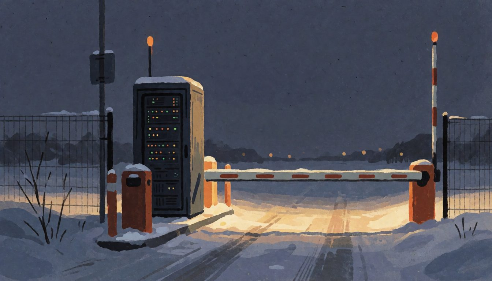
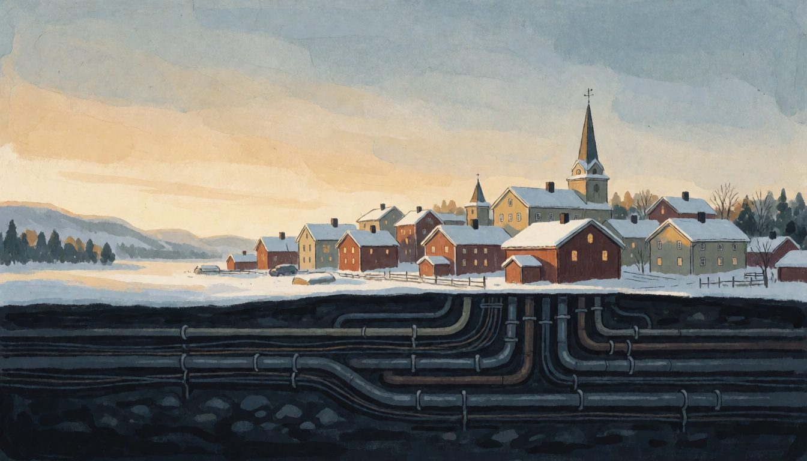

En bok för dig som ansvarar för att viktiga tjänster fortsätter fungera · första utkast
Vi måste överleva
Att analysera, utforma, driva och bevisa att uppdrag överlever allvarliga störningar
fre 2 jul 2021 19:00 kassaleverantör angripen, två led bort lör 3 jul 2021 800 butiker stängda lör 3 jul 2021 regionala föreningar med egna kassor: öppna tor 8 jul 2021 15:00 sista butiken öppnar, kassorna omstartade en och en
24 kapitel i sex delarSeminarieövningarEtt genomgående exempelFörsta kompletta utkast
Översättning av We Must Survive. Originalet är skrivet på engelska; den här utgåvan är översatt från det engelska utkastet och följer det kapitel för kapitel.
Förtext
Varför läsa den här boken?
Vad måste överleva, vad är det beroende av, och hur vet vi att det klarar sig?
I oktober 2023 förstörde angripare större delen av British Librarys egen IT. Katalogen, webbplatsen och de digitala samlingarna var borta i flera månader, och vissa system gick aldrig att återställa. Ändå fick alla sin lön i tid. Ekonomi, HR och lön låg i molnet, inte på bibliotekets egna servrar, och de fungerade som vanligt hela tiden. Byggnaderna höll också öppet, med läsesalar och utställningar.
Samma mönster återkommer gång på gång i den här boken. Organisationer som drabbas av samma störning klarar sig ofta helt olika. Skillnaden ligger i vad varje tjänst var beroende av och i vad som hade förberetts i förväg. I juli 2021 stängde de flesta av Coops 800 butiker i Sverige, eftersom deras kassaleverantör drabbades. Samtidigt fortsatte en handfull regionala föreningar att sälja mat. I januari 2024 stoppade en enda attack mot ett datacenter lönesystemet för 126 svenska statliga myndigheter. Ett universitet som körde en egen kopia av samma system uppgavs inte ha påverkats. I varje fall överlevde vissa delar av organisationen och andra inte, och skillnaden hade byggts in långt innan.
Den här boken handlar om att bygga den skillnaden med avsikt. Den ställer tre frågor om varje viktig tjänst: vad måste överleva, vad är det beroende av, och hur vet vi att det klarar sig?
Målet är en organisation som kan fortsätta fullgöra sitt uppdrag när mycket av det den normalt förlitar sig på är borta. Den förmågan måste finnas innan störningen börjar. Den sitter i hur organisationen arbetar: i system och förråd, i vem som får besluta, i avtal och alternativ, och i vad människor kan göra. En plan kan beskriva förmågan, men den kan inte skapa den. Därför ställer boken en praktisk fråga om varje reservlösning: kan vi göra det här i dag, med de människor och den utrustning vi har? Blir det ärliga svaret nej följer två frågor till. Var måste vi vara? Och hur kommer vi dit, med ägare, datum och kostnad?
De reservlösningar som håller är oftast de som kräver minst förändring av människorna. Den som kan fortsätta med välkänt arbete, med välkända verktyg och välkänt ansvar, klarar det kl. 03 på natten, dag fyra och vecka tre. Varje okänt moment som läggs till den svåra dagen är en sak till som organisationen måste visa att den klarar. Vissa moment kan konstrueras bort och andra kan förenklas. De som blir kvar måste övas tills de inte längre är okända.
Det är övningarna som visar hur det ligger till. De prövar den förmåga som organisationen tror att den har. De visar var förmågan vilar på ett verktyg som ingen når, en person som är borta eller en rutin som ingen har kört. Det övningen hittar måste sedan förändra organisationen. Annars har den bara gett en lärdom.
Boken lovar inte att du kan förutse varje händelse. Den siktar på täckning: att tänka brett och obekvämt nog om effekter, varaktigheter och beroenden för att en ny orsak sällan ska ge en ny sorts problem. Orsaken kan överraska dig. De förhållanden den skapar bör redan vara bekanta: människor som inte går att nå, data som inte går att lita på, en plats som inte går att komma in på, en leverantör som är borta längre än någon trodde.
Vad de flesta tror, och vad fallen visar
De flesta organisationer har redan en kontinuitetsplan, säkerhetskopior och ett leverantörsavtal. Problemet är att vart och ett vilar på en tro som låter rimlig men ofta visar sig fel när dagen kommer. Tabellen visar de vanligaste, och var i boken var och en behandlas.
Vad de flesta tror
Vad fallen visar
Var boken tar upp det
Vi planerar för de risker vi kan namnge.
Orsakerna tar aldrig slut. Effekterna är få. Oavsett orsak hamnar du i en av en handfull situationer: ingen kan logga in, en plats går inte att använda, en leverantör slutar leverera, för många är borta, data går inte att lita på. Planera för var och en av dem, och för hur länge den varar, så har du också planerat för de orsaker som ingen tänkte på.
Utrustning, avtal, utbildad personal och ett andra arbetssätt tar månader att få på plats. Det som inte fanns när krisen började finns oftast inte heller under den.
En leverantör återställer sina kunder i den ordning den själv väljer. Vid Tietos avbrott 2011 bestämde leverantören själv vilken kund som kom tillbaka först.
Reserver som delar inloggning, programuppdatering, leverantör eller kabelväg slutar fungera samtidigt. Maersk hade ungefär 150 domänkontrollanter, och en attack raderade varenda en som var uppkopplad.
En säkerhetskopia behöver någonstans att landa, en inloggning som fungerar och människor som har övat återställningen. British Library hade säkra kopior av sina samlingar men ingenting att återställa dem till.
De flesta planer är skrivna för den första natten. Det svåra är vecka tre, när samma trötta människor fortfarande gör arbetet för hand och nästa sak går fel.
Verkliga varningar ser ut som brus. British Librarys övervakning spärrade misstänkt aktivitet två dagar före attacken. Personalen hittade inget som såg uppenbart skadligt ut och hävde spärren av kontot.
Boken är skriven för den som ansvarar för att viktiga tjänster fortsätter att fungera, oavsett titel. Den ger dig ett arbetssätt som går från uppdraget ned till detaljerna och tillbaka. Du bestämmer vad som måste fortsätta fungera och hur länge. Du tar reda på vad det är beroende av, också det som ingen skriver ned: inloggningen, mobilnätet och de människor som kan. Du väljer en reservlösning för varje sorts effekt, och du övar tills du vet att den fungerar.
Allt tillämpas på en och samma organisation. Kapitel 0 presenterar Regionverket, ett påhittat bolag som levererar dricksvatten och fjärrvärme till ungefär 140 000 människor. Det har ett svårt år i den här boken. De flesta kapitel slutar med en seminarieövning där du och dina kollegor fattar Regionverkets beslut. Bilaga A har allt en spelledare behöver för att leda var och en.
Boken handlar om mer än IT. Skador drabbar fem ställen: tekniken, personalen, organisationen, byggnader och el, och kedjan av leverantörer. Många av de värsta felen i fallen kom från de lager som ingen hade kartlagt.
Vad du inte hittar
Det här är ingen bok om att stoppa attacker. Den utgår från att en attack lyckas och frågar vad som händer sedan. Den är inte heller en guide till certifiering mot en standard, även om den använder språket i ISO 22301 och i svensk beredskap där det hjälper. Du behöver inte läsa kod. Tekniska detaljer finns i bilaga D, för dem som bygger det du beslutar om.
Fallen är verkliga och kommer från publicerade rapporter. De flesta är skrivna av organisationerna själva eller av de myndigheter som utredde dem. Där ett faktum inte gick att kontrollera mot en sådan källa säger boken det, eller utelämnar det.
Förtext
Förord
Vem boken är skriven för, hur den är upplagd och hur du kan läsa den
Det här förordet är praktiskt. Det säger vem boken är skriven för, hur den är upplagd och hur du får ut mest av den. Varför ämnet är värt din tid tar avsnittet före upp, ”Varför läsa den här boken?”.
Vem den är till för, och vad den förutsätter
Boken har en läsare i tankarna: den som ansvarar för att en organisations viktiga tjänster fortsätter att fungera genom en allvarlig störning. Det kan vara en driftchef, en tjänsteägare eller systemägare, en beredskaps- eller kontinuitetssamordnare, en IT-chef eller en arkitekt med det ansvaret. Organisationen kan vara ett energi- eller vattenbolag, en myndighet, en kommun, ett sjukhus eller ett företag. Det läsarna har gemensamt är att de, den svåra dagen, kommer att få frågan vad som fortfarande fungerar och vad som händer sedan.
Metoden är tänkt att gå att ta med sig. Myndigheterna, lagarna och fallen är medvetet svenska och nordiska, eftersom det är där bokens tänkta läsare arbetar. En läsare i ett annat land kan byta ut myndigheterna och behålla frågorna.
Boken förutsätter att du känner din egen organisation och har varit med om åtminstone ett vanligt avbrott. Den förutsätter ingen teknisk utbildning. Du behöver inte läsa kod, och varje teknisk term förklaras där den först dyker upp. De tekniska detaljerna bakom kapitlen är samlade i bilaga D, så att du kan lämna dem till dem som bygger det du beslutar om.
Hur boken är upplagd
Kapitlen bygger på varandra, och ordningen är medveten. Boken börjar med att byta frågan ”om” mot ”när, och hur länge”. Sedan tar den reda på vad som måste fortsätta fungera och vad det är beroende av. Först därefter beskriver den de mönster som håller en tjänst igång. Människor, pengar och kommunikation kommer sedan, eftersom varje mönster är beroende av dem. De två sista delarna handlar om att visa att allt fungerar, och om det samhälle som din organisation är en del av.
flowchart TB
P1["Del I: Räkna med att det händer"] --> P2["Del II: Vad som måste fortsätta fungera, och vad det är beroende av"]
P2 --> P3["Del III: Mönster som håller uppdraget vid liv"]
P3 --> P4["Del IV: Människorna som bär det"]
P4 --> P5["Del V: Visa att det fungerar, och fortsätt visa det"]
P5 --> P6["Del VI: Bortom de egna väggarna"]
Bokens delar. Varje pil betyder ”det här behöver du först”. Senare kapitel hänvisar tillbaka till tidigare, så läs delarna i ordning första gången.
Del I, Räkna med att det händer, och bygg för det (kapitel 1–3). Varför du bör planera som om en allvarlig störning är säker, kartan som hela boken använder, och vad som måste finnas på plats före dagen.
Del II, Börja med det som måste fortsätta fungera (kapitel 4–8). Vilka tjänster som är viktigast och hur länge de kan stå still, vilka scenarier du ska planera för, vad varje tjänst är beroende av, och en reservlösning för varje sorts effekt. Kapitel 8 samlar allt på en sida för en enda tjänst.
Del III, Mönster som håller uppdraget vid liv (kapitel 9–13). En mindre tjänst som är planerad i förväg, reserver som inte slutar fungera samtidigt, arbete för hand, att lämna en leverantör, och att börja om från ett rent läge.
Del IV, Människorna som bär det (kapitel 14–18). Att nå människor när systemen ligger nere, att bestämma vem som beslutar, att bemanna en kris som varar i veckor, att betala för den, och en tryckt handbok för alla.
Del V, Visa att det fungerar, och fortsätt visa det (kapitel 19–21). Att märka problem i tid, att öva tills du vet att reservlösningarna fungerar, och att lära av det som händer utan att leta efter någon att skylla på.
Del VI, Bortom de egna väggarna (kapitel 22 och 23). El, tele och tid, som allt annat vilar på, och vad som ändras när Sverige planerar för tre månader av höjd beredskap.
Epilogen gör om boken till några vanor för en vanlig vecka. Längst bak finns de fyra bilagorna, källorna till varje fall, en läsguide, en ordlista med alla viktiga termer och ett register över fakta som fortfarande kontrolleras.
En modell, genom hela boken
Boken använder en enda modell, som kapitel 2 introducerar med hjälp av en verklig incident. Modellen utgår från organisationens uppdrag, det den finns till för att göra. Därifrån följer den varje viktig tjänst ned genom allt den är beroende av. Boken kallar det en uppdragskedja.
Skador kan drabba fem lager: teknik, personal, organisation, fysisk miljö (byggnader, el och utrustning) och leveranskedja. Det en organisation gör åt dem delas in i sex steg, som boken kallar cykeln: Kännedom, Begränsning, Upptäckt, Nedtrappning, Återhämtning och Anpassning. Lägg lagren som rader och stegen som kolumner, så har du kartan, ett rutnät som ställer en fråga i varje ruta. Kartan skisseras i kapitel 2 och fylls i för Regionverkets dricksvatten i kapitel 8. Däremellan lägger varje kapitel till den bit du behöver för att fylla i en annan del av den.
Det är hela kärnmodellen: uppdragskedjan, de fem lagren, de sex stegen och sidan de bildar tillsammans. Lagren och stegen är en syntes gjord för att hitta luckor, hämtad ur källorna i bilaga B. Andra böcker delar in samma område på andra sätt. Allt annat som boken ger namn åt, som tjänstekort, planeringsgrunder, nedtrappningsstegar, exitkort och övningskalendrar, är verktyg för att fylla i en del av sidan. Modellen behöver du komma ihåg. Verktygen kan du slå upp.
Regionverket och övningarna
Varje kapitel använder samma organisation. Regionverket är ett påhittat regionalt bolag som ägs av tre kommuner. Det levererar dricksvatten och fjärrvärme till ungefär 140 000 människor, och det har kundtjänst och ett faktureringssystem som köps som molntjänst. Storleken och de svaga punkterna är lånade från verkliga svenska energi- och vattenbolag och verkliga incidenter. Kapitel 0 presenterar Regionverket, och du kommer att lära känna dess driftcentral, leverantörer och luckor väl.
De flesta kapitel slutar med en seminarieövning om Regionverket: en diskussion där en grupp kollegor fattar bolagets beslut medan ett scenario utvecklas. Rutan i slutet av varje kapitel ger den korta versionen. Bilaga A har den fullständiga, med upplägg, inspel (nya händelser som för scenariot framåt), frågorna att ställa och anteckningar för spelledaren med dolda diskussionssvar. Kapitel 0 förklarar hur övningarna går till och vem som gör vad. De tar mellan 20 och 60 minuter, och de flesta fungerar med din egen organisation i stället för Regionverket.
Tre sätt att läsa varje kapitel
Läsare har olika behov, så varje kapitel kan läsas på tre djup:
Djup
För vem
Hur det ser ut
Kärna
Alla
Enkla förklaringar, definitioner och verkliga fall. Läs allt.
Tillämpning
De flesta läsare
Genomarbetade exempel på Regionverket, frågor under ”Testa dig själv” och övningarna. Gör så många du kan, helst tillsammans med andra.
Fördjupning
De nyfikna
Fällbara rutor med forskning, motbelägg och öppna debatter. Hoppa över dem vid första läsningen utan att tappa tråden.
Har du bråttom kan du läsa inledningen och syntesen i varje kapitel och ändå följa resonemanget.
Rutorna du kommer att se
Om datum och korrekthet
Fakta om verkliga incidenter kommer från publicerade källor: organisationernas egna rapporter, de myndigheter som utredde dem, och dokument från domstolar och myndigheter. Varje kapitel anger sina källor, och källorna till fallen längst bak listar dem i sin helhet. Där ett faktum inte gick att kontrollera har boken antingen utelämnat det eller sagt tydligt var det kommer ifrån.
Lagar och myndighetsnamn på det här området ändras ofta, och de ändrades mycket under 2025 och 2026. Myndigheten för samhällsskydd och beredskap (MSB) blev Myndigheten för civilt försvar (MCF) den 1 januari 2026. Dokument som publicerades före dess bär det gamla namnet. Varje rättsligt läge i boken anges som det var i oktober 2026, och bilaga C har en daterad förteckning. Kontrollera mot gällande text innan du förlitar dig på den.
Kapitel 00
Möt Regionverket
Organisationen som får ett svårt år i den här boken, och hur övningarna går till
Den här boken följer en organisation genom ett mycket svårt år. Den heter Regionverket och levererar dricksvatten och fjärrvärme till ungefär 140 000 människor i en svensk region. Regionverket finns inte. Allt om det är lånat från organisationer som finns: storleken från verkliga svenska energibolag, de svaga punkterna från verkliga incidenter och skyldigheterna från verkliga lagar.
Det svåra året börjar en måndagsmorgon i februari, i −18 °C. Kl. 06.40 försöker operatören på passet i Regionverkets driftcentral logga in i systemet som styr värmeverket, och inloggningen misslyckas. Telefonen fungerar fortfarande. Värmeverket går också, än så länge, med de inställningar det hade vid midnatt. Ute i regionen är tiotusentals hem beroende av att värmen inte försvinner.
Vad ska operatören göra nu? Vem ringer operatören, vad syns fortfarande, och hur lång tid finns det? De frågorna kan du besvara när du har läst boken. Det här kapitlet presenterar Regionverket. Det visar hur snabbt verkets fel skadar människor och vad verket är beroende av, och det förklarar övningarna som löper genom boken.
Ha din egen organisation i tankarna medan du läser, och ställ operatörens fråga om den. Hur mycket av det ni gör skulle fortfarande bli gjort om alla skärmar slocknade i morgon bitti? Regionverket är ett vatten- och värmebolag, men varje organisation med viktiga tjänster står inför samma frågor. I slutet av kapitlet matchar du Regionverkets delar mot dina egna.
En vanlig dag på Regionverket
En vanlig dag tänker ingen på Regionverket över huvud taget. Vatten kommer ur kranen, elementen är varma och räkningen kommer varje kvartal. Inuti är det fyra tjänster som samverkar.
Dricksvatten. Två vattenverk tar råvatten från en sjö och från grundvatten, renar det och pumpar ut det i ledningarna. Reservoarer och vattentorn rymmer ungefär ett dygns förbrukning, så kranarna fortsätter att ge vatten en tid om ett vattenverk stannar.
Fjärrvärme. Ett kraftvärmeverk eldar flis och värmer vatten, som pumpas genom ledningar under marken till bostäder, skolor, sjukhus och kontor. Två mindre oljeeldade pannor tar över de kallaste dagarna och när huvudanläggningen står still.
Kundtjänst. En grupp svarar på samtal, e-post och meddelanden från kunderna, och berättar för allmänheten vad som händer när något går fel.
Fakturering. Mätare rapporterar hur mycket vatten och värme varje kund förbrukar, och ett faktureringssystem som köps som molntjänst gör om det till fakturor.
Driftcentralen är bemannad dygnet runt. Därifrån övervakar och styr två operatörer per skift vattenverken, värmeverken och ledningsnäten. De använder ett styrsystem som en specialiserad leverantör hjälper till att underhålla. Resten av personalen arbetar ute i fält, i anläggningarna och på kontoret.
Regionverket i korthet
(påhittat)
Ägare
Tre kommuner i samma region
Antal människor som försörjs
Ungefär 140 000
Personal
Ungefär 420, inklusive en driftcentral som är bemannad 24 timmar om dygnet, med två operatörer per skift
Dricksvatten
Två vattenverk; reservoarer och vattentorn som rymmer ungefär ett dygns förbrukning
Fjärrvärme
Ett kraftvärmeverk, två oljeeldade pannor för topplast och reserv, ungefär 700 GWh värme per år; de flesta flerbostadshus i regionen är anslutna
Reservkraft
Reservkraftverk vid båda vattenverken, med bränsle för ungefär två dygn
Vattenreningskemikalier
Lager för ungefär tre veckor, levereras varje vecka av en enda leverantör
IT
En liten egen IT-grupp; inloggning via en inloggningstjänst i molnet; faktureringen köps som molntjänst
Storleken är realistisk. Eskilstuna Energi och Miljö hade ungefär 600 heltidsanställda 2025, och Jönköping Energi ungefär 300 år 2024. Båda driver en annan blandning av tjänster, och 420 ligger mellan dem. Svenska myndigheter använder påhittade organisationer på samma sätt som den här boken. Livsmedelsverkets handbok om krisberedskap för dricksvatten följer två sådana.
Hur snabbt gör det ont?
De fyra tjänsterna skadar inte människor lika snabbt när de stannar. Den skillnaden avgör mycket av det som kommer senare i boken.
Börja med värmen. När värmen försvinner på vintern kyls en byggnad av i en takt som beror på hur den är byggd och hur kallt det är ute. Energimyndigheten har räknat ut hur lång tid det tar för inomhustemperaturen att sjunka från +20 °C till +5 °C:
Byggnad
Vid 0 °C ute
Vid −20 °C ute
Flerbostadshus, betong, 1950-tal
Ungefär 10 dygn
Under 3 dygn
Flerbostadshus, betong, 1990-tal
Ungefär en månad
Ungefär 10 dygn
Flerbostadshus, trä, 1940-tal
Ungefär 4 dygn
Ungefär 1 dygn
Villa, 1950-tal
Anges inte
Ungefär ett halvt dygn
Hur lång tid det tar för en byggnad utan uppvärmning att kylas från +20 °C till +5 °C. Långt innan +5 °C är det för kallt för äldre och sjuka: Folkhälsomyndigheten räknar en inomhustemperatur under +18 °C som en olägenhet för människors hälsa. Källa: Energimyndigheten, Hur snabbt blir huset kallt vid el- eller värmeavbrott? (ET 2007:40).
Den där måndagen i −18 °C har Regionverket alltså inte veckor på sig. I de äldsta lägenheterna blir det för kallt för en äldre boende inom ett eller två dygn. Varje bostad passerar hälsogränsen på +18 °C långt innan den når +5 °C.
Vatten skadar på ett annat sätt. Kranarna ger vatten så länge reservoarerna räcker, vilket hos Regionverket är ungefär ett dygn. Sedan behöver människor nödvatten, som körs ut i tankar och dunkar, och det tar längre tid än de flesta tror. I Livsmedelsverkets övningar kom kommuner som gjorde ärliga uppskattningar fram till att det kunde ta upp till tre dygn innan alla tankar var på plats.
Vatten som inte går att lita på är värre än inget vatten alls. 2010–2011 gjorde en parasit i dricksvattnet i Östersund ungefär 27 000 människor sjuka, nästan hälften av dem som drack vattnet.
Faktureringen skadar långsamt. Går inga fakturor ut på en månad förlorar Regionverket pengar en tid och kunderna får en större räkning senare, men ingen blir sjuk. Kundtjänsten är något annat igen. En vanlig dag kan den vara långsam utan att någon tar skada. En svår dag är den vägen för 140 000 människor att få veta vad som händer, så den betyder mest just när allt annat slutar fungera.
Tjänst
Vem som skadas först
Hur snabbt
Fjärrvärme, på vintern
Äldre och sjuka i äldre lägenheter och hus
Timmar till några dygn
Dricksvatten
Sjukhus, äldreboenden, alla när reservoarerna är tomma
Ungefär ett dygn, sedan nödvatten
Kundtjänst
Alla som behöver veta vad som händer
Direkt, under varje annat avbrott
Fakturering
Regionverkets egen ekonomi
Veckor
Vad Regionverket är beroende av
Var och en av Regionverkets tjänster är beroende av saker som verket inte styr över. Kapitel 6 följer vart och ett av de beroendena hela vägen. Just nu räcker en första skiss för att se formen.
flowchart TB
subgraph ON["Det verket är beroende av"]
P["El"]
C["Kemikalier"]
F["Bränsle"]
I["Inloggning i molnet"]
M["Mobilnät"]
end
I --> S["Styrsystem"]
subgraph OUT["Det verket levererar"]
W["Vatten"]
H["Värme"]
K["Kundtjänst"]
B["Fakturering"]
end
P --> W
P --> H
C --> W
F --> H
S --> W
S --> H
I --> K
I --> B
M --> K
En första skiss av vad Regionverket är beroende av. Elen ligger under både vatten och värme. Inloggningen i molnet ligger under styrsystemet och nästan alla andra system som människor använder för att driva bolaget.
Två saker sticker ut. Den första är elen. Livsmedelsverkets handbok säger rakt ut att produktionen och distributionen av dricksvatten är ”helt beroende av elförsörjning”. Det gäller värmen också: verken behöver el till pumpar och styrning, och ledningarna behöver pumpar för att flytta det varma vattnet. Den andra är inloggningstjänsten. Nästan alla system som människor använder för att driva Regionverket, också styrsystemet, ligger bakom samma inloggning i molnet. Därför börjar måndagsmorgonen i februari med en inloggning som misslyckas.
Regionverket når inte heller upp till vägledningen på två punkter. Livsmedelsverket föreslår att vattenverk har bränsle för tre till fem dygns reservkraft, och tillräckligt med vattenreningskemikalier för att producera vatten i minst tre månader utan leveranser. Regionverket har bränsle för ungefär två dygn och kemikalier för ungefär tre veckor. Luckorna är medvetna i exemplet, och de är också normala i verkligheten. Kemikalier levereras precis i tid i hela branschen, och bränsletankar kostar pengar varje år de inte används. Regionverket tror att det kan hålla vattenverken igång på reservkraft. Övningarna i boken prövar hur länge den tron håller, precis som en ärlig övning i din egen organisation skulle göra.
Hur övningarna går till
De flesta kapitel slutar med en övning om Regionverket. Du kan göra dem ensam med en penna, men de fungerar bäst med fyra till åtta kollegor runt ett bord. Varje övning är en seminarieövning: en grupp går igenom, steg för steg, hur den skulle hantera en situation medan ny information kommer in. Övningsrutan i kapitlet är den korta versionen. Bilaga A har den fullständiga versionen av varje övning, med tider, inspelen, frågor som bara spelledaren ser och anteckningar om det som brukar komma fram. Ska du vara spelledare, läs bilagans version i förväg och håll den borta från deltagarna.
Metoden i boken följer den svenska övningsvägledningen från Myndigheten för samhällsskydd och beredskap (MSB), numera MCF, och det amerikanska övningsprogrammet HSEEP. Tre roller är alltid tillsatta:
Övningsledaren äger övningen. Övningsledaren öppnar och avslutar den, och kan avbryta den vid behov.
Spelledaren leder diskussionen, håller tiden och för in inspelen. Spelledaren är neutral och bör därför inte vara den högsta chefen eller den främsta experten i rummet. När spelledaren börjar besvara frågorna tystnar alla andra.
Utvärderaren lyssnar, antecknar mot övningens mål och leder genomgången efteråt.
I en liten grupp kan en person vara både övningsledare och utvärderare, men spelledaren bör vara någon annan.
Varje övning följer samma ordning. Övningsledaren förklarar syftet och reglerna, och den viktigaste regeln är att ingen bedöms för vad den säger. Spelledaren beskriver utgångsläget och ställer de första frågorna. Sedan kommer två eller tre inspel, vart och ett med egna frågor, och läget blir värre för varje inspel. I slutet håller gruppen en kort snabbgenomgång, en genomgång direkt efteråt medan minnet är färskt, med frågor som dessa:
Vad fungerade?
Var visste vi inte vem som beslutar?
Vad antog vi som vi aldrig har kontrollerat?
Vilken enskild förändring skulle förbättra vår hantering mest?
En övning skapar inte förmågan att agera. Den prövar en förmåga som organisationen tror att den redan har, och den är bara värd tiden om det den hittar förändrar något. Skriv varje fynd som en åtgärd med ägare och datum. Den listan är övningens åtgärdsplan, och nästa övning börjar med att kontrollera om den blev gjord. MSB:s vägledning uttrycker det enkelt: ”Ett av de viktigaste resultaten en övning kan generera är synliga och observerbara positiva förändringar.”
Fördjupning Hjälper övningar verkligen?
MSB är själv försiktig med vad en seminarieövning kan visa. Eftersom deltagarna bara talar om vad de skulle göra bygger formen kunskap och hittar luckor, men den bevisar inte att organisationen kan göra det. Tyngre övningar, där människor utför åtgärderna, kommer i kapitel 20.
Forskningen stöder det första påståendet mer än det andra. År 2017 gick Skryabina och kollegor igenom studier av övningar för hälso- och sjukvårdens krisberedskap. Övningarna förbättrade deltagarnas kunskap, självförtroende och förståelse av sina roller, men granskarna kunde inte säga om det ledde till bättre insatser i verkligheten. År 2020 studerade samma grupp de som arbetade vid terrorattackerna i Storbritannien 2017. Personal som hade övat ett liknande scenario kände sig bättre förberedd, och det spelade roll hur nyligen de hade övat. Men det bygger på vad de själva berättade. Underlaget är alltså rimligt för att övningar hjälper människor att lära sig, och tunt för att de förbättrar verkliga utfall. Boken använder dem eftersom de är billiga och hittar luckor.
Hitta ditt eget Regionverket
Du driver förmodligen inget vattenverk. Övningarna passar ändå, eftersom Regionverkets delar har motsvarigheter nästan överallt. Hitta dina innan du läser vidare:
På Regionverket
Fråga om din organisation
Värme och vatten: människor skadas inom timmar eller dygn
Vilken av era tjänster skadar någon utanför organisationen inom ett dygn om den stannar?
Fakturering: skadar långsamt, mest er själva
Vilka tjänster skulle kunna stå still i en månad och kosta er pengar, men inget värre?
Kundtjänst: betyder mest den värsta dagen
Hur får de ni betjänar veta vad som händer när ni har ett problem?
Driftcentralen: några få människor som måste agera först
Vem är vaken och i tjänst 06:40 en måndag, och vad får de besluta på egen hand?
Inloggningstjänsten: under nästan allt
Vilken enskild tjänst skulle dra med sig de flesta andra om den slutade fungera?
Skriv ned dina svar. De flesta kapitel ber dig tillämpa det du har läst först på Regionverket och sedan på din egen organisation. Din lista är utgångspunkten för det andra steget.
Syntes
Blick framåt
En måndagsmorgon som den kommer. Den öppna frågan är när. Kapitel 1 utgår från den tanken: räkna med att det händer, och se vad som ändras när du gör det.
Läs mer
Livsmedelsverket, Handboken för krisberedskap och civilt försvar inom dricksvatten (2024). Livsmedelsverkets handbok för dricksvattenproducenter, uppbyggd kring två påhittade organisationer.
Energimyndigheten, Hur snabbt blir huset kallt vid el- eller värmeavbrott? (ET 2007:40). Källan till avkylningstiderna i kapitlet.
MSB, Övningsvägledning: Metodhäfte – Seminarieövning (MSB2286, 2023). Den svenska vägledningen för seminarieövningar, med roller, ordning och fallgropar.
FEMA, Homeland Security Exercise and Evaluation Program (HSEEP) (2020). Den amerikanska doktrinen för att utforma, genomföra och följa upp övningar.
CISA, Tabletop Exercise Packages. Gratis färdiga övningar för kritisk infrastruktur, bland annat om ransomware och styrsystem.
Del I · Räkna med att det händer, och bygg för det
Del I · Inledning
Räkna med att det händer, och bygg för det
Varför visshet om en störning ändrar vad du bygger och vad du ber om
Den här delen utgår från ett enda antagande: en allvarlig störning kommer att inträffa, och de användbara frågorna är när, hur länge och vad som fortfarande fungerar. Antagandet flyttar uppmärksamheten från gissningar om nästa hot till det du kan besluta om i dag: vad du håller igång, vad du är beroende av och vad du har förberett före dagen.
De tre kapitlen bygger den ram som resten av boken använder.
Läs den här delen först, även om du är frestad att hoppa till ett senare kapitel. Varje senare kapitel fyller i en bit av kartan från kapitel 2, och varje övning utgår från antagandet i kapitel 1.
Kapitlen:
Kapitel 1, Tänk om vi drabbas i morgon?: vad som ändras när du räknar med att en allvarlig störning är säker, visat med incidenter där en enda leverantörs fel stoppade många organisationer samtidigt
Kapitel 2, Kan vi se helheten?: bokens karta, en organisations fem lager mot sex steg från kännedom till anpassning, visad med en verklig incident
Kapitel 3, Vad måste finnas före krisen?: vad du bara kan ha i en kris om du byggde det först, eftersom de förmågor som räddar organisationer sällan går att improvisera när dagen kommer
Kapitel 01
Tänk om vi drabbas i morgon?
Räkna med att det händer
De flesta organisationer planerar som om en allvarlig störning skulle kunna inträffa. Den här boken utgår från en annan regel: räkna med att det händer. Gör du det är frågan inte längre om du drabbas, utan när, hur länge och vad som fortfarande fungerar under tiden.
Regeln kan låta dyster. I praktiken är den en lättnad, eftersom den byter en fråga som ingen kan besvara mot frågor som du kan arbeta med. Ingen kan säga om din största leverantör blir attackerad nästa år. Vem som helst kan säga vad som skulle stanna om den blev det, och hur länge du skulle klara dig utan den. Det här kapitlet visar vad som ändras när du planerar på det sättet. Det börjar med en attack mot svenska myndigheter i januari 2024.
Regionverkets måndagsmorgon i kapitel 0 är en sådan störning. Det här kapitlet handlar om att planera som om du visste att den skulle komma.
Ett datacenter, dussintals myndigheter
Tietoevry är en av de största IT-leverantörerna i Norden. Natten mellan fredagen den 19 och lördagen den 20 januari 2024 attackerade kriminella bolaget med en ransomware som heter Akira. Attacken träffade det som Tietoevry beskrev som ”delar av ett av Tietoevrys flertal datacenter i Sverige”. Det räckte för att stoppa tjänster för många av bolagets kunder.
En av tjänsterna var Primula, ett system för HR och lön. Statens servicecenter sköter lönehanteringen åt många myndigheter med Primula, och många universitet och högskolor använder det också. När Primula slutade fungera förlorade 126 av Statens servicecenters kundmyndigheter, med ungefär 62 000 anställda, systemet på en gång, och många lärosäten med dem. Personalen kunde inte rapportera ledighet eller begära ersättning för utlägg, och de som skötte lönerna kom inte åt systemet de arbetade i. Primula låg nere till den 2 februari.
Januarilönerna betalades ut i tid, men inte för att någon hade planerat för attacken. Lönefilerna hade redan skickats till banken innan den började. Om attacken hade kommit innan filerna gick iväg, hade många statsanställda kunnat få lönen för sent.
Det som gick att planera var veckorna efteråt. Statens servicecenter hade planerat för något sådant utan att veta vad det skulle bli. Enligt årsredovisningen kunde myndigheten fortsätta arbeta under incidenten med hjälp av kontinuitetsplaner som var förberedda i förväg. Där står också att myndigheten agerade snabbt för att säkra lönerna för de drabbade myndigheterna. Ingen hade förutsett Akira eller just det datacentret. Någon hade räknat med att lönesystemet en dag inte skulle finnas där.
Fyra ord som ofta blandas ihop
Fyra ord används ofta som om de betydde samma sak. En plan som täcker ett av dem antas då täcka alla fyra. Den här boken använder orden så här. Definitionerna är en arbetsuppsättning, vald så att luckorna mellan dem syns. Andra böcker och standarder drar gränserna på andra ställen.
Ord
Vad det betyder
På Regionverket
Robusthet
Att stå emot de störningar man har konstruerat för, utan att ändra sitt arbetssätt
Värmeverket fortsätter att gå genom en vanlig spänningsdipp, eftersom det byggdes för det
Resiliens
Att anpassa sig till det man inte har konstruerat för, genom att ändra sitt arbetssätt
När inloggningen misslyckas går operatörerna över till lokal styrning och ringer varandra
Kontinuitet
Att hålla de viktigaste tjänsterna igång på en planerad, lägre nivå under en störning
En skriven plan säger vilka tjänster som går först och på vilken nivå när styrsystemet ligger nere
Survivability
Uppdraget fortsätter även efter att något har gått allvarligt fel
Bostäderna förblir varma hela februari, vad problemen än beror på
Survivability är det resultat som de tre andra finns till för.
Den här boken handlar om survivability, och det valet får en praktisk följd. Robusthet har ingenting att erbjuda den dag något händer som ingen konstruerade för. En kontinuitetsplan fungerar på papperet och kan misslyckas i praktiken. En plan beskriver vad organisationen tänker göra, och den är inget belägg för att organisationen kan göra det. Survivability ställer en enda fråga till båda: blir uppdraget fortfarande utfört?
Från ”om” till ”när, och hur länge”
Det mesta riskarbete börjar med frågan hur troligt något är. En riskmatris multiplicerar sannolikhet med konsekvens, och de händelser som verkar osannolika hamnar längst ned på listan. Det fungerar för vanliga risker som inträffar ofta nog för att gå att uppskatta. För de händelser som den här boken handlar om fungerar det dåligt. Ta en ransomwareattack mot din största leverantör, en vecka utan el på vintern eller en lag som förbjuder ett system du är beroende av. Var och en är sällsynt för en enskild organisation. Under några år är det nästan säkert att en av dem, eller något liknande, inträffar.
När du räknar med att det händer ersätts frågan ”hur troligt är det?” av tre frågor:
När? Räkna med sämsta tänkbara tillfälle, inte en genomsnittlig dag: lönedagen, den kallaste veckan, natten före en deadline.
Hur länge? Räkna med längre tid än som känns bekvämt. I november 2011 gick ett lagringssystem sönder hos Tieto, bolaget som blev Tietoevry 2019. Vissa kunder fick vänta upp till sex veckor på sina system, och Primula låg nere i två.
Vad fungerar fortfarande? Fråga vad du fortfarande kan leverera, inte bara vad som går sönder.
Frågorna ändrar hur du beskriver det du fruktar. Organisationer brukar namnge orsaken: ”en cyberattack”, ”ett elavbrott”, ”leverantören går i konkurs”. Orsaken är det du minst kan förutse och minst kan styra. Det du planerar för är effekten och dess varaktighet. ”En cyberattack mot vårt styrsystem” blir ”styrsystemet går inte att använda på två veckor i februari”. Den andra versionen säger vad du ska förbereda, och den täcker många orsaker på en gång. Det är hela metodens mål: att täcka effekter och varaktigheter så brett att en orsak som ingen har namngett ger problem som organisationen redan har förberett sig för.
När skyddet är problemet
Störningen som du räknar med behöver inte vara en attack. Ibland kommer den från det du köpte för att skydda dig. Fredagen den 19 juli 2024 skickade CrowdStrike, ett stort säkerhetsföretag, ut en rutinuppdatering av sin säkerhetsprogramvara Falcon för Windowsdatorer. Uppdateringen gick ut kl. 04.09 UTC. Den innehöll ett fel: en del av uppdateringen beskrev 21 indata, medan programvaran på datorerna bara lämnade 20. Datorer som fick uppdateringen kraschade, och kraschade sedan igen varje gång de startade om.
CrowdStrike rättade uppdateringen 78 minuter senare, kl. 05.27 UTC. För många datorer var det för sent, eftersom en dator som kraschar när den startar inte kan ladda ned rättelsen. Många fick lagas för hand, en maskin i taget. Microsoft uppskattade senare att 8,5 miljoner Windowsenheter hade drabbats, under en procent av alla Windowsmaskiner. Den procenten omfattade flygbolag, sjukhus, banker och tv- och radiobolag.
Ingen attackerade någon. En säkerhetsprodukt som fanns på de bäst skyddade datorerna i många organisationer stoppade dem alla på en gång. Därför behandlar den här boken ditt försvar som beroenden, precis som alla andra. Säkerhetsprogramvara, övervakningsverktyg och uppdateringstjänster har med avsikt djup åtkomst till dina system, och de är ofta installerade överallt samtidigt. När de slutar fungera gör de det därför också överallt samtidigt.
En gammal idé: räkna med att du drabbas
Definitionen av survivability i rutan ovan kommer från en rapport från 1997, Survivable Network Systems: An Emerging Discipline, skriven av en grupp vid Software Engineering Institute i Pittsburgh. Författarna menade att stora nätverksanslutna system aldrig kunde hållas helt säkra. Därför borde de byggas så att de fortsatte leverera sina väsentliga tjänster även efter att en angripare hade tagit sig in. Det resonemanget är den här bokens utgångspunkt.
Idén har spridits sedan dess. Inom IT-säkerhet kallas den ”assume breach”: planera som om en angripare redan finns inne i dina system. Den amerikanska standardiseringsorganisationen NIST bygger sin vägledning om cyberresiliens (SP 800-160 Volume 2, reviderad 2021) på samma tänkande, med fyra mål: förutse, stå emot, återhämta sig och anpassa sig. Den svenska planeringen för civilt försvar kräver att samhället ska klara minst tre månader av allvarlig störning, utan att peka ut en enda orsak. Kapitel 5 återkommer till det antagandet. Den här boken tillämpar idén på en hel organisation, inte bara dess IT, för dem som ansvarar för organisationens tjänster.
Fördjupning Safety-I och Safety-II
Säkerhetsforskaren Erik Hollnagel beskriver två sätt att tänka om säkerhet. I det han kallar Safety-I betyder säkerhet att så lite som möjligt går fel: du studerar olyckor, hittar orsakerna och tar bort dem. I Safety-II betyder säkerhet att så mycket som möjligt går rätt. Du studerar det vanliga arbetet och hur människor anpassar det varje dag för att hantera överraskningar, eftersom det är den vardagliga anpassningen som håller saker igång.
Båda synsätten spelar roll för survivability. Safety-I-tänkandet ger robusta system och rättar orsakerna till tidigare incidenter. Safety-II-tänkandet förklarar varför organisationer tar sig igenom händelser som ingen planerade för: människor anpassar sig, och det de anpassar är det vanliga arbete de kan. Det är ett skäl till att boken vill att en reservlösning ska likna det vanliga arbetet så mycket som möjligt, fast under sämre förhållanden. Då är det skillnaden mellan de två som människor måste öva på. ”Räkna med att det händer” hämtar från båda: du förbereder dig för de effekter du kan förutse, och du värnar den vardagliga förmågan att anpassa sig för dem du inte kan förutse. Safety-II används mycket inom säkerhetsforskning och praktik, men det är ett sätt att tänka och ingen prövad metod, och dess värde är omdiskuterat bland praktiker.
Syntes
Blick framåt
Att räkna med att det händer väcker ett praktiskt problem: mycket kan hända, och det kan drabba många olika delar av organisationen. Kapitel 2 ger dig en karta där du ser allt på en sida, med British Librarys år av störningar som exempel.
Läs mer
Robert J. Ellison et al., Survivable Network Systems: An Emerging Discipline (CMU/SEI-97-TR-013, Software Engineering Institute, 1997, reviderad 1999). Rapporten som definierade survivability.
NIST, Developing Cyber-Resilient Systems: A Systems Security Engineering Approach (SP 800-160 Volume 2, Revision 1, 2021). Detaljerad och teknisk, men den tydligaste beskrivningen av förutse, stå emot, återhämta sig och anpassa sig.
Erik Hollnagel, Safety-I and Safety-II: The Past and Future of Safety Management (Ashgate, 2014). Argumenten för att studera det som går rätt.
CrowdStrike, Channel File 291 Incident Root Cause Analysis (6 augusti 2024). En tydlig redogörelse för hur en enda felaktig uppdatering stoppade miljontals datorer.
Kapitel 02
Kan vi se helheten?
Bokens modell, visad på en enda incident
Räknar du med att något illa kommer att hända, stöter du snart på ett praktiskt problem. Nästan vad som helst kan hända, med nästan vilken del av organisationen som helst. En cyberattack slår mot systemen, en storm mot byggnaderna, en sjukdom mot personalen, en konkurs mot en leverantör. Var börjar du, och hur vet du att du inte har glömt ett helt område?
Det här kapitlet ger dig en karta som får plats på en sida. Den har två delar. Den ena är fem lager i en organisation där skadan kan slå till. Den andra är sex steg i det organisationen gör åt skadan. Stegen går från att veta vad den har till att lära sig efteråt. Här ser du kartan använd på en enda verklig incident: attacken mot British Library i London i oktober 2023. Attacken berör varje del av kartan, och biblioteket har publicerat en ovanligt ärlig redogörelse för den.
Kapitel 1 bad dig planera efter effekt och varaktighet i stället för efter orsak. En karta ordnar just det: vad du har och vad du gör, inte allt som kan gå fel.
Ett bibliotek, en lördag
British Library är Storbritanniens nationalbibliotek. Det har en av världens största samlingar, driver läsesalar för forskare, visar utställningar och lånar ut material till andra bibliotek. Lördagen den 28 oktober 2023 kl. 07.35 upptäckte en person i bibliotekets teknikgrupp att hen inte kom in på bibliotekets nätverk.
Inom två timmar stod det klart att det var en cyberattack. Kl. 09.15 aktiverade bibliotekets kontinuitetsansvarige krisplanen. Kl. 10.00 möttes bibliotekets högsta krisledningsgrupp, som kallas Gold, i ett videosamtal på WhatsApp, eftersom e-posten inte fungerade. En kriminell grupp som heter Rhysida tog senare på sig attacken. Gruppen hade kopierat omkring 600 GB filer, bland dem personuppgifter om personal och användare. Den hade också krypterat eller förstört en stor del av bibliotekets servrar, delvis för att göra återhämtningen svårare. Biblioteket vägrade betala lösen, och de stulna uppgifterna publicerades på darknet.
Skadan var djup, men den var ojämn. Bibliotekets egen genomgång, publicerad den 8 mars 2024, räknar upp det som fortsatte att fungera:
Byggnaderna höll öppet, med utställningar, evenemang och läsesalar. Säkerhetssystemen som styr dörrarna fungerade nämligen fortfarande.
Ekonomi, HR och lön fungerade som vanligt hela tiden, eftersom de låg i molnet och inte på bibliotekets egna servrar. Genomgången beskriver e-posten i molnet som i stort sett opåverkad, även om krisledningsgruppen inte kunde använda den den första morgonen.
Biblioteket hade säkra kopior av sina digitala samlingar. Det som saknades var fungerande utrustning att återställa dem på, eftersom angriparna hade förstört den.
Forskartjänsterna drabbades hårdast. En sökbar version av huvudkatalogen kom tillbaka först den 15 januari 2024, elva veckor senare. Flera äldre system gick inte att få tillbaka alls, bland dem huvudsystemet för bibliotekets tjänster. De var för gamla för att köras på den nya, säkrare utrustningen, eller stöddes inte längre av sina tillverkare.
Fem lager där skadan slår till
En cyberattack låter som ett tekniskt problem. Genomgången från British Library visar hur snabbt den blev ett problem för hela organisationen. Den här boken delar in en organisation i fem lager, och attacken nådde alla:
Lager
Vad det omfattar
På British Library
Teknik
System, data, nätverk, konton
Servrar krypterade eller förstörda; gamla system som inte gick att återställa; molnsystem som fortsatte att fungera
Personal
Medarbetarna, deras kunskaper, deras välmående
Personaluppgifter stulna; många medarbetare kunde inte göra sitt jobb; kreditbevakning köpt åt all personal; en teknikgrupp som redan var hårt belastad
Organisation
Beslut, mandat, rutiner, planer
En krisorganisation (Gold och Silver) som ersatte den vanliga ledningen fram till mitten av januari
Fysisk miljö
Byggnader, el, utrustning
Byggnader, läsesalar och utställningar höll öppet hela tiden
Leveranskedja
Leverantörer, partner och deras åtkomst
Den troliga vägen in var en server som externa partner och IT-personal använde för fjärråtkomst
Raden om leveranskedjan har en förhistoria. Biblioteket anlitade många externa partner för programutveckling och IT-underhåll, och en del av dem hade kraftfulla konton i dess nätverk. I slutet av 2022, ett år före attacken, hade bibliotekets egen grupp för informationsstyrning pekat ut det växande antalet partner med åtkomst som en risk. En översyn var planerad till 2024. Attacken kom först.
Börja med uppdraget, inte med systemen
Det mest användbara i genomgången från British Library är hur den mätte skadan. Den listade inte trasiga system. Den gick igenom de sex saker som biblioteket finns till för, som det kallar sina syften, och bedömde vart och ett:
Syfte
Bedömning
Vad genomgången säger
Kultur
Grön
Evenemangen fortsatte; utställningen Fantasy slutade på 105 % av målet
Näringsliv
Grön / gul
Stödet till företag fortsatte och slog sina mål; ingen webbplats för marknadsföring
Lärande
Grön / gul
Workshoppar på plats fortsatte; lärandet på nätet i praktiken pausat
Internationellt
Grön / gul
Samarbetena fortsatte i stort sett utan hinder
Förvaltning av samlingarna
Röd / gul
Samlingarna i säkerhet, men nytt tryckt material kunde inte registreras eller ställas upp; digitaliseringen pausad
Forskning
Röd / gul
Läsesalarna öppna, men bara ungefär halva den fysiska samlingen gick att nå och det mesta digitala innehållet var otillgängligt
Sett så här ”slog attacken inte ut biblioteket”. Den drabbade två av dess sex syften hårt och de andra fyra lätt. Den bilden är mycket mer användbar för den som ska bestämma vad som ska återställas först. Det är också därför kartan börjar med det organisationen finns till för. I den här boken kallas det en organisation finns till för dess uppdrag. Varje viktig tjänst som levererar ett uppdrag går att följa ned genom allt den är beroende av, och den kedjan kallas en uppdragskedja. Kapitel 4 visar hur du hittar dina.
Sex steg, från kännedom till anpassning
Lagren säger var skadan slår till. Stegen säger vad organisationen gör åt den, före, under och efter. Boken använder sex steg, i en cykel:
flowchart LR
K["Kännedom"] --> C["Begränsning"]
C --> R["Upptäckt"]
R --> D["Nedtrappning"]
D --> V["Återhämtning"]
V --> A["Anpassning"]
A -.-> K
De sex stegen. Under en incident kommer de ungefär i tidsordning. Den streckade pilen är återkopplingen: det du lär dig i Anpassning ändrar det du vet, så cykeln tar aldrig riktigt slut.
Här är varje steg, med det som hände på British Library:
Kännedom. Vet vad du har, vad som är viktigast och vad det är beroende av. Biblioteket visste att fjärråtkomsten till dess egna servrar saknade ett andra inloggningssteg (flerfaktorsautentisering, MFA). Det hade 2020 beslutat att avstå av praktiska skäl och av kostnadsskäl, och noterat risken. Med bibliotekets egna ord blev konsekvenserna ”kanske underskattade”.
Begränsning. Begränsa hur långt skadan kan spridas. En del av bibliotekets skydd fungerade: de bärbara och stationära datorerna var skyddade och blev inte krypterade. Men det gamla nätverkets uppbyggnad lät angriparna nå mycket fler servrar än en modern utformning hade gjort.
Upptäckt. Märk att något är fel, och tro på det. Bibliotekets övervakning blockerade misstänkt aktivitet natten till den 26 oktober, två dagar före attacken. Personalen undersökte saken, hittade inget som var uppenbart skadligt och låste upp kontot. Först i efterhand såg det ut som angriparnas första besök. Kapitel 19 tittar på varför sådana signaler är så svåra att tolka.
Nedtrappning. Håll de väsentliga delarna igång på en lägre nivå. Byggnaderna och utställningarna höll öppet, och forskare kunde fortfarande beställa material för hand ur en begränsad katalog. Det som fortsatte var vanligt arbete, gjort för hand under sämre förhållanden, och den formen bör en reservlösning ha. Det som måste övas är skillnaden mellan de två.
Återhämtning. Ta dig tillbaka till normal drift. Återhämtningen tog månader, eftersom det inte fanns något att återställa säkerhetskopiorna på och vissa system inte gick att återställa alls.
Anpassning. Lär dig och förändra, så att det går bättre nästa gång. I december ersatte biblioteket sin krisorganisation med ett program på 18 månader som heter Rebuild & Renew, i tre faser som det kallade Respond, Adapt och Renew. Det publicerade också 16 lärdomar för andra.
Lagren och stegen är bokens egen indelning, en syntes som är gjord för att hitta luckor. Ramverken i fördjupningen nedan delar upp arbetet på andra sätt. Använder du redan ett av dem, är kartan tänkt att gå att översätta till det.
Hela kartan på en sida
Lägg ihop lagren och stegen, så får du kartan: ett rutnät med de fem lagren som rader och de sex stegen som kolumner. Varje ruta ställer en fråga. Rutan där Personal möter Nedtrappning frågar: hur håller vår personal det väsentliga arbetet igång när systemen ligger nere? Rutan där Leveranskedja möter Upptäckt frågar: skulle vi märka om en partners åtkomst missbrukades?
För British Library fylls rutnätet i så här. Varje rad visar ett exempel ur genomgången.
Lager
Ett steg som höll
Ett steg som brast
Teknik
Nedtrappning: molnsystem höll e-post, ekonomi och lön igång
Återhämtning: ingen utrustning att återställa säkerhetskopiorna på; gamla system kunde inte komma tillbaka
Personal
Nedtrappning: personalen höll läsesalarna igång med manuella rutiner
Kännedom: en redan hårt belastad teknikgrupp, som i efterhand pekades ut som en risk för återhämtningen
Organisation
Upptäckt: krisplanen var aktiverad inom två timmar från det första tecknet
Kännedom: många små accepterade risker lades aldrig ihop på ledningsnivå
Fysisk miljö
Nedtrappning: byggnader och utställningar öppna hela tiden
(Inget fel rapporterat)
Leveranskedja
Återhämtning: externa säkerhetsexperter inkallade första dagen
Begränsning: partners fjärråtkomst utan ett andra inloggningssteg
Ett rutnät för din egen organisation visar något som en risklista inte kan visa: de tomma rutorna, där ingen kan säga om organisationen kan göra det i dag. En fylld ruta är inte heller målet. Varje ruta är ett påstående om vad en viktig tjänst kan överleva. Den ska svara på ägarens fråga: Kan vi göra det här i dag, med de människor och den utrustning vi har? Om inte: var måste vi vara, och hur kommer vi dit, med ägare, datum och kostnad? Tills en övning, en incident eller ett test har prövat en ruta är den en hypotes. Målet är inte ett fullt rutnät utan nyttiga tvivel. Kapitel 8 bygger rutnätet för Regionverkets dricksvatten, när kapitlen före det har gett dig det du behöver för att fylla i det.
Fördjupning Var kartan kommer ifrån
De fem lagren bygger på praxis inom kontinuitetshantering, som planerar för förlusten av lokaler, personal, teknik och leverantörer (ISO 22301 och riktlinjerna från Business Continuity Institute). De sex stegen stämmer överens med tre befintliga ramverk:
Steg
SEI survivability (1997)
NIST SP 800-160 Vol. 2
Hollnagels resiliensförmågor
Kännedom
Essential services and assets
Anticipate
Anticipate
Begränsning
Resistance
Withstand
Respond
Upptäckt
Recognition
Withstand
Monitor
Nedtrappning
Recovery of essential services
Withstand, recover
Respond
Återhämtning
Recovery
Recover
Respond
Anpassning
Adaptation and evolution
Adapt
Learn
Kartan tillför två egna saker. Den skiljer Nedtrappning från Återhämtning, eftersom att hålla en begränsad tjänst igång och att ta sig tillbaka till det normala är olika uppgifter med olika ägare. Och den sätter lagren och stegen på samma sida.
Så fyller resten av boken i kartan
Varje del av boken fyller i en del av kartan, ungefär i cykelns ordning. Del II handlar om Kännedom och slutar med hela kartan i kapitel 8. Del III handlar om Begränsning, Nedtrappning och Återhämtning: att hålla det viktigaste igång, reserver som inte slutar fungera samtidigt, att arbeta för hand, att lämna en leverantör och att börja om. Del IV tar lagren personal och organisation genom alla steg. Del V handlar om Upptäckt och Anpassning, och del VI tar kartan utanför organisationen, till infrastrukturen och till ett land i höjd beredskap.
Syntes
Blick framåt
Kartan är bara användbar om du kan fylla i den innan lördagsmorgonen kommer. Mycket av det som räddade British Library gick inte att ordna på dagen: lönesystemet i molnet och den nya utrustning som biblioteket hade godkänt och köpt före attacken. Den utrustningen är skälet till att återuppbyggnaden kunde börja i december. Kapitel 3 frågar vad som måste finnas före krisen.
Läs mer
British Library, Learning Lessons from the Cyber-Attack: British Library Cyber Incident Review (8 mars 2024). Arton sidor, öppenhjärtig och lättläst, och källan till det här kapitlet. De 16 lärdomarna är värda att läsa var för sig.
ISO 22301:2019, Security and resilience: Business continuity management systems. Den internationella standarden för kontinuitet, uppbyggd kring förlusten av lokaler, personal, teknik och leverantörer.
NIST, Developing Cyber-Resilient Systems (SP 800-160 Volume 2, Revision 1, 2021). De fyra målen anticipate, withstand, recover och adapt, på djupet.
Kapitel 03
Vad måste finnas före krisen?
Det du kan ha i en kris bara om du byggde det först
Coop är en av Sveriges stora livsmedelskedjor, med omkring 800 butiker. Fredagen den 2 juli 2021, vid sjutiden på kvällen, slutade kassorna att fungera i de flesta av butikerna. Orsaken var en ransomware-attack mot företaget som levererade Coops kassor. Attacken nådde kassorna via ett programverktyg som det företaget använde för att sköta dem. Utan kassor kunde butikerna inte ta betalt, så de stängde, i början av sommarlovet.
Vissa Coop-butiker höll öppet hela helgen. Butikerna i Värmland, Norrbotten, på Gotland, i Oskarshamn och i Tabergsdalen fortsatte att sälja mat, och det gjorde även nätbutiken. Coop listade dem i sitt meddelande till kunderna som inte drabbade. Ingen hade planerat det så, såvitt någon har sagt. Butikerna som höll öppet stod helt enkelt inte på den kedja som gick sönder.
Det här kapitlet handlar om skillnaden mellan den sortens tur och en plan. En del går att ordna samma dag som krisen börjar. Mycket går inte: utrustning, avtal, utbildad personal och ett andra arbetssätt tar månader att få på plats. Finns de inte när krisen börjar, har du dem inte under den.
Kapitel 2 slutade med British Librarys lönesystem i molnet och den utrustning biblioteket hade beställt före attacken. Inget av det hade gått att ordna på lördagsmorgonen. Det här kapitlet frågar vad mer som hör till den kategorin, och hur du tar reda på det innan du behöver det.
Vissa butiker höll öppet
Coops kassor kom tillbaka långsamt, eftersom var och en måste åtgärdas på plats. Under helgen och veckan efter åkte tekniker ut över landet och återställde kassasystemen butik för butik. Ett hundratal butiker hade öppnat igen till måndagen den 5 juli. Onsdagen den 7 juli var omkring 500 av de 800 öppna igen, och torsdagen den 8 juli meddelade Coop att alla butiker var öppna. Kapitel 6 följer leverantörskedjan fram till kassorna, och visar hur långt bort attacken egentligen började.
Under större delen av den veckan var de regionerna och nätbutiken allt av Coop som fortfarande kunde sälja mat. Coop i Sverige är inte ett företag med en uppsättning system. Butikerna drivs av flera regionala konsumentföreningar och av en central organisation, och alla köper inte samma saker på samma sätt. Coop har inte offentligt förklarat varför butikerna i Värmland, Norrbotten och de andra regionerna klarade sig. Det viktiga här är två saker. De var uppbyggda på ett annat sätt än resten och var inte beroende av kedjan som brast. Och ingen har beskrivit det som en plan. Det hjälpte Coop den veckan, men ingen hade kunnat räkna med det i förväg.
Coop är inte den enda organisation som har räddats av något den inte hade planerat. Vad det är som räddar dig avgör om du kan lita på det. Därför delar nästa avsnitt in sådant i tre sorter.
Planerad, oavsiktlig eller improviserad
En reservlösning är det som låter en tjänst fortsätta, på någon nivå, när det vanliga sättet att leverera den upphör. Reservlösningar finns i tre sorter, beroende på hur de kom till.
En planerad reservlösning infördes med avsikt, för just den här sortens dag. Statens servicecenters kontinuitetsplaner för förlusten av Primula i kapitel 1 är en sådan. Någon hade räknat med att lönesystemet en dag inte skulle finnas, och hade bestämt vad som skulle göras då.
En oavsiktlig reservlösning finns av ett annat skäl och råkar överleva. Coops regioner är ett exempel. Umeå universitet är ett annat: det kör en egen installation av Primula i stället för den som Tietoevry drev. Enligt listor som sammanställdes utifrån Sveriges Radios rapportering då drabbades universitetet inte. Universitetet gjorde det valet av egna skäl, inte som en reservlösning.
Den mest kända oavsiktliga reservlösningen tillhör rederiet Maersk. I juni 2017 raderade en attack företagets domänkontrollanter, servrarna som har de konton som alla loggar in med, över hela världen. Alla utom en. Den som överlevde stod i Ghana, där ett strömavbrott hade kopplat bort servern innan attacken spred sig. Kapitel 13 berättar hur Maersk byggde upp allt på nytt från den.
En improviserad reservlösning hittas på samma dag. Coops tekniker som återställde kassor butik för butik improviserade, och det gjorde också Nacka kommun i kapitel 6, som betalade ut försörjningsstöd för hand när systemen var borta. Människor improviserar när det inte finns något annat, och det fungerar ofta bättre än någon väntat sig. Men det går långsamt, det beror på vem som råkar vara på plats, och det skalar som Coops vecka: en butik i taget.
Sort
Hur den kom till
Exempel
Kan du räkna med den?
Planerad
Införd med avsikt, för just den här sortens dag
Statens servicecenters kontinuitetsplaner, 2024
Ja, om den underhålls och testas
Oavsiktlig
Finns av ett annat skäl och råkar överleva
Coops regioner, 2021; Maersks server i Ghana, 2017
Nej: ingen vet att den finns förrän efteråt
Improviserad
Hittas på samma dag av dem som är på plats
Coops tekniker som återställde kassor butik för butik
Delvis: den fungerar i liten skala, långsamt, med rätt personer
Målet med det här kapitlet är att göra så mycket som möjligt till den första sorten. En oavsiktlig reservlösning som du har hittat och skrivit ned blir en planerad, eftersom någon nu kan hålla den vid liv med avsikt. Improvisation blir mycket bättre när människor har övat den, och det är ett tema i del IV och V.
Säkerhetskopior utan någonstans att landa
Den vanligaste planerade reservlösningen är en säkerhetskopia. British Library i kapitel 2 visar varför en säkerhetskopia inte räcker ensam: biblioteket hade säkra kopior av alla sina digitala samlingar men ingenstans att lägga tillbaka dem. I sin egen genomgång skriver biblioteket att det ”hämmades av bristen på fungerande infrastruktur att återställa dem på”.
Återuppbyggnaden började i december 2023, och bibliotekets genomgång är exakt om varför den kunde börja då. Den nya utrustningen hade ”godkänts och köpts före attacken”. Bibliotekets styrelse hade redan avsatt pengar till en ny, säkrare infrastruktur som en del av strategin för 2023–2030. Biblioteket har också en reserv för oväntade händelser, enligt en fastställd policy. Inget av det köptes för den här attacken. Allt fanns på plats före attacken, och därför kunde återuppbyggnaden börja inom några veckor i stället för efter en upphandling.
En säkerhetskopia är alltså en del av en återhämtning. Du behöver också utrustning att återställa den på, programvara som fortfarande kan läsa den, människor som kan göra det och befogenhet att lägga pengarna. British Library hade kopiorna, pengarna och en del av utrustningen, och ändå kunde en del av de gamla systemen inte komma tillbaka.
Ledtiderna avgör vad du kommer att ha
I december 2004 fick USA:s försvarsminister Donald Rumsfeld en fråga av en soldat i Kuwait: varför saknade deras fordon pansar? Han svarade: ”Man går i krig med den armé man har. Det är inte den armé man kanske vill ha eller önskar sig vid ett senare tillfälle.” Vad du än tycker om svaret, beskriver det varje kris. Den organisation som möter krisen är den som finns den morgon krisen börjar.
Skälet är ledtid: tiden från beslutet att du behöver något till att det är klart att använda. Det mesta som en reservlösning behöver har lång ledtid. En andra bränsleleverantör kräver en upphandling, och reservutrustning kräver ett budgetbeslut och en leverans. En utbildad person behöver månader av övning, och ett avtal med en grannorganisation kräver möten, jurister och en underskrift. Under en kris tar allt detta längre tid, eftersom alla andra vill ha samma saker samtidigt.
Livsmedelsverkets handbok för dricksvatten visar vad det betyder i praktiken. Den föreslår att vattenverk har vattenreningskemikalier så att de kan producera vatten i minst tre månader utan leveranser. Den räknar också upp vägar dit, och alla tar tid: större lager, avtal om att dela kemikalier med andra lokala användare och möjligheten att byta mellan kemikalier som gör samma jobb. Inget av det går att ordna när leverantören redan har slutat leverera.
En del av Regionverkets register finns nedan. Ledtiderna är Regionverkets egna uppskattningar, påhittade för exemplet, men varje post är av det slag som verkliga försörjningsbolag måste planera för.
Vad reservlösningen behöver
Varför
Ledtid
Status i dag
Vattenreningskemikalier för tre månader
Leverantören kan sluta leverera; lagret räcker tre veckor
12–18 månader (budget, lagertank, tillstånd)
Inte påbörjat
En andra bränsleleverantör för reservkraften
Bränslet räcker två dagar; den enda leverantören kan vara upptagen på annat håll
3–6 månader (upphandling)
Inte påbörjat
Reservservrar för styrsystemet
Ett raderat styrsystem behöver något att byggas upp på nytt på
6–9 månader (budget och leverans)
Begärt i nästa års budget
Utskrivna instruktioner för att köra vattenverket för hand
Skärmarna kan vara borta
1–2 månader, sedan en årlig översyn
Inaktuella, från 2019
Operatörer som har kört verket med lokal manuell styrning
Instruktioner räcker inte ensamma
Ungefär ett år av övningstillfällen
Två av tio operatörer
Ett avtal med grannkommunen om att dela kemikalier
Fyller en lucka medan lagret byggs upp igen
3–6 månader (förhandling)
Bara informellt
En del av Regionverkets ledtidsregister. Varje rad tar månader, och ingen går att korta när krisen väl har börjat.
Varje rad svarar på ägarens tre frågor. Statuskolumnen säger om vi kan göra det här i dag, med de människor och den utrustning vi har. Den första kolumnen säger var vi måste vara. Ledtiden och den som kan besluta säger hur vi kommer dit, och raden är inte stängd förrän den har en ägare, ett datum och en kostnad. Det ändrar samtalet med den som har budgeten. ”Vi borde ha mer kemikalier” är lätt att skjuta upp. ”Om kemikalieleverantören slutar leverera har vi tre veckor, och att täppa till den luckan tar arton månader” gör kostnaden för att vänta synlig.
Raden om operatörerna handlar om människor, inte om saker att köpa. Att köra verket med lokal manuell styrning är den del av en svår dag som skiljer sig mest från det vanliga arbetet, och två av tio operatörer har gjort det. Ju närmare en reservlösning ligger det arbete som människor redan gör, desto mindre finns det att öva. Det som måste övas är skillnaden.
Faller reservlösningen med det den säkrar?
En reservlösning är bara värd att ha om den fortfarande fungerar när det vanliga sättet har upphört. Det låter självklart, men många reservlösningar delar något med det de säkrar, och slutar fungera i samma stund av samma skäl. Den här boken kallar det delat öde.
British Librarys lönesystem i molnet hade inget delat öde med bibliotekets egna servrar. Lönesystemet låg på en annan plattform, med andra konton, så attacken mot bibliotekets nätverk nådde det inte. Coops regionala butiker hade inget delat öde med kassaleverantörens kedja, av samma slags skäl. I båda fallen fortsatte reservlösningen att fungera eftersom den inte var beroende av samma sak som den del som brast.
CrowdStrike-uppdateringen i kapitel 1 visar motsatsen. Den stoppade både det primära och reserven samtidigt, i organisationer där två datacenter, reservdatorer och reservplatser alla körde samma säkerhetsprogramvara. Reserverna fanns på riktigt, men de hade samma svaghet som datorerna de skulle ersätta.
Du kan testa för delat öde utan teknisk kunskap. Lista vad det vanliga sättet behöver: system, konton, leverantörer, byggnader, el, människor. Lista sedan vad reservlösningen behöver. Varje post som står på båda listorna är ett sätt för båda att falla samtidigt. Var och en är antingen godtagbar, eftersom du har beslutat att du kan leva med den, eller en lucka.
Krisinventeringen
Idéerna i det här kapitlet samlas i en fråga, som ställs om en viktig tjänst av dem som driver den, en vanlig dag. Om det vanliga sättet upphörde i morse, vad skulle vi ha? En krisinventering är där svaren skrivs ned: varje reservlösning, allt som var och en behöver, och om det finns i dag i en form som de som är i tjänst kan nå.
Varje rad i inventeringen svarar på samma få frågor:
Vilken är reservlösningen, och vilken tjänstenivå ger den?
Vad behöver den: utrustning, kopior, avtal, människor, befogenheter, instruktioner?
Var finns var och en av dem, och kan du nå dem när de vanliga systemen ligger nere?
Delar den öde med det vanliga sättet, och i så fall hur?
När användes eller testades den senast, och av vem?
Om något saknas, vilken ledtid har det? Den posten förs in i ledtidsregistret.
Inventeringen brukar hitta tre saker, och det här kapitlet har visat alla tre. Vissa reservlösningar finns bara i huvudet på dem som skulle improvisera dem, som Coops tekniker. Vissa är beroende av det system de ska ersätta, som Regionverkets faktureringsexport. Och vissa testades för så länge sedan att ingen är säker på att de fortfarande fungerar, som Regionverkets utskrivna instruktioner från 2019. Att hitta dem en vanlig dag kostar ett möte. Att hitta dem under en kris kostar tjänsten.
Fördjupning När en reservlösning ger fler fel
Allt i det här kapitlet utgår från att reservlösningar hjälper. Forskare som studerar olyckor har visat att en dåligt utformad reservlösning kan orsaka just det fel den skulle förhindra.
Sociologen Charles Perrow hävdade i Normal Accidents (1984) att allvarliga olyckor är att vänta i system som är både komplexa och tätt kopplade. Säkerhetsanordningar är en del av den komplexiteten. Ett av hans exempel är kärnreaktorn Fermi nära Detroit 1966. En metallplåt, som hade lagts till sent på begäran av en säkerhetskommitté, lossnade och blockerade kylmedlets flöde.
Statsvetaren Scott Sagan (2004) beskrev tre sätt som redundans kan slå tillbaka på. Nya delar för med sig egna gemensamma fel. Människor slappnar av eftersom någon annan också håller utkik. Och den extra säkerheten används som skäl att köra närmare gränsen. Läkaren Richard Cook gjorde en närliggande poäng i ”How Complex Systems Fail” (1998): ändringar som tar bort täta små fel kan skapa sällsynta stora.
Det tydligaste tekniska exemplet är Ariane 5-raketens första flygning, den 4 juni 1996. Raketen hade två identiska styrdatorer, en aktiv och en i reserv. Båda körde samma programvara, och båda föll på samma fel, reserven först och den aktiva ett ögonblick senare. Ungefär 40 sekunder efter starten bröts raketen sönder. Redundansen var fullständig och gav inget skydd, eftersom de två datorerna delade öde.
Inget av detta talar emot reservlösningar. Det talar för enkla reservlösningar som du förstår, som inte delar öde med det de säkrar och som du faktiskt har använt. Underlaget för att redundans kan ge fler fel är starkt och bygger på många dokumenterade incidenter. Underlaget för hur ofta det sker är tunt, eftersom ingen räknar de fel som reservlösningarna förhindrade.
Syntes
Blick framåt
En krisinventering skrivs för en viktig tjänst i taget. Det väcker frågan som det här kapitlet har tagit för given: vilka tjänster är de viktiga, och hur länge klarar sig var och en utan sitt vanliga arbetssätt? Kapitel 4 svarar på det.
Läs mer
Coops meddelande till kunderna, citerat av BleepingComputer (3 juli 2021), och SVT/TT, ”It-attacken mot Coop – detta har hänt” (juli 2021). Källorna till berättelsen om Coop.
British Library, Learning Lessons from the Cyber-Attack: British Library Cyber Incident Review (8 mars 2024). Sidorna om återhämtningen förklarar vad det innebär att ha säkerhetskopior men ingenstans att återställa dem.
Livsmedelsverket, ”Handboken för krisberedskap och civilt försvar inom dricksvatten” (2024). Avsnitten om reservkraft och vattenreningskemikalier är ett föredöme i att tänka i ledtider, för vilken organisation som helst.
Andy Greenberg, ”The Untold Story of NotPetya, the Most Devastating Cyberattack in History”, Wired (22 augusti 2018). Maersks server i Ghana, och hur det är att vara beroende av en reservlösning som ingen har utformat.
Richard I. Cook, ”How Complex Systems Fail” (1998). Arton korta punkter, lästa på tio minuter, om varför skydd och fel hör ihop.
Charles Perrow, Normal Accidents: Living with High-Risk Technologies (Basic Books, 1984; Princeton University Press, 1999). Det klassiska argumentet för att säkerhetsanordningar är en del av den komplexitet de skyddar.
Del II · Börja med det som måste fortsätta fungera
Del II · Inledning
Börja med det som måste fortsätta fungera
Vad du ska skydda, vad du ska planera mot och vad allt vilar på
När du har accepterat att en störning kommer, är nästa fråga vad du ska skydda. En organisation kan inte hålla allt igång, och den bör inte försöka. Den här delen börjar med de få tjänster som skadar människor när de stannar. Den räknar ut hur länge var och en kan stå still, och först därefter frågar den vad som kan stoppa dem och vad de är beroende av.
Kapitlen följer den ordningen. Kapitel 4 pekar ut vad som måste fortsätta fungera och hur länge det kan stå still. Kapitel 5 bygger en kort lista med scenarier, beskrivna efter effekt och varaktighet i stället för efter orsak. Kapitel 6 kartlägger vad varje tjänst är beroende av, ned genom leverantörerna och deras leverantörer, och ställer åtta frågor om varje beroende. Kapitel 7 förbereder för det som ingen kan förutse, genom att planera för ett fåtal effekter som många olika orsaker har gemensamt. Kapitel 8 lägger delarna på en sida för en enda tjänst.
När delen är slut har du underlaget till den sidan för en av dina egna tjänster: vad den måste leverera, vad den är beroende av, vad du planerar mot och var de tomma rutorna finns.
Kapitlen:
Kapitel 4, Vad måste fortsätta fungera?: det minsta du måste klara, och hur länge du kan vara utan det
Kapitel 5, Vad bör vi planera för?: en kort lista med scenarier som alla planerar mot
Kapitel 6, Vilka är vi beroende av?: det du egentligen är beroende av
Kapitel 7, Hur förbereder vi oss för det vi inte kan förutse?: att planera för effekter i stället för orsaker
Kapitel 8, Hur hänger delarna ihop?: hela modellen på en sida för en tjänst
Kapitel 04
Vad måste fortsätta fungera?
Det minsta du måste klara, och hur länge du kan vara utan det
Tandvårds- och läkemedelsförmånsverket (TLV) är myndigheten som beslutar vilka läkemedel staten är med och betalar för, och till vilket pris. En av TLV:s uppgifter är att varje månad välja den billigaste versionen av varje vanligt läkemedel, periodens vara. Apoteken måste sedan erbjuda kunderna den versionen i stället för dyrare läkemedel som gör samma sak. Läkemedelsföretagen tävlar varje månad om att bli valda, och den konkurrensen håller priserna nere.
I januari 2024 drabbades TLV:s leverantör av IT-drift, Tietoevry, av attacken som du mötte i kapitel 1. Bland systemen som gick ned fanns det som TLV använder för det månatliga valet. TLV kunde inte köra det som vanligt för mars 2024 och fick använda en tillfällig lösning. Systemet var tillbaka till april, men effekterna höll i sig till mitten av månaden.
I oktober 2024 publicerade TLV vad det hade kostat: mer än 110 miljoner kronor. Av det föll 68 miljoner på läkemedelsförmånerna, och patienterna betalade 42 miljoner ur egen ficka. TLV:s egna extra kostnader det året uppgavs till omkring fem miljoner. Nästan hela notan hamnade hos andra.
Kapitel 3 slutade med en krisinventering för en viktig tjänst. Det här kapitlet avgör vilka tjänster som är viktiga, hur länge var och en klarar sig utan sitt vanliga arbetssätt och vad var och en minst måste leverera. Det slutar med en sida per tjänst och den fråga som sidan finns till för: kan du leverera det minsta, inom den tiden, med det du har i dag?
Notan hamnade hos andra
TLV:s siffror är ovanliga eftersom de alls blev publicerade. De flesta organisationer räknar vad en störning kostade dem själva: övertid, konsulter, förlorade intäkter. TLV räknade också vad den kostade det system som myndigheten är till för.
Vem
Störningens kostnad
Källa
Läkemedelsförmånerna
68 miljoner kronor
TLV, 29 oktober 2024
Patienterna, ur egen ficka
42 miljoner kronor
TLV, 29 oktober 2024
TLV självt, extra kostnader 2024
Omkring 5 miljoner kronor (prognos)
Svensk Farmaci, 16 maj 2024
TLV:s egen kostnad var en liten bråkdel av vad störningen kostade andra. En plan som bara räknar den första undervärderar tjänsten.
Siffrorna utelämnar en andra effekt. Apotek och partihandlare kunde inte lita på systemet när de beställde varor, och TLV:s rapport beskriver de logistiska problem som det ledde till. TLV:s generaldirektör sa efteråt att en längre störning hade kunnat få allvarligare följder, både för vad läkemedlen kostar och för om patienterna kunde få tag på dem. Ett system som såg ut som ett internt verktyg för en liten myndighet styrde pengar och läkemedel för hela landet.
De som en tjänst är till för bär det mesta av skadan när den stannar, och de har inget att säga till om när det gäller hur den skyddas. Därför ber det här kapitlet dig att börja med dem.
Från system till tjänster
Fråga en IT-avdelning vad den måste hålla igång, så får du en lista med system. Fråga dem som använder systemen, så får du en lista med saker de behöver få gjorda: få lön, få läkemedel, hålla värmen. Det är den andra listan som spelar roll, eftersom ett system bara är viktigt för det som det låter någon göra.
TLV:s system visar skillnaden. Som system var det en intern applikation bland många. Som tjänst var det ”den billigaste medicinen väljs varje månad, så att apotek, patienter och staten betalar mindre”. En månad utan det kostade mer än 110 miljoner kronor.
För Regionverket är de viktiga tjänsterna de som du mötte i kapitel 0, beskrivna efter vad människor får av dem:
Värme: bostäder, skolor, äldreboenden och sjukhuset håller sig varma.
Vatten: säkert dricksvatten kommer ur kranen.
Information: kunderna och allmänheten får veta vad som händer och vad de ska göra.
Fakturering: kunderna faktureras rätt för det de har förbrukat.
”Styrsystemet” står inte på listan. Det är något som värme och vatten är beroende av, och det dyker upp längre ned, i uppdragskedjorna.
Skada över tid
Skadan från en tjänst som har stannat växer med tiden, och den växer på olika sätt för olika tjänster. Vissa gör ingen skada på flera dagar och sedan mycket. Andra gör skada inom några timmar. För att bestämma vad som måste fortsätta fungera behöver du veta hur skadan växer.
För värme beror kurvan på hur snabbt byggnader kallnar. Energimyndighetens siffror i kapitel 0 visar det vid −20 °C: i ett äldre flerbostadshus med trästomme sjunker temperaturen från +20 °C till +5 °C på ungefär ett dygn. Vissa hus klarar bara halva den tiden. För vatten har kurvan ett trappsteg. Reservoarerna rymmer ungefär ett dygns förbrukning, så först händer ingenting, och sedan sinar kranarna. För fakturering händer inget skadligt på flera veckor.
Tjänsten stoppad i
Värme (februari)
Vatten
Information
Fakturering
6 timmar
Bostäderna kallnar; sårbara boende i fara i de äldsta husen
Ingen effekt; reservoarerna försörjer
Samtalen hopar sig; rykten börjar spridas
Ingen effekt
1 dygn
De äldsta bostäderna nära +5 °C; äldreboenden behöver hjälp
Reservoarerna tomma; kranarna sinar på sina håll
Utan nyheter ringer folk 112 och kommunen
Ingen effekt
3 dygn
Allvarlig fara för liv; evakuering av sårbara personer
Bara nödvatten, och bara där tankar har kommit fram
Förtroendet för Regionverket faller snabbt
Liten: fakturor försenas
1 månad
Skador på byggnader av frusna rör
Folkhälsan i fara; företag stängda
Bestående skada på förtroendet
Ansträngt kassaflöde; kunderna får en stor efterhandsfaktura
Så växer skadan för Regionverkets fyra tjänster. Värme och vatten skadar andra inom ett dygn. Fakturering skadar mest Regionverket självt, och först efter flera veckor.
Värmekolumnen utgår från februari. I juli skulle samma avbrott knappt märkas. En plan bör utgå från den värsta tidpunkten, som kapitel 1 hävdade, och säga vilken tidpunkt det är för varje tjänst.
En tolerans som du kan försvara
När du vet hur skadan växer kan du säga var den blir oacceptabel. Den punkten är tjänstens störningstolerans. Den gör om ”så kort som möjligt”, som ingen kan planera för, till en gräns som du antingen håller dig inom eller passerar.
En tolerans som du kan försvara har tre egenskaper. Den sätts utifrån skadan för dem som tjänsten är till för, inte utifrån vad dina nuvarande system klarar. Den anger vilken värsta tidpunkt den gäller. Och den använder ett andra mått där tiden ensam skulle vilseleda. ”Ingen kund utan värme i mer än 12 timmar på vintern, och äldreboendena och sjukhuset aldrig utan” säger mer än ”värmen tillbaka inom 12 timmar”.
Den första egenskapen är den svåraste, och det är i Storbritannien som den har prövats mot verkliga företag. I mars 2021 publicerade Financial Conduct Authority (FCA) sitt policyuttalande PS21/3, Building operational resilience, tillsammans med motsvarande regler från Bank of Englands Prudential Regulation Authority. Företagen skulle peka ut sina viktiga tjänster, sätta en störningstolerans för var och en och kartlägga vad var och en är beroende av. Sedan skulle de testa om de kunde hålla sig inom toleransen i scenarier som var ”allvarliga men tänkbara”. Allt skulle vara klart senast den 31 mars 2025. En viktig tjänst är i de reglerna en tjänst vars störning kan orsaka outhärdlig skada för företagets kunder eller hota det finansiella systemet. Företagets egna förluster är inte måttstocken. Det är det valet som det här kapitlet ber dig göra.
När FCA granskade de toleranser som företagen hade satt, fann myndigheten ”ett brett spann av störningstoleranser hos företagen, med begränsad motivering av när outhärdlig skada för konsumenterna eller en risk för marknadens integritet uppstår”. Många företag hade valt en siffra utan att visa var skadan kom ifrån. FCA varnade också för att välja viktiga tjänster utifrån vad ett företag redan kunde återställa, i stället för utifrån skadan. Vanliga verksamhetskonsekvensanalyser (BIA) blir optimistiska av samma skäl, och av ett enklare: ingen vill gärna rapportera att den egna tjänsten kan skada någon inom några timmar. Iakttagelserna är FCA:s publicerade resultat. Skälen till optimismen är den här bokens tolkning av fallen, och ingen studie har mätt dem.
En tolerans brukar komma med en andra gräns: det minsta som tjänsten fortfarande måste leverera medan den är störd. Den här boken kallar det minsta godtagbara tjänst. För Regionverkets värme i februari kan det vara ”nätet hålls igång med lägre temperatur, och sjukhuset, äldreboendena och de skolor som används som värmestugor försörjs först”. För fakturering kan det vara ”inga nya fakturor i upp till en månad, men kunderna kan fortfarande fråga om den senaste”. Värmeexemplet visar hur en bra minsta tjänst ser ut: samma operatörer gör sitt vanliga arbete i samma nät, under sämre förhållanden, med en ny regel om vem som går först. Det är den minsta godtagbara tjänsten som del III av boken utformar för.
Det mesta kan vänta
En organisation som skyddar alla sina tjänster lika mycket lägger det mesta av pengarna på sådant som hade kunnat vänta. Sorterar du tjänsterna efter hur snabbt skadan kommer, sparar du de dyra åtgärderna till de få som behöver dem. Den här boken använder tre prioritetsnivåer:
Nivå
Skadan för andra kommer inom
På Regionverket
Vad den behöver
1
Timmar
Värme på vintern; dricksvatten
Ett övat sätt att fortsätta utan de vanliga systemen
2
Dygn
Information till kunderna och allmänheten
En planerad väg tillbaka inom några dygn, och en enkel ersättning under tiden
3
Veckor eller mer
Fakturering; de flesta kontorssystem
Säkerhetskopior som går att återställa, och tålamod
De flesta system i de flesta organisationer hör hemma på nivå 3. Det är goda nyheter. Det svåra arbetet i del III, att hålla saker igång när systemen är borta, behöver bara göras för en handfull tjänster. Den som vill lägga ett system på nivå 1 bör kunna svara på frågan: vem skadas, inom några timmar, och hur?
Prioritetsnivåerna bestämmer också återställningsordningen. När allt ligger nere kommer tjänsterna på nivå 1 tillbaka först, även om ett system på nivå 3 går snabbare att återställa. Tietos kunder fick 2011 se vad som händer när ingen har bestämt det: leverantören valde ordningen själv, som kapitel 6 beskriver.
Från tjänsten och nedåt
När du vet vilka tjänster som spelar roll och hur länge var och en kan vänta, kan du följa var och en ned genom det den är beroende av. Kapitel 2 kallade det en uppdragskedja. Den statliga lönehanteringen, som förlorade sitt system Primula i attacken mot Tietoevry i januari 2024 (kapitel 1), är ett bra exempel, eftersom kedjan går genom flera organisationer.
flowchart TB
S["Personalen får lön på lönedagen"] --> P["Lönekörning i Primula"]
P --> SSC["Statens servicecenter sköter lönerna åt myndigheter"]
SSC --> T["Tietoevrys datacenter driver Primula"]
P --> B["Lönefiler skickas till banken"]
B --> BK["Banken betalar ut"]
Lönekedjan i januari 2024. Attacken bröt kedjan vid datacentret, efter att lönefilerna redan hade gått till banken. Januarilönerna betalades ut tack vare den tidpunkten, och av inget annat skäl.
När du ritar kedjan ser du var den kan brytas och vad som redan har hänt vid varje punkt. Om attacken hade kommit några dagar tidigare, hade samma kedja brutits före banken. En kedja som är ritad i förväg låter dig ställa den frågan en vanlig dag.
Allt som det här kapitlet har bett om får plats på en sida per viktig tjänst, som den här boken kallar ett tjänstekort. Kortet är frågan nedskriven så att den går att ställa. Kan Regionverket leverera den minsta tjänsten på kortet, inom toleransen på kortet, med de operatörer, verk och det bränsle som finns i dag? Om det ärliga svaret är nej, har kortet hittat en lucka. De två nästa raderna är var du måste vara och hur du kommer dit, med ägare, datum och kostnad. En lucka som är namngiven och lämnas kvar är en accepterad risk med en ägare och ett slutdatum. Kortet är underlaget för resten av del II: kapitel 5 väljer vad man ska planera mot, kapitel 6 kartlägger beroendena och kapitel 8 lägger alla svar på en sida.
Fält
Regionverket: värme
Tjänst
Bostäder, skolor, äldreboenden och sjukhuset håller sig varma
Vem som skadas, och hur snabbt
Boende i äldre hus inom ett dygn vid −20 °C; de boende på äldreboenden först
Värsta tidpunkt
En köldperiod i januari eller februari
Störningstolerans
Ingen kund utan värme i mer än 12 timmar på vintern; sjukhuset och äldreboendena aldrig
Minsta godtagbara tjänst
Nätet i drift med lägre temperatur; sjukhuset, äldreboendena och de skolor som används som värmestugor försörjs först
Prioritetsnivå
1
Uppdragskedja, första nivån
Flisvärmeverket, oljeeldade pannor, pumpar och rör, styrsystem, el, bränsleleveranser, operatörer
Ägare
Fjärrvärmechefen
Senast granskat
(datum)
Ett tjänstekort för Regionverkets värme. Tolerans och minsta tjänst är beslut för ledningen, inte för IT, och kortet gör det synligt.
Syntes
Blick framåt
En tolerans säger hur stor störning du accepterar, inte vilken störning du ska förbereda dig för. Det finns otaliga tänkbara orsaker, och ingen organisation kan planera för var och en. Kapitel 5 visar hur du väljer en kort lista, med början i en enda mening som styr planeringen i ett helt land.
Läs mer
TLV, IT-attackens konsekvenser för periodens vara-systemet (oktober 2024). En sällsynt offentlig redovisning av vad en störning kostade dem som en myndighet är till för, inte bara myndigheten själv.
Financial Conduct Authority, PS21/3: Building operational resilience (mars 2021), och ”Operational resilience: insights and observations for firms” (maj 2024). Reglerna, och tillsynsmyndighetens öppenhjärtiga anteckningar om hur företagen satte sina toleranser.
ISO 22301:2019, Security and resilience: Business continuity management systems, med ISO/TS 22317 om verksamhetskonsekvensanalys. Standardens termer för tolererbar störning och minsta tjänst.
Kapitel 05
Vad bör vi planera för?
En kort lista som alla planerar mot
År 2020 lämnade regeringen en proposition till riksdagen om totalförsvaret för åren 2021–2025. Totalförsvaret är allt landet gör för att förbereda sig för krig: det militära försvaret och det civila försvaret i resten av samhället. Det mesta i propositionen handlar om pengar och organisation. En enda mening i den har format hur tusentals organisationer planerar.
Meningen anger utgångspunkten för planeringen av totalförsvaret. Samhället ska under minst tre månader kunna hantera en säkerhetspolitisk kris i Europa och Sveriges närområde. Krisen innebär allvarliga störningar i samhällets funktionalitet, och under en del av tiden råder krig. När regeringen lade fast planeringen för 2025–2030 behöll den de tre månaderna. Nu ska planeringen förbereda för att ”under minst tre månader kunna möta och hantera ett krig i Europa som leder till allvarliga konsekvenser för samhällets funktionalitet”.
Meningen säger inte vad som kommer att gå sönder, vem som anfaller eller hur. Den säger hur länge, och det har räckt för att styra planeringen i kommuner, myndigheter och företag över hela landet. Det här kapitlet frågar varför, och vad en organisation kan lära sig av det när den väljer vad den ska planera för.
I kapitel 1 skrev du om de händelser du fruktar som en effekt och en varaktighet: ”en cyberattack” blev ”styrsystemet går inte att använda på två veckor i februari”. I kapitel 4 skrev du tjänstekort med en tolerans för varje viktig tjänst. Det här kapitlet sätter ihop de två: en kort lista med effekter som varje tjänstekort prövas mot.
En mening styr ett land
Tremånadersantagandet fungerar eftersom det är lätt att använda. En kommun behöver inte veta hur ett krig skulle se ut för att ställa en användbar fråga. Kan vi hålla vattnet igång, ta hand om de äldre och ha skolorna öppna i tre månader, när leveranserna är störda och en del av personalen är inkallad? En livsmedelsgrossist kan ställa samma fråga om sitt lager, och ett sjukhus om sina läkemedel.
Regeringens planeringsförutsättningar för 2025–2030 förklarar vad de tre månaderna är till för. De ger samhället tid att ställa om till krigstida förhållanden, till exempel förändrade förutsättningar för produktion och förändrade transport- och varuflöden. De tre månaderna är en gemensam tidslängd, vald för att landets planer ska passa ihop. Ingen ser dem som en prognos.
Det mest kända exemplet på scenarier i näringslivet gjorde samma åtskillnad. I början av 1970-talet skrev en planeringsgrupp på oljebolaget Shell, ledd av Pierre Wack, scenarier som tog en plötslig höjning av oljepriset på allvar. När oljekrisen kom 1973 hade Shells chefer redan tänkt igenom vad den skulle innebära. Wack berättade historien i två artiklar i Harvard Business Review 1985. Scenarier är inte prognoser, skrev han. Deras uppgift är att ändra vad chefer lägger märke till och hur snabbt de agerar. Historien återberättas ofta och ifrågasätts ofta, eftersom den till stor del vilar på berättelser från dem som gjorde arbetet. Den här boken har inte hittat någon studie som visar att organisationer som använder scenarier lyckas bättre än andra. Underlaget är gott för att scenarier ändrar hur människor tänker om framtiden, och tunt för att de förbättrar resultaten.
Det här kapitlet rekommenderar samma mönster för din egen organisation. Välj några effekter och varaktigheter, skriv ner dem och be alla delar av organisationen att planera mot samma lista. Ni behöver inte vara överens om vad som kommer att hända, bara om vad ni ska vara redo för.
Orsakerna blir fler, effekterna blir det inte
Det mesta riskarbete börjar med en lista över orsaker: cyberattack, storm, brand, pandemi, leverantörskonkurs, sabotage. Listan växer varje år, varje orsak verkar kräva en egen plan, och ingen organisation kan skriva och öva så många planer.
Vägen ut är att se att orsakerna blir fler men effekterna inte. En ransomware-attack, en felaktig säkerhetsuppdatering och ett utgånget certifikat kan alla betyda att ingen kan logga in. En brand, en översvämning och en polisavspärrning kan alla betyda att en byggnad inte går att använda. Planerar du för effekten är du förberedd på alla orsaker som ger den. Det är hela övningens mål: att täcka så många effekter, varaktigheter och beroenden att även en orsak som ingen listat ger ett problem som du har förberett dig för.
Formulerat efter orsak
Formulerat efter effekt och varaktighet
Andra orsaker som den andra versionen täcker
En ransomware-attack mot vår IT
Ingen kan logga in på två veckor
En felaktig uppdatering; ett utgånget certifikat; ett fel hos inloggningsleverantören
En vinterstorm
Ingen el och inget mobilnät i regionen på fem dagar
Sabotage mot elnätet; ett isoväder; ett fel hos stamnätsoperatören
En pandemi
Fyra av tio i personalen otillgängliga i en månad
En strejk; personal inkallad till Försvarsmakten; en värmebölja
Vår faktureringsleverantör går i konkurs
Faktureringstjänsten är borta och kommer inte tillbaka
Ett sanktionsbeslut; leverantören lägger ner produkten; ett uppköp
Samma fyra farhågor, formulerade på två sätt. Versionen till höger säger vad du ska förbereda, och den täcker orsaker som ingen listat.
En effekt är lätt att glömma på listan: något som fortfarande fungerar men som du inte längre får använda. En lag, en sanktion eller en dom kan stoppa en tjänst lika fullständigt som en brand. Kapitel 6 kallar den här effekten Förbjudet, och kapitel 12 handlar om den.
Hur illa, och hur länge
Ett scenario behöver en storlek. Är det för milt prövar det ingenting. Är det för extremt slutar folk ta det på allvar, eftersom ingenting ändå skulle fungera. Två uttryck från brittisk praxis beskriver målet.
De brittiska finanstillsynsmyndigheterna ber företag att testa mot scenarier som är allvarliga men tänkbara. Allvarligt betyder illa nog att få saker att gå sönder. Tänkbart betyder att människorna i rummet kan se det hända, helst för att något liknande redan har hänt någonstans. Den brittiska regeringens National Risk Register använder en närliggande idé, rimligt värsta fall. Det är den värsta versionen av en händelse som det fortfarande är rimligt att planera för, utan de mest extrema och minst sannolika versionerna. 2025 års utgåva beskriver 89 risker på det sättet.
Båda uttrycken handlar om hur illa. För scenarierna i den här boken är det viktigaste reglaget hur länge. Många organisationer klarar en dag utan sina system. Färre klarar en vecka, och ännu färre har testat en månad. Tietos kunder fick 2011 vänta i upp till sex veckor. Primula, statens lönesystem som drabbades av attacken mot Tietoevry 2024, låg nere i två. Att välja varaktighet är att välja vilka av dina reservlösningar som prövas. En reservlösning som fungerar i en dag kan haverera vecka två, när lagret tar slut eller människorna är utmattade.
En kort lista, fastställd centralt
Ett riskregister med 89 poster är användbart som bibliotek, en plats där du kontrollerar att inget har glömts. Det duger inte som grund för planering, eftersom ingen organisation kan skriva, underhålla och öva 89 planer. Planeringen behöver en lista så kort att varje tjänsteägare kan pröva sitt tjänstekort mot varje post.
Två stora organisationer har valt korta listor. År 2016 enades Nato om sju grundkrav för nationell resiliens, formulerade efter vad som måste fortsätta fungera. De är kontinuitet i statsledningen, energiförsörjning, förmåga att hantera stora förflyttningar av människor, mat och vatten, förmåga att hantera masskadeutfall, civil kommunikation och transporter. I USA planerade FEMA, den federala krismyndigheten, en gång mot femton nationella planeringsscenarier. Varje scenario var namngivet efter sin orsak, till exempel en pandemi, en orkan eller en kärnladdning. I dag organiserar FEMA sina insatser kring några få livsviktiga samhällsfunktioner, som energi, kommunikation och vatten, formulerade efter vad människor behöver.
Båda listorna är också fastställda centralt, och det betyder lika mycket som längden. Hittar varje avdelning på sina egna scenarier kommer faktureringen att planera för ett leverantörsfel, driftcentralen för en storm och ingen för båda samtidigt. När ledningen ger ut en enda lista svarar varje plan på samma frågor, och luckorna mellan dem syns.
Åtta till tolv är bokens förslag, och siffran är ett argument, inte ett forskningsresultat. Ingen studie har jämfört korta och långa uppsättningar scenarier för kontinuitetsplanering. Färre än åtta brukar lämna en hel sorts effekt utanför, till exempel en leverantör som du inte längre får använda, eller en störning som varar i månader. Fler än tolv är mer än en tjänsteägare hinner gå igenom varje år. Natos sju och Regionverkets tio ligger inom det spannet.
Tänk dig att det redan har misslyckats
Planeringsgrunden gäller organisationen som helhet. En planerad förändring, till exempel en flytt till ett nytt system eller en ny leverantör, behöver också egna scenarier, eftersom många fel uppstår just vid förändringar. Psykologen Gary Klein beskrev ett sätt att hitta dem på mindre än en timme, som han kallade pre-mortem. Innan förändringen godkänns får gruppen tänka sig att det har gått ett år och att förändringen har misslyckats svårt. Var och en skriver sedan ner, på egen hand, alla skäl till misslyckandet som hen kan komma på. Skälen läses upp ett i taget, och planen ändras för att hantera de allvarligaste.
Kleins artikel i Harvard Business Review 2007 förklarar varför det fungerar. Frågan ”vad kan gå fel?” lockar människor att försvara planen. Får de i stället veta att den redan har misslyckats blir det tryggt, och till och med smart, att hitta skälen. Han hänvisar till en studie från 1989 av Deborah Mitchell, Jay Russo och Nancy Pennington. När människor föreställde sig att en händelse redan hade inträffat ökade deras förmåga att hitta skäl till den med 30 procent.
Regionverkets planeringsgrund
Regionverkets ledning har fastställt en planeringsgrund med tio poster. Varje post har en effekt, en varaktighet och en verklig förebild, även om ingen av dem har drabbat Regionverket. Varje post pekar också på det kapitel i boken som tar upp den.
#
Effekt och varaktighet
Förebild
Kapitel
1
Ingen kan logga in på något, i två veckor
Maersk, 2017: alla domänkontrollanter utom en raderade
Regionverkets planeringsgrund. Tio rader täcker många fler orsaker än de 89 riskerna i ett nationellt register, eftersom varje rad är en effekt.
Två poster skulle inte finnas med i de flesta riskregister. Post 3, en tjänst som förbjuds i lag, har ingen fysisk orsak alls. Post 8 har ingen enskild händelse: den är en lång period då allting är svårare. Båda står på listan eftersom deras effekter är lika verkliga som en storms, och utan listan skulle ingen planera för dem.
Planeringsgrunden är nu provet för varje tjänstekort, och provet har tre steg. Ledningen tar posterna en i taget och frågar ägaren till varje viktig tjänst: kan vi hålla oss inom toleransen i dag, med de människor och den utrustning vi har? Om det ärliga svaret är nej: var måste vi vara, och hur kommer vi dit, med ägare, datum och kostnad? Ett ja som ingen har testat är en övertygelse. Övningarna senare i boken testar det, och det de hittar måste ändra listan eller organisationen. Svaren fyller krisinventeringarna i kapitel 3 och kartan i kapitel 8.
Syntes
Blick framåt
En planeringsgrund säger vad du ska testa mot, och ett tjänstekort säger vad som måste fortsätta fungera. Inget av dem säger vad tjänsten faktiskt är beroende av, och det är där överraskningarna gömmer sig. Kapitel 6 kartlägger beroendena, även leverantörernas leverantörer, och ställer åtta frågor till vart och ett.
Läs mer
Regeringen, Gemensamma förutsättningar för utvecklingen av totalförsvaret 2025–2030 (19 december 2024). Kort, och den tydligaste beskrivningen av tremånadersantagandet och vad det är till för.
Cabinet Office, National Risk Register 2025. Ett bibliotek med 89 risker, var och en med ett rimligt värsta fall. Användbart för att kontrollera din planeringsgrund, inte för att ersätta den.
Gary Klein, ”Performing a Project Premortem”, Harvard Business Review (september 2007). Två sidor, och tillräckligt för att leda din första pre-mortem.
Pierre Wack, ”Scenarios: Uncharted Waters Ahead”, Harvard Business Review (september–oktober 1985). Shellhistorien, berättad av den som ledde arbetet.
Kapitel 06
Vilka är vi beroende av?
Står du på stadig grund?
Din organisation går på system, och de systemen går på saker du sällan ser: ett datacenter, ett lagringssystem, en leverantör och leverantörens leverantörer. Om en av de sakerna slutade fungera i kväll, skulle du kunna säga vilka av dina tjänster som slutade med den?
I november 2011 fick ett femtiotal svenska organisationer svaret den hårda vägen. Fredagen den 25 november gick ett lagringssystem sönder i ett datacenter i Stockholm som drevs av Tieto, en av Sveriges största IT-leverantörer. Ett reservsystem tog över, och en kort stund senare gick det också sönder. Alla kunder som hade sina data där förlorade åtkomsten på en gång.
En av kunderna var Bilprovningen, företaget som gjorde fordonsbesiktningarna i Sverige. På måndagsmorgonen låg dess datorer nere, så besiktningsteknikerna skrev resultaten på papper och fortsatte arbeta. Den delen gick bra. Men Bilprovningens datorer skickade också varje godkänd besiktning till Transportstyrelsen, myndigheten som för det nationella fordonsregistret. De rapporterna slutade komma fram. I registret såg bilarna nu ut att ha missat besiktningen: tidsfristen hade gått ut och inget resultat hade kommit in. Så registret gjorde det det var byggt för och belade bilarna med körförbud. Förare som just hade fått sin bil godkänd fick körförbud.
Ingen hade dragit linjen från ett lagringssystem i Stockholm till ett körförbud. Myndigheten för samhällsskydd och beredskap (MSB) utredde senare avbrottet och kunde inte ens lista alla som hade drabbats. Varken Tieto, kunderna eller staten hade överblicken. Det här kapitlet handlar om att skaffa den överblicken för dina egna tjänster, före dagen då du behöver den.
I kapitel 4 skrev du ett tjänstekort för varje viktig tjänst, och i kapitel 5 en kort lista med scenarier att planera mot. Ett scenario kan bara skada en tjänst genom något som tjänsten är beroende av. Därför är beroendekartan platsen där dina scenarier möter din organisation.
Femtio kunder och ingen med helhetsbilden
Avbrottet varade i två dagar för Tieto och i upp till sex veckor för kunderna. Tieto hade lagat den trasiga utrustningen till söndagen den 27 november. Det svåra kom sedan. Lagringen hade stannat mitt i arbetet, så dess data var inaktuella eller skadade. Varje kunds data måste återställas från säkerhetskopior, en kund i taget, och det tog mycket längre tid.
MSB:s rapport följer kunderna en efter en. Hur länge varje kund drabbades berodde på vad den hade lagt hos Tieto, och var den stod i kön:
Apoteket, den statliga apotekskedjan, kom tillbaka först. Ungefär 350 av dess apotek kunde inte expediera recept som vanligt under helgen, och alla fungerade igen onsdagen den 30 november. Det var Tieto som valde att återställa Apoteket först. MSB påpekar att beslutet var leverantörens eget och ingen prioritering som någon i staten hade gjort.
Bilprovningen fick tillbaka sin e-post efter nästan fyra dygn. Besiktningsstationerna hade fungerande IT igen måndagen den 5 december, tio dagar efter felet.
Ett stort logistikföretag var helt utan IT i elva dagar och var fortfarande inte helt tillbaka i normal drift två månader senare.
Nacka kommun hade lagt nästan allt hos Tieto: ekonomi, skola, omsorg, e-post och webbplats. Kommunen kommunicerade med invånarna via Twitter och Facebook, betalade ut ekonomiskt bistånd för hand och hade inte alla system tillbaka förrän den 4 januari. Merkostnaden blev minst 7,5 miljoner kronor.
Under hela tiden kunde ingen säga vilka som var drabbade. Tieto gick inte ut med problemet förrän på söndagseftermiddagen. På måndagen publicerade tidningen Ny Teknik en lista över myndigheter som var kunder hos Tieto, och andra medier upprepade den. Listan byggde på offentliga fakturauppgifter, så den tog med alla som hade köpt något av Tieto. MSB fanns själv på listan, eftersom myndigheten hade köpt några projektmallar. Listan svarade på frågan ”vem betalar Tieto?”. Det människor behövde veta var ”vem är beroende av lagringssystemet som gick sönder?”.
Definitionen är medvetet bred. Ett inköpsregister visar vem du betalar. En beroendekarta visar vad som stannar och för vem, och det går inte att räkna ut från registret.
Fem lager, och de som folk glömmer
Tietos kunder fick veta vad de var beroende av när det slutade fungera. Målet med det här avsnittet är att ta reda på det en vanlig dag i stället, genom att lista vad varje tjänst behöver. Att göra listan är lätt. Det svåra är att göra den komplett.
Fråga människor vad en tjänst är beroende av, så nämner de systemen de använder varje dag. Resten glöms bort. De fem lagren från kapitel 2 fungerar som en checklista som får dig att fråga efter resten också:
Lager
Fråga
Exempel för Regionverkets fakturering
Teknik
Vilka system, data, nätverk och konton använder tjänsten?
Faktureringssystemet, mätaravläsningarna, kundregistret, betalfilen till banken, inloggningstjänsten som alla använder
Personal
Vem måste vara på plats, och vem vet hur det fungerar?
Två faktureringsspecialister, leverantörens supportteam, den enda person som förstår importen av mätaravläsningar
Organisation
Vilka beslut, mandat, rutiner och avtal vilar den på?
Rätten att skicka fakturor sent, avtalet med banken, rutinen för omtvistade fakturor
Fysisk miljö
Vilka byggnader, vilken el, kylning och transport?
Kontoret där faktureringspersonalen arbetar, tryckeriet för pappersfakturor, el till båda
Leveranskedja
Vilka leverantörer, och vilka är de beroende av?
Faktureringssystemets leverantör, leverantörens molnleverantör, dess underleverantör för support, tryckeriet, postgången
Även med checklistan slinker vissa beroenden igenom. Utöver att driva kundernas servrar sålde Tieto en övervakningstjänst som höll koll på servrar som kunderna själva drev. När lagringen gick sönder slutade övervakningstjänsten fungera med den. Minst två kommuner, Haninge och Södertälje, stod plötsligt utan överblick över sina egna system och fick kontrollera dem för hand, mycket mer sällan. I en av dem slutade en del av e-postsystemet att fungera, och de manuella kontrollerna märkte det inte på flera dagar. Ingen skulle ha listat ”leverantörens övervakning av våra servrar” som något e-posten var beroende av. Men det var den.
De flesta beroenden som slinker igenom används av alla tjänster. Eftersom de tillhör alla listar ingen dem för någon enskild tjänst. Leta särskilt efter de här:
Inloggning. Om kontona och lösenorden som alla använder slutar fungera går inget system bakom dem att nå, hur friskt det än är. Kapitel 7 behandlar därför ”vi kan inte logga in” som ett eget problem.
Att hitta saker i nätverket. Datorer hittar varandra genom en sorts adressbok som heter DNS. När den slutar fungera går tjänster som är igång inte att hitta.
Rätt tid. Många system slutar fungera om klockorna går fel, bland dem inloggningar och elnätet. Kapitel 22 följer tiden tillbaka till satelliterna som den ofta kommer från.
Övervakning och larm. Verktygen som talar om att något är fel, som Haninge och Södertälje fick erfara.
Kanalerna du skulle använda i en kris. Nackas e-post och webbplats låg hos samma leverantör som allt annat, så kommunen fick improvisera.
Beroenden går också åt andra hållet. Bilprovningens besiktningstekniker klarade sig bra på papper. Skadan för allmänheten kom från ett flöde ut från Bilprovningen, till en myndighet vars regler förutsatte att flödet alltid kom fram. Transportstyrelsens register kunde inte skilja mellan ”ingen besiktning har gjorts” och ”rapporten har inte kommit fram än”. När du kartlägger en tjänst, lista därför också vilka som använder det den producerar, och fråga vad de skulle göra om det slutade komma fram.
De två halvorna av Bilprovningens dag visar också hur en reservlösning bör se ut. Att skriva resultaten på papper var teknikernas vanliga arbete under sämre förhållanden, och det höll. Det som fallerade var det enda steget som skilde sig från det vanliga arbetet: rapporten till registret, som ingen hade tänkt på och som papper inte kunde ersätta. En reservlösning som liknar vardagsarbetet brukar hålla. Det som skiljer dem åt är det som måste hittas och övas.
Leverantörernas leverantörer
Ditt avtal visar dig ett steg i kedjan, och risken kan ligga flera steg längre ned. Livsmedelskedjan Coop fick lära sig det i juli 2021. Coops kassor kom från en leverantör som hette Visma Esscom. Visma Esscom fjärrstyrde kassorna med ett verktyg som hette VSA, från det amerikanska företaget Kaseya. Kriminella hittade en brist i VSA och använde den för att skicka ransomware till de företag som verktyget styrde.
Kassorna stannade vid sjutiden på kvällen fredagen den 2 juli 2021, och de flesta av Coops omkring 800 svenska butiker fick stänga. Coop hade inte angripits direkt och hade inget avtal med Kaseya. Omkring 500 butiker hade öppnat igen den 7 juli. Kaseya uppgav senare att omkring 50 av dess direkta kunder hade drabbats, och genom dem mellan 800 och 1 500 företag i världen.
flowchart TB
X["Kriminell grupp"] -. "utnyttjar en brist i VSA" .-> K["Kaseya VSA, verktyg för fjärrstyrning"]
K --> V["Visma Esscom, leverantör av kassasystem"]
V --> C["Kassorna i de flesta Coopbutiker"]
C --> S["Kunderna i butikerna"]
Kedjan som stängde Coops butiker. Coops avtal var med kassaleverantören, och svagheten fanns i leverantörens verktyg, ett steg längre ned.
Allt nedanför det första steget når dig bara om leverantören berättar om det. Leverantörer brukar inte lista sina egna verktyg, molnleverantörer och underleverantörer om ingen frågar. Fråga alltså, vid varje upphandling och varje förnyelse. De tre frågorna i tipset nedan räcker.
Hur långt ned ska du gå? Fortsätt tills du når något som många andra också är beroende av, eller något du skulle klara dig utan. De flesta kedjor slutar på ett av tre ställen. Det första är en stor molnleverantör eller en vanlig programvara som många organisationer använder. Det andra är grundläggande infrastruktur som el, tele och tid (kapitel 22). Det tredje är en leverantör så liten att dess fel helt enkelt är den leverantörens fel. Det är i det första som koncentrationen gömmer sig, och avsnittet om koncentration förklarar varför det spelar roll.
Åtta frågor för varje beroende
En beroendekarta är en lista över saker. För att planera behöver du också veta vad var och en av dem kan ställa till med. Den vanliga frågan är ”tänk om det går ner?”, men ”ner” täcker väldigt olika lägen, och varje läge kräver en egen reservlösning. Den här boken använder i stället åtta korta frågor, kallade frågeord. Vart och ett beskriver en effekt, inte en orsak, så du kan ställa frågan utan att veta varför beroendet skulle kunna fallera. Målet är täckning: så många effekter, varaktigheter och beroenden på kartan att även en orsak som ingen listat ger ett problem som kartan har en rad för.
Frågeord
Beroendet …
Exempel
Borta
finns inte längre och kommer inte tillbaka av sig självt
Ett förstört datacenter, en leverantör i konkurs, data raderade utan kopia
Onåbart
finns kvar, men du kommer inte åt det
Nätverksanslutningen är kapad, inloggningstjänsten ligger nere, leverantörens supportnummer svarar inte
Fel
svarar fortfarande, men med fel data eller fel beteende
Mätaravläsningar som i tysthet är korrupta, en felaktig uppdatering installerad överallt
Långsamt eller ofullständigt
fungerar för några, en del av tiden, eller för långsamt för att gå att använda
Faktureringskörningen tar tre dagar i stället för sex timmar, hälften av butikerna kan sälja
Fientligt
styrs av någon som arbetar mot dig
En leverantörs styrverktyg används för att sprida ransomware, som med Kaseya
Förbjudet
fungerar fortfarande, men du får inte längre använda det
Sanktioner, ett domstolsbeslut, en säkerhetsregel, en funktion som dras tillbaka i ditt land
Obemannat
behöver människor som inte finns tillgängliga
De två specialisterna är sjuka, leverantörens personal är inkallad i ett nationellt nödläge
Långvarigt
drabbas av något av ovanstående i månader, inte dagar
En sjökabel som tar ett halvår att laga, en återuppbyggnad efter ransomware
De fyra första beskriver vad du skulle se. De tre nästa beskriver lägen som kan se likadana ut utifrån men kräver ett annat svar. Ett fientligt beroende måste kopplas bort, inte startas om. Ett förbjudet kan fungera perfekt. Ett obemannat fungerar bra tills någon behöver röra det. Det sista frågeordet, Långvarigt, ändrar alla de andra svaren, eftersom en reservlösning som fungerar en helg kanske inte fungerar i tre månader.
Ett förlorat beroende eller en bruten väg
Borta och Onåbart är de två som oftast blandas ihop, och skillnaden avgör vad du bör lägga pengar på. När Tietos lagring gick sönder förlorade kundernas system sina data och fick hämta tillbaka dem från säkerhetskopior. Det är Borta. En kommun vars nätverksanslutning till leverantören är kapad har kvar sina data, intakta, och tjänsten är igång; kommunen kommer bara inte åt den. Det är Onåbart. Borta kräver en andra kopia av saken. Onåbart kräver en andra väg dit. En andra nätverksanslutning hjälper inte mot ett förstört datacenter, och en säkerhetskopia i en annan stad hjälper inte personal som inte kan logga in.
Kör frågeorden i en workshop på 60 till 90 minuter per tjänst, med någon som driver tjänsten, någon som använder den och någon som köper den. För varje beroende och varje frågeord skriver ni ner fyra saker: effekten på tjänsten, hur ni skulle märka det, reservlösningen om det finns någon, och ägaren. Tabellen som blir resultatet är frågeordsmatrisen. Många rutor kommer att säga ”inte relevant”, och det är bra och går fort. Rutorna som säger ”ingen reservlösning” är det ni kom för. Det är också rutorna som namnger en reservlösning som ingen har provat, som faktureringsgruppens dataexport.
Fördjupning Var frågeorden kommer ifrån, och vad de tillför
Säkerhetsingenjörer har använt listor med ledord i årtionden. I en HAZOP-studie (hazard and operability study, standardiserad som IEC 61882) går en grupp igenom en industriprocess. Gruppen frågar vad som händer vid inget flöde, mer, mindre, omvänt, del av, annat än, tidigt och sent. Nancy Levesons metod STPA ställer en liknande lista med frågor till varje handling som styr något: kan handlingen saknas, vara fel, komma vid fel tidpunkt eller avbrytas för tidigt? Inom programvara beskriver Michael Nygards bok Release It! hur kopplingar mellan system fallerar, med långsamma svar bland de värsta. De åtta frågeorden är bokens sammanställning av de tre, gjord för att hitta luckor i en workshop på 90 minuter:
Frågeord
Närmaste etablerade motsvarighet
Vad frågeordet tillför
Borta
HAZOP inget; FMEA funktionsbortfall; ISO 22301 ”förlust av”
Gör tydligt att förlusten är permanent
Onåbart
HAZOP inget tillämpat på vägen; Nygard om integrationspunkter
Skiljer beroendet från vägen dit
Fel
HAZOP annat än, omvänt; STPA ”provided incorrectly”
Redan täckt
Långsamt eller ofullständigt
HAZOP mindre, del av, sent; STPA tidpunkt; Nygard
Redan täckt
Fientligt
STPA-Sec, STRIDE, attackträd
Tar in angriparen i samma genomgång
Förbjudet
DORA:s exitstrategier; efterlevnad av sanktioner
Ingen förebild bland ledorden hittades
Obemannat
Kontinuitetshanteringens ”förlust av personal”
Tar in människorna i en teknisk genomgång
Långvarigt
Rimligt värsta fall i nationella riskregister
Ingen förebild bland ledorden hittades
Förbjudet och Långvarigt är bokens egna tillägg. Forskningen bakom boken hittade ingen riskanalysmetod som använder dem som ledord. Bilaga B beskriver metoderna mer ingående, för tjänster där en workshop på 90 minuter inte räcker.
Förbjudet och Långvarigt: de två som ingen frågar om
Två av de åtta frågeorden ställs sällan, eftersom de inte ser ut som fel alls. Förbjudet beskriver ett beroende som fortfarande fungerar. Långvarigt beskriver ett som fallerar på ett vanligt sätt, men mycket längre än någon planerat för.
Ett beroende kan fungera perfekt och ändå tas ifrån dig. Det hände Amsterdam Trade Bank, en liten nederländsk bank som ägdes av ryska Alfa-Bank. I april 2022, efter Rysslands invasion av Ukraina, införde USA sanktioner mot banken. Bankens e-post och molnkonton låg hos Microsoft, som stängde dem den 12 och 14 april. En annan IT-leverantör, som kopplade banken till det europeiska betalsystemet, drog sig också ur. Banken hade fortfarande tillräckligt med pengar för att betala sina skulder, men utan sina system kunde den inte bedriva verksamhet. Den 22 april försattes den i konkurs. En nederländsk domstol beordrade senare Microsoft att ge konkursförvaltarna åtkomst till bankens data. Varje system som banken använde fungerade hela tiden. Banken fick helt enkelt inte längre använda dem.
Ett beroende kan bli förbjudet på flera sätt:
Sanktioner och exportregler som binder din leverantör, som med banken, eller binder dig.
Ditt eget lands lagar. Svensk säkerhetsskyddslagstiftning avgör vem som får hantera säkerhetsskyddsklassificerade uppgifter, och var. Ett leverantörsupplägg som bryter mot den är förbjudet, hur väl det än fungerar.
Ett annat lands lagar som binder din leverantör, till exempel en skyldighet att lämna ut data till det landets myndigheter.
Leverantörens egna beslut, till exempel att dra tillbaka en funktion i ditt land eller lägga ner en produkt.
Det andra sättet är det som Transportstyrelsen råkade ut för. År 2015 lämnade myndigheten över sin IT-drift till IBM, och IBM:s leverans omfattade underleverantörer i andra länder. En statlig granskning konstaterade senare att myndigheten visste alldeles för lite om vilken information den faktiskt hade (Ds 2018:6). Du kan inte veta om en leverantör får hantera din information om du inte vet vad informationen är. Frågeordet Förbjudet börjar därför i din egen organisation: vilken information hanterar den här tjänsten, och vilka regler gäller för den? Kapitel 12 återkommer till det här i sin helhet.
Frågeordet Långvarigt är lättare att förstå och svårare att acceptera. Planer brukar utgå från att störningar varar några dagar, eftersom de flesta gör det. De störningar i det här kapitlet som orsakade verklig skada varade mycket längre. Nacka väntade mer än fem veckor på alla sina system. Elkabeln Estlink 2 mellan Estland och Finland skadades den 25 december 2024 och var i drift igen den 20 juni 2025, nästan sex månader senare. Det tog så lång tid trots att reservkabel hade tillverkats i förväg. Ta för varje beroende reda på hur lång tid en verklig reparation har tagit, om en sådan någonsin har gjorts. Fråga dig sedan hur din reservlösning skulle se ut vecka sex.
När alla använder samma leverantör
Hittills har kapitlet tittat på en organisations karta. Vissa risker syns först när du lägger många kartor bredvid varandra. När många organisationer väljer samma bra leverantör skapar de en risk som ingen av dem kan se på egen hand. De större svenska IT-incidenterna under de senaste femton åren har samma form: en leverantör fallerade, och många organisationer fallerade med den i samma ögonblick.
År
Leverantör
Vad som fallerade
Vilka som stannade
2011
Tieto
Ett lagringssystem, efter att även reservsystemet gått sönder
Omkring 50 kunder, en del utan IT i flera veckor
2021
Visma Esscom, via Kaseya VSA
Ett verktyg för fjärrstyrning som användes för att sprida ransomware
Kassorna i de flesta av Coops 800 butiker
2024
Tietoevry
Ransomware i en del av ett datacenter
Primula, lönesystemet för 126 statliga myndigheter och många universitet
2025
Miljödata
En cyberattack mot en leverantör av system för arbetsmiljö och HR
Omkring 200 kommuner och regioner
Femton år av samma läxa. Varje incident började hos en leverantör och stoppade många organisationer på en gång.
Det senaste fallet visar hur långt det här når. Miljödata levererar system för att hantera arbetsmiljö och sjukfrånvaro, och de flesta av Sveriges kommuner använder dem. Efter angreppet i augusti 2025 förlorade omkring 200 kommuner och regioner åtkomsten till systemen, enligt företagets vd. Uppgifter om mer än 1,5 miljoner människor publicerades senare på nätet. I september 2026 gav Integritetsskyddsmyndigheten (IMY) företaget en sanktionsavgift på 1,8 miljoner kronor, bland annat för att det saknade övervakning i realtid.
MSB såg mönstret redan 2012, i sin rapport om Tietoavbrottet. Myndigheten drog slutsatsen att när IT-driften samlas hos ett fåtal stora leverantörer kan många organisationer drabbas samtidigt, och konsekvenserna för samhället kan bli allvarliga. Samma slutsats passar varje incident sedan dess. Det gör inte koncentration till ett dåligt val, och den här boken påstår inte att den är det. Samma rapport från MSB konstaterar att det kan höja kvaliteten och sänka kostnaderna att samla IT-driften hos stora leverantörer. En stor leverantör kan mycket väl driva system bättre än en liten kommun skulle kunna. Det erfarenheten visar är att koncentration ändrar felens form: färre incidenter, men större, som drabbar många organisationer på en gång. Om det är en bra avvägning beror på hur länge tjänsten klarar sig utan leverantören, och på om det finns en reservlösning som använder en annan leverantör. Underlaget är starkt för att felens form ändras, och omdebatterat när det gäller balansen mellan kostnader och nytta.
Inifrån en enskild organisation syns inte koncentrationen. Din leverantör är pålitlig, ditt avtal är bra, och din egen riskbedömning kan mycket väl stämma. Att veta att ett beroende delas med många andra ändrar två saker. Din återhämtning kommer att konkurrera med alla andras, som Tietos kunder fick se när leverantören valde vem som skulle återställas först. Och all hjälp från nationella myndigheter kommer att fördelas över alla organisationer som drabbas samtidigt. Markera de delade beroendena på kartan, och räkna med att Långvarigt gäller för dem.
Håll kartan levande
En beroendekarta börjar bli inaktuell samma dag som den blir klar. Leverantörer byter underleverantörer, system kopplas ihop med nya system, människor slutar, och ingen säger till den som äger kartan. En karta är bara värd mödan om den uppdateras vid tillfällen då människor ändå tittar på den. Tre sådana tillfällen räcker:
Upphandling och förnyelse, när leverantören ändå svarar på frågor. Ställ de tre frågorna från tipset ovan och skriv ner svaren.
Varje övning, när ett scenario prövar om en reservlösning som kartan påstår finns är verklig. Hittar övningen ett beroende som saknades, eller en reservlösning som inte fungerar, ändra kartan och organisationen direkt.
Varje incident och tillbud, när verkligheten visar något som kartan missade, som Tietos övervakningstjänst gjorde för Haninge och Södertälje.
Ha en karta per tjänst, så kort att den ryms på en sida med frågeorden bredvid, och med datum på varje rad. Förvara en utskriven kopia där du skulle leta efter den om det var systemen med kartan som hade fallerat. Kartan och matrisen är inte resultatet. De finns för att du ska kunna ställa en fråga för varje beroende och varje frågeord. Om det här händer i dag, kan vi hålla tjänsten inom toleransen med de människor och den utrustning vi har? Om inte: var måste vi vara, och hur kommer vi dit, med ägare, datum och kostnad? Kapitel 8 sätter de svaren på samma sida som resten av modellen.
Syntes
Blick framåt
En frågeordsworkshop om en enda tjänst kan fylla en whiteboard. Gjord för varje viktig tjänst skulle den fylla en hel byggnad. Kapitel 7 visar hur du grupperar svaren i några få sorters effekter och förbereder en reservlösning för varje sort, så att du förbereder dig för varje sort en gång.
Läs mer
MSB, Reflektioner kring samhällets skydd och beredskap vid allvarliga it-incidenter: en studie av konsekvenserna i samhället efter driftstörningen hos Tieto i november 2011 (MSB 367-12, februari 2012). Genomgången kund för kund av avbrottet 2011 som det här kapitlet bygger på. Slutsatsen om koncentration (”ett stort antal aktörer kan komma att drabbas samtidigt”) finns i sammanfattningen på sidan 7.
Thomas Bull m.fl., Granskning av Transportstyrelsens upphandling av it-drift (Ds 2018:6). Granskningen av Transportstyrelsens utkontraktering. Slutsatsen som kapitlet återger lyder: ”man i allt för hög grad saknade relevant kunskap om vilken information myndigheten hade”.
Michael Nygard, Release It! (2nd ed., Pragmatic Bookshelf, 2018). Kapitlet om integrationspunkter är den bästa korta beskrivningen av hur kopplingar mellan system fallerar.
Nancy Leveson och John Thomas, STPA Handbook (2018, fritt tillgänglig på nätet). För de två eller tre tjänster där frågeorden inte räcker.
Steven Rinaldi, James Peerenboom och Terrence Kelly, ”Identifying, understanding, and analyzing critical infrastructure interdependencies” (IEEE Control Systems, 2001). Den klassiska artikeln om hur infrastrukturer är beroende av varandra.
Kapitel 07
Hur förbereder vi oss för det vi inte kan förutse?
Fem sorters effekt, var och en förberedd en gång
Norsk Hydro är ett norskt aluminiumföretag med omkring 35 000 anställda i 40 länder. Det driver kraftverk, smältverk och de fabriker som gör aluminium till fönsterramar, bildelar och byggprofiler. Strax efter midnatt den 19 mars 2019 såg Hydros IT-personal ovanlig aktivitet på företagets servrar. Ransomware spred sig genom nätverket och låste filer på dator efter dator.
Den natten visste ingen på Hydro vem som låg bakom attacken, hur angriparna hade kommit in eller hur långt de hade nått. Företaget agerade ändå. Det kopplade bort alla servrar och datorer i hela den globala organisationen och sa åt fabrikerna att gå över till manuell drift så långt det gick. Till nästa morgon hade det ordnat andra sätt för personalen att tala med varandra och med omvärlden. Diagnosen kom senare. Beslutet krävde bara ett faktum: datorerna gick inte att lita på, så fabrikerna fick gå utan dem.
Hydro kunde agera så snabbt eftersom ”kör utan IT” är ett svar på en effekt, och det fungerar oavsett orsak. Det här kapitlet gör den tanken till en metod. De många luckor som de åtta frågeorden hittar i kapitel 6 handlar i grunden om några få sorters effekt, och varje sort går att förbereda en gång.
Kapitel 1 bad dig beskriva fruktade händelser utifrån effekt och varaktighet, och kapitel 6 ställde åtta frågor till varje beroende. Har du prövat det på några tjänster har du nu en lång lista med luckor, och många av dem liknar varandra. Det här kapitlet sorterar dem.
Hydro agerade innan företaget visste orsaken
Hydros egen beskrivning av de två första dygnen är kort. Ransomware slog till mot nätverket natten mellan den 18 och 19 mars 2019 och upptäcktes strax efter midnatt (CET). Hydro begränsade angreppet genom att koppla bort alla servrar och datorer i hela världen. Företaget införde manuella rutiner och andra kanaler för att tala inom och utanför företaget, och kontaktade de norska myndigheterna. Under de följande två veckorna ökade produktionen och stabiliserades med manuella rutiner, medan återhämtningen började, ”utifrån säkerheten först och verksamhetens prioriteringar”.
Skadan blev ojämn. Hydro rapporterade den första dagen att kraftverken och verksamheten för bauxit och aluminiumoxid gick som vanligt. Smältverken i Norge gick också normalt, men med mer manuellt arbete. Affärsområdet som tillverkar strängpressade profiler drabbades värst. Dess fabriker kom inte åt sina produktionssystem, och flera stod still en tid. Den 12 april producerade fyra av de fem affärsområdena i normal takt med manuella lösningar. Strängpressade produkter låg på 85–90 procent av den normala produktionen. Hydro uppskattade kostnaden för den första veckan till 300–350 miljoner norska kronor, mest förlorad försäljning av strängpressade produkter. I rapporten för fjärde kvartalet 2019 angav företaget kostnaden för hela året till 650–750 miljoner norska kronor.
Källor: Hydro, börsmeddelande 19 mars 2019; Hydro, The cyber attack on Hydro in brief (12 april 2019); Hydro, rapport för fjärde kvartalet 2019 (7 februari 2020).
Det första beslutet gällde effekten: IT gick inte att lita på, så fabrikerna skulle gå utan den. Var skadan hamnade berodde på hur långt varje fabrik låg från sitt vanliga arbete när datorerna försvann. Smältverken, som redan arbetade med mycket manuellt arbete, förlorade lite. För dem var reservlösningen det vanliga arbetet under sämre förhållanden. Strängpressverken förlorade mest. Deras produktion hängde på system de inte längre kom åt, så för dem var ”kör utan IT” ett annat jobb. Den skillnaden mellan vanligt arbete och krisarbete är det som en reservlösning måste överbrygga och det som måste övas. Det Hydro först behövde veta var vad företaget hade förlorat. Resten av kapitlet ordnar dina förberedelser kring den frågan.
Många svar, fem sorters effekt
Kör de åtta frågeorden från kapitel 6 på en handfull tjänster, så får du en stor tabell. Läser du nedåt i den dyker samma få förluster upp gång på gång. Faktureringssystemet blir onåbart när inloggningen slutar fungera, och det blir även styrsystemet och chatten som alla skulle använda för att prata om saken. Om datacentret är borta stoppas faktureringen, kundregistret och säkerhetskopiorna på en gång. Luckorna är många, men det du förlorar är få saker. En orsak som ingen förutsåg bör alltså leda till en förlust som redan finns på listan.
Den här boken delar in dem i fem effektklasser. Indelningen är gjord för att hitta luckor, inte för att vara en taxonomi. Varje klass beskriver vad organisationen har förlorat, oavsett orsak:
Vi kan inte logga in. Kontona, lösenorden eller inloggningstjänsten som människor och system använder har slutat fungera, så allt bakom dem är utom räckhåll.
En plats är borta. En byggnad, en anläggning eller ett datacenter går inte att använda. Det kan ha brunnit ned, förlorat strömmen, översvämmats eller spärrats av av polisen. Effekten är densamma.
En leverantör är borta eller förbjuden. Något du köper har slutat komma, eller så får du inte längre använda det.
Personalen är borta. Personalen du behöver är sjuk, kan inte ta sig till jobbet, går inte att nå eller har kallats in någon annanstans.
Data går inte att lita på. Systemen går, men du kan inte lita på det de visar eller lagrar: mätvärden, fakturor, register eller klockan.
Frågeorden och klasserna är två sätt att se på samma arbete. Frågeorden frågar hur ett enskilt beroende kan svika dig. Klasserna ser på alla beroenden på en gång och frågar vad organisationen som helhet skulle ha förlorat. Du kör frågeorden först och sorterar sedan svaren i klasserna:
När ett frågeord svarar …
… hamnar effekten oftast i
Borta
En plats är borta, eller en leverantör är borta
Onåbart
Vi kan inte logga in, eller en plats är borta (vägen dit är bruten)
Fel, Långsamt eller ofullständigt
Data går inte att lita på
Fientligt
Vi kan inte logga in, eller data går inte att lita på, ofta båda
Förbjudet
En leverantör är borta eller förbjuden
Obemannat
Personalen är borta
Långvarigt
Vilken klass som helst; det ändrar hur länge reservlösningen måste räcka
Sorteringen är användbar eftersom en reservlösning per klass täcker många orsaker på en gång. Regionverkets planeringsgrund från kapitel 5 har tio scenarier. Sorterade efter effekt ser de ut så här:
Scenario för Regionverket
Kan inte logga in
Plats borta
Leverantör borta eller förbjuden
Personal borta
Data går inte att lita på
1. Inloggningstjänsten låst i två veckor
●
○
2. Huvuddatacentret borta för gott
●
3. Viktig molntjänst förbjuden i Sverige
●
4. El och mobilnät nere i regionen i fem dagar
●
●
5. 40 % av personalen otillgänglig i en månad
●
6. Leverantören av kemikalier eller fakturering slutar leverera
●
7. Data i faktureringen eller styrsystemet går inte att lita på
●
8. Höjd beredskap i tre månader eller mer
○
●
9. Satellitpositionering och tid opålitliga
○
●
10. Driftcentralen oanvändbar i en vecka
●
Tio scenarier, fem klasser. ● är huvudeffekten och ○ en trolig följdeffekt. Varje kolumn träffas av minst två scenarier, så en reservlösning som är förberedd för en klass betalar sig flera gånger.
Två rader träffar mer än en klass. Ett regionalt elavbrott är ”en plats är borta” för varje byggnad utan reservkraft. Det är också ”personalen är borta”, eftersom personalen inte går att nå på mobilen. Höjd beredskap tar bort personal, när de anställda kallas till sina krigsplaceringar, och den sätter press på leverantörerna. De flesta scenarier hamnar främst i en klass, och det är därför klasserna fungerar i praktiken.
En reservlösning per klass
När luckorna är sorterade kan Regionverket förbereda en reservlösning per klass i stället för en per scenario. Varje reservlösning behöver en ägare som håller den i skick, och ett testintervall, så att någon kontrollerar den regelbundet. Saknas någon av dem faller reservlösningen sönder, och ingen märker det förrän den dag den behövs.
Klass
Reservlösning hos Regionverket
Ägare
Testas
Vi kan inte logga in
Lokala konton i styrsystemet, några få nödkonton utanför molninloggningen och tryckta driftinstruktioner i driftcentralen
IT-chef, med chefen för driftcentralen
Var sjätte månad, genom att logga in med dem
En plats är borta
Lokal styrning vid varje vattenverk och värmeverk, och en överenskommen reservdriftcentral
Driftchef
En gång om året, genom att flytta ett skift
En leverantör är borta eller förbjuden
För varje kritisk leverantör ett exitkort (kapitel 12) och ett lager som räcker under tiden det tar att byta
Inköp, med tjänsteägaren
Vid varje avtalsförnyelse
Personalen är borta
En lista över nyckelroller med två namngivna ersättare var, och en skiftplan för drift med halva personalen
HR, med varje chef
En gång om året, i en övning
Data går inte att lita på
Manuell avläsning vid anläggningarna, ett sätt att stoppa faktureringskörningen och kopior av viktiga data som angriparen inte kan ha ändrat
Tjänsteägarna för vatten, värme och fakturering
Var sjätte månad, genom att jämföra manuella värden med systemets
Ingen av de här reservlösningarna är ny. Det nya är att var och en täcker en hel klass. Lokal styrning vid anläggningarna hjälper oavsett om driftcentralen gick förlorad i en brand, ett elavbrott eller en polisavspärrning. Nödkonton hjälper oavsett om inloggningen föll på grund av en attack, en felaktig uppdatering eller ett utgånget certifikat.
Tabellen är ett påstående, och varje rad är en fråga som Regionverket måste besvara ärligt: kan vi göra det här i dag, med de människor och den utrustning vi har? Kan ett skift styra anläggningarna från reservdriftcentralen, och har någon någonsin flyttat ett skift dit? Vet den som har jour kl. 03.00 var nödkontona finns? Där svaret är nej har raden hittat en lucka. Då följer de två andra frågorna: var måste Regionverket vara, och hur kommer det dit, med ägare, datum och kostnad? Kolumnen ”Testas” är hur organisationen får veta om svaret var sant. Det ett test hittar måste ändra raden eller organisationen. Annars beskriver tabellen en förmåga som ingen har.
Oberoendetestet
En reservlösning hjälper bara om den fortfarande fungerar när det den ersätter har gått sönder. Det låter självklart, och ändå är det just så reservlösningarna i det här kapitlet har fallerat. Nödkontona är till ingen nytta om de förvaras i samma inloggningstjänst som är låst. En reservdriftcentral är till ingen nytta om den hänger på samma elmatning som den första. Kapitel 3 kallade det delat öde och gav ett test för det. Oberoendetestet är det testet, ställt till varje reservlösning för en klass: vad delar den med det den ersätter?
Använder den samma inloggning?
Finns den i samma byggnad, eller på samma elmatning?
Kommer den från samma leverantör, eller går den i samma moln?
Behöver den samma människor för att fungera?
Bygger den på samma data, som kanske är just de data som inte går att lita på?
Varje ”ja” är ett sätt för reservlösningen att gå sönder samtidigt med den ordinarie lösningen. En del delning går inte att undvika. Ett ”ja” är ett skäl att skriva ned när reservlösningen inte hjälper, inte att kasta den. Kapitel 10 går djupare in på delat öde, med räkneexempel som visar varför två kopior av samma sak så ofta går sönder samtidigt.
”Vi kan inte logga in” drar med sig de andra
De fem klasserna är inte jämbördiga. Förlorad inloggning är den som brukar dra med sig de andra. När inloggningen slutar fungera når människor inte systemen. De når inte heller verktygen de skulle använda för att lösa problemet: administrationskonsolerna, dokumentationen, ärendesystemet och chatten. I många organisationer styr inloggningen också vem som kan öppna dörrar och vem som kan använda telefonerna. Ingen kan komma in och kontrollera. Ett fel i en tjänst blir då på en gång ”en plats är borta”, ”personalen är borta” och ”data går inte att lita på”.
Regionverkets operatör kl. 06.40 i kapitel 0 befinner sig i just det läget. Styrsystemet, e-posten, chatten och IT-supportens portal ligger alla bakom molninloggningen som slutade fungera. Den trasiga inloggningen är därför det problem som hindrar Regionverket från att arbeta med de fyra andra.
Samma sak hände Meta, företaget som driver Facebook, Instagram och WhatsApp och ett av världens största teknikföretag. Den 4 oktober 2021 kopplade ett rutinkommando vid underhåll bort Metas datacenter från varandra och från omvärlden. De tre tjänsterna försvann från internet i ungefär sex timmar. Metas ingenjörer upptäckte sedan att de inte kom åt datacentren för att rätta felet. Med företagets egna ord: ”Både vår ordinarie och vår separata nätverksåtkomst låg nere, så vi skickade ingenjörer till datacentren för att felsöka och starta om systemen på plats.” Datacentren var byggda för att vara svåra att ta sig in i, så det tog tid att komma in. De interna verktyg som ingenjörerna normalt skulle ha använt hade gått ned med allt annat.
En reservlösning för inloggningen har tre delar. Den första är en väg in: nödkonton för de system som betyder mest, och lokala konton i styrsystemet så att operatörerna kan arbeta utan den centrala inloggningen. Den andra är ett sätt att arbeta: tryckta instruktioner för de få uppgifter som inte kan vänta, och vetskap om vem som får besluta om övergång till manuell drift. Den tredje är ett sätt att tala med varandra, och den har ett eget avsnitt.
Ett sätt att tala som inte delar felet
I en kris behöver människor först och främst ett sätt att tala med varandra. Det går ofta förlorat med allt annat, eftersom de vanliga kanalerna går på de system som har slutat fungera. Incidenterna i den här boken visar mönstret tre gånger.
På British Library i oktober 2023 möttes krisledningsgruppen via WhatsApp-video den första morgonen, eftersom bibliotekets e-post var borta (kapitel 2).
Hos Rogers, ett av Kanadas största teleföretag, slog en felaktig konfigurationsändring den 8 juli 2022 ut företagets mobil- och internettjänster i hela landet. Rogers egen personal använde också Rogers nät. Den oberoende granskningen för den kanadensiska tillsynsmyndigheten CRTC fann att en del av personalen kunde samordna sig eftersom de hade SIM-kort från andra operatörer enligt en nödöverenskommelse från 2015. Övriga kunde inte kommunicera förrän sådana SIM-kort hade skickats ut till dem.
Hos Meta i oktober 2021 låg både den ordinarie och den separata nätverksåtkomsten till datacentren nere, så ingenjörerna fick resa dit personligen.
I alla tre fallen hittade organisationen en väg samma dag, och förlorade timmar på det. British Librarys WhatsApp-grupp gick på personalens egna telefoner och konton, och ingen ansvarade för vilka som var med i den. En kanal som hade ordnats i förväg hade varit klar kl. 07.35, när den första medarbetaren upptäckte att nätverket låg nere, i stället för kl. 10.00, när krisledningsgruppen möttes första gången.
Bokens svar är en fristående krisplattform: en liten uppsättning verktyg för krisledningsgruppen som inte delar något med de vanliga systemen. Ingen publicerad standard beskriver en sådan, så skissen nedan är bokens egen. Den ska vara liten och billig, och testas som vilken annan reservlösning som helst.
flowchart LR
T["Krisledningsgrupp"]
subgraph OOB["Fristående krisplattform"]
A["Egna konton utanför den vanliga inloggningen"]
D["Några enheter eller telefoner från en annan operatör"]
C["Chatt- och rösttjänst från en annan leverantör"]
P["Tryckt larmlista och viktiga instruktioner"]
M["Överenskommen mötesplats"]
end
T --> A
T --> D
T --> C
T --> P
T --> M
En fristående krisplattform är en kort lista med saker som inte delar inloggning, nätverk, byggnad eller leverantör med den vanliga driften. Varje del måste klara oberoendetestet.
Varje del svarar på en av frågorna i oberoendetestet. Kontona använder inte den vanliga inloggningen. Enheterna är inte beroende av företagets nätverk, och helst inte av samma mobiloperatör. Chatt- och rösttjänsten kommer från en leverantör som organisationen inte använder i övrigt. Den tryckta larmlistan fungerar när inget annat gör det, och mötesplatsen fungerar när till och med telefonerna slutar fungera. I Sverige kan organisationer med en roll i allmän säkerhet och krishantering också ansöka om tillgång till Rakel, radiosystemet som är byggt för blåljusverksamhet och offentliga aktörer. Har organisationen Rakel hör det hemma i samma uppsättning.
När orsaken spelar roll
Effektklasserna styr den första insatsen: vad du har förlorat och vilken reservlösning du ska ta fram. Vissa frågor går bara att besvara när du känner till orsaken, och en plan som bortser från dem går fel längre fram i incidenten. Fyra frågor återkommer gång på gång.
Finns någon kvar därinne? Om en angripare orsakade effekten kan en återställning av systemen bara ge angriparen tillbaka sin åtkomst. Därför kopplade Hydro bort alla servrar och datorer innan återhämtningen började. En misslyckad uppdatering eller ett hårdvarufel kräver inget sådant steg. Kapitel 13 handlar om återuppbyggnad när du inte kan lita på det som finns kvar.
Är någon i fara? Felaktigt dricksvatten är ”data går inte att lita på” i sin allvarligaste form. I Östersund 2010 och 2011 gjorde en parasit i vattnet omkring 27 000 människor sjuka (kapitel 0). Här avgör orsaken vad allmänheten måste få veta, till exempel om vattnet ska kokas, och hälsomyndigheterna bestämmer mycket av det som händer sedan.
Vem måste få veta, och när? Svensk lag behandlar vissa orsaker olika. Enligt cybersäkerhetslagen (2025:1506), som gäller sedan januari 2026, måste en organisation som omfattas av lagen skicka en tidig varning om en betydande incident inom 24 timmar. En sprucken vattenledning utlöser andra skyldigheter än en cyberattack, även när effekten för kunderna är densamma.
Händer det igen snart? Ett enstaka fel och en kampanj från en angripare ser likadana ut den första dagen. Är det en kampanj kan nästa slag redan vara på väg, och reservlösningen måste hålla.
Gasledningen mellan Finland och Estland visar var gränsen mellan effekt och orsak går. Tidigt på morgonen den 8 oktober 2023 tappade Balticconnector-ledningen trycket och stängdes. Finsk polis hittade senare ett ankare intill skadan. Polisen sa att det med största sannolikhet kom från fartyget Newnew Polar Bear, som hade släpat det längs havsbotten. Om det var en olycka eller avsiktligt var fortfarande omstritt långt efteråt. För operatörerna ändrade den öppna frågan inte den närmaste planen. Finlands gas kom i stället via en flytande LNG-terminal i Ingå, som hade tagits i drift i januari 2023. Planen behövde effekten, ”ledningen är borta i flera månader”, och ett andra sätt att få fram gasen. Ledningen var tillbaka i kommersiell drift den 22 april 2024, sex och en halv månad senare. Orsaken spelade roll för regeringar, polis och försäkringsbolag, och för frågan om fler kablar skulle drabbas. Den 25 december 2024 skadades också elkabeln Estlink 2 mellan samma två länder, och den var tillbaka i drift den 20 juni 2025 (kapitel 6).
Källor: Gasgrid Finland, meddelanden 11 oktober 2023 och 19 april 2024; Centralkriminalpolisen i Finland, uttalanden i oktober 2023.
Svaret på kapitlets fråga är alltså en arbetsfördelning. Förbered dig för effekter, eftersom du inte kan lista alla orsaker och ofta inte känner till orsaken den första dagen. Lägg sedan till en kort lista med åtgärder för de få orsaker som ändrar svaren på de fyra frågorna.
Fördjupning Allriskplanering, och dess gränser
Planering utifrån effekt har en lång historia under namnet allriskplanering. Kontinuitetshanteringen har i årtionden ordnat sina lösningar kring de resurser som kan gå förlorade (personal, lokaler, teknik och information samt leverantörer), inte kring det som orsakar förlusten. ISO 22313, vägledningen till kontinuitetsstandarden ISO 22301, och Business Continuity Institutes Good Practice Guidelines arbetar båda på det sättet. I USA gick FEMA från de femton nationella scenarierna från 2005, byggda på orsaker, till ”community lifelines”, de tjänster ett samhälle behöver oavsett vad som stör dem (kapitel 5).
Arbetssättet har kritiker, och deras poäng är rimlig. En plan skriven för alla risker kan bli en plan skriven för ingen: allmän nog att godkänna, för vag att använda. Specifika orsaker ger också specifika behov som ingen effektklass täcker, till exempel sanering efter ett kemikalieutsläpp eller karantän under en pandemi. Planering utifrån effekt är praxis inom kontinuitetshantering, men ingen studie jämför utfallet för organisationer som planerar efter effekt med dem som planerar efter orsak. Bokens svar, effektklasser plus en kort lista med orsaksspecifika åtgärder, är argumenterat, inte mätt.
Syntes
Blick framåt
Nu har du alla delar av modellen: de tjänster som måste fortsätta fungera, scenarierna att planera för, beroendena de vilar på och en reservlösning för varje effektklass. Kapitel 8 samlar dem på en sida för en enda tjänst, Regionverkets dricksvatten, och visar vad de tomma rutorna på sidan berättar.
Läs mer
Hydro, The cyber attack on Hydro in brief (12 april 2019). En sammanfattning på fem sidor med företagets egna ord, med tidslinjen för de första veckorna.
Santosh Janardhan, ”More details about the October 4 outage” (Engineering at Meta, 5 oktober 2021). En kort och klar redogörelse för hur ett kommando slog ut nätverket, och för vägen tillbaka in.
Xona Partners för CRTC, Assessment of Rogers Networks for Resiliency and Reliability Following the 8 July 2022 Outage (publicerad i juli 2024). Detaljerad om vad Rogers personal kunde och inte kunde göra medan deras eget nät låg nere.
Business Continuity Institute, Good Practice Guidelines (utgåvan 2023). Praktikerns handbok för kontinuitetshantering, ordnad kring resurser som kan gå förlorade.
Kapitel 08
Hur hänger delarna ihop?
En tjänst, en sida och rutorna som ingen har fyllt i
Kapitel 2 ritade en karta över var skadan hamnar och vad en organisation gör åt den: fem lager som rader och sex steg som kolumner. För British Library fylldes kartan i efter attacken, och då kunde den bara förklara. Poängen med kartan är att fylla i den innan något händer, medan det fortfarande finns tid att göra något åt luckorna.
Det här kapitlet gör det för en tjänst, Regionverkets dricksvatten, med delar från kapitlen du redan har läst. Tillsammans ryms de på en sida. De flesta rutorna på sidan fylls snabbt. Tre förblir tomma, och de tre är det mest användbara på sidan.
Delarna är tjänstekortet från kapitel 4 och scenarierna i planeringsgrunden från kapitel 5. Till dem kommer beroendekartan och de åtta frågeorden från kapitel 6 och effektklasserna med sina reservlösningar från kapitel 7.
Vad som hör hemma på sidan
Sidan täcker en uppdragskedja: en tjänst, följd ned genom allt den är beroende av. En sida för hela ”Regionverket” skulle bli antingen för stor att läsa eller för vag att använda. En sida för ”dricksvatten” går att läsa på fem minuter och diskutera på en timme. Den byggs i fem steg:
flowchart TB
S["Tjänsten vad den är till för, hur snabbt det gör ont"]
D["Dess beroenden i de fem lagren"]
P["De åtta frågeorden för varje beroende"]
F["Reservlösningar en per effektklass"]
G["Rutnätet lager × steg"]
B["Scenarierna i planeringsgrunden"]
S --> D --> P --> F --> G
B --> G
Sidan byggs uppifrån och ned. Scenarierna i planeringsgrunden kommer in sist, som ett test av det färdiga rutnätet.
Ordningen spelar roll. När du börjar med tjänsten handlar sidan om skada för människor. Ett scenario kan bara skada tjänsten genom något som tjänsten är beroende av, så beroendena kommer därefter. Frågeorden och reservlösningarna gör beroendena till svar, och rutnätet visar svaren på ett ställe.
Den färdiga sidan är ett påstående som organisationen gör om sig själv. Varje ruta säger ”det här klarar vi”, och ingenting på sidan bevisar det. Behandla sidan som en hypotes om vad tjänsten klarar, och behandla övningar, incidenter och tester som det som prövar den. De fem lagren och de sex stegen är bokens sätt att lägga upp hypotesen så att luckorna syns, en syntes gjord för att hitta dem. Det finns inget allmängiltigt med fem rader och sex kolumner.
Tjänsten högst upp
Högst upp på sidan står vad tjänsten är till för och hur snabbt det gör ont när den stannar. För Regionverkets dricksvatten kommer båda från kapitel 0. Tjänsten levererar säkert dricksvatten till omkring 140 000 människor från två vattenverk. Det ena tar vatten från en sjö och det andra, i norra delen av regionen, från grundvatten. Reservoarer och vattentorn rymmer ungefär ett dygns förbrukning. Därefter behöver människor nödvatten i tankar, och Livsmedelsverkets övningar tyder på att det kan ta upp till tre dygn innan alla tankar är på plats. Felaktigt vatten är värre än inget vatten, eftersom det gör människor sjuka innan någon vet om det.
Redan sidans första rad säger något viktigt. Det finns reservoarer för ett dygn mot upp till tre dygn för att få ut nödvatten. Beslutet att starta nödvattenförsörjningen måste därför komma tidigt, långt innan reservoarerna är tomma. Störningstoleransen från tjänstekortet i kapitel 4 hör också hemma här: hur länge tjänsten får ligga nere, och den skada som sätter gränsen.
Under tjänsten kommer dess beroenden, sorterade efter de fem lagren. För dricksvatten är de:
Lager
Det dricksvattnet är beroende av
Teknik
Styrsystemet som driver vattenverken och pumparna; molninloggningen framför dess operatörsskärmar; nätverket mellan anläggningarna och driftcentralen; laboratoriets register över vattenprover
Personal
Två operatörer per skift i driftcentralen; personalen vid vattenverken; de få som kan köra varje verk för hand; laboratoriepersonalen
Organisation
Vem som får stoppa ett vattenverk; vem som tillsammans med kommunen beslutar om kokningsrekommendation eller nödvatten; rutinen för att informera allmänheten
Fysisk miljö
De två vattenverken; reservoarer och vattentorn; el, med reservkraftverk och bränsle för ungefär två dygn
Leveranskedja
Vattenreningskemikalier, med ungefär tre veckor i lager; bränsleleveranser; styrsystemleverantören; mobilnätet; den nationella vattenkatastrofgruppen VAKA, som lånar ut tankar
Listan är kort med avsikt. Den rymmer bara det vars förlust skulle ändra vad tjänsten klarar, vilket är definitionen av ett beroende i kapitel 6. Varje rad kördes sedan genom de åtta frågeorden, och svaren sorterades i de fem effektklasserna, så som kapitel 7 beskriver.
Rutnätet, ifyllt
Rutnätet är sidans kärna: fem lager som rader och sex steg som kolumner. Varje ruta rymmer svaret på en fråga: vad finns på plats för det här lagret, i det här steget? Svaret ska peka på något konkret, som en reservlösning, en rutin eller en beslutsrätt, och inte på en förhoppning.
Alla rutor är inte antingen klara eller saknade. Den här boken använder tre sorter:
En fylld ruta har något på plats, med en ägare, och någon har testat det.
En svag ruta har något på plats som inte skulle räcka tillräckligt länge, eller som aldrig har testats.
En tom ruta har ingenting på plats, och ingen har bestämt vad som ska hända.
Här är rutnätet för Regionverkets dricksvatten. Svaga rutor är markerade (svag) och tomma rutor TOM.
Lager
Kännedom
Begränsning
Upptäckt
Nedtrappning
Återhämtning
Anpassning
Teknik
Styrsystemet och dess inloggning på beroendekartan
Styrnätet avskilt från kontors-IT
TOM: skulle någon märka felaktiga mätvärden?
Lokal styrning vid varje verk; lokala konton i styrsystemet
Återställningsordning nedskriven, tillsammans med leverantören
Fynd från varje övning loggas
Personal
Nyckelroller listade, med ersättare
Bara personalen i driftcentralen får ändra inställningar
Operatörerna jämför skärmarna med avläsningar vid anläggningen varje skift
Skiftplan för halva personalen (svag): aldrig prövad
TOM: bara två personer har kallstartat grundvattenverket
Genomgång efter varje incident
Organisation
Tjänstekort med tolerans
Skriftlig rätt att stoppa ett vattenverk
Larmgränser, och vem som larmas
Vem som beslutar om kokningsrekommendation och nödvatten, överenskommet med kommunen
Ordning för att återställa försörjningen område för område
Planen ses över varje år
Fysisk miljö
Platser, reservoarer och reservkraftverk listade
Lås och larm vid båda verken
Inbrotts- och nivålarm
Reservkraftverk, bränsle för två dygn (svag)
Avtal med en bränsleleverantör om påfyllning
Tester av reservkraften följs upp
Leveranskedja
Kemikalier, bränsle och styrsystemleverantör på kartan
Leverantörens fjärråtkomst öppnas bara på begäran
Leverantören måste rapportera incidenter inom 24 timmar
TOM: ingen plan när kemikalierna för tre veckor är slut
Ett andra laboratorium för vattenprover
Viktiga leverantörer bjuds in till övningar
Sidan för dricksvatten hos Regionverket. Tjugofem rutor är fyllda, två är svaga och tre är tomma. De svaga och tomma rutorna är fynden.
Läser du längs en rad ser du ett lager genom en hel incident. Raden Fysisk miljö håller från Kännedom till Upptäckt och blir sedan svag vid Nedtrappning. Två dygns bränsle är nämligen mindre än de tre till fem dygn som Livsmedelsverket föreslår. Läser du nedåt i en kolumn ser du ett steg i hela organisationen. Det mesta av problemen finns i kolumnen Nedtrappning, och det är vanligt. Nedtrappning spelar bara roll en svår dag, så den får minst uppmärksamhet en bra dag.
De tomma rutorna är fyndet
En tom ruta är skälet att göra sidan. Den visar ett ställe där ingen har bestämt vad som händer, och det är mycket billigare att hitta en vanlig tisdag än under en incident. Målet är inte ett fullt rutnät. Målet är nyttigt tvivel: sidan har gjort sitt jobb när de som ansvarar för tjänsten kan peka på de rutor de inte litar på.
Varje tom ruta ställer samma fråga i tre steg. Kan vi göra det här i dag, med de människor och den utrustning vi har? Om inte: var måste vi vara? Och hur kommer vi dit, med ägare, datum och kostnad? Regionverkets sida har tre tomma rutor, och var och en slutar i en åtgärd med ägare och datum.
Skulle någon märka felaktiga mätvärden? (Teknik, Upptäckt.) Operatörerna litar på det skärmarna visar. Om styrsystemets data vore fel, genom ett fel eller en angripare, skulle de agera på det. Raden Personal har ett delvis svar, eftersom operatörerna jämför skärmarna med avläsningar vid anläggningen en gång per skift. Men ingen har bestämt hur stor skillnad som är värd att agera på, eller vad operatören gör sedan. Åtgärden: tjänsteägaren för vatten skriver ned vilka värden som kontrolleras för hand, hur ofta och vad som utlöser en övergång till lokal styrning. Klart inom tre månader.
Bara två personer har kallstartat grundvattenverket. (Personal, Återhämtning.) Att starta om ett vattenverk efter ett totalstopp är ovanligt, så få har gjort det. Är båda borta, eller har de slutat, försvinner kunskapen med dem. Åtgärden: de två skriver ned omstarten steg för steg och lär upp två till genom en omstart under handledning vid ett planerat underhållsstopp. Ägare: driftchefen. Klart före nästa vinter.
Ingen plan när kemikalierna tar slut. (Leveranskedja, Nedtrappning.) Regionverket har ungefär tre veckors lager av vattenreningskemikalier. Enligt Livsmedelsverkets vägledning bör ett vattenverk kunna producera vatten i minst tre månader utan leveranser. Dit måste Regionverket nå. Ett större lager är inte enda vägen dit. Vägledningen nämner också avtal om att dela med andra lokala användare, möjligheten att byta mellan kemikalier och en planerad reservlösning om ett reningssteg saknar kemikalier. Åtgärden: inköp och tjänsteägaren för vatten väljer mellan ett större lager, ett delningsavtal och en andra leverantör, och tar kostnaden till styrelsen. Klart inom sex månader.
Kör planeringsgrunden genom sidan
En fylld sida ser lugnande ut. Scenarierna i planeringsgrunden från kapitel 5 är det första testet av om den har skäl att göra det. Ta varje scenario, fråga vilka rutor det lutar sig mot och se om rutorna håller så länge scenariot varar. En del av Regionverkets scenarier berör knappt dricksvattnet. Andra träffar fynden mitt i prick:
Scenario
Rutor det lutar sig mot
Håller sidan?
1. Inloggningstjänsten låst i två veckor
Teknik, Nedtrappning: lokal styrning och lokala konton. Personal, Nedtrappning: personal för lokal styrning
Ja i några dygn. I två veckor hänger det på den svaga skiftplanen.
4. El och mobilnät nere i regionen i fem dagar
Fysisk miljö, Nedtrappning: reservkraftverk och bränsle. Personal, Nedtrappning: nå personalen utan mobiler
Nej. Bränslet räcker ungefär två av de fem dygnen, om inte påfyllning kommer medan alla andra organisationer också vill ha bränsle.
6. Kemikalieleverantören slutar leverera
Leveranskedja, Nedtrappning
I tre veckor. Därefter är rutan tom.
7. Styrsystemets data går inte att lita på
Teknik, Upptäckt. Organisation, Nedtrappning
Bara om någon märker det. Rutan för Upptäckt är tom.
Nej. Tre veckors kemikalier mot tre månader, och personal som kallas till sina krigsplaceringar.
Genomkörningen lägger till tiden, som rutnätet ensamt inte kan visa. Bränslet räcker för ett kort elavbrott men inte för scenario 4. Kemikalierna räcker för en leverantörs dåliga månad men inte för scenario 8. Det här är frågeordet Långvarigt från kapitel 6 igen, nu på hela sidan. Genomkörningen rangordnar också fynden. Bränsleluckan dyker upp i det scenario som troligast kommer utan förvarning, ett långt elavbrott på vintern. Kemikalieluckan dyker upp i det scenario som varar längst. Båda hamnar överst på listan, och båda är små nog att åtgärda på ett år.
Planeringsgrunden är en lista som organisationen själv har valt, så testet är bara så brett som listan. Målet med sidan är täckning: tillräckligt många av effekterna, varaktigheterna och beroendena för att en orsak som ingen listade ändå ska hamna i en ruta som någon har tänkt på. Det skarpare testet kommer från verkliga händelser. När det inträffar en incident som Regionverket aldrig har diskuterat, fråga om dess effekter går att placera på den här sidan. Går de inte det har incidenten hittat en rad, en kolumn eller ett beroende som analysen missade, och sidan ändras.
Håll sidan ärlig
En sådan här sida glider. Svaga rutor beskrivs lite vänligare vid varje genomgång. En reservlösning som testades för tre år sedan står fortfarande som fylld. En leverantör byter underleverantör utan att raden Leveranskedja ändras. Fyra regler bromsar glidningen:
Datera varje ruta. En fylld ruta anger när den senast testades. Efter ett eller två år utan nytt test, beroende på tjänsten, blir den svag av sig själv.
Utse en ägare för varje svag och tom ruta. Ägaren är en person, och åtgärden har ett datum.
Uppdatera sidan efter varje övning och varje incident. En övning testar en ruta som organisationen tror är fylld; en incident testar de rutor den träffar. En ruta som inte klarade sitt test blir svag dagen därpå, med en ägare och ett datum för att täppa till luckan.
Ha en tryckt kopia där den skulle behövas. Sidan är ett krisdokument lika väl som ett planeringsdokument, och en kopia i driftcentralen är värd mer än en perfekt version bakom inloggningen.
Sidan behöver också en läsare: den som ansvarar för tjänsten går igenom den en gång om året och frågar om varje svag och tom ruta. En sida som ingen i ledningen läser slutar snart vara ärlig.
Fördjupning STPA för de mest kritiska kedjorna
Sidan frågar om något finns på plats för varje lager och steg, men aldrig hur själva styrningen kan orsaka skada. För de två eller tre mest kritiska kedjorna ställer STPA, System-Theoretic Process Analysis, den frågan. Nancy Leveson utvecklade metoden vid MIT, och STPA Handbook (Leveson och Thomas, 2018) beskriver den.
STPA börjar med att rita styrstrukturen: vem eller vad som styr processen, vilka kommandon de ger och vilken återkoppling de får. För dricksvatten styr operatören klordoseringen genom styrsystemet och får återkoppling från givare i vattnet. STPA frågar sedan, för varje kommando, hur det kan bli osäkert: inte givet när det behövs, givet när det orsakar skada, för tidigt, för sent, i fel ordning, avbrutet för tidigt eller pågående för länge. Varje svar spåras tillbaka till ett sätt det kan hända på: en givare som visar fel, en operatör med fel bild av anläggningen, en fördröjning i nätverket.
STPA hittar skada som uppstår när ingenting har gått sönder. Varje del fungerar som den är konstruerad, och kombinationen går ändå fel, vilket är precis det sidan missar. Kostnaden är tid. En ordentlig STPA av en kedja kräver flera dagars arbete av människor som kan processen väl. Därför föreslår boken den bara för de kedjor där felaktigt vatten eller förlorad värme kan skada människor inom timmar. Underlagets styrka: STPA är väletablerad inom flyg, fordonsindustri och processäkerhet, och publicerade fallstudier visar att metoden hittar risker som äldre metoder missade. Användningen för organisatorisk kontinuitet, som här, är mycket mindre prövad.
Syntes
Blick framåt
Sidan visar var luckorna finns. Den säger inte hur du fyller dem. Del III handlar om de mönster som gör det, med början i kolumnen där de flesta av Regionverkets fynd finns. Kapitel 9 frågar vad som fortsätter att gå när resten är borta, och vem som bestämmer vad som stängs först.
Läs mer
Nancy G. Leveson och John P. Thomas, STPA Handbook (MIT, 2018). Gratis på nätet, med genomarbetade exempel; stället att börja innan du kör STPA på en kritisk kedja.
Livsmedelsverket, Handboken för krisberedskap och civilt försvar inom dricksvatten (2024). Handbok för dricksvattenproducenter, med den vägledning om bränsle och kemikalier som används i det här kapitlet.
British Library, Learning Lessons from the Cyber-Attack (8 mars 2024). Läs den igen efter det här kapitlet och försök fylla i bibliotekets rutnät så som det kunde ha sett ut före attacken.
Del III · Mönster som håller uppdraget vid liv
Del III · Inledning
Mönster som håller uppdraget vid liv
Minimidrift, oberoende, manuell drift, exit och omstart från ett rent läge
Del II visade var luckorna finns. Den här delen handlar om att täppa till dem. Den beskriver fem mönster som organisationer använder för att hålla sina viktigaste tjänster igång när mycket av det de normalt förlitar sig på är borta.
Det första mönstret är att planera en mindre tjänst i förväg, så att du vet vad som fortsätter att gå när resten är borta. Det andra är oberoende: reserver och säkerhetskopior hjälper bara om de inte går sönder av samma orsak som det de ersätter. Det tredje är förmågan att arbeta för hand, med människor som vet vad de försöker uppnå och inte bara vilka knappar de ska trycka på. Det fjärde är att kunna lämna en leverantör eller en produkt, också en som fortfarande fungerar men som du inte längre får använda. Det femte är att börja om från ett rent läge när du inte längre kan lita på det som finns kvar.
Varje kapitel bygger på verkliga fall där mönstret höll eller brast. Det säger vad mönstret kostar och var det slutar fungera, och avslutas med en övning på Regionverket.
Kapitlen:
Kapitel 9, Vad fortsätter att gå när resten är borta?: att planera den mindre tjänsten innan du behöver den
Kapitel 11, Kan vi arbeta för hand?: att driva för hand och veta vad du försöker uppnå
Kapitel 12, Tänk om ett fungerande system blir förbjudet?: att vara redo att lämna en leverantör, och vad suveränitet kostar
Kapitel 13, Hur börjar vi om?: att bygga upp på nytt när du inte kan lita på det som finns kvar
Kapitel 09
Vad fortsätter att gå när resten är borta?
Att i förväg bestämma vad som stängs först, och vad som inte får stängas
Ransomwareattacken den 28 oktober 2023 förstörde eller krypterade en stor del av British Librarys egna servrar. I flera månader hade biblioteket nästan ingen egen IT. Katalogen var borta tills en begränsad version kom tillbaka i januari. Webbplatsen var borta, och likaså de digitala tidskrifterna, databaserna och de digitala samlingarna. Personal som behövde systemen i arbetet kunde antingen inte göra det, eller fick göra det för hand.
Ändå klarade biblioteket mycket. Byggnaden höll öppet, och det gjorde läsesalarna och utställningarna också. Utställningen Fantasy slutade på 105 procent av sitt besöksmål och blev bibliotekets mest framgångsrika utställning sedan pandemin. En andra utställning, om författaren Malorie Blackman, nådde 114 procent. Skolverkstäderna fortsatte, och efter attacken deltog mer än 6 000 elever. Rådgivningen till småföretag slog sina mål.
Inget av det var planerat som svar på en cyberattack. De delar av biblioteket som kunde gå på en byggnad och på människor fortsatte att gå, och de delar som behövde servrar stannade. Det här kapitlet frågar om du kan göra det valet medvetet: bestämma i förväg vad som fortsätter att gå när resten är borta, och i vilken ordning resten stängs.
De flesta luckorna på Regionverkets sida för dricksvatten (kapitel 8) låg i kolumnen Nedtrappning. Där börjar del III.
Det som höll biblioteket öppet
British Librarys utvärdering sorterar skadan efter de sex syften som biblioteket finns till för (kapitel 2) och bedömer hur hårt varje syfte drabbades. Kultur, lärande, näringsliv och internationellt arbete fick grönt eller grönt/gult. Forskning och vården av samlingarna fick rött/gult. Mönstret följer av vad varje syfte behövde.
Utställningarna behövde en byggnad, personal och föremål att visa. Byggnadens säkerhetssystem fungerade fortfarande, så dörrarna kunde öppnas. Skolverkstäder och kurser för vuxna på plats behövde lokaler och lärare. Företagsrådgivningen kunde fortsätta på plats, med tillgång till databaser genom partnercenter på andra håll i London och i resten av landet. Ekonomi, HR, lön och e-post låg i molnet och fortsatte att fungera. Inget av detta behövde bibliotekets servrar.
Med forskningen var det annorlunda. Forskare behöver katalogen för att hitta material och systemen bakom den för att beställa det. Biblioteket höll ändå läsesalarna öppna och betjänade forskarna för hand. Personalen svarade på frågor via e-post, telefon och på plats, eftersom systemet för förfrågningar och chatten var borta. Från 15 januari 2024 kunde forskare söka i en begränsad katalog på nätet. Den omfattade det material som gick att beställa på plats med manuella rutiner. Ungefär hälften av den fysiska samlingen, räknat i volym, gick att nå. Material i bibliotekets automatiserade magasin i Boston Spa gick inte att nå alls. Helt stopp blev det för webbplatsen, lärandet på nätet, digitaliseringen, tillgången till de digitala samlingarna och registreringen av nya tryckta böcker som kom in som pliktleveranser.
Biblioteket trappade alltså ned syfte för syfte, genom sin struktur och genom tur, utan någon plan i förväg. Dess utvärdering rekommenderar att kontinuitetsplanerna övas för en total förlust av alla system. Mycket av det biblioteket gör kräver inga datorer, och lönen och dörrarna gick på system som angriparna inte nådde. En organisation vars arbete går på dess system får inte den turen av en slump. Resten av kapitlet handlar därför om att bygga den strukturen med avsikt.
Källa: British Library, Learning Lessons from the Cyber-Attack (8 mars 2024), Section Two.
Bestäm vad som stängs först
När en organisation förlorar en del av sin kapacitet kommer något att stanna. Antingen sker det i en ordning som någon har valt, eller i den ordning saker råkar gå sönder. Kontrollerad nedtrappning betyder att du väljer ordningen i förväg.
Sverige gör redan så för el. När elen inte räcker till alla kopplar elnätsföretagen bort användare manuellt efter en prioriteringslista som har tagits fram i förväg, genom en process som heter Styrel. Listan lovar ingen el. Den avgör, före bristen, vem som kopplas bort först.
Regionverket kan rita samma slags stege för sina egna tjänster. Varje steg ned tas när steget ovanför inte längre går att hålla:
flowchart TB
N["Normalläge alla fyra tjänsterna"]
R["Reducerat fakturering pausad, rutinarbete i fält upphör"]
M["Minimidrift värme och vatten till alla på lägre nivå, kundtjänst ger bara information om avbrottet"]
S["Överlevnad värme till prioriterade byggnader först, nödvatten, kokningsrekommendation"]
N -->|"TiB"| R
R -->|"Krisledare"| M
M -->|"Krisledare, tillsammans med kommunen"| S
Regionverkets nedtrappningsstege. Varje steg anger vem som beslutar. Faktureringen är det första som försvinner, eftersom den skadar långsamt och bara Regionverket självt.
Stegen följer av frågan i kapitel 0: hur snabbt skadar ett avbrott i varje tjänst? Faktureringen går först, eftersom en månad utan fakturor kostar Regionverket pengar men inte skadar någon annan. Kundtjänst krymper till det människor behöver veta om avbrottet. Värme och vatten fortsätter så länge något fortsätter. När de inte når alla får de som skulle skadas först företräde: sjukhus, äldreboenden och de som bor i de äldsta husen.
Vem som beslutar om varje steg är lika viktigt som stegen själva. Det första steget är litet och går att ta tillbaka. Därför kan TiB, tjänstemannen i beredskap som har jour dygnet runt, ta det ensam. Mittensteget hör till krisledaren, normalt driftchefen, som leder insatsen. Kapitel 15 beskriver båda rollerna. Det sista steget innebär att några invånare får höra att deras värme kommer i andra hand. Därför måste det tas tillsammans med kommunen, som ansvarar för befolkningen i sitt område. När beslutsfattaren är utsedd i förväg besvaras också andra halvan av kärnfrågan. Ordningen bestäms en vanlig dag, och på själva dagen bestämmer den som har jour bara när nästa steg ska tas.
Minimidrift
Steget minimidrift kräver mest förberedelse. Kapitel 4 kallade det minsta en tjänst fortfarande måste leverera för dess minsta godtagbara tjänst. Minimidrift är arbetssättet som levererar den: den minsta versionen av en tjänst som fortfarande fyller sitt syfte, driven på ett sätt som går att hålla uppe under en angiven tid.
Minimidrift behöver sex saker nedskrivna:
Ett utlösande villkor: läget som startar den, uttryckt som en effekt (”styrsystemet går inte att använda på mer än en timme”) och inte som en orsak.
Vad som fortsätter, och på vilken nivå.
Bemanning: hur många personer, med vilka kunskaper, på vilka skift.
Manuella indata: det som ersätter systemen, till exempel avläsningar för hand, pappersloggar och utskrivna kundlistor.
Hur länge den kan pågå, och vad som tar slut först.
Vägen tillbaka: vem som beslutar om återgång till normalläge, och vad som måste kontrolleras först.
Den nedskrivna minimidriften är ett påstående. Frågan som följer är om Regionverket kan köra den i dag, med de människor och den utrustning det har. Om det ärliga svaret är nej: var måste det vara, och vem tar det dit, till vilket datum och till vilken kostnad?
Exemplet visar också hur minimidrift bör se ut: vanligt arbete under sämre förhållanden. Samma operatörer kör samma anläggning, med en utskriven tabell där skärmen fanns och en radio där nätverket fanns. På samma sätt hämtade bibliotekets personal böcker för hand i samma läsesalar. Ju mindre minimidriften kräver att människor blir en annan organisation, desto troligare är det att den fungerar. Det skiftet måste öva på är skillnaden: radion, tabellen, timloggen och överlämningen utan skärm.
Delar som klarar sig själva
British Librarys utställningar fortsatte eftersom de inte var beroende av servrarna. Norsk Hydro är aluminiumföretaget vars ransomwareattack beskrevs i kapitel 7. Hydro höll sina kraftverk igång medan flera av strängpressverken, som formar aluminium till produkter, stod still en tid. Hydros lägesrapporter förklarar inte skillnaden anläggning för anläggning, men mönstret är detsamma: anläggningar som kunde gå utan de centrala systemen fortsatte att producera, och de som inte kunde stannade.
En del som klarar sig själv kallas i den här boken för en cell. En cell kan hålla igång sitt eget arbete en tid när resten av organisationen ligger nere. Den har ett eget sätt att driva verksamheten, egen personal som kan det och eget lager. Idén kommer från skotten i ett fartyg, som delar in skrovet i avdelningar så att en läcka i en av dem inte sänker hela fartyget. Programvaruutvecklare använder samma ord, bulkhead, för delar av ett system som hålls isär så att ett fel inte kan slå ut resten.
Regionverket har redan några celler utan att kalla dem så. Varje vattenverk och varje värmeverk kan gå på lokal styrning. De två vattenverken tar vatten från olika källor, det ena från en sjö och det andra från grundvatten. Ett problem med den ena källan stoppar alltså inte den andra. Det som saknas är celler på organisationssidan: alla grupper använder samma inloggning, samma dokumentsystem och samma larmlista. En cell i organisationen betyder att varje anläggning har egna utskrivna instruktioner, egna lokala konton och en egen lista över vem den ska ringa.
Celler har ett pris. Varje cell dubblerar något: lager, kunskap, utrustning, ibland personal. En cell som aldrig behöver klara sig själv ser ut som slöseri en vanlig dag, och trycket att slå ihop den med resten är ständigt. När de flesta av Coops butiker stängde i juli 2021 höll de fristående regionala konsumentföreningarna sina öppna. Ingen hade planerat dem som reservlösning, och Coop sa aldrig exakt vad som höll dem isär (kapitel 3). Uppdelningen bör vara ett val, och den bör behållas bara där tjänsten är viktig nog att betala för den.
Hur länge kan varje steg hållas?
Minimidrift räcker bara så länge det den går på räcker. En buffert är det som låter tjänsten fortsätta efter att tillförseln har upphört. Det finns tre slag:
Lager: saker som finns till hands, till exempel bränsle, kemikalier, flis och reservdelar.
Tid: fördröjningen innan skadan kommer, till exempel vattnet i reservoarerna eller de timmar det tar för ett hus att svalna.
Marginal: ledig kapacitet, oftast personal. En grupp utan marginal kan inte bemanna minimidrift.
Mät en buffert i dagar, mot det scenario i planeringsgrunden från kapitel 5 som belastar den hårdast. För Regionverket:
Buffert
I dag
Vägledning
Scenario som behöver den mest
Lucka
Bränsle till reservkraft
Cirka 2 dagar
3–5 dagar (Livsmedelsverket)
El och mobilnät nere i 5 dagar (scenario 4)
Cirka 3 dagar
Vattenreningskemikalier
Cirka 3 veckor
Minst 3 månader (Livsmedelsverket)
Höjd beredskap i 3 månader (scenario 8)
Cirka 10 veckor
Vatten i reservoarerna
Cirka 1 dag
Ingen fastställd siffra
Vattenverken stoppade
Täckt bara om nödvatten startar dag ett
Personal i driftcentralen
2 per skift
Ingen fastställd siffra
40 % av personalen borta i en månad (scenario 5)
Ingen extra personal för lokal styrning på anläggningarna
Buffertar mätta mot planeringsgrunden. De två största luckorna finns där vägledning och scenario stämmer överens, och båda handlar om pengar snarare än kunskap.
Varje rad är den tredelade frågan: vad Regionverket har i dag, var det måste vara och luckan däremellan. Det tredje steget, hur Regionverket kommer dit, är där buffertar fastnar. En vanlig dag gör en buffert ingenting, så den är lätt att skära bort i ett effektiviseringsarbete. Det är därför Regionverkets luckor är normala snarare än slarviga (kapitel 0). Att stänga varje lucka är ett beslut om pengar, med ägare och datum, och det hör hemma hos dem som ansvarar för tjänsten. Kapitel 17 handlar om vem som betalar.
En buffert kan också vara en andra väg. Natten mot 8 oktober 2023 skadades gasledningen Balticconnector mellan Finland och Estland och stängdes av. Den togs inte i kommersiell drift igen förrän 22 april 2024. Den finska gasnätsoperatören Gasgrid sa från de första dagarna att försörjningen var tryggad genom LNG-terminalen i Ingå, ett fartyg som gör om flytande naturgas till gas igen. Finland hade hyrt fartyget 2022, när importen av rysk gas tog slut, och det hade varit i kommersiell drift sedan januari 2023. Ingen hade byggt terminalen som reservlösning för gasledningen. Den byggdes för en annan kris ett år tidigare, och den gav Finland en andra väg att få gas under de sex månader som den första var avbruten.
Källor: Gasgrid Finland, meddelanden 11 oktober 2023 och 19 april 2024; Gasgrid, ”Implementation of Inkoo LNG terminal”.
Leverantörens återhämtning är inte din
När en leverantör faller bort är det viktiga talet när din tjänst är tillbaka. Leverantörens egen återhämtning kan vara klar flera veckor tidigare. Attacken i januari 2024 mot Tietoevry, en av de största IT-leverantörerna i Norden, visar hur långt ifrån varandra de två kan ligga.
Natten mellan 19 och 20 januari 2024 slog ransomware till mot en del av ett av Tietoevrys datacenter i Sverige. Enligt Tietoevry hade företaget byggt en ny plattform för återställningen inom 24 timmar, och inom fyra dagar hade det återställt mer än 90 procent av de drabbade servrarna från säkerhetskopior. Sedan fortsatte återställningen av varje kunds tjänster, tillsammans med kunden. Med undantag för några få kunder var alla drabbade kundtjänster helt återställda i mitten av mars.
För kunderna var fyra dagar inte det tal som räknades. Primula, lönesystemet som många statliga myndigheter använder genom Statens servicecenter, låg nere till 2 februari, nästan två veckor efter attacken (kapitel 1). För vissa kunder tog det till mars. Varje kunds system, data och förbindelser kom tillbaka i en ordning som leverantören bestämde, vilket Tietos kunder fick erfara 2011 (kapitel 6).
För minimidriften bestämmer detta varaktigheten. Den måste räcka tills din egen tjänst är tillbaka, och det kan dröja veckor efter att leverantörens servrar är det. När du frågar en leverantör om återhämtning, ställ också den andra frågan: ”När era system är tillbaka, hur lång tid tar det innan vårt är det, och var står vi i kön?”
Fördjupning Perrow om koppling och komplexitet
Sociologen Charles Perrow studerade olyckor i kärnkraftverk, kemiska fabriker, fartyg och flygplan, och publicerade sina slutsatser i Normal Accidents (1984). Han beskrev system längs två skalor. Koppling är hur tätt delarna beror av varandra. I ett tätt kopplat system sprids ett fel i en del snabbt till nästa, med lite tid eller marginal att stoppa det. Interaktiv komplexitet är hur många oväntade sätt delarna kan påverka varandra på. Perrow hävdade att allvarliga olyckor förr eller senare är att vänta i system som är både tätt kopplade och komplexa, hur noggranna operatörerna än är. Han kallade dem ”normala olyckor”.
Idéerna i det här kapitlet är sätt att lösa upp kopplingen. En buffert lägger till tid och marginal mellan ett fel och skadan, och en cell hindrar ett fel från att spridas från en del till nästa. Minimidrift sänker det systemet måste klara, så att det kan gå med färre delar. Perrow själv tvivlade på att säkerhetsanordningar alltid hjälper, eftersom de lägger till delar och nya sätt att gå sönder. Läkaren och säkerhetsforskaren Richard Cook gjorde en närliggande poäng i How Complex Systems Fail (1998): komplexa system går hela tiden i ett nedsatt läge. Ändringar som ska ta bort små, vanliga fel kan skapa sällsynta, stora fel.
Perrows teori har kritiker. Forskare som studerar högtillförlitliga organisationer, till exempel Karl Weick och Kathleen Sutcliffe, pekar på organisationer som driver tätt kopplade, komplexa system med mycket få olyckor, tack vare sitt sätt att arbeta. Underlagets styrka: sambandet mellan tät koppling och hur fel sprids är allmänt accepterat. Om allvarliga olyckor verkligen är oundvikliga i sådana system är fortfarande omstritt. Överföringen från Perrows tekniska system till en organisations grupper och rutiner är bokens egen.
Syntes
Blick framåt
Celler och buffertar hjälper bara om de inte slutar fungera samtidigt som det de skyddar. En andra driftcentral på samma elmatning, eller en andra leverantör i samma moln, kan gå ned tillsammans med den första. Kapitel 10 frågar varför reserver så ofta slutar fungera samtidigt, och vad som krävs för att göra dem oberoende.
Läs mer
British Library, Learning Lessons from the Cyber-Attack (8 mars 2024), Section Two. Genomgången syfte för syfte av vad som fortsatte att gå, på fyra sidor.
Charles Perrow, Normal Accidents: Living with High-Risk Technologies (Basic Books, 1984; uppdaterad utgåva Princeton University Press, 1999). Det ursprungliga resonemanget om koppling och komplexitet, med många fallstudier.
Richard I. Cook, How Complex Systems Fail (University of Chicago, 1998). Arton korta punkter om haverier, lästa på tio minuter och värda att läsa igen.
Karl E. Weick och Kathleen M. Sutcliffe, Managing the Unexpected (3:e upplagan, Wiley, 2015). Hur högtillförlitliga organisationer håller tätt kopplade system säkra genom sitt sätt att arbeta.
Kapitel 10
Varför slutar reserverna fungera samtidigt?
Redundans, diversifiering och det som kopiorna delar
På morgonen den 5 maj 1983 lyfte Eastern Air Lines flight 855 från Miami mot Nassau på Bahamas. Planet var en Lockheed L-1011, ett bredkroppsplan med tre motorer, och det hade 162 passagerare och 10 i besättningen ombord. Tre motorer är en bekväm marginal. Planet kan flyga på två, och i en nödsituation på en.
Strax efter kl. 09.15 visade en varningslampa lågt oljetryck i motor nummer 2, och besättningen stängde av den. De vände tillbaka mot Miami på de två andra. Sedan tändes varningarna för oljetryck också för motor 1 och 3. Motor 3 stannade kl. 09.28 och motor 1 kl. 09.33. Under några minuter gled planet över havet utan någon motor igång. Besättningen lyckades starta motor 2 igen på ungefär 4 000 fot (cirka 1 200 meter), och kl. 09.46 landade de i Miami på den enda motorn. Ingen skadades.
Utredningen fann att alla tre motorerna hade förlorat oljan av samma skäl. Natten före hade mekaniker bytt en liten del på varje motor, en givare som kallas master chip detector (spåndetektor). De nya detektorerna sattes in utan sina gummitätningar, så kallade O-ringar, så olja läckte ut ur alla tre motorerna under flygningen. Två mekaniker hade gjort jobbet, på samma nattskift, på samma sätt.
De tre motorerna hade skyddat flygningen mot att en motor slutade fungera. De gav inget skydd mot ett misstag som gjordes tre gånger. Det här kapitlet handlar om den skillnaden, och om hur du hittar den i din egen organisation innan den hittar dig.
Kapitel 3 frågade om en reservlösning slutar fungera samtidigt som det den säkrar. Det här kapitlet granskar det vanligaste sättet som organisationer försöker hålla minimidriften från kapitel 9 igång på: att ha två av något och hoppas att båda inte stannar samtidigt.
Tre motorer, en natts arbete
Varje motor på L-1011 hade eget oljesystem, egna pumpar och egna reglage. På papperet var de tre oberoende: ett fel i en motor kunde inte sprida sig till de andra, och att förlora en motor var en rutinhändelse i konstruktionen.
Det som de tre motorerna delade låg utanför konstruktionen: människorna som skötte dem, delarna som kom från samma förråd och sättet som jobbet gjordes på den natten. Den amerikanska haverikommissionen National Transportation Safety Board utredde händelsen. Den fann att mekanikerna hade monterat spåndetektorer utan O-ringar på alla tre motorerna, och att ingen hade provkört motorerna för att leta efter läckor före flygningen. Ett arbetssätt, upprepat tre gånger, hade gjort tre motorer till en. Redundanta delar är bara så oberoende som allt som rör vid dem, och här var det gemensamma underhållet: samma uppgift, gjord på samma sätt, vid samma tillfälle.
Luftfarten skrev senare in faran i en regel. Sedan 2007 gäller regeln för amerikanska flygbolag som flyger tvåmotoriga plan på långa rutter långt från närmaste flygplats. De får inte arbeta på mer än ett kritiskt system av samma slag, till exempel båda motorerna, vid samma underhållstillfälle. Om det inte går att undvika måste en annan tekniker göra varje system, eller en andra behörig person direkt övervaka arbetet. I båda fallen testas sedan systemen på marken före flygningen. Regeln begränsar det som FAA kallar samtidigt underhåll (dual maintenance), och den ingår i reglerna för utökad flygning, kallade ETOPS (14 CFR 121.374(c)).
Den amerikanska luftfartsmyndigheten Federal Aviation Administration förklarade regeln rakt på sak när den infördes. Med dess ord var misstag som ”gjorts mer än en gång under underhåll” ”det största hotet mot säkerheten vid långdistansflygning”. Myndigheten hade sedan 1982 registrerat tio fall där mer än en motor slutat fungera på grund av underhållsfel. FAA nämner inte flight 855 som skälet till regeln, och regeln gäller tvåmotoriga plan, inte tremotoriga som L-1011. Men flight 855 är skolexemplet på just det som regeln förhindrar.
Varför två likadana slutar fungera samtidigt
De flesta organisationer skyddar sina viktiga tjänster genom att ha två av något: två servrar, två datacenter, två internetförbindelser, två operatörer på ett skift. Om den ena stannar fortsätter den andra. Det fungerar mot ett slags fel men inte mot ett annat.
Det första slaget är ett oberoende fel. En disk slits ut, ett nätaggregat brinner, en kabel grävs av. Sådana fel slår slumpvis mot en kopia, och risken att båda kopiorna drabbas i samma ögonblick är mycket liten. Mot oberoende fel fungerar en andra kopia bra.
Det andra slaget är ett fel med gemensam orsak: en enda orsak som stoppar flera kopior samtidigt. Flight 855 hade en sådan. Det hade också den första flygningen med den europeiska raketen Ariane 5 den 4 juni 1996. Raketen hade två identiska styrdatorer, en aktiv och en i beredskap. Båda körde samma programvara, som hade återanvänts från den mindre Ariane 4. Ungefär 37 sekunder efter starten gav raketens hastighet ett tal som var för stort för en del av programvaran att hantera. Reservdatorn slutade fungera först, och den aktiva bråkdelen av en sekund senare, av samma skäl. Raketen bröts sönder. Eftersom reserven var identisk gav den inget skydd.
Modern IT gör gemensamma orsaker mer sannolika. Fysiska saker går sönder på sitt eget sätt: två diskar av samma modell slits ut vid lite olika tidpunkter. Programvara och konfiguration går sönder på exakt samma sätt överallt där de körs. Två servrar med samma version träffas alltså av samma fel när samma indata kommer. På samma sätt går två datacenter som styrs av samma automation sönder på samma felaktiga ändring. Ju mer du standardiserar, desto billigare och prydligare blir driften, och desto fler av dina kopior delar samma orsaker till fel.
Hur mycket köper en andra kopia?
Säkerhetsingenjörer har ett enkelt sätt att sätta en siffra på problemet. De frågar hur stor andel av en komponents fel som också skulle stoppa dess tvilling. Den andelen kallas betafaktor och skrivs β. Ett β på 10 procent betyder att ett fel av tio kommer från en orsak som de två kopiorna delar, och stoppar båda.
Effekten syns lättast med jämna tal. Tänk dig en server som har 1 procents risk att sluta fungera under en viss månad, och en andra, identisk server bredvid. Om alla fel vore oberoende (β = 0) skulle båda sluta fungera samma månad med sannolikheten 1 procent gånger 1 procent, alltså 0,01 procent. Paret vore hundra gånger säkrare än en server. En gemensam orsak stoppar båda samtidigt. Med den delade andelen β är risken att förlora båda därför ungefär β gånger 1 procent, plus en mycket liten del från oberoende fel. För två servrar med samma programvara och samma administratör kan β vara 50 procent.
Andel fel som drabbar båda (β)
Risk att förlora båda under en månad
Hur mycket säkrare än en server
0 % (helt oberoende)
0,01 %
100 gånger
1 %
cirka 0,02 %
cirka 50 gånger
10 %
cirka 0,11 %
cirka 9 gånger
50 %
cirka 0,5 %
cirka 2 gånger
Två servrar, var och en med 1 procents risk att sluta fungera under en månad. Det är den delade andelen β, inte antalet kopior, som avgör hur mycket den andra servern köper.
Två lärdomar följer. Den delade andelen sätter ett tak: hur pålitlig varje server än är kan paret aldrig bli mer än ungefär 1/β gånger säkrare än en server. Med β på 10 procent är taket tio gånger. Och en tredje identisk server hjälper knappt, eftersom de gemensamma orsakerna stoppar alla tre lika väl som de stoppade två. För att komma längre måste du sänka β, och det betyder att göra kopiorna mindre lika eller mindre sammankopplade.
Verkliga värden på β är svåra att mäta, och siffrorna ovan är illustrationer. I industriella säkerhetssystem använder ingenjörer som arbetar efter standarden IEC 61508 normalt värden mellan 1 och 10 procent för hårdvara. Ingen publicerar ett β för två virtuella servrar som förvaltas från samma konsol, men det finns liten anledning att tro att det är lägre. Fördjupningen i slutet av kapitlet visar beräkningen, för den som vill använda egna siffror.
Det som en primär lösning och dess reserv delar
Du kan inte mäta β för dina egna tjänster, men du kan lista det som kopiorna delar. Varje punkt på listan är en väg för en enda orsak att nå båda. Kärnkraftsingenjörer använder en liknande lista för att analysera fel med gemensam orsak. Versionen nedan är bokens egen, anpassad till vanliga organisationer:
Det som kopiorna kan dela
Fråga att ställa
Exempel på en gemensam orsak
Konstruktion och programvara
Samma produkt, samma version, samma kod?
En bugg som utlöses av samma indata i båda
Ändring
Ändras båda av samma automation, vid samma tidpunkt?
En felaktig uppdatering som skickas ut överallt samtidigt
Personal och rutin
Underhålls båda av samma grupp, vid samma tillfälle, efter samma instruktioner?
De saknade tätningarna på flight 855
Identitet och åtkomst
Kan ett och samma konto nå båda?
En angripare med en administratörsinloggning når varje kopia
Leverantör
Samma leverantör, samma supportfunktion, samma moln under?
En incident hos en leverantör stoppar alla dess kunder
Plats och el
Samma byggnad, samma elmatning, samma översvämningsområde, samma kabelsträckning?
En storm, en brand, ett ankare
Last och tidpunkt
Tar reserven över den last som den primära lösningen gav vika för?
Reserven överbelastas av samma topp
En checklista för delade beroenden. Varje rad är en väg som en enda orsak kan ta för att nå båda kopiorna.
Checklistan gör mest nytta när du går igenom den för ett par som du tror är oberoende. Regionverket har två vattenverk, det ena tar vatten från en sjö och det andra från grundvatten. De ligger på olika platser, tar vatten från olika källor, och vart och ett kan försörja en stor del av regionen medan det andra står still. På papperet är det den bästa redundans Regionverket har.
Varje rad som såg dålig ut är en fråga till dem som ansvarar för vattnet. Kan de två vattenverken drivas oberoende av varandra i dag, med de människor och den utrustning Regionverket har? Där det inte går blir nästa frågor var paret måste vara, och vem som tar det dit, till vilket datum och till vilken kostnad. Reglerna i nästa avsnitt är de billigaste svaren. En andra kopia av vad som helst är det dyraste.
Regler som bryter länken
ETOPS-regeln visar den allmänna metoden: ändra hur arbetet är organiserat, så att ett misstag inte kan nå två motorer. Samma metod fungerar på ett kontor eller i en driftcentral, och den kostar mycket mindre än en tredje kopia. Fyra slags regler täcker de flesta fall.
Ändra aldrig båda samtidigt. Gör en ändring i en kopia, vänta, kontrollera att den fortfarande fungerar, och ändra först därefter den andra. Det är ETOPS-regeln, och det är också så noggranna IT-grupper rullar ut programvara: först till en liten del, sedan till resten. På Regionverket betyder det att en ny version av styrsystemet först går till ett vattenverk, och till det andra först efter en hel dag med normal drift.
Olika händer, eller ett andra par ögon. Om samma person måste arbeta på båda kopiorna kontrollerar någon annan arbetet innan den andra kopian tas i drift igen. På Regionverket betyder det att leverantörens tekniker inte får ändra inställningarna i båda vattenverken under samma fjärrsession utan att en operatör från Regionverket ser på.
Håll nycklarna isär. Inget enskilt konto ska kunna ändra eller radera båda kopiorna. Säkerhetskopior ska vara skyddade mot den administratör som förvaltar systemen som de säkerhetskopierar. På Regionverket ska styrsystemets administratörskonton inte vara beroende av samma molninloggning som kontorssystemen.
Testa reserven under verkliga förhållanden. En reserv som aldrig har burit verklig last kan dela den primära lösningens svagheter utan att någon vet om det. Kör anläggningen på reservkraft ett helt skift, och låt resultatet vara svaret på om reserven finns.
Reglerna gäller automation lika mycket som människor, och en kopia av automationen kan själv vara den gemensamma orsaken. Amazons databastjänst DynamoDB håller nätverksadresserna som kunderna ansluter till uppdaterade med ett automatiserat system som körs i flera kopior, för resiliensens skull. Den 19 oktober 2025 gjorde ett sällsynt tidsfel mellan två av kopiorna att huvudadressen för DynamoDB i Amazons region us-east-1, i norra Virginia, blev tom. Från kl. 23.48 PDT den 19 oktober till kl. 02.40 PDT den 20 oktober kunde ingen nå DynamoDB i regionen. Många av Amazons egna tjänster var beroende av DynamoDB och slutade också fungera, och några tog mycket längre tid att återhämta sig. Enligt Amazons sammanfattning tog händelsen slut kl. 14.20 PDT den 20 oktober. Två kopior hade agerat på samma post. Efteråt stängde Amazon av automationen i hela världen tills felet var åtgärdat. Det var ett beslut utifrån gemensam orsak: samma automation kördes i varje region, så den kunde gå sönder i varje region.
Gör avståndet kopiorna oberoende?
Många organisationer sprider sina system över olika platser och räknar det som oberoende. Avstånd skyddar mot bränder, översvämningar och lokala strömavbrott, men inte alls mot orsaker som inte är knutna till en plats.
Avbrottet i DynamoDB visar det inne i ett moln. Kunder i us-east-1 hade spridit sina system över flera av Amazons datacenter i regionen, så kallade Availability Zones, och drabbades ändå. Zonerna är separata byggnader med separat el, men den regionala adressen till DynamoDB delades av alla. Den fysiska åtskillnaden hade tagit bort de fysiska orsakerna och lämnat kvar de logiska.
Östersjön visar det på havsbotten. Den 25 december 2024 slutade elkabeln Estlink 2 mellan Finland och Estland att fungera strax efter lunch. Samma dag skadades också fyra telekablar i Finska viken. De tillhörde olika företag, bar olika tjänster och hade lagts vid olika tidpunkter. Finsk polis utredde tankfartyget Eagle S och hittade spår på havsbotten, flera mil långa, som de tror att fartygets ankare har gjort. Fem separata kablar delade en sträcka hav, och ett släpande ankare kunde nå dem alla. Ett liknande mönster syntes i oktober 2023, när gasledningen Balticconnector och telekablar skadades ungefär samtidigt. Samma fråga gäller för två internetförbindelser från två operatörer. Delar kablarna kanalisation in i byggnaden eller schakt längs vägen? Delar operatörerna ett överliggande nät, elmatning i växeln eller en utrustningsleverantör? Be båda om ledningskartor, och fråga vad de delar längre upp i kedjan.
Samma sak kan hända i en leveranskedja. När livsmedelskedjan Coops leverantör av kassasystem drabbades av ransomware i juli 2021 stängde de flesta av Coops omkring 800 svenska butiker, eftersom alla använde samma kassasystem. Coops fristående regionala konsumentföreningar i Värmland, Oskarshamn, Tabergsdalen, Norrbotten och på Gotland höll öppet, och det gjorde e-handeln också (kapitel 3). Med det här kapitlets begrepp hade 800 butiker ett β nära 100 procent för en och samma orsak, och de regionala föreningarna delade den inte.
Två kopior på två platser …
Orsak
Skyddar mot
Brand, översvämning, ett lokalt strömavbrott
Skyddar inte mot
Samma programvara eller samma ändring
Skyddar inte mot
Samma inloggning eller samma leverantör
Skyddar inte mot
En gemensam kabelsträckning eller havsbotten
Avstånd tar bort de orsaker som är knutna till en plats. Delad programvara, ändringar, inloggningar, leverantörer och sträckningar når fortfarande båda kopiorna.
Diversifiering har ett pris
Det starkaste sättet att sänka β är diversifiering: att göra kopiorna olika med avsikt. Kopiorna kan skilja sig i produkt, leverantör, grupp, rutin eller plats. Reserven kan också vara ett helt annat sätt att göra jobbet, till exempel en pappersrutin bakom ett datorsystem. Varje form tar bort några av raderna i checklistan.
Diversifiering är dyrt, och kostnaden är lätt att underskatta. Två olika produkter kräver två uppsättningar kunskaper, två supportavtal och två omgångar uppdateringar, och den som används minst är ofta den som är sämst känd. Varje extra del ger också nya sätt att gå sönder: omkopplaren som flyttar arbetet från en kopia till en annan kan själv gå sönder, eller slå om vid fel tillfälle. Fördjupningen i kapitel 3 gav forskningen bakom detta: Perrows säkerhetsanordningar som orsakade den olycka de skulle förhindra, och Sagans två mänskliga effekter. Människor slappnar av eftersom det finns en reserv, och organisationer använder den extra säkerheten till att ta större risker på annat håll.
Diversifiering hjälper också mindre än du kanske hoppas. 1986 lät John Knight och Nancy Leveson studenter vid två universitet skriva 27 program oberoende av varandra, efter samma specifikation. Varje program var mycket pålitligt för sig, men i en miljon testfall slutade programmen fungera på samma indata mycket oftare än slumpen skulle förutsäga. Programmerarna hade skrivit olika kod och ändå tyckt att samma delar av problemet var svåra. Olika författare gav inte oberoende fel.
Diversifiering är alltså ett verktyg att använda där det gör skillnad. För de flesta tjänster ger diversifiering i form av ett annat arbetssätt ofta mest för pengarna: en manuell rutin, en utskriven lista, en telefonkedja. En sådan reservlösning är mycket olik systemet den säkrar och delar därför få av dess orsaker. Kapitel 11 handlar om just det.
Fördjupning Räkna med betafaktorn, och vad N-versionsprogrammering visade
Betafaktormodellen delar upp varje komponents felsannolikhet p i en oberoende del, (1 − β)·p, och en del med gemensam orsak, β·p, som slår mot alla kopior samtidigt. För två kopior är sannolikheten att båda slutar fungera ungefär
P(båda) ≈ β·p + ((1 − β)·p)²
När p är liten är kvadrattermen mycket liten, och termen för gemensam orsak dominerar, så P(båda) ≈ β·p. Om du delar en enskild komponents p med det får du förbättringen, ungefär 1/β. En tredje identisk kopia krymper bara den oberoende termen ytterligare, och den var redan försumbar. Det är taket i huvudtexten. Modellen är medvetet enkel: den förutsätter identiska kopior och ett enda β för alla orsaker. Amerikansk vägledning för kärnkraft (NUREG/CR-5485) beskriver mer detaljerade modeller som hanterar grupper om tre eller fler komponenter och delar upp orsakerna efter typ, till exempel konstruktion, underhåll och miljö.
Knight och Levesons experiment (IEEE Transactions on Software Engineering, januari 1986) är det mest kända testet av N-versionsprogrammering, idén att köra flera oberoende skrivna program sida vid sida och låta dem rösta. Fler än en av de 27 versionerna slutade fungera på samma testfall mycket oftare än oberoende skulle förutsäga, och författarna förkastade antagandet om oberoende statistiskt. Senare forskning har diskuterat hur långt studentprogram kan generaliseras till professionella team, och diversifierad programvara används fortfarande i vissa styrsystem för flygplan. Ingen har däremot visat att olika författare i sig ger det oberoende som den enkla räkningen förutsätter. Se diversifiering som ett sätt att sänka β, aldrig som ett sätt att ta bort det.
Syntes
Blick framåt
Den reserv som minst sannolikt delar en orsak med ett datorsystem är en människa som arbetar utan ett. Men manuellt arbete hjälper bara om det var planerat, övat och tillåtet. Kapitel 11 frågar om din organisation kan arbeta för hand, och hur människor bestämmer vad de ska göra när ingen kan nå dem.
Läs mer
National Transportation Safety Board, Eastern Air Lines, Inc., Lockheed L-1011, N334EA, Miami International Airport, Miami, Florida, May 5, 1983 (NTSB/AAR-84/04, 1984). Hela utredningen av flight 855, inklusive hur spåndetektorerna monterades.
Federal Aviation Administration, Extended Operations (ETOPS) of Multi-Engine Airplanes, final rule, Federal Register 72, 1808 (16 januari 2007). Avsnittet ”Limitations on Dual Maintenance” förklarar regeln på enkel engelska.
Amazon Web Services, Summary of the Amazon DynamoDB Service Disruption in the Northern Virginia (US-EAST-1) Region (oktober 2025). En detaljerad och öppenhjärtig redogörelse för en gemensam orsak i automation.
J. C. Knight och N. G. Leveson, ”An Experimental Evaluation of the Assumption of Independence in Multiversion Programming”, IEEE Transactions on Software Engineering SE-12(1) (1986). Det klassiska belägget för att diversifierad programvara ändå slutar fungera samtidigt.
US Nuclear Regulatory Commission, Guidelines on Modeling Common Cause Failures in Probabilistic Risk Assessment (NUREG/CR-5485, 1998). Standardverket om betafaktorer och de orsaker som kopplar ihop redundanta delar, för den som vill ha hela metoden.
Charles Perrow, Normal Accidents: Living with High-Risk Technologies (Basic Books, 1984; Princeton University Press, 1999). Varför fler säkerhetsanordningar kan ge nya sätt att gå sönder.
Kapitel 11
Kan vi arbeta för hand?
Att driva för hand, och att veta vad du vill uppnå
År 2011 skötte Bilprovningen fordonsbesiktningen i hela Sverige. Företaget besiktade omkring 5,5 miljoner fordon om året. En vanlig vardag rullade alltså runt 20 000 bilar och lastbilar in på dess 180 besiktningsstationer. Varje besiktning slutade på samma sätt: besiktningsteknikern förde in resultatet i ett datasystem, och systemet gjorde resten.
Fredagen den 25 november 2011 gick ett lagringssystem sönder hos IT-leverantören Tieto och drog med sig Bilprovningens IT. Kapitel 6 följde avbrottet genom leverantörskedjan. Här stannar vi på besiktningsstationerna. Måndagen den 28 november öppnade de utan sitt system. Bara telefonerna fungerade. Teknikerna gick över till att skriva ner varje resultat för hand, med papper och penna, och fortsatte besikta. Arbetet gick långsammare, och senare måste varje pappersresultat skrivas in i systemet, vilket kostade mycket extra arbete. Men bilar besiktades hela veckan, ända tills stationerna hade fungerande IT igen måndagen den 5 december.
Teknikerna kunde fortsätta eftersom själva jobbet aldrig behövde datorn. Att kontrollera bromsar, lysen och rost går att göra utan den. Det var bara protokollet som behövde den. Det här kapitlet ställer samma fråga till din egen organisation. Vilka delar av era viktiga tjänster skulle människor kunna fortsätta med för hand? Och vad skulle de behöva veta, och få göra, för att klara det?
Kapitlet handlar om det manuella sättet att köra minimidriften från kapitel 9, den reservlösning som minst sannolikt går sönder samtidigt som ett datasystem (kapitel 10). Det handlar också om de beslut människor måste fatta när den vanliga beslutsvägen inte går att nå.
Besiktning utan IT
Bilprovningens vecka på papper visar båda halvorna av ett manuellt driftläge. Den ena halvan fungerade bra. Den andra skadade människor som inte hade något med Bilprovningen att göra.
Halvan som fungerade var själva besiktningen. En tekniker behöver ingen dator för att se att en broms är sliten. Kontrollerna, kunnandet och stationerna fanns kvar. Teknikerna behövde ett sätt att dokumentera resultaten, och papper räckte. De visste också vad protokollet var till för, nämligen att bevisa att en bil var godkänd. Därför kunde de fortsätta utan att någon talade om exakt hur.
Halvan som inte fungerade var allt som flödade ut från besiktningen. Normalt skickade Bilprovningens system varje godkänd besiktning till Transportstyrelsen, som för vägtrafikregistret. De rapporterna upphörde. Registret såg då bilar som passerat sista besiktningsdag utan resultat, och belade dem med körförbud. Pappersblanketterna på stationerna kunde inte nå registret, och ingen hade planerat för det.
Ett manuellt driftläge omfattar alltså hela tjänsten, också det som tjänsten skickar till andra. En pappersblankett som håller igång arbetet internt är bara en halv reservlösning om de utanför är beroende av resultatet.
Manuella driftlägen planeras i förväg
Bilprovningen hade tur som hade en huvuduppgift som inte behövde någon dator. När uppgiften i sig kräver system måste det manuella driftläget byggas i förväg. Aluminiumföretaget Norsk Hydro, vars angrepp inledde kapitel 7, visar hur det ser ut i stor skala.
Strax efter midnatt den 19 mars 2019 upptäckte Hydro ransomware som spred sig i nätverket. Företaget kopplade bort alla servrar och datorer i hela koncernen, över hela världen: omkring 35 000 anställda i 40 länder och ett 170-tal anläggningar. Hydro bad sina fabriker att gå över till manuell drift och manuella rutiner så långt det gick. Det ordnade också andra kanaler för att nå personalen och allmänheten, eftersom de vanliga var borta.
Hur långt fabrikerna kom berodde på fabriken. Hydros smältverk och kraftverk fortsatte att gå, med mer manuellt arbete än vanligt. Deras processer kunde nämligen köras från lokala reglage av erfaren personal. Fabrikerna som formar aluminium till produkter hade det svårare. De behövde produktionssystemen för att veta vad de skulle tillverka och åt vem, och flera av dem stod still tills de hittat tillfälliga lösningar. Inom två veckor hade produktionen stabiliserats med tillfälliga lösningar och manuella rutiner, medan företaget byggde upp sin IT på nytt från säkerhetskopior. Den 12 april producerade fyra av de fem affärsområdena i normal takt med manuella lösningar. Det femte, Extruded Solutions, låg på 85–90 procent av normal produktion. Kostnaden finns i kapitel 7: 300–350 miljoner norska kronor för första veckan och omkring 650–750 miljoner norska kronor för hela 2019. Hur väl ett manuellt driftläge fungerar avgörs före angreppet. Det avgörs av vilka processer som kan köras lokalt och av om människor kan köra dem.
Källor: Hydro, ”The cyber attack on Hydro in brief” (12 april 2019); Hydro, kvartalsrapport för fjärde kvartalet 2019.
Hydros smältverk, Bilprovningens tekniker och Regionverkets vattenverk på lokal styrning har samma form. Det manuella driftläge som fungerar är vanligt arbete under sämre förhållanden. Samma människor gör samma jobb, med en lokal panel där det centrala systemet satt och en pappersblankett där skärmen fanns. Teknikerna blev inte en annan organisation under en vecka. De besiktade bilar och skrev på papper. Varje obekant moment som läggs till den svåra dagen är ännu en sak som måste fungera kl. 03.00, med trött personal och döda telefoner. Utforma därför det manuella driftläget så att så mycket som möjligt av det vanliga arbetet finns kvar. Öva sedan på skillnaden: pappersblanketten, radion, den lokala panelen och överlämningen av eftersläpningen.
Den skillnaden skrivs ner i förväg som en reservrutin. Sjukhus har använt reservrutiner i många år. Deras journalsystem går ner för underhåll, och patienterna kan inte vänta.
Rutinen behöver fysiska saker att arbeta med. De förvaras bäst samlade i en reservlåda på platsen där arbetet görs. Lådan ska vara tråkig och lätt att kontrollera:
I lådan
Varför
I Regionverkets driftcentral
Reservrutinen, utskriven
Systemet där den finns kan vara borta
Hur varje vattenverk och värmeverk körs på lokal styrning
Varje beslut och mätvärde måste dokumenteras för senare
Skiftlogg, mätvärdesblad, beslutslogg
Senaste nyckeldata, utskrivna
Besluten kräver siffror som systemet normalt visar
Nivåer i reservoarerna, prioriterade kunder, ventilkartor
Ett sätt att prata
Vanliga telefoner och chatt kan drabbas av samma avbrott
Radio, en mobil från en annan operatör, en satellittelefon
Ett datum på omslaget
En inaktuell lista eller tabell vilseleder
Kontrolleras varje kvartal av en namngiven person
En reservlåda. Allt i den är något som systemet vanligtvis ger, utskrivet eller ersatt i förväg.
En låda på hyllan är organisationens påstående att den kan arbeta för hand. Frågan att ställa till den är om operatörerna på passet i natt skulle kunna köra båda vattenverken från de lokala panelerna med det som finns i lådan. Är det ärliga svaret nej: var måste Regionverket vara, och vem tar det dit, till vilket datum och till vilken kostnad? Övningen i slutet av kapitlet prövar svaret.
Tänk om rutinen inte passar?
En reservrutin talar om för människor vad de ska göra i de situationer som någon förutsåg. Verkliga störningar för med sig situationer som ingen förutsåg. Då behöver människor veta vad rutinen var till för, så att de kan besluta själva.
Försvarsmakter mötte det här problemet för länge sedan. Order skrivs före striden, striden tar snart en annan väg, och officeren som skrev ordern går inte att nå. Modern militär doktrin ber därför chefer att ange sin avsikt i varje order. Uppdragstaktik är svensk motsvarighet till det som den amerikanska armén kallar mission command: att leda genom order som anger avsikten. Enligt doktrinen är avsikten ett klart och kortfattat uttryck för operationens syfte och det önskade slutläget. Om planen slutar passa situationen agerar de underställda för att nå avsikten.
En avsikt har tre delar. Syftet säger varför tjänsten finns, utifrån de människor den betjänar. Slutläget säger hur ”tillräckligt bra” ser ut under en störning. Gränserna säger vad som aldrig får hända, vad som än annars ger vika. En avsikt ryms på en halv sida, och den skrivs av den som normalt skulle fatta beslutet.
Del
Regionverkets dricksvatten
Syfte
Säkert dricksvatten till de 140 000 invånarna i regionen, med förtur för sjukhuset, äldreboendena och skolorna på vår lista
Slutläge i en störning
Vatten i ledningarna som är säkert att dricka. Klarar vi inte det får invånarna veta det inom en timme, och nödvatten når den prioriterade listan först
Gränser
Skicka aldrig ut vatten på nätet som inte har desinficerats. Töm aldrig reservoarerna under den nivå som behövs för brandsläckning. Informera alltid kommunen före allmänheten
Du får
Ställa om något av vattenverken till lokal styrning, sänka trycket, stänga delar av nätet och kalla in ledig personal, utan att fråga först. Skriv ner vad du gjorde och varför
En avsikt för en tjänst, på en halv sida. Den sista raden gör avsikten till befogenhet, och det handlar nästa avsnitt om.
Befogenheter som överlever en bruten beslutskedja
En avsikt hjälper bara om människor får agera på den. I de flesta organisationer fattas stora beslut av namngivna chefer, och den som har nattskiftet förväntas ringa någon av dem. När telefonerna, chatten och inloggningen är borta kanske samtalet aldrig går fram. Befogenheten att agera måste därför redan ligga hos den som är i tjänst.
Ukrainas elnät visar hur människor agerade för hand när fjärrstyrningen var borta. Den 23 december 2015 tog angripare över styrsystemen hos tre regionala elbolag. Från omkring kl. 15.35 lokal tid öppnade de brytare på distans och bröt strömmen till omkring 225 000 kunder. De förstörde också programvaran i de enheter som kopplade driftcentralerna till ställverken. Bolagen kunde därför inte slå på strömmen igen från driftcentralen. Personal åkte ut till ställverken och fick tillbaka strömmen genom att koppla för hand. Avbrotten varade i flera timmar, och länge efteråt drev bolagen nätet med begränsad fjärrstyrning.
Att få tillbaka strömmen för hand gick eftersom två saker redan fanns på plats. Ställverken gick fortfarande att manövrera lokalt, och personalen kunde göra det och fick göra det. Inget av det hade gått att ordna på kvällen när angreppet kom.
Detsamma gäller på Regionverket. Operatören som inte kan logga in kl. 06.40 en måndag i februari ska inte behöva vänta på en chef för att ställa om värmeverket till lokal styrning. Det beslutet är fattat i förväg, inskrivet på avsiktens rad ”du får” och känt av varje operatör. Att ge den som är i tjänst den befogenheten i förväg och skriftligt kallas förhandsdelegering. Operatören följer vägen i figuren:
flowchart TB
A["Planen passar inte längre"] --> B{"Når jag beslutsfattaren i tid?"}
B -->|ja| C["Fråga, agera sedan"]
B -->|nej| D{"Ryms åtgärden inom avsikten och gränserna?"}
D -->|ja| E["Agera, och logga vad och varför"]
D -->|nej| F["Håll ett säkert läge och fortsätt försöka"]
En beslutsväg för den som är i tjänst. Avsikten och gränserna är skrivna i förväg, så svaret på den andra frågan hänger inte på att nå någon.
Veckor på papper
De flesta reservrutiner är skrivna för timmar. Bilprovningen behövde en vecka, och vissa organisationer har behövt mycket längre. Ett manuellt driftläge som fungerar en dag kan bryta samman den tredje veckan.
Østre Toten är en kommun i Norge med omkring 15 000 invånare och, enligt norsk press, omkring 1 300 anställda. Natten till den 9 januari 2021 krypterade angripare kommunens system och raderade dess säkerhetskopior. När personalen kom till jobbet hade de papper och penna och inte mycket mer. Kommunen drev sina tjänster för hand i flera veckor medan systemen byggdes upp på nytt. Den norska dataskyddsmyndigheten Datatilsynet bötfällde senare kommunen med 4 miljoner norska kronor. Bristerna gällde bland annat att tvåfaktorsinloggning saknades och att säkerhetskopiorna inte var skyddade mot radering.
Veckor räcker för att det manuella driftläget självt ska nötas ut. Långa manuella driftlägen fallerar på sätt som korta inte gör:
Förnödenheterna tar slut. Blanketter, toner till skrivarna, bränsle, batterierna i radioapparaterna.
Människor tröttnar. Manuellt arbete går långsammare, så samma personal arbetar fler timmar. De som kan det gamla sättet bäst är ofta få.
Informationen slutar flöda. Papper tar sig inte mellan avdelningar av sig självt, så varje grupp får till slut sin egen bild.
Eftersläpningen växer. Varje dag på papper ökar arbetet med att föra in det i efterhand.
Svaret är att planera det manuella driftläget i etapper, på samma sätt som kapitel 9 planerade minimidriften. Första dagen går på lådan. Första veckan kräver ett schema och en tur för att hämta förnödenheter. Den kräver också en daglig rutin som flyttar pappren till dem som ska agera på dem, till exempel fältpersonal och fakturering. Annars blir problemen som kunderna anmäler liggande i en hög. Efter det måste någon bestämma vad som ska läggas ner helt, till exempel rutinfrågor om fakturor, så att det manuella arbete som återstår går att hantera.
Håll den manuella förmågan vid liv
Ett manuellt driftläge hänger på människor som kan arbeta för hand, och den kunskapen bleknar om den inte används. Ju bättre systemen fungerar, desto färre minns hur man klarar sig utan dem.
År 1998 sammanställde Winfred Arthur och kolleger resultaten från 53 studier av förlorad färdighet. De fann en betydande förlust när färdigheter inte användes. Förlusten växte med tiden och var stor efter mer än ett år. Fysiska uppgifter och uppgifter som görs snabbt bleknade mindre. Tankeuppgifter och uppgifter där precisionen betyder mest bleknade mer. Att köra ett vattenverk från en lokal panel, med ventillägen och dosering som måste bli rätt, låter som den andra sorten.
Underlaget är tunnare än det ser ut. De flesta studierna gällde inövade uppgifter i laboratorier, inom militären eller i vården. Ingen har mätt hur snabbt de manuella färdigheterna i en svensk driftcentral bleknar. Se forskningen som en varning om att färdigheter bleknar och att ett år utan övning är lång tid, aldrig som ett exakt schema.
Det praktiska svaret är att använda färdigheten regelbundet och med avsikt. En övning i manuell drift är en planerad timme eller ett planerat skift av verkligt arbete som görs för hand, med systemet kvar som skyddsnät. På Regionverket kan det betyda att ett vattenverk körs från sin lokala panel en timme varje kvartal medan driftcentralen följer med. Övningen prövar det som lådan påstår. Klarar personalen på skiftet den obekanta delen av arbetet? Är listorna aktuella, finns blanketterna och fungerar radion? Det som övningen hittar ändrar lådan, rutinen eller schemat före nästa övning. En anläggning där lokal styrning används rutinmässigt har redan gjort reservlösningen till vanligt arbete. Där behöver övningen bara täcka det som fortfarande är obekant.
Fördjupning Uppdragstaktik och dess motsvarighet för maskiner: statisk stabilitet
Tanken på avsikt kommer från en militär ledarstil som den amerikanska armén kallar mission command och som på svenska heter uppdragstaktik. Den växte fram ur preussisk praxis under 1800-talet. Den nuvarande doktrinen (ADP 6-0, 2019) beskriver mission command som att använda order som anger avsikten, så att de underställda kan visa disciplinerat initiativ. Doktrinens argument är att en chef aldrig kan förutse allt och att sambandet kommer att falla bort. En organisation där varje beslut måste nå toppen stannar när förbindelsen bryts.
Uppdragstaktik har också kostnader, och doktrinen medger dem själv. Den kräver förtroende som byggts upp i förväg, kompetenta människor och en gemensam bild av läget. Utan det blir initiativ till improvisation, och olika grupper drar åt olika håll. Bättre samband frestar dessutom chefer att styra mer från toppen, eftersom de kan. Samma frestelse finns i civila organisationer med bra IT: när varje operatör kan nås direkt skriver ingen avsikten.
Ingenjörer har en nära motsvarighet för maskiner, som kallas statisk stabilitet. Amazons ingenjörer använder termen om ett system som fortsätter göra det det gjorde när något det är beroende av går sönder. De delar som gör jobbet har en egen kopia av instruktionerna, så de behöver inte fråga en central styrning för att fortsätta. En anläggning som fortsätter på sina senaste inställningar när styrsystemet försvinner är statiskt stabil. En avsikt som är skriven i förväg fyller samma roll för människor: var och en har en egen kopia av de instruktioner som spelar roll.
Syntes
Blick framåt
Att arbeta för hand är en reservlösning för när ett system stannar. Ibland fortsätter systemet att fungera perfekt, men du får inte längre använda det. Kapitel 12 frågar vad du gör när ett fungerande system blir förbjudet, och hur du lämnar en leverantör som du inte får behålla.
Läs mer
MSB, Reflektioner kring samhällets skydd och beredskap vid allvarliga it-incidenter (MSB 367-12, 2012). Myndigheten för samhällsskydd och beredskaps (MSB) redogörelse för Tietoavbrottet, inklusive Bilprovningens vecka på papper.
Norsk Hydro, ”The cyber attack on Hydro in brief” (12 april 2019) och företagets senare uppdateringar. En kort, saklig tidslinje över hur en global tillverkare gick över till manuell drift.
E-ISAC och SANS ICS, Analysis of the Cyber Attack on the Ukrainian Power Grid (18 mars 2016). Hur angreppet gick till och hur operatörerna fick tillbaka strömmen för hand.
US Department of the Army, ADP 6-0: Mission Command (2019). Doktrinen bakom avsikt och disciplinerat initiativ, läsbar också för civila.
W. Arthur Jr., W. Bennett Jr., P. L. Stanush och T. L. McNelly, ”Factors That Influence Skill Decay and Retention: A Quantitative Review and Analysis”, Human Performance 11(1) (1998). Den viktigaste översikten över hur färdigheter bleknar utan användning.
B. Weiss och M. Furr, ”Static stability using Availability Zones”, Amazon Builders’ Library. Den tekniska motsvarigheten till en avsikt, förklarad för systemkonstruktörer.
Kapitel 12
Tänk om ett fungerande system blir förbjudet?
Att lämna en leverantör som du inte längre får behålla

Transportstyrelsen för bland annat vägtrafikregistret och körkortsregistret, som innehåller uppgifter om nästan alla i landet. I april 2015 skrev myndigheten avtal med IBM om att sköta dess IT-drift, och IBM tog över den 1 november 2015. En del av arbetet skulle göras av IBM-bolag och underleverantörer i andra länder, bland annat Tjeckien och Rumänien.
Systemen fortsatte att fungera, men svensk lag tillät inte upplägget. En del av informationen omfattades av säkerhetsskyddslagen, och den som hanterar sådan information måste vara säkerhetsprövad. Svensk säkerhetsprövning fungerar inte för utländska medborgare som bor utomlands, eftersom kontrollerna görs mot svenska register. För att hinna med utkontrakteringen i tid gjorde myndighetens generaldirektör undantag från lagen.
I september 2016 meddelade IBM att företaget inte längre kunde garantera de avtalade servicenivåerna, eftersom säkerhetsprövningen inte fungerade för den utländska personalen. Myndigheten satt nu med ett avtal som den inte lagligt kunde använda som det var tänkt. Den studerade tre vägar ut, och enligt dess egen analys skulle ingen av dem lösa problemet inom två till tre år.
Historien blev offentlig i juli 2017. IBM:s avtal ändrades så att driften sköttes från Sverige, vilket höjde kostnaden för 2016–2020 från 400 till 590 miljoner kronor. Sedan november 2024, mer än sju år efter att historien blev känd, sköts Transportstyrelsens IT-drift huvudsakligen av egen personal. Det här kapitlet handlar om myndighetens läge: ett system fungerar, men du får inte längre använda det. Hur tar du dig ut, och hur lång tid tar det?
Frågeordet Förbjudet från kapitel 6 gäller ett beroende som fortfarande fungerar men som du inte längre får använda. Exemplet var Amsterdam Trade Bank, som sanktioner skar av från bankens molntjänster. Det här kapitlet frågar hur du förbereder dig för det. Det börjar med frågan som varje exit hänger på: vad skulle du faktiskt ta med dig?
Sju år att ta sig ut
Regeringen gav en domare i hög ställning i uppdrag att utreda saken, och utredningens rapport kom 2018 (Ds 2018:6). Dess datum visar hur snabbt ett fungerande upplägg blir förbjudet, och hur långsamt en organisation tar sig ur det.
När
Vad som hände
14 april 2015
Avtalet med IBM skrivs under. Överlämningen planeras till 1 september 2015
Hösten 2015
Personal hos en underleverantör i Serbien får åtkomst till myndighetens system innan underleverantören är godkänd och innan något säkerhetsskyddsavtal är tecknat
1 november 2015
IBM tar över IT-driften, två månader för sent
6 september 2016
IBM säger att företaget inte längre kan garantera den avtalade tjänsten, eftersom utländsk personal inte kan säkerhetsprövas
Juli 2017
Fallet blir offentligt
September 2017
Medier rapporterar att drift från Sverige har höjt IBM:s avtal från 400 till 590 miljoner kronor för 2016–2020
November 2024
IT-driften sköts huvudsakligen av myndighetens egen personal
Från undertecknat avtal till egen drift tog det nio och ett halvt år. Det mesta av tiden gick åt till att ta sig ur ett upplägg som bröt mot lagen.
Varför fanns det ingen snabb väg ut? Utredningen beskriver myndighetens tre alternativ. Att kräva att IBM levererade från Sverige med säkerhetsprövad personal innebar att ändra ett upphandlat avtal, med juridiska och kommersiella risker. Att säga upp avtalet och köpa tjänsten igen innebar en ny upphandling och en kostnad för att lämna det befintliga avtalet. Det fanns också en risk att ingen skulle lämna anbud med så stränga krav. Att säga upp avtalet och sköta IT i egen regi innebar att bygga en hel driftorganisation från grunden, och ingen visste hur lång tid det skulle ta. Analysen bedömde det som det dyraste alternativet.
Alla tre var långsamma av samma skäl: myndigheten kunde inte ta sig ut med de människor och den utrustning den hade. Den saknade en kopia av allt den körde, i en form som någon annan kunde använda. Den saknade också människorna som kunde driva det. Sådant tar år att bygga om du börjar när du behöver det.
Tre sätt som ett fungerande system blir förbjudet
Ett beroende blir förbjudet när någon med makt att bestämma säger att du inte längre får använda det. Själva systemet ändras inte. Det kommer inget larm och inget felmeddelande, bara ett brev, en lag eller en lista.
Ditt eget lands lag
Transportstyrelsens fall kom inifrån Sverige, och det gjorde nästa fall också. I oktober 2020 lät Post- och telestyrelsen (PTS) fyra operatörer buda på nya 5G-frekvenser på ett villkor. Produkter från Huawei och ZTE, två kinesiska tillverkare av telekomutrustning, fick inte användas i nya installationer. Befintlig utrustning i centrala funktioner skulle vara utfasad senast den 1 januari 2025. Huawei överklagade och förlorade i två domstolar. Operatörerna fick byta ut utrustning som fungerade, enligt en tidsplan som myndigheten bestämde.
Svensk lag har sedan dess skärpt reglerna för utkontraktering. Sedan 2021 måste en organisation som vill lämna över säkerhetskänslig verksamhet till en leverantör först pröva om det är lämpligt. Rör verksamheten uppgifter i säkerhetsskyddsklassen hemlig eller högre måste den också samråda med tillsynsmyndigheten. Tillsynsmyndigheten kan besluta att upphandlingen ska avbrytas. För många organisationer är den egna säkerhetsskyddsklassningen det första som kan förbjuda en leverantör. Bilaga C har de daterade detaljerna.
Sanktioner och exportregler
Sanktioner kan förbjuda en leverantör att betjäna dig, eller förbjuda dig att använda en leverantör. I det första fallet är kunden målet, som när Amsterdam Trade Bank skars av från Microsofts moln inom en vecka efter amerikanska sanktioner i april 2022. I det andra fallet är leverantören målet. Den 20 juni 2024 beslutade USA:s handelsdepartement att det ryska företaget Kaspersky inte längre fick sälja sin säkerhetsprogramvara i USA. Från den 29 september 2024 fick det inte längre skicka uppdateringar till sina amerikanska kunder. Kundernas antivirusprogram fungerade lika bra den sista dagen som den första. Efter det var det förbjudet, och utan uppdateringar skulle det snart bli oanvändbart.
Ett annat lands lag
Det tredje sättet är det minst synliga. En leverantör med säte i ett annat land måste följa det landets lag, oavsett var dina data lagras. Den amerikanska CLOUD Act från 2018 kräver att amerikanska leverantörer lämnar ut data de kontrollerar när amerikanska myndigheter begär det på laglig grund, även om datan lagras utanför USA. Den 10 juni 2025 frågade ett utskott i den franska senaten ut Microsoft Frankrikes chef för offentliga och juridiska frågor under ed. Kunde han garantera att franska medborgares data aldrig skulle lämnas till amerikanska myndigheter utan fransk tillåtelse? Han svarade att han inte kunde det.
Ett annat lands sanktioner kan också nå dig via en leverantör. I februari 2025 införde USA sanktioner mot chefsåklagaren vid Internationella brottmålsdomstolen i Haag. I maj 2025 rapporterade nyhetsbyrån AP att Microsoft hade stängt åklagarens e-postkonto. Microsoft bestrider den beskrivningen. Företagets vd sade i juni att det inte hade stoppat sina tjänster till domstolen, och beskrev det som hände som en frånkoppling av en enskild sanktionerad tjänsteman. Senare under 2025 rapporterades att domstolen hade beslutat att gå från Microsoft till openDesk, ett kontorspaket med öppen källkod som stöds av den tyska regeringen. Fallet är omstritt och blir kanske aldrig helt klarlagt, men mekanismen är tydlig. En leverantör som omfattas av en utländsk regerings sanktioner kan bli tvungen att sluta betjäna en person eller en organisation, och du skulle ha lite att säga till om. Planera för mekanismen, inte för rubriken.
Tre saker du måste ta med dig
Att lämna en leverantör betyder för de flesta att få ut datan. Data är en av tre saker du behöver, och ofta den enklaste. En exit är fullständig först när du har alla tre.
Datan. Du behöver en fullständig kopia, i ett format som ett annat system kan läsa, och rätten att ta den med dig. För Regionverkets faktureringssystem betyder det kundregistret, mätarställningarna, fakturorna, betalningarna och historiken för varje konto. En månatlig exportfil som ingen någonsin har öppnat någon annanstans är en förhoppning, inte en kopia.
Funktionen. Något måste göra jobbet som det gamla systemet gjorde: en annan produkt, en annan leverantör, den egna personalen eller en manuell reservlösning under en tid. Att hitta och köpa en ersättare tar månader i en offentlig organisation, eftersom upphandling har regler och tidsfrister. Att sätta upp den tar ytterligare månader.
Kunskapen. Varje system innehåller beslut som någon en gång fattade: taxor, rabattregler, hur ett mätarfel hanteras, vilka kunder som faktureras varje månad. Med åren flyttar de här besluten från människors huvuden in i systemets inställningar, och människorna går vidare. När du lämnar måste du ta med reglerna, inte bara posterna. Det var precis det här Transportstyrelsen måste bygga upp igen: en hel grupp som kunde driva myndighetens system.
Del av exiten
Vad den innebär
Typisk ledtid
Data
En kopia, i ett format du kan använda, och rätten att ta den
Veckor
Funktion
Något annat som gör jobbet
Månader
Kunskap
Reglerna, inställningarna och människorna som förstår dem
Månader till år
De tre delarna av en exit, med typiska ledtider. Datan är den snabbaste delen, och det är där de flesta planer stannar.
Kan vi lämna i dag?
En fullständig exitplan kan bli många sidor lång, och en plan är inte detsamma som att kunna lämna. Frågan att besvara först, för varje kritisk leverantör, har tre steg. Kan vi lämna i dag, med de människor och den utrustning vi har? Om inte: var måste vi vara? Och hur kommer vi dit, med ägare, datum och kostnad? Den här boken samlar svaret på en sida per leverantör och kallar det ett exitkort. Det förvaras tillsammans med tjänstekortet från kapitel 4 och frågeordsmatrisen från kapitel 6. Här är kortet för Regionverkets faktureringssystem, som det såg ut första gången det fylldes i:
Fält
Regionverkets fakturering
Tjänst och leverantör
Fakturering av vatten och värme; molntjänst från ett nordiskt programvaruföretag, driftad hos en stor amerikansk molnleverantör
Vems lag gäller
Leverantören finns i EU; dess molnleverantör är amerikansk, så amerikansk lag kan nå datan
Datan
Månatlig export av kunder och fakturor som CSV-filer. Mätarhistorik och betalningsmatchning ingår inte. Aldrig importerad någonstans
Funktionen
Ingen alternativ produkt identifierad. Manuell reservlösning: uppskattade fakturor utifrån förra året, i upp till tre månader
Kunskapen
Taxereglerna sattes upp av leverantörens konsult 2021; en person på Regionverket förstår dem
Avtal
Sex månaders uppsägningstid; leverantören hjälper till vid exit ”till gällande konsultpris”; datan raderas 30 dagar efter att avtalet upphört
Ekonomichefen beslutar att starta en exit; ingen utsedd att leda den
Ett första exitkort. Värdet ligger i luckorna det visar: ingen testad import, inget alternativ, kunskap hos en enda person och data som raderas strax efter att avtalet upphört.
Det ärliga svaret på den första frågan är nej. Innan kortet skrevs trodde Regionverket att det kunde lämna faktureringssystemet eftersom det hade en månatlig export. Kortet visar att exporten är ofullständig och otestad, att inget kan ta över funktionen och att reglerna finns hos en person och en konsult. Svaren på den andra och tredje frågan följer av luckorna. Regionverket behöver en testad import, en alternativ produkt eller leverantör, taxereglerna nedskrivna och förstådda av en andra person, och någon utsedd att leda en exit. Varje lucka blir en åtgärd med ägare och datum, eller en risk som någon har accepterat skriftligt.
Raden ”Vems lag gäller” kräver också en fråga till leverantören. Vilken molnleverantör och vilka länder använder den? Skulle den kunna flytta till en leverantör som bara lyder under EU-rätt? Vad skulle den göra om dess molnleverantör måste sluta betjäna den?
Testa exporten
Varje leverantör säger att du kan få ut din data. Det enda sättet att veta är att prova. En export kan fallera i det tysta: fält saknas, historik är avkortad, koder som bara det gamla systemet förstår, filer som är för stora att öppna. Var och en av bristerna hittas på en eftermiddag en vanlig dag, och i panik den dag du måste lämna.
Ett användbart test har fyra steg. Ta en fullständig export och läs in den i något annat, även om det bara är ett kalkylark eller en testdatabas. Kontrollera att du kan besvara verkliga frågor utifrån den, till exempel ”vad är kund 10432 skyldig, och varför?” Notera sedan hur lång tid det tog och vad som saknades. På Regionverket visade det första testet att exporten inte hade någon mätarhistorik alls. Ett nytt system hade alltså inte kunnat räkna fram en enda korrekt faktura. Fyndet gjorde om ”vi har en export” på kortet till en åtgärd med en ägare, och det är vad testet är till för.
Att testa funktionen och kunskapen är svårare, men samma tanke gäller. Be den enda person som förstår taxereglerna att skriva ner dem, och be någon annan att kontrollera en faktura för hand enbart utifrån den beskrivningen. Be en annan leverantör om en grov plan och tidsuppskattning för att ta över. Inget av det kostar mycket, och båda gör raden ”Tid att lämna” till en uppskattning i stället för en gissning.
När molnet är livbåten
Hittills har kapitlet behandlat utländska leverantörer som en risk. Ukrainas erfarenhet 2022 visar den andra sidan. Fram till början av 2022 krävde ukrainsk lag att mycket av statens data lagrades på servrar inne i Ukraina. En vecka före Rysslands fullskaliga invasion den 24 februari ändrade Ukrainas parlament lagen så att statlig och privat data fick flyttas till molnet.
Ändringen kom i sista stund. Under krigets första dagar arbetade Ukrainas regering med Amazon Web Services för att flytta sina viktigaste register ut ur landet. Det gällde befolkningsregistret, fastighets- och markregistren, skatteuppgifterna och utbildningsregistren. Tåliga lagringsenheter flögs in via Polen, fylldes med data och fördes ut igen. Statens servrar i Ukraina låg inom räckhåll för robotar och angripare. Kopiorna utomlands gjorde det inte.
Förmågan att driva staten på ett utländskt företags datorer höll registren vid liv. Beroendet som är en Förbjudet-risk i fred var en livlina i krig. Det som gjorde det användbart var förmågan att flytta snabbt och en lag som tillät det.
Suveränitet är en skala av val. Att behålla allt i egen regi, under svensk lag, skyddar mot frågeordet Förbjudet. Det kan också göra dig mer utsatt för Borta och Långvarigt, om alla dina system står i en byggnad i ett land. Att använda ett utländskt moln gör det omvända. Inget av valen är säkert i alla scenarier. Det som skyddar dig i båda är att veta hur du skulle flytta, och att ha testat det.
Fördjupning CLOUD Act, Schrems II och artikel 28 i DORA
Tre rättsliga texter formar frågeordet Förbjudet för europeiska organisationer som använder amerikanska leverantörer. Bilaga C har deras datum och målnummer. Den amerikanska CLOUD Act, Clarifying Lawful Overseas Use of Data Act från mars 2018, omfattar data i en amerikansk leverantörs ”besittning, förvar eller kontroll”. Får leverantören ett lagligt föreläggande måste den bevara och lämna ut datan ”oavsett om” den lagras i eller utanför USA. Under vissa omständigheter kan leverantören bestrida ett föreläggande, till exempel när det strider mot lagen i ett land som har ett avtal med USA. Ett datacenter i EU som tillhör en amerikansk leverantör räcker därför inte i sig för att hålla datan utom räckhåll för amerikanska myndigheter.
Schrems II (EU-domstolen, 16 juli 2020, mål C-311/18) slog fast att amerikansk övervakningslag inte gav européer ett skydd som motsvarar EU-rättens. Domen ogiltigförklarade Privacy Shield, den ordning som många företag förlitade sig på när de skickade personuppgifter till USA. Standardavtalsklausulerna fick fortsätta gälla, men bara om exportören kontrollerar att datan faktiskt är skyddad. I juli 2023 antog Europeiska kommissionen en ny ordning, EU–US Data Privacy Framework, och EU:s tribunal fastställde den i september 2025. EU-domstolen har ogiltigförklarat två tidigare ordningar. En organisation som är beroende av den här bör därför veta vad den skulle göra om den föll.
DORA, EU:s förordning (2022/2554) om digital operativ motståndskraft för finanssektorn, gäller från den 17 januari 2025 och omfattar banker, försäkringsbolag och andra finansiella företag. Artikel 28.8 kräver exitstrategier för IKT-tjänster som stöder kritiska eller viktiga funktioner. Strategierna måste ta hänsyn till att en leverantör fallerar, att dess tjänst försämras och att avtalet upphör, och de måste vara dokumenterade och testade. Regionverket omfattas inte av DORA, men kravet är en bra mall för varje organisation som vill ta exit på allvar. Enligt alla tre texterna är den praktiska frågan densamma som på exitkortet: hur lång tid skulle det ta för oss att flytta, och har vi provat?
Syntes
Blick framåt
Att lämna en leverantör innebär att börja om någon annanstans. Det gör också återhämtningen efter ett angrepp som gör att du inte längre kan lita på dina egna system. I båda fallen är frågan densamma: i vilken ordning tar du tillbaka saker, och hur vet du att de är rena? Kapitel 13 frågar hur vi börjar om.
Läs mer
Granskning av Transportstyrelsens upphandling av it-drift (Ds 2018:6). Utredningens utförliga redogörelse för utkontrakteringen, undantagen från lagen och myndighetens alternativ.
DORA, EU:s förordning (2022/2554) om digital operativ motståndskraft för finanssektorn, artikel 28. Den tydligaste rättsliga texten om exitstrategier, användbar även utanför finanssektorn.
EU-domstolen, dom den 16 juli 2020, Data Protection Commissioner v Facebook Ireland and Maximillian Schrems (C-311/18). Domen Schrems II.
US Bureau of Industry and Security, Final Determination on Kaspersky Lab (20 juni 2024). Ett kort, officiellt exempel på hur en fungerande produkt blir förbjuden från ett fastställt datum.
Rechtbank Amsterdam, ECLI:NL:RBAMS:2022:4452 (2022). Domstolens avgörande om Amsterdam Trade Banks åtkomst till sin egen data. På nederländska.
Kapitel 13
Hur börjar vi om?
Att bygga upp på nytt när du inte kan lita på det som finns kvar
A.P. Møller-Maersk är ett av världens största rederier. Tisdagen den 27 juni 2017 kom ett skadeprogram in på Maersks kontor i Odessa i Ukraina. Det fick senare namnet NotPetya och kom in genom ett bokföringsprogram på en enda dator. På några timmar spreds det genom Maersks nätverk och raderade företagets datorer. I hamnarna som Maersk drev stannade arbetet vid 17 av 76 terminaler. Grindarna fungerade inte, kranarna stod stilla och lastbilarna fick vända.
Maersk inrättade ett återställningscenter på sitt IT-kontor i Maidenhead, väster om London. Teamet där hittade snart säkerhetskopior av nästan alla servrar, mellan tre och sju dagar gamla. Det de inte hittade var en kopia av domänkontrollanterna. Det är de servrar som har alla användarkonton och avgör vem som får logga in i vad. Maersk hade ungefär 150 sådana. De kopierade sina data till varandra, så att vilken som helst kunde ersätta de andra. Därför hade ingen tagit säkerhetskopior av dem. NotPetya raderade varenda en som var ansluten till nätverket. En av Maersks IT-medarbetare mindes att han tänkte: ”Kan vi inte återställa domänkontrollanterna, kan vi inte återställa någonting.”
Teamet ringde runt till IT-personal över hela världen och hittade till slut en domänkontrollant som hade överlevt, på ett kontor i Ghana. Ett strömavbrott hade slagit ut den före attacken, så skadeprogrammet nådde den aldrig. Förbindelsen från Ghana var för långsam för att kopiera den till Storbritannien, och ingen på kontoret i Ghana hade brittiskt visum. En anställd flög därför med hårddisken från Ghana till Nigeria och lämnade över den till en kollega på flygplatsen, som flög vidare till Heathrow. Först då kunde Maersk börja bygga upp allt på nytt.
Maersks domänkontrollanter var just sådana reserver som kopierar varandra och slutar fungera samtidigt, som i kapitel 10. Det här kapitlet handlar om steget Återhämtning i cykeln: vad du gör när skadan redan är skedd och du måste börja om.
En server i Ghana
När hårddisken från Ghana var i Maidenhead kunde återuppbyggnaden börja. Maersks återställningscenter arbetade dygnet runt. Upp till 400 anställda från Maersk och så många som 200 konsulter från Deloitte arbetade där. Alla gamla datorer togs i beslag, ifall de skulle sprida skadeprogrammet igen, och personalen köpte nya bärbara datorer och mobila wifi-routrar i butikerna i trakten.
Hamnarna fortsatte under tiden för hand så långt det gick. Personalen tejpade pappersdokument på containrarna och tog emot beställningar via privata Gmail-konton, WhatsApp och Excel. ”Jag kan säga att det är en rätt bisarr upplevelse att boka 500 containrar via WhatsApp, men det var vad vi gjorde”, sa en kund till Wired. Lösningen var vanligt arbete under sämre förhållanden: samma bokningar, med verktyg som personalen och kunderna redan använde varje dag. Så ska en reservlösning se ut. Det som behöver övas är skillnaden. För hamnarna gällde det hur man bokar utan systemet och hur man håller reda på vad som har bokats.
Maersks styrelseordförande Jim Hagemann Snabe beskrev senare resultatet på World Economic Forum i Davos i januari 2018. På ungefär tio dagar installerade företaget om hela sitt nätverk: 4 000 servrar och 45 000 datorer. Snabe tillskrev det ”mänsklig resiliens”. Han sa att fraktvolymen bara föll med ungefär 20 procent under avbrottet, tack vare de manuella lösningarna. Den fullständiga återhämtningen tog längre tid. En del av personalen i Maidenhead arbetade dag och natt i nära två månader för att bygga upp Maersks programvara på nytt. Företagets första egna uppskattning av kostnaden, i delårsrapporten från augusti 2017, var 200–300 miljoner US-dollar.
Två saker i berättelsen styr resten av kapitlet. Ett helt globalt företag väntade på en enda sorts data: listan över vem som får göra vad. Utan den hade inte en enda återställd server släppt in någon. Och kopior som hålls i takt med varandra hålls också i takt med skadan. De andra 149 domänkontrollanterna var påslagna, anslutna och uppdaterade, och just därför gick de förlorade. Den som räddade Maersk överlevde för att den var bortkopplad, och den var bortkopplad av en slump. Ingenting i planen hade skyddat den.
Källa: Andy Greenberg, ”The Untold Story of NotPetya, the Most Devastating Cyberattack in History”, Wired, 22 augusti 2018, bygger på intervjuer.
Återställa eller bygga upp på nytt?
Det finns två sätt att ta tillbaka ett system, och de bygger på olika antaganden om vad du har kvar.
Återställning betyder att du sätter tillbaka systemet som det var, från en kopia. Du tar gårdagens säkerhetskopia och läser in den på samma slags utrustning. Återställning fungerar bra efter en olycka: en disk går sönder, en fil raderas, ett serverrum översvämmas. Kopian är hel, och det enda problemet är att få tillbaka den på plats.
Återuppbyggnad betyder att du sätter upp systemet på nytt från rena delar: ny eller raderad utrustning, programvara installerad från leverantören och inställningar efter en skriftlig förteckning. Sedan för du bara in de data du kan lita på. Återuppbyggnad går långsammare, men efter en attack är den ofta det enda säkra alternativet. En angripare som har varit inne i nätverket i flera veckor kan ha ändrat inställningar, skapat dolda konton eller planterat program som startar igen när du återställer. Återställer du hela servern, återställer du också angriparen.
Återställning
Återuppbyggnad
Vad du utgår från
En kopia av systemet som det var
Ren utrustning, programvara från leverantören, nedskrivna inställningar
Vad du antar
Att kopian är hel
Att ingenting i de gamla systemen går att lita på
Typisk orsak
Hårdvarufel, misstag, brand, översvämning
Attack, eller skada där du inte kan se var gränserna går
Tid
Timmar till dagar
Dagar till månader
Vad du behöver i förväg
Fungerande säkerhetskopior och något att återställa dem på
Installationsmedier, licenser, nedskrivna inställningar, människor som kan göra det och rena säkerhetskopior av data
De flesta verkliga återhämtningar blandar de två: du bygger upp systemen på nytt och återställer data. Maersk byggde upp sina servrar och datorer från grunden och återställde kontodata från kopian i Ghana. British Library gjorde likadant. Biblioteket bedömde att de gamla servrarna inte gick att lita på och byggde upp allt på ny utrustning. Varje datamängd måste kontrolleras innan den lästes in. Med bibliotekets egna ord: ”varje datamängd behöver valideras för att säkerställa dess integritet innan den återställs i bibliotekets nya infrastruktur.”
Den meningen besvarar en del av kapitlets kärnfråga. Data kommer tillbaka först när någon har kontrollerat två saker. Den första är att de inte är skadade, till exempel att angriparens kryptering inte har nått kopian. Den andra är att de inte bär med sig attacken. Kapitel 7 kallade den här effektklassen ”data går inte att lita på”. Den är svårast att återhämta sig från, eftersom kopian du skulle återställa från kan vara en del av problemet.
Vad kommer tillbaka först?
Systemen kan inte komma tillbaka alla på en gång, och inte i vilken ordning som helst, eftersom vart och ett behöver dem som ligger under. Ett faktureringssystem behöver en databas, databasen behöver en server, servern behöver ett nätverk och de som loggar in behöver konton. Beroendekartan från kapitel 6 ger dig ordningen: det som ligger längst ned kommer först.
Längst ned på nästan varje karta ligger identitetstjänsten: tjänsten som vet vem varje användare är och vad hen får göra. För Maersk var det domänkontrollanterna. På Regionverket är det inloggningstjänsten i molnet, som ligger under nästan varje system. Innan identitetstjänsten fungerar kan ingen logga in och återställa något annat. Och innan du litar på den går ingenting du bygger ovanpå att lita på heller, eftersom en angripare med ett administratörskonto kan göra ditt arbete ogjort.
De flesta vägledningar för återhämtning följer ungefär den här ordningen:
flowchart TB
A["Steg 1: En ren plats att arbeta från separat nätverk, rena datorer"] --> B["Steg 2: Nätverk och namnuppslag"]
B --> C["Steg 3: Identitet konton och administratörsbehörigheter"]
C --> D["Steg 4: System för säkerhetskopior och kontrollerade data"]
D --> E["Steg 5: System som håller människor säkra"]
E --> F["Steg 6: System som drar in pengar"]
F --> G["Steg 7: Allt annat"]
En typisk återställningsordning. Varje steg behöver stegen ovanför. Identiteten kommer före de system som människor faktiskt använder, eftersom ingenting kan byggas upp säkert utan den.
Två steg är lätta att glömma. Innan du bygger upp något behöver du en säker plats att arbeta från: ett separat nätverk, rena datorer och ett sätt för återställningsteamet att prata med varandra som inte går genom de skadade systemen. Det var just därför Maersk köpte nya bärbara datorer och mobila wifi-routrar i Maidenhead. Dessutom är systemet för säkerhetskopior självt ett system, med egen server, egen programvara och egna konton. Det måste fungera innan du kan återställa något från det.
Steg fem till sju kommer från era egna prioriteringar. Rangordningen av tjänster efter hur snabbt bortfallet skadar människor, från kapitel 4, blir din återställningsordning när grunden är på plats igen.
Säkerhetskopior behöver något att landa på
De flesta organisationer räknar sina säkerhetskopior som sin återhämtningsplan. British Library, från kapitel 3, visar vad det missar. Biblioteket hade säkra kopior av alla sina digitala samlingar. Det som saknades var, med bibliotekets egna ord, en ”fungerande infrastruktur att återställa dem på”, eftersom angriparna hade förstört servrar för att försvåra återhämtningen. Arbetet med att bygga upp den infrastrukturen började i december 2023 och skulle enligt planen vara klart i mitten av april 2024. Först därefter kunde den stegvisa återställningen av systemen börja. Biblioteket hade godkänt och köpt utrustningen före attacken. Utan det tidigare köpet hade väntan blivit ännu längre.
En säkerhetskopia är bara till nytta om fyra saker gäller samtidigt. Kopian finns och är ren, och det finns utrustning att läsa in den på. Det finns programvara och licenser som kan läsa den, och det finns människor som kan göra det. Var och en av de fyra kan fallera i en kris.
Kopian måste själv överleva attacken. Maersks synkroniserade domänkontrollanter gjorde det inte, eftersom de var anslutna. Angripare letar numera först efter säkerhetskopiorna och raderar eller krypterar dem innan de sätter igång huvudattacken. Två sorters kopior står emot det. En frånkopplad säkerhetskopia är ett band i ett kassaskåp eller en disk i en låda. Servern i Ghana var en sådan, av en slump. En oföränderlig säkerhetskopia finns kvar online, vilket gör den snabbare att använda, men skyddet hänger på att lagringen fungerar som utlovat.
Utrustningen är det andra villkoret, och den har längst ledtid: servrar, nätverksutrustning och licenser kan ta månader att få levererade. En molnleverantör kan ibland ställa utrustning till förfogande inom några timmar. Men det kräver att du har ett konto, ett testat sätt att läsa in dina säkerhetskopior där och någon som har gjort det förut.
Människorna är det fjärde villkoret. En liten IT-grupp, som Regionverkets, kan kanske återställa en server från en säkerhetskopia. Att bygga upp en hel identitetstjänst från ingenting är en annan uppgift, något man kanske gör en gång under ett yrkesliv. Maersk fyllde luckan med hundratals konsulter. En mindre organisation behöver veta i förväg vem den skulle ringa, och om den firman skulle ha tid samma dag som många andra kunder också ringer.
Fördjupning Rena miljöer och NIST:s vägledning för återhämtning
En ren miljö, ibland kallad isolerad återställningsmiljö, är en separat plats att bygga upp från. Den har eget nätverk, egna datorer och egna administratörskonton och saknar förbindelse med de skadade systemen. Data förs in först när de har kontrollerats. System flyttas ut till normal drift först när de också är uppbyggda och kontrollerade. Vissa organisationer bygger en ren miljö i förväg, i ett molnkonto som hålls åtskilt från det vardagliga. Andra planerar att sätta upp den samma dag, som Maersk gjorde i Maidenhead. En permanent miljö kostar pengar varje år och måste hållas uppdaterad. Annars kommer den ur takt med systemen den ska bygga upp. En plan för att sätta upp den samma dag är billig, men den hänger på utrustning, människor och tid som du kanske inte har. Underlagets styrka: vägledningarna är eniga om att du behöver en ren plats att bygga upp från. Det finns lite publicerat underlag om vilket av de två sätten som ger snabbare återhämtning.
NIST:s Guide for Cybersecurity Event Recovery (SP 800-184, december 2016) behandlar återhämtning som något som ska planeras och övas långt innan det behövs. Den delar upp återhämtningen i en taktisk fas, att få tillbaka de skadade systemen, och en strategisk fas, att förbättra organisationen så att nästa händelse gör mindre skada. Den rekommenderar att ordningen för återhämtningen bestäms utifrån organisationens prioriteringar och beroenden. Återhämtningsplanerna ska testas regelbundet, och du ska veta vilka data och system du kan lita på innan du tar tillbaka dem.
Återhämtningen pågår i månader
Krisen och återhämtningen är två olika sorters arbete. I krisen fattar en liten grupp snabba beslut för att hålla det viktigaste igång. I återhämtningen bygger många grupper upp och byter ut system under flera månader, och besluten handlar om pengar, ordning och kvalitet. En krisledningsgrupp som fortsätter att leda återhämtningen håller kvar organisationen i nödläge långt längre än den orkar.
British Library gjorde den här övergången uttrycklig. Bibliotekets två krisgrupper, Gold och Silver, ledde arbetet från attacken den 28 oktober 2023 tills läget stabiliserades i mitten av januari. Den 20 december 2023 godkände bibliotekets styrelse ett nytt återhämtningsprogram, Rebuild & Renew, som skulle ta över den längre återhämtningen. Programmet hade en egen styrgrupp och pågick i 18 månader, i tre faser:
Fas
Längd
Vad den gör
Vem som leder
Respond
Dagar till veckor
Krisledning: begränsa skadan, hålla det viktigaste igång, besluta vad som ska byggas upp på nytt
Krisledningsgruppen
Adapt
6 månader
Tillfälliga lösningar som tar tillbaka tjänster, interna processer och samarbeten
En programstyrgrupp, med ett projekt för fasen
Renew
18 månader
En ny, mer resilient infrastruktur och permanenta lösningar: uppgraderade eller nya system
Samma programstyrgrupp, med ett eget projekt
British Librarys tre faser pågick samtidigt, inte efter varandra. De tillfälliga lösningarna i Adapt höll biblioteket igång medan Renew byggde det som skulle ersätta dem.
Biblioteket gav också små åtgärder ett eget spår inom Adapt, så att de inte skulle ”försvinna” bland de stora projekten.
Ett återhämtningsprogram måste också hantera system som inte kan komma tillbaka. En del av British Librarys gamla system var borta för gott. Leverantören gav inte längre support för dem, eller så gick de inte att köra på den nya, säkrare utrustningen. Bibliotekets viktigaste plattform för bibliotekstjänster var ett av dem, och återhämtningen innebar att den måste ersättas. Bibliotekets åttonde lärdom säger det rakt ut: ”’Legacy’-system är inte bara svåra att underhålla och skydda, de är extremt svåra att återställa.”
Hur lång tid tar det egentligen?
Varje återhämtningsplan innehåller en tid: ”faktureringen återställd inom 48 timmar”. Få av de tiderna har någonsin mätts. De är uppskattningar, gjorda genom att lägga ihop den tid varje steg borde ta. Verkliga återhämtningar tar längre tid, av skäl som visar sig först när du försöker. Programmet för säkerhetskopior behöver en licensnyckel som låg i det gamla systemet. Den som kan återställningsordningen är på semester. Utrustningen kommer, men nätverksinställningarna för den låg på en server som är borta.
Det enda sättet att veta är att öva återhämtningen och ta tid på den. I ett återställningstest med tidtagning återställer ni en tjänst från dess säkerhetskopior, på reservutrustning eller i molnet. Ni använder bara det som planen säger att ni skulle ha. Någon skriver ned när varje steg börjar och slutar, och var gruppen fastnade. Summan är den verkliga återställningstiden. Den är nästan alltid längre än planen säger, och det är skillnaden som övningen finns till för. Testet prövar en förmåga som organisationen tror att den har. Varje ställe där gruppen fastnade blir en förändring med ägare och datum.
Börja i liten skala. Återställ en server från en frånkopplad säkerhetskopia till ett separat nätverk och ta tid. Återställ sedan en hel tjänst, till exempel faktureringen, och kontrollera att data är fullständiga. Öva sedan en gång om året det svåraste fallet: att bygga upp identitetstjänsten från ingenting. De flesta organisationer har aldrig gjort det, och deras skriftliga planer utgår från att det tar några timmar. Kapitel 20 passar in de här övningarna i ett bredare övningsprogram.
Syntes
Blick framåt
Det här kapitlet avslutar del III och dess mönster för att hålla tjänster vid liv och få tillbaka dem. Varje mönster hänger på människor som kan prata med varandra medan systemen ligger nere. British Librarys krisledningsgrupp möttes på WhatsApp, och Maersks kunder bokade containrar på samma sätt. Kapitel 14 frågar hur du når människor när allt ligger nere.
Läs mer
Andy Greenberg, ”The Untold Story of NotPetya, the Most Devastating Cyberattack in History”, Wired (22 augusti 2018), och boken Sandworm (Doubleday, 2019). Källan till berättelsen om Maersk, berättad genom människorna i återställningscentret.
British Library, Learning Lessons from the Cyber-Attack: British Library Cyber Incident Review (8 mars 2024). Avsnitt tre beskriver övergången från krisgrupper till programmet Rebuild & Renew. Avsnitt fyra förklarar varför gamla system inte gick att återställa.
NIST, Guide for Cybersecurity Event Recovery (SP 800-184, december 2016). Hur du planerar, ordnar och testar en återhämtning, skriven för organisationer snarare än för specialister.
Microsoft, Active Directory Forest Recovery Guide (Microsoft Learn). Steg-för-steg-versionen av kapitlets svåraste fall, för ingenjörerna som skulle göra jobbet. Se också bilaga D.
Del IV · Människorna som bär det
Del IV · Inledning
Människorna som bär det
Kommunikation, ledning, bemanning, pengar och den tryckta handboken
Varje mönster i del III hänger på människor. Någon måste upptäcka, besluta, berätta för andra, gå över till den manuella rutinen och hålla i den i veckor. Genomgångar efter incidenter återkommer gång på gång till samma mänskliga frågor. Vem bestämde? Hur fick folk veta vad de skulle göra? Vem var fortfarande på jobbet när första veckan blev den tredje? Vem betalade?
Den här delen tar frågorna en i taget. Kapitlen är praktiska, och de flesta slutar med en övning som en liten grupp kan genomföra på under en timme.
Kapitlen:
Kapitel 14, Hur når vi människor när allt ligger nere?: hur varje grupp, från personal till kunder och myndigheter, får veta det den behöver när de vanliga kanalerna är nere
Kapitel 15, Vem bestämmer kl. 03.00?: vem som beslutar, hur besluten delas med andra i samma kris och hur du arbetar med andra organisationer
Kapitel 16, Vilka arbetar fortfarande vecka tre?: att bemanna en störning som varar, med nyckelpersoner och trötthet
Kapitel 17, Vem betalar?: vem som betalar och vem som hjälper till: avtal, försäkringar, reserver och ömsesidig hjälp
Kapitel 18, Vad gör alla när skärmarna är släckta?: vad varje medarbetare gör när systemen är borta, och hur du skriver ner det så att det går att skriva ut och spara
Kapitel 14
Hur når vi människor när allt ligger nere?
Hur varje målgrupp får veta det den behöver när systemen slutar fungera
Rogers är en av Kanadas tre stora teleoperatörer. Strax före kl. 05.00 fredagen den 8 juli 2022 gjorde Rogers tekniker en planerad ändring i routrarna i nätet. Ändringen tog bort ett filter, och nätets centrala routrar översvämmades av mer routinginformation än de klarade. De kraschade. Mobil, bredband och fast telefoni gick ned i hela landet på en gång, för mer än 12 miljoner kunder. Det gick inte att ringa 911 från Rogers telefoner, och kortbetalningar via Interac, Kanadas nätverk för betalkort, slutade fungera i butikerna. Många kunder var utan tjänst i ungefär femton timmar, och en del längre.
De som skulle åtgärda avbrottet hade ett eget problem. Deras jobbtelefoner gick i Rogers nät, så de kunde inte ringa varandra. En del av dem hade SIM-kort från konkurrenterna Bell och Telus, utdelade 2015 enligt en nödöverenskommelse mellan operatörerna. Det hjälpte dem att prata med varandra. Men personal som arbetade hemifrån kunde inte heller nå Rogers system, och tekniker fick åka ut till platserna där routrarna stod. Granskningen som den kanadensiska tillsynsmyndigheten beställde kom fram till att det försenade återhämtningen.
Rogers är ett teleföretag, så avbrottet tog med sig företagets egna telefoner. De flesta organisationer befinner sig i en mildare variant av samma läge. Telefonerna, chatten, e-posten och larmverktygen som de skulle använda i en kris går på samma mobilnät, samma inloggning och samma el som allt annat.
Varje mönster i del III utgick från att det gick att säga till människor vad de skulle göra: gå över till papper, köra anläggningen på lokal styrning, starta återställningen. Att säga till är i sig en tjänst med beroenden, och frågeorden från kapitel 6 gäller också för den. Vad händer med din larmlista om mobilnätet är Borta, eller om chattverktyget är Onåbart?
Telefonerna var en del av avbrottet
När en organisations system slutar fungera, gör ofta verktygen den använder för att prata om felet det också. Tre incidenter från tidigare kapitel visar mönstret, och hur människor tog sig runt det.
När British Library angreps i oktober 2023 hade bibliotekets högsta krisledningsgrupp ingen e-post den första morgonen. Gruppen möttes kl. 10.00 samma dag i ett videosamtal på WhatsApp. Webbplatsen och intranätet var borta, så biblioteket talade till allmänheten genom sina konton i sociala medier. Nyheter till personalen fördes vidare via e-post där den fungerade, och via WhatsApp.
Aluminiumtillverkaren Norsk Hydro drabbades av ransomware tidigt på morgonen den 19 mars 2019. Attacken låste filer på servrar och datorer i hela företaget. Cheferna behövde snabbt säga till 35 000 anställda på 170 platser i 40 länder att de inte fick ansluta något till nätverket. Det var Hydros datorer som var problemet, så de använde papper och telefoner. Företagsledningen skrev varningsskyltar för hand. På en av dem stod bland annat: ”Anslut inte några enheter till Hydros nätverk.” Cheferna fotograferade skyltarna med sina mobiler och skickade bilderna som sms till chefer vid anläggningar över hela världen. Vid varje anläggning skrev personalen ut skyltarna och satte upp dem vid entréer, i trapphus och vid hissarna. Under de följande dagarna höll Hydro presskonferenser och webbsändningar varje dag och lade ut uppdateringar på Facebook. Företaget satte upp en tillfällig webbplats och släppte in journalister i sina driftcentraler. Öppenheten gav företaget brett beröm. Källa: Microsoft, ”Hackers hit Norsk Hydro with ransomware. The company responded with transparency” (16 december 2019), och Hydros egen redogörelse för attacken.
När stormen Gudrun slog ut strömmen för 730 000 elkunder i södra Sverige i januari 2005 försvann telefonerna också. Enligt trafikutskottets uppföljning av stormen (2007/08:RFR5) kunde mer än en kvarts miljon telefonabonnenter inte använda sina telefoner. Batterierna i mobilmasterna räckte mellan två och åtta timmar. Nödnumret 112 var överbelastat och emellanåt ur funktion, och trygghetslarmen för äldre som bodde hemma slutade fungera.
Kanalerna som fungerade i de här fallen hade två saker gemensamt. För det första var de inte beroende av det som hade gått sönder. WhatsApp använde inte bibliotekets servrar, sms gick inte genom Hydros nätverk, och SIM-korten hos Rogers använde en annan operatörs nät. Under Gudrun fungerade nästan ingenting som behövde el särskilt länge, eftersom det var elen som hade fallerat. För det andra var de vardagliga. En privat telefon, ett sms och ett pappersark är verktyg som människor använder varje dag, så ingen behövde lära sig något kl. 05.00. En reservlösning bör likna vanligt arbete under sämre förhållanden så mycket som möjligt. Det som behöver övas är skillnaden, här vilken kanal man tar till och vem man ska nå i den.
Sex saker som kommunikationen måste klara
”Vi måste kommunicera” kan betyda sex olika saker i en kris. De går till olika människor, i olika fart och genom olika kanaler. Att behandla dem som en enda uppgift är skälet till att krisplaner så ofta har ett enda avsnitt om ”kommunikation”, som täcker pressmeddelanden och inget annat.
Uppgift
Vad den är
På Regionverket
Styrning
Att säga till människor vad de ska göra, och vem som har beslutat
”Kör värmeverket på lokal styrning till kl. 14.00”
Läge
Vad som händer, vad som fungerar och vad som inte gör det
Lägesbild vid varje lägesgenomgång
Samordning
Att komma överens med andra organisationer om vem som gör vad
Med kommunerna om nödvatten, med regionen om äldreboenden
Lägesförståelse
Att tillsammans räkna ut vad som egentligen pågår
”Är det här en attack eller ett fel? Vad skulle visa det?”
Meningsskapande
Att förklara för allmänheten vad det betyder för dem, och varför
”Det kan bli kallare inomhus i kväll. Gör så här.”
Lagstadgad rapportering
Rapporter som lagen kräver, inom bestämda tider
Incidentrapporter till myndigheterna; anmälan om personuppgiftsincident
Styrning och läge går mest inom organisationen, där farten betyder mest. Samordning går mellan organisationer och kräver en gemensam bild, som kapitel 15 tar upp. Lägesförståelse uppstår inom krisledningsgruppen och kräver en kanal där människor kan prata fram och tillbaka. Meningsskapande riktar sig till allmänheten och medierna, där förtroendet betyder lika mycket som farten. Krisforskarna Arjen Boin, Paul ’t Hart och deras kollegor räknar det som en av krisledarskapets kärnuppgifter. Uppgiften är att ge allmänheten en trovärdig redogörelse för vad som har hänt och vad det betyder.
Den lagstadgade rapporteringen har tidsgränser som lagen sätter. Enligt cybersäkerhetslagen (2025:1506) ska en organisation som omfattas av lagen skicka en tidig varning om en betydande incident inom 24 timmar. En utförligare rapport följer inom 72 timmar och en slutrapport inom en månad. En personuppgiftsincident ska enligt dataskyddsförordningen (GDPR) anmälas till Integritetsskyddsmyndigheten (IMY) inom 72 timmar. Bilaga C har de daterade detaljerna. Rapporterna går till bestämda myndigheter genom bestämda kanaler, ofta webbportaler. Skriv ned hur ni skulle skicka dem om er egen e-post och inloggning var borta.
Fyra sätt att nå varje målgrupp
Militära planerare använder en enkel regel för kommunikation: ha fyra sätt att nå någon, med olika svagheter. De fyra kallas PACE, för primary, alternate, contingency och emergency: förstahand, andrahand, reserv och nödläge. Förstahandskanalen är den du normalt använder, och andrahandskanalen är nästan lika bra. Reservkanalen är långsammare eller krångligare men fungerar ändå, och nödlägeskanalen är den sista utvägen, ofta helt utan teknik.
En larmapp, sms, mobilsamtal och WhatsApp ser ut som fyra kanaler, men alla fyra går på mobilnätet. Ligger mobilnätet nere, som för Rogers kunder och under Gudrun, försvinner alla fyra på en gång. Det är det delade ödet från kapitel 3, tillämpat på kommunikation. Ett snabbt sätt att kontrollera det är att rita upp vad varje kanal är beroende av. Regionverkets första utkast såg ut så här:
flowchart LR
P["El"] --> M["Mobilnät"]
P --> L["Inloggning i molnet"]
M --> A["Larmapp"]
M --> S["Sms"]
L --> A
L --> T["Chatt och e-post"]
M --> W["WhatsApp-grupp"]
Regionverkets första PACE-plan för personalen. De fyra kanalerna såg fristående ut, men tre av dem behöver mobilnätet och två behöver inloggningen i molnet. Ett strömavbrott som varar mer än några timmar tar alla.
Efter ritningen byggde Regionverket om sin plan så att varje steg från förstahand till nödläge tar bort ett beroende. För varje målgrupp frågade verket: tänk om mobilnätet är borta, och tänk om inloggningen är borta?
Målgrupp
Förstahand
Andrahand
Reserv
Nödläge
Krisledningsgruppen och driftcentralen
Mobiltelefoner
Fasta telefoner i driftcentralen och på anläggningarna
Radio, om Regionverket har anslutit sig till Rakel
Träffas på plats i driftcentralen
All personal
Larmapp
Sms från en lista på papper
Ringkedja: varje chef ringer sin egen grupp
Stående regel: når du ingen, gå till din vanliga arbetsplats när ditt nästa skift börjar
Allmänheten
Webbplats och sociala medier
Lokalradio och kommunernas kanaler
Viktigt meddelande till allmänheten (VMA) via myndigheterna, när vattnet inte går att dricka
Tryckta anslag vid nödvattenställen och i trapphus
Äldreboenden och sjukhus
Namngiven kontaktperson per telefon
Via regionens eller kommunens krisledningsgrupp
Besök med bil från närmaste anläggning
Överenskommet i förväg: stoppar värmen eller vattnet i mer än två timmar, räkna med att det håller i sig och sätt igång er egen plan
Regionverkets PACE-plan efter genomgången. Varje kolumn åt höger tar bort ett beroende. Nödlägeskolumnen behöver ingen teknik alls, bara en regel som alla känner till i förväg.
Varje ruta i tabellen är ett påstående som måste klara en fråga: kan vi nå den här målgruppen på det här sättet i dag, med de människor och den utrustning vi har? ”Om Regionverket har anslutit sig till Rakel” är ännu inget ja. För varje ruta som inte klarar frågan måste planen säga var Regionverket behöver vara, och vem som tar det dit, till vilket datum och till vilken kostnad.
Nödlägeskolumnen är den som kräver mest eftertanke. En stående regel, som ”gå till din arbetsplats”, fungerar när inget annat gör det. Men den fungerar bara om alla har lärt sig den i förväg, så den hör hemma i introduktionen för varje nyanställd. Kapitel 18 återkommer till den tryckta handboken som bär regler av det här slaget.
Personalen får veta först
Det är personalen som svarar i telefon när kunderna ringer, möter allmänheten i dörren och får frågor av grannarna om vad som pågår. Får de veta om krisen genom nyheterna kan de inte svara, och de tappar förtroendet för sina egna chefer. Det är också de som du behöver ska arbeta långa dagar i flera veckor.
British Library gjorde det här till en regel. Enligt bibliotekets granskning fick personalen alltid se nya uttalanden till allmänheten, som pressmeddelanden och blogginlägg av bibliotekschefen, innan allmänheten gjorde det. Då hann de smälta nyheterna innan användarna började fråga. Biblioteket arbetade också nära sina fackförbund. Facken förde fram personalens oro till ledningen och förde information och råd vidare till drabbad personal på golvet. I en kris där personalens personuppgifter hade stulits spelade den andra kanalen roll. Regeln kostar nästan ingenting: varje uttalande till allmänheten går först till all personal, även om det bara är fem minuter före, genom den snabbaste personalkanal som fortfarande fungerar. Uttalandet har med en rad om vad personalen ska säga om en kund frågar.
Bibliotekets granskning är också ärlig om det som var svårt. I början måste biblioteket hålla hårt i informationen, för att inte hjälpa angriparna, och kunde inte säga när tjänsterna skulle komma tillbaka. Det skapade frustration bland forskarna och påverkade personalens moral. Snabbt och trovärdigt drog åt olika håll. Biblioteket valde att säga mindre, och betala med frustration, hellre än att säga något som var fel.
En fast rytm för lägesgenomgångar
Under en kris första timmar vill alla ha nyheter, och de som har dem är för upptagna för att lämna dem. Resultatet blir oftast en ström av avbrott för krisledningsgruppen och ett tomrum utanför den. En fast rytm löser båda problemen. Krisledningsgruppen meddelar att den lämnar en uppdatering vid bestämda tider, till exempel kl. 08.00, 12.00 och 16.00, även om inget har ändrats. Då slutar människor fråga däremellan.
Norsk Hydros dagliga presskonferenser vid huvudkontoret i Oslo och de dagliga webbsändningarna, där ledande personer svarade på frågor, var den här rytmen i offentligheten. Inom organisationen följer varje lägesgenomgång samma ordning: vad som har hänt sedan förra genomgången, vad som fungerar och vad som inte gör det, vad som har beslutats och när nästa genomgång är. Att säga ”inget nytt” vid en fast tid bygger mer förtroende än tystnad.
Styrningen, den första av de sex uppgifterna, behöver ett steg till. När ett beslut förs vidare per telefon eller radio upprepar mottagaren det med egna ord, och avsändaren bekräftar. Det kallas kollationering. Metoden kommer från flyget och det militära, där en felhörd order kan döda, och i en kris fångar den de missförstånd som trötta människor gör. ”Kör anläggningen på lokal styrning till kl. 14.00” som återges som ”till 4” är ett misstag du vill fånga under samtalet, inte kl. 16.00.
Fungerar utlarmningen på riktigt?
En larmlista är ett beroende som alla andra, och den förfaller: människor byter nummer, slutar, går på föräldraledighet eller flyttar till en annan grupp. Det enda sättet att veta om den fungerar är att använda den. I ett utlarmningstest skickar ni ett meddelande till alla på listan, vid en tidpunkt de inte väntar sig, och ber dem svara. Ni räknar hur många som svarade inom 30 minuter, inom en timme och inom fyra timmar.
Börja med förstahandskanalen, eftersom den är enklast. Testa sedan andrahands- och reservkanalerna var för sig, och ta tid på var och en. Skicka sms från papperslistan utan appen, eller kör ringkedjan med chefer som ringer sina grupper. Det första testet hittar oftast fel nummer, människor som inte visste att de stod på listan och chefer vars egen grupplista var inaktuell. Varje fynd ändrar listan eller planen. Ett test som inte ändrar något var inte värt avbrottet.
Testa nödlägeskanalen också, i en seminarieövning. Fråga en grupp nyanställda vad de skulle göra om de inte hörde något från någon efter en storm. Skiljer sig svaren åt är den stående regeln ännu inte känd, och då är den ännu ingen kanal.
Fördjupning Rika och magra kanaler, och CDC:s sex principer
Varför höll British Librarys krisledningsgrupp fast vid ett videosamtal, när e-post hade fungerat bra alla andra dagar? Organisationsforskarna Richard Daft och Robert Lengel gav ett svar 1986 med sin teori om kanalrikedom. Kanaler skiljer sig åt i hur mycket de bär: tonfall, ansiktsuttryck, möjligheten att ställa en fråga och få svar direkt. Ett möte ansikte mot ansikte är rikast, sedan video, telefon, skrivna meddelanden och sist massutskick. Daft och Lengel hävdade att oklara, tvetydiga situationer kräver rika kanaler, medan rutininformation kan gå i magra. En krisledningsgrupp som försöker förstå vad som pågår behöver rika kanaler. En stående regel som ”gå till din arbetsplats” klarar sig med den magraste av alla, ett tryckt kort. Teorin har prövats många gånger sedan dess, med blandade resultat. Människor väljer ofta kanal av vana, efter vad kollegorna använder eller efter vad som finns till hands. Underlagets styrka: att tvetydiga problem är lättare att lösa i samtal är allmänt accepterat. Att människor väljer kanal efter kanalrikedom är omstritt.
För kommunikation med allmänheten lär amerikanska Centers for Disease Control and Prevention (CDC) ut sex principer i programmet Crisis and Emergency Risk Communication (CERC). De är: var först, ha rätt, var trovärdig, visa empati, uppmana till handling och visa respekt. De två första drar åt olika håll, och det är spänningen i kapitlets kärnfråga. CERC svarar att du ska vara först med det du vet, säga tydligt vad du ännu inte vet och säga när du uppdaterar nästa gång. Det är den fasta rytmen för lägesgenomgångar, sedd från allmänhetens håll.
Syntes
Blick framåt
Att nå människor är halva problemet. Den andra halvan är att bestämma vad de ska få veta, och vem som har rätt att bestämma det. När flera organisationer drabbas av samma fel, som vid attacken mot Tietoevry, ser var och en bara sin egen del. Kapitel 15 frågar vem som bestämmer kl. 03.00.
Läs mer
Xona Partners för CRTC, Assessment of Rogers Networks for Resiliency and Reliability Following the 8 July 2022 Outage (sammanfattning, juli 2024). Hur en enda ändring slog ut ett nationellt nät och varför återhämtningen gick långsamt.
British Library, Learning Lessons from the Cyber-Attack (8 mars 2024), avsnitt tre. En kort och ärlig redogörelse för kriskommunikationen med användare, personal och fackförbund.
Microsoft, ”Hackers hit Norsk Hydro with ransomware. The company responded with transparency” (16 december 2019). Hydros kommunikation den första veckan, berättad av dem som gjorde den.
Arjen Boin, Paul ’t Hart, Eric Stern och Bengt Sundelius, The Politics of Crisis Management (2:a upplagan, Cambridge University Press, 2016). Standardverket om lägesförståelse och meningsskapande som uppgifter i krisledarskap.
CDC, Crisis and Emergency Risk Communication (CERC) Manual (2014, uppdaterad på webben). Praktisk vägledning om vad allmänheten ska få veta, när och hur.
Richard Daft och Robert Lengel, ”Organizational Information Requirements, Media Richness and Structural Design”, Management Science 32(5), 1986. Den ursprungliga artikeln om kanalrikedom.
Kapitel 15
Vem bestämmer kl. 03.00?
Ledning, koordinering och samarbete
Tietoevry är en av de största IT-leverantörerna i Norden. Natten mellan 19 och 20 januari 2024 slog ransomware till mot en del av ett av företagets svenska datacenter, och många kunder förlorade tjänster samtidigt (kapitel 1). Det här kapitlet frågar vem som ledde arbetet den natten.
Statens servicecenter sköter lönerna åt andra myndigheter i Primula, ett av systemen som slutade fungera. Enligt årsredovisningen drabbade avbrottet 126 kundmyndigheter och omkring 62 000 statsanställda. Statens servicecenter aktiverade sin stabsfunktion och hade tät dialog med både Tietoevry och kundmyndigheterna hela tiden. Efteråt utvärderade det sin egen hantering, både internt och med extern hjälp. Samtidigt hanterade Tietoevrys andra kunder, bland dem detaljhandelskedjan Rusta och biografkedjan Filmstaden, var för sig samma leverantör om sina egna system. Varje organisation såg sin egen del av skadan. Ingen av dem såg helheten.
Tio dagar senare, den 30 januari, samlade ministern för civilt försvar, Carl-Oskar Bohlin, cheferna för sju myndigheter för att diskutera attacken. Enligt regeringens pressmeddelande sa ministern att myndigheterna behövde en gemensam förståelse av vad som hade hänt. Det här kapitlet handlar om att nå den förståelsen före händelsen i stället för efter. När en kris drabbar många organisationer samtidigt: vem bestämmer, och hur får de en gemensam bild av vad som pågår?
Att nå ut till människor, som kapitel 14 handlar om, är meningslöst om ingen har bestämt vad de ska få veta. Det här kapitlet handlar om besluten: inom din egen organisation, och mellan organisationer som delar ett problem men saknar gemensam chef.
Många kunder, ingen gemensam bild
När en leverantör drabbas ser varje kund incidenten från sitt eget håll. Kunden vet vilka av de egna systemen som ligger nere, vad det egna avtalet säger och vad leverantören väljer att berätta. Kunden ser inte hur många andra kunder som är drabbade, vilka av dem leverantören hjälper först eller om problemet kommer att växa.
Leverantören ser mer, men har egna prioriteringar. Den bekämpar attacken, skyddar sitt rykte och svarar hundratals kunder på en gång. Vid Tieto-avbrottet 2011 (kapitel 6) bestämde leverantören själv att apotekskedjan Apoteket skulle återställas först. Ingen myndighet hade satt den prioriteringen.
Under de första timmarna av attacken 2024 var tre frågor viktiga för många organisationer på en gång, och ingen kunde besvara dem på egen hand:
Vilka viktiga tjänster i samhället är drabbade, sett över alla kunder?
I vilken ordning återställer leverantören dem, och vem bestämmer ordningen?
Är det här en kriminell attack mot en leverantör, eller en del av något större?
Statens servicecenters roll visar ett delsvar. Myndigheten stod mellan leverantören och 126 kundmyndigheter och kunde tala för dem alla. Den kunde också fatta ett beslut som ingen av kunderna kunde fatta ensam: hur januarilönerna skulle betalas. Enligt årsredovisningen betalades lönerna ut som vanligt. Det var delvis tur, eftersom lönefilerna redan hade gått till banken. Men strukturen var rätt: en organisation med mandat, en krisledningsgrupp och en kanal till varje kund.
Roller före namn
Inom en organisation har frågan ”vem bestämmer?” ett väl prövat svar. Du bestämmer rollerna i förväg och utser flera personer till varje roll. Rollerna finns oavsett om den vanliga chefen går att nå. Kl. 03.00 vet därför den som har tjänst vilken roll hen har och vad hen får besluta ensam.
De flesta krisorganisationer har tre nivåer. Brittiska blåljusmyndigheter kallar dem Gold, Silver och Bronze, och många organisationer har tagit efter namnen. British Library använde Gold- och Silver-grupper under attacken mot biblioteket, och de ersatte den vanliga ledningen fram till mitten av januari.
flowchart LR
G["Gold (strategisk): vad försöker vi uppnå?"] --> S["Silver (taktisk): hur når vi dit?"]
S --> B1["Bronze: driftcentralen"]
S --> B2["Bronze: fältpersonal"]
S --> B3["Bronze: IT-återställning"]
G -.- L["Sambandsperson till andra organisationer"]
S -.- P["Lägesbild och beslutslogg"]
En krisorganisations tre nivåer. Gold anger målet, Silver bestämmer hur det ska nås och Bronze gör arbetet. Stödroller håller lägesbilden och dokumentationen, och håller kontakten med andra organisationer.
Gold är den strategiska nivån. Den bestämmer vad organisationen försöker uppnå i krisen, vad den avstår från och vad den lägger pengar på. På Regionverket är det vd eller en ersättare.
Silver är den taktiska nivån. Den gör om Golds mål till en plan och bestämmer hur de människor och den utrustning som finns ska användas. På Regionverket är det krisledaren, normalt driftchefen.
Bronze är den operativa nivån: de som gör arbetet, till exempel skiftet i driftcentralen, fältpersonalen och IT-gruppen.
Det amerikanska Incident Command System, som används av blåljusmyndigheter i USA, tillför en användbar idé: en fast uppsättning roller bredvid ledaren. Rollerna täcker drift, planering och lägesbild, logistik, ekonomi, kommunikation och kontakt med andra organisationer. I en liten organisation kan en person ha flera roller. Det viktiga är att varje roll har en ägare, och att ägaren vet om det.
Varje roll behöver också ersättare, och en räcker inte. En kris som pågår i veckor kräver skift, och människor blir sjuka, är på semester eller drabbas av samma storm som alla andra. Boken föreslår minst tre personer per roll: den som har rollen och två ersättare. En lista med tre namn är ett påstående som ska prövas. Kan varje roll bemannas i kväll, med de personer som står på listan? Vet var och en vad hen får besluta ensam? Där svaret är nej behöver listan ett namn, ett datum och en ägare. Krisorganisationen är i sig en av de största skillnaderna mellan vanligt arbete och krisarbete, och den används kanske en gång på flera år. Att arbeta i den är därför något en övning måste pröva. Kapitel 16 handlar om bemanning i veckor i stället för timmar.
Så samordnar Sverige utan en chef
Mellan organisationer leder oftast ingen. En kommun kan inte beordra ett energibolag att göra något, och ett energibolag kan inte beordra sin IT-leverantör att återställa det först. Det svenska krishanteringssystemet bygger på just det.
Utgångspunkten är ansvarsprincipen. Enligt ansvarsprincipen har den som ansvarar för något en vanlig dag också ansvaret för det i en kris. Regionverket ansvarar fortfarande för värme och vatten när stormen kommer. Kommunen ansvarar fortfarande för sina äldreboenden. Ingen tar över, och ingen kan lämna över sitt ansvar till någon annan.
Det lämnar en lucka. Organisationer som agerar var och en på sitt eget ansvar kan motarbeta varandra, konkurrera om samma reservkraftverk eller säga olika saker till allmänheten. Sveriges svar är samverkan: ett strukturerat samarbete mellan organisationer som var och en har kvar sitt ansvar. Myndigheten för samhällsskydd och beredskap (MSB), numera Myndigheten för civilt försvar (MCF), beskriver samverkan i vägledningen Gemensamma grunder. Hela titeln finns under Läs mer. Organisationer som samverkar försöker nå två saker:
Inriktning: en gemensam syn på vad de försöker uppnå tillsammans, till exempel ”håll äldreboendena varma först”.
Samordning: en fördelning av arbetet så att åtgärderna passar ihop, till exempel vem som kör reservkraftverk till vilket äldreboende.
I praktiken sker det på regelbundna möten mellan de berörda organisationerna, på regional nivå ofta under ledning av länsstyrelsen. Varje möte börjar med läget, kommer överens om inriktningen, fördelar arbetet och bestämmer nästa möte. Ingen röstar och ingen ger order. Mötet fungerar om organisationerna kommer med mandat att sätta in sina egna resurser. Det misslyckas om de skickar någon som bara kan anteckna.
En gemensam lägesbild
Ingen grupp kan enas om inriktningen om medlemmarna ser olika lägen. Verktyget för att se samma sak är lägesbilden. En lägesbild är en kort, regelbundet uppdaterad beskrivning av vad som har hänt, vad det orsakar och vad som görs. MSB beskriver den som information som har valts ut och sammanställts för att ge överblick, förståelse eller underlag för beslut och åtgärder.
En bra lägesbild håller isär två sorters påståenden. Fakta är sådant som någon har sett eller bekräftat: ”grundvattenverket har gått på reservkraft sedan kl. 15.10”. Antaganden är bedömningar och prognoser: ”bränslet räcker till tisdag kväll”. Blandar du dem blir rykten till beslut. Därför delar stödmaterialet till MSB:s Gemensamma grunder upp varje rubrik i en del för fakta och en del för antaganden.
Rubrik
Fakta (bekräftat)
Antaganden (bedömt)
Händelse
Inloggningen i molnet låst sedan 06:40; elavbrott i norr sedan 15:00
Attacken började flera dagar tidigare; elen tillbaka inom 48 timmar
Konsekvenser
Norra vattenverket på reservkraft; 3 äldreboenden rapporterar sjunkande temperatur
Bränslet räcker till tisdag kväll; fler äldreboenden drabbade till i morgon bitti
Åtgärder
Värmeverket på lokal styrning; nödvatten beställt till två områden
Bränsleleverans möjlig måndag om vägarna är öppna
Resurser
2 lediga reservkraftverk; 14 i fältpersonalen i tjänst
Halva nattskiftet går inte att nå
Aktörer och samverkan
Kommunerna och regionen informerade 16:00
Länsstyrelsen kallar till möte i kväll
En lägesbild för Regionverket med de fem rubrikerna i MSB:s stödmaterial. När bekräftade fakta och bedömda antaganden står i olika kolumner ser krisledningsgruppen vilka beslut som vilar på gissningar.
Lägesbilden måste också vandra vidare. Regionverkets lägesbild går in i kommunernas, som går in i länets, som går in i den nationella. Varje nivå sammanför bilderna under sig till en samlad lägesbild. Ordet samlad visar att den bygger på flera organisationers bilder. För att det ska fungera måste organisationerna längre ner rapportera vid överenskomna tider och i ett överenskommet format, och nivåerna ovanför måste återkoppla. En lägesbild som bara går uppåt slutar skickas.
Kunder till samma leverantör, tillsammans
Det svenska samverkanssystemet byggdes för översvämningar, stormar och bränder. Där är de berörda organisationerna oftast offentliga, lokala och kända för varandra. Vid en leverantörsincident kan kunderna vara myndigheter, företag och kommuner spridda över hela landet, utan något gemensamt utom leverantören. Ingen länsstyrelse kallar dem till möte, eftersom problemet inte har någon geografi.
Kunderna kan ändå agera tillsammans, om de förbereder sig. Det enklaste steget är att veta vilka de andra kunderna till dina viktigaste leverantörer är. Vissa leverantörer har användargrupper, och vissa sektorer har egna nätverk, till exempel branschorganisationerna för vatten- och energibolag. Kom överens om en kort lista med kontakter hos andra kunder innan något händer. Den första dagen kan ni då jämföra vad ni vet: vad leverantören har sagt till var och en, vilka system som ligger nere och hur kön ser ut. En gemensam servicefunktion som Statens servicecenter gör redan det här för sina kunder: en kanal till leverantören, en bild av vilka som är drabbade och mandat att agera för alla.
Två nivåer av att arbeta tillsammans är värda att skilja på. När organisationer koordinerar behåller var och en sina egna beslut, och de delar information så att deras åtgärder inte krockar. När de samarbetar fattar de beslut tillsammans, delar resurser och följer en gemensam plan. Ett exempel är en gemensam begäran till leverantören om en återställningsordning som utgår från skadan för allmänheten i stället för från avtalens storlek. Samarbete är starkare, men det kräver förtroende, mandat och tid, och inget av det dyker upp på dagen.
Fördjupning Från konfliktfylld till edge: fem sätt för organisationer att arbeta tillsammans
Natos forskningsgrupp SAS-065 publicerade 2010 en mognadsmodell för ledning, kallad N2C2M2. Den skrevs för militära koalitioner, där styrkor från flera länder måste arbeta tillsammans utan en gemensam befälskedja. Modellen beskriver fem arbetssätt, från minst till mest sammanhållet:
Konfliktfylld: varje organisation agerar ensam, och deras åtgärder kan krocka.
Konfliktundvikande: de kommer överens om att hålla sig ur vägen för varandra, till exempel genom att dela upp områden.
Koordinerad: de delar information och anpassar sina planer så att åtgärderna stödjer varandra.
Samarbetande: de planerar tillsammans och delar resurser mot ett gemensamt mål.
Edge: information och beslut flödar fritt, och gruppen organiserar sig själv kring problemet.
Modellens huvudtes är att inget arbetssätt är bäst överallt. Ett mer sammanhållet arbetssätt klarar komplexa problem som ändras snabbt bättre, men det kräver mer förtroende, mer delad information och mer övning. En organisation bör därför kunna gå uppåt på skalan när problemet kräver det, och inte försöka börja högst upp med partner den aldrig har arbetat med. Underlagets styrka: modellen bygger på experiment och simuleringar. Den citeras ofta men har prövats lite i civila kriser. Med modellen som glasögon hamnade Tietoevrys kunder oftast mellan konfliktfylld och konfliktundvikande: var och en hanterade leverantören ensam. En användargrupp med en överenskommen kontaktlista skulle flytta dem till koordinerad, och en gemensam överenskommelse om återställningsprioriteringar till samarbetande.
Besluten på pränt
En krisledningsgrupp fattar dussintals beslut om dagen, på tunt underlag och under press. Veckor senare kommer någon att fråga varför den valde som den gjorde: en styrelse, en revisor, en journalist eller en domstol. Minnet räcker inte. Svaret är en beslutslogg, som förs av en person vars enda uppgift på mötet är att skriva den.
Varje post anger tiden, beslutet, vem som fattade det, vad beslutet vilade på (fakta och antaganden, som i lägesbilden), vilka alternativ som övervägdes och när beslutet ska omprövas. En bra logg anger också beslut att inte agera, till exempel ”beslutat att inte informera kunderna än, eftersom omfattningen är okänd; omprövas 16:00”.
Loggen skyddar dem som beslutar. Ett val som ser fel ut i efterhand ser ofta rimligt ut när du ser vad man visste då. Kapitel 21 bygger vidare på det, eftersom det går att lära av en incident utan skuldfrågor bara om man vet vad människor visste när de agerade. British Librarys Gold- och Silver-grupper skrev ner praktiska lärdomar under hela incidenten, så att de kunde föras in i framtida arbetssätt och rutiner.
Syntes
Blick framåt
En lista med två ersättare per roll ser säker ut på papperet. Men i en kris som pågår i veckor behövs ersättarna också, och de har familjer, behöver sömn och har egna hem att ta hand om. Kapitel 16 frågar vilka som fortfarande arbetar vecka tre.
Läs mer
MSB, Gemensamma grunder för samverkan och ledning vid samhällsstörningar (vägledningen och stödmaterialet, msb.se/samverkanledning). Sveriges gemensamma sätt att arbeta med samverkan, inriktning och lägesbilder.
Statens servicecenter, Årsredovisning 2024. Sidorna 25–26 beskriver hanteringen av Primula-avbrottet för 126 kundmyndigheter, och de interna och externa utvärderingar som följde.
NATO SAS-065, NATO NEC C2 Maturity Model (CCRP, 2010). De fem arbetssätten från konfliktfylld till edge, och resonemanget bakom dem.
Gary Klein, Paul Feltovich, Jeffrey Bradshaw och David Woods, ”Common Ground and Coordination in Joint Activity”, i Organizational Simulation (Wiley, 2005). Varför människor som arbetar tillsammans behöver en gemensam bild, och hur den bryts ner.
JESIP, Joint Doctrine: The Interoperability Framework (Storbritannien). Det brittiska sättet att leda strategiskt, taktiskt och operativt över blåljusmyndigheternas gränser.
Kapitel 16
Vilka arbetar fortfarande vecka tre?
Bemanning i en kris som pågår i veckor, inte timmar
Norsk Hydro är det norska aluminiumföretaget med omkring 35 000 anställda i 40 länder. Natten till den 19 mars 2019 spred sig ransomware i företagets nätverk, och Hydro kopplade bort varje server och dator det hade (kapitel 7). Fabrikerna gick över till manuella rutiner, och personalen gick tillbaka till papper (kapitel 11). Det här kapitlet följer människorna som gjorde det arbetet.
De första dagarna gick bättre än någon hade kunnat hoppas. Hydro sa att det arbetade dygnet runt med alla människor det hade, tillsammans med externa experter. En del maskiner hade varit automatiserade så länge att ingen av de nuvarande anställda någonsin hade kört dem för hand, så pensionerade medarbetare kom tillbaka och hjälpte till. Inom två veckor hade produktionen stabiliserats med manuella lösningar. Den 1 april, när tredje veckan började, slog ett elavbrott vid fabriken på Karmøy ut produktionen igen. Samma trötta människor hade nu ett andra problem ovanpå det första. Det tog sex till åtta veckor innan det mesta av Hydros verksamhet var tillbaka i normalläge.
En krisplan säger oftast vem som larmas, vem som leder och var man samlas. Den säger sällan vem som fortfarande arbetar tre veckor senare, när den första entusiasmen är borta, det manuella arbetet fortfarande går hälften så fort och nästa sak går fel.
Rollerna i kapitel 15 och det manuella arbetet i kapitel 11 förutsätter båda att det finns människor som kan fylla dem. Det här kapitlet prövar det antagandet, för hela den tid krisen varar.
Därför är vecka tre det svåra
En kris som pågår i veckor kräver fler människor än en vanlig dag. Manuellt arbete går långsammare än systemet det ersätter, så samma resultat kräver fler händer. Någon måste dessutom leda återhämtningen, prata med kunder och myndigheter och sköta det vanliga arbetet som inte har stannat. Allt detta hamnar på samma personal.
British Library, vars attack i oktober 2023 går som en tråd genom boken, fick se båda sidorna av det här. Enligt bibliotekets genomgång kunde många anställda inte utföra stora delar av sina arbetsuppgifter, och de som kunde fick följa ”mer betungande manuella processer”. Teknikavdelningen var överbelastad och underbemannad redan före attacken, och nu föll uppbyggnaden av hela IT-miljön på samma avdelning. Genomgången tar upp det som en egen risk: att avdelningen inte skulle ha kapaciteten eller kompetensen att bära återuppbyggnaden.
En lång kris är alltså ojämn. Under de första timmarna stannar alla, så ingen är utvilad dag 2. Under den första veckan behövs samma få experter både i driftcentralen och i återhämtningen. Tredje veckan har arbetet vuxit men inte orken. De som bar de första dagarna är trötta, och några är sjukskrivna. Ett andra problem kommer, och kunskapen om det gamla systemet sitter fortfarande i ett huvud. Från fjärde veckan återgår människor till sina vanliga jobb innan krisen är över, eller bränner ut sig genom att stanna.
Regionverkets planeringsgrund från kapitel 5 anger redan längderna att planera för. Den räknar med att 40 procent av personalen är borta i en månad, att ingen kan logga in på två veckor och att höjd beredskap gäller i tre månader. Vart och ett av de tio scenarierna är lika mycket ett bemanningsproblem som ett tekniskt problem.
Planera skiften från första timmen
Det viktigaste bemanningsbeslutet i en lång kris fattas under första timmen, och oftast fattas det av bara farten. När något allvarligt händer kommer alla in och ingen går hem. Nästa morgon har hela gruppen varit vaken i ett dygn, och ingen är utvilad nog att ta över. Människor skickar inte hem sig själva. Därför delar krisledaren, eller någon som krisledaren utser, in gruppen i skift under första timmen. De som går hem får veta när de ska komma tillbaka, och de kallas inte in före dess om inte planen säger det.
Regionverkets driftcentral visar hur det ser ut. Den har normalt två operatörer per skift, dygnet runt. Kl. 06.40 den måndag som beskrivs i kapitel 0 kan nattoperatörerna inte logga in, och verken måste övervakas och styras för hand. Det kräver fler människor än systemet gjorde: någon på varje värmeverk, någon på varje vattenverk och någon i driftcentralen som håller helhetsbilden. Dagskiftet kommer kl. 07.00, och nattoperatörerna vill stanna. TiB skickar hem dem kl. 08.00, efter en överlämning, och säger åt dem att vara tillbaka kl. 19.00. Fältpersonal flyttas till verken, och två lediga operatörer kallas in till nästa nattskift, inte till nu. Beslutet som håller driftcentralen igång på onsdagen fattas på måndagen kl. 08.00. Det känns fel när det fattas, eftersom nattoperatörerna vet mest om vad som hände. Planen fyller den svaga rutan för Personal och Nedtrappning på sidan från kapitel 8.
Lite av det här är nytt för Regionverket. Driftcentralen går redan i skift med överlämning, och TiB bestämmer redan vem som har tjänst. Krisschemat är det vanliga schemat under svårare förhållanden: fler poster att bemanna, en gräns för arbetstiden och en skriftlig överlämning, eftersom en trött människa glömmer. Det nya är att köra verken för hand och att skicka hem människor mot deras vilja, och det är de delarna som ska övas. Ju mindre en kris kräver att människor gör sådant de aldrig har gjort, desto troligare är det att de fortfarande gör det vecka tre.
En skiftplan för en lång kris behöver färre regler än man tror. Tre räcker till att börja med. Fasta skift, i en kris ofta på tolv timmar, med en skriftlig överlämning. Den säger vad som har hänt, vad som är beslutat, vad som är öppet och vem man ska ringa. En gräns för arbetstiden, som ger skiftledaren ett skäl att skicka hem folk, med en undantagsregel som säger vem som får godkänna ett längre skift och hur det dokumenteras. Och rotation även för krisrollerna, eftersom en krisledare som har varit vaken i tjugo timmar fattar sämre beslut än ersättaren skulle göra.
Organisationer som har långa insatser som yrke har skrivit ner sådana gränser. I USA följer de lag som bekämpar skogsbränder standarder från National Wildfire Coordinating Group. Enligt standarderna ska varje två timmars arbete följas av minst en timmes vila, och skift över 16 timmar är bara tillåtna som godkänt undantag. En insats varar högst 14 dagar och följs av två lediga dagar. Siffrorna gäller fysiskt arbete i fält, men tanken går att överföra: en kris som pågår i veckor drivs i omgångar, som planeras innan människor är utmattade.
För Regionverkets driftcentral den där måndagen i februari ger de tre reglerna en plan som den här:
Skift
Driftcentralen
Värmeverk
Vattenverk
Krisledare
Dag (07–19)
2 operatörer
1 per verk, för hand
1 per verk, för hand
Krisledare A
Natt (19–07)
2 operatörer
1 per verk, för hand
1 per verk, för hand
Ersättare B, i jour
Vila
Alla som inte har skift är lediga i minst 11 timmar och vet när de ska tillbaka; nästa skifts personal är namngiven
Dag 8 och framåt
Ett andra lag tar över i en vecka; det första laget arbetar normala tider med återhämtning och eftersläpande arbete
Tabellen är den lätta delen. Frågan är om Regionverket kan bemanna den i dag, med de människor det har, så länge planeringsgrunden säger. Om inte: var måste Regionverket vara, och hur kommer det dit, med ägare, datum och kostnad? Svaret kan vara ett andra lag som är utbildat att köra ett verk för hand, eller en överenskommelse med ett grannbolag. Det kan också vara en mindre minsta godtagbara tjänst, som färre människor kan bära.
Nyckelpersoner och deras ersättare
Hydros pensionärer kom tillbaka eftersom de kunde något som den nuvarande personalen inte kunde: köra maskinerna för hand. Kunskapen var inte nedskriven någonstans där den gick att använda, och den fanns bara hos människor som inte längre arbetade där. Hydro hade tur att de ville och kunde hjälpa till, och en plan ska inte bygga på den sortens tur.
Varje organisation har nyckelpersoner. En del är uppenbara, som den enda ingenjören som förstår det gamla styrsystemet. Andra upptäcks först när de saknas: personen på ekonomi som vet hur man betalar en leverantör när betalsystemet ligger nere, eller vaktmästaren som har nycklarna till reservkraftverket. För att hitta dem går du igenom varje kritisk verksamhet och frågar: om den här personen var borta i en månad, från i morgon, vad skulle stanna?
Svaren förs in i ett nyckelpersonsregister. Det anger varje nyckelperson, vad bara hen kan göra, vem som är ersättare och om ersättaren faktiskt skulle klara uppgiften i dag. Kolumnen som räknas är ”Ersättare redo?”, eftersom en ersättare som aldrig har gjort uppgiften bara är ett namn på en lista. Där svaret är nej anger kolumnen Åtgärd vad som stänger luckan, med ägare och datum.
Roll
Det bara hen kan göra i dag
Ersättare
Ersättare redo?
Åtgärd
Ingenjör för styrsystemet
Starta om styrsystemets servrar; känner till leverantörens supportrutin
Andra ingenjören
Delvis: har sett på, aldrig gjort det ensam
Ersättaren leder nästa omstartstest, med ingenjören som observatör
Inköpare av kemikalier
Beställa vattenreningskemikalier utanför den vanliga leverantören
Ingen utsedd
Nej
Utse en ersättare; skriv ner de två alternativa leverantörerna och hur de betalas
Faktureringsadministratör
Köra en faktureringsomgång för hand; kontakt hos faktureringsleverantören
Controller på ekonomi
Ja, övat i våras
Inget i år
Krisledare (driftchef)
Besluta om steg nedåt på nedtrappningsstegen; tala för Regionverket
Driftansvarig
Ja, men ersättaren står också på driftcentralens schema
Utse en andra ersättare utanför driften
Två saker dyker upp nästan varje gång en organisation fyller i tabellen. Den första är ersättaren som också är någon annans nyckelperson, som driftansvarig ovan, som i en lång kris behövs på två ställen samtidigt. Den andra är rollen helt utan ersättare, eftersom ingen såg kunskapen som viktig förrän någon frågade.
Andra anspråk på din personal
I en lång kris är din organisation inte den enda som behöver din personal. Två andra anspråk väger tyngst: statens, om landet går upp i höjd beredskap, och familjens, alltid.
Totalförsvarsplikt
I Sverige ingår alla som bor i landet i totalförsvaret från och med det år de fyller 16 till och med det år de fyller 70. Det kallas totalförsvarsplikt. I november 2024 fick varje hushåll broschyren Om krisen eller kriget kommer. Den ger regeln för de flesta på en rad: ”Vid höjd beredskap fortsätter du att gå till ditt vanliga arbete om du inte har en annan krigsplacering.”
Den placeringen kallas krigsplacering, och den som har en måste inställa sig där vid höjd beredskap. Många har redan en. Medlemmar i Hemvärnet har en krigsplacering i Försvarsmakten, och det har också människor som har placerats av en kommun, en region eller ett annat företag. Är en av dina operatörer med i Hemvärnet står hen inte i din driftcentral när beredskapen höjs, hur viktig din organisation än tycker att den är. Hen är med sitt förband, och tills frågan är löst måste planen räkna med att hen är borta.
En arbetsgivare vars verksamhet måste fortsätta vid höjd beredskap kan ansöka om att få sin egen personal krigsplacerad hos sig, och det gäller inte bara offentliga organisationer. Energimyndigheten har skrivit en vägledning för energisektorn, och den uppmanar fjärrvärmeföretag som Regionverket att vända sig till Energimyndigheten med sådana frågor. Själva beslutet fattas av Plikt- och prövningsverket. Myndigheten håller registret över vem som är placerad var och ser till att ingen har mer än en krigsplacering.
flowchart TB
A["Lista rollerna som en kritisk tjänst behöver vid höjd beredskap"] --> B["Lista personerna i rollerna"]
B --> C["Stäm av listan mot det nationella registret"]
C --> D{"Redan placerad någon annanstans?"}
D -- "Nej" --> E["Ansök om att placera dem hos er"]
D -- "Ja" --> F["Prata med den andra arbetsgivaren; hitta en ersättare"]
E --> G["Meddela varje person skriftligt; se över listan varje år"]
F --> G
Kontrollen av vilka som verkligen finns tillgängliga vid höjd beredskap. Det är avstämningen mot det nationella registret som visar att en viktig operatör redan är med i Hemvärnet.
Energimyndighetens vägledning anger arbetsordningen ovan. Den börjar med vilka verksamheter som måste fortsätta och vilka roller de behöver, och stämmer av personerna i rollerna mot det nationella registret. Där två arbetsgivare vill ha samma person pratar de med varandra. Principen är att varje person placeras där hen gör mest nytta för totalförsvaret. Vägledningen lägger till två punkter som är lätta att missa. Leverantörer och konsulter som håller en kritisk funktion igång bör också krigsplacera sin personal, och anställda som inte är svenska medborgare behöver en annan plan. Listan ska skyddas och ses över minst en gång om året.
Kapitel 23 handlar om höjd beredskap i sin helhet. För bemanningen är lärdomen att ta reda på redan nu vilka av dina nyckelpersoner som tillhör någon annan när beredskapen höjs.
Familjen går först
Det andra anspråket är äldre och starkare. Människor som inte vet om familjen är i säkerhet kommer inte till jobbet, eller så kommer de och kan inte tänka på något annat. Vid ett långt elavbrott, en storm eller ett krig måste personal med små barn, gamla föräldrar eller en partner i ett annat viktigt jobb lösa det först.
Samma broschyr uppmanar varje hushåll i Sverige att klara sig själv i minst en vecka, och det kan en arbetsgivare bygga vidare på. Har personalen i kritiska roller vatten, mat, värme och en plan för barn och anhöriga hemma, är det mycket troligare att de kommer till jobbet vecka tre. Det kallas ibland hemberedskap. En del organisationer hjälper till direkt: de ger råd, kontrollerar att nyckelpersonalen har en plan och kommer i förväg överens om hur personal på långa skift kan nå sina familjer.
Att ta hand om människor är en del av insatsen
Välmående låter som något för tiden efter krisen. British Library behandlade det som en del av hanteringen. Angriparna hade stulit personuppgifter om personalen, och biblioteket utgick från att personalens uppgifter var röjda. Biblioteket köpte genast en tjänst för kreditbevakning och id-skydd till all personal, en del tidigare anställda och styrelseledamöterna. Det samarbetade med fackförbunden, som hjälpte till att besvara personalens oro. Och det såg till att personalen alltid fick se nya offentliga uttalanden före allmänheten, så att ingen blev överraskad av frågor från användarna. Bibliotekets lärdom 13 till andra säger att planer för en cyberincident bör innehålla åtgärder för personalens välmående. Attacker är djupt omskakande för anställda vars uppgifter stjäls och vars arbete störs. Upprörda och oroliga människor gör fler misstag och slutar tidigare, och i en kris som pågår i månader är det en operativ risk.
Välmående i en lång kris handlar om några konkreta saker. Människor vet när skiftet slutar och när de behövs nästa gång. Någon annan än personen själv bestämmer när hen har arbetat för länge. Personalen hör nyheter inifrån organisationen innan de läser dem utifrån. De praktiska bekymren tas om hand: dataskydd, övertidsersättning, mat på långa skift, transport när bussarna inte går. Och de som bar de värsta veckorna får tack, och ledigt när det är över.
Den andra punkten besvarar kärnfrågan. Människor bedömer sin egen trötthet dåligt, och i en kris pressas de att fortsätta. Därför måste beslutet att sluta ligga hos någon annan. Skiftledaren bestämmer för skiftet, krisledaren för skiftledarna och krisledarens ersättare för krisledaren. Skriv in det i rollbeskrivningarna från kapitel 15.
Fördjupning Trötthet och beslutskvalitet: vad forskningen säger
De mest kända beläggen om trötthet kommer från laboratoriestudier som jämför vakenhet med alkohol. I en studie som publicerades 2000 höll Williamson och Feyer 39 personer vakna i 28 timmar, de flesta av dem transportarbetare, och testade dem på en rad uppgifter. För dem motsvarade 17 till 19 timmar utan sömn tiden mellan kl. 22.30 och 01.00. Då var prestationen på vissa tester lika dålig som eller sämre än vid en alkoholhalt i blodet på 0,05 procent (0,5 promille). Efter längre tid utan sömn nådde prestationen nivån för 0,1 procent (1 promille), den högsta dos som gavs. En person som började arbeta kl. 07.00 och fortfarande är kvar vid midnatt presterar alltså på vissa uppgifter som någon som inte skulle få köra bil i många länder. Det är också den person som mest troligt insisterar på att hen mår bra.
Underlagets styrka: starkt för att sömnbrist försämrar reaktionstid och precision i enkla uppgifter; svagare för komplexa beslut, som är svåra att testa i laboratorium. Ingen publicerad studie hittades om hur bemanningen håller under en IT-kris som pågår i flera veckor. Reglerna i kapitlet vilar därför på laboratorieresultat, på praxis inom områden som skogsbrandsbekämpning och på genomgångar av incidenter som British Librarys.
Syntes
Blick framåt
Skift, ersättare, övertid och hjälp från pensionärer kostar pengar, liksom allt annat i en lång kris. En del kan kanske tas igen från en leverantör eller ett försäkringsbolag, men mycket kommer inte att gå att få tillbaka. Kapitel 17 frågar vem som betalar.
Läs mer
Norsk Hydro, The cyber attack on Hydro in brief (presentation, uppdaterad 12 april 2019). Hydros egen tidslinje över de första veckorna, med elavbrottet på Karmøy.
Havtil (Havindustritilsynet, Norge), ”Ransomware taught key lessons” (8 maj 2023). Hydros manuella drift, pensionärerna som kom tillbaka och de sex till åtta veckornas återhämtning.
British Library, Learning Lessons from the Cyber-Attack (8 mars 2024). Se avsnitten om personalen, riskerna för teknikavdelningens kapacitet och lärdom 13 om välmående.
Energimyndigheten och Svenska kraftnät, Krigsplacering av medarbetare inom energisektorn (vägledning, december 2022). En kort, praktisk vägledning för att stämma av och krigsplacera personal, skriven för energiföretag men användbar för alla.
A. M. Williamson och A.-M. Feyer, ”Moderate sleep deprivation produces impairments in cognitive and motor performance equivalent to legally prescribed levels of alcohol intoxication”, Occupational and Environmental Medicine 57 (2000). Studien bakom jämförelsen mellan trötthet och alkohol.
Kapitel 17
Vem betalar?
Vem som betalar, vem som hjälper och vad ni har skrivit under
Tandvårds- och läkemedelsförmånsverket (TLV) är en liten myndighet som beslutar vilka läkemedel staten är med och betalar. Varje månad publicerar TLV en lista som talar om för apoteken vilken variant av varje läkemedel de ska sälja. Det är den billigaste som finns, så att patienterna och staten betalar så lite som möjligt. I januari 2024 angrep kriminella Tietoevry, IT-leverantören som drev TLV:s system, och TLV:s system slutade fungera. För mars 2024 kunde TLV inte ta fram listan.
Utan listan kunde apoteken inte byta till den billigaste varianten, och priserna blev högre än de borde ha varit. TLV räknade senare ut notan: drygt 110 miljoner kronor för mars och en del av april. Ungefär 68 miljoner av dem föll på statens läkemedelsbudget och ungefär 42 miljoner på patienterna. Inget av det var TLV:s egna pengar, och inget av det gick att minska genom att arbeta hårdare.
Nästa steg låg nära till hands: be leverantören betala. TLV kom också överens med Tietoevry våren 2025, men villkoren är hemliga. I oktober 2025 sa TLV:s chefsjurist Hanna Abrahamsson att det i praktiken är omöjligt för många myndigheter, särskilt de mindre, att stämma en leverantör för avtalsbrott. De har inte juristerna, pengarna eller tiden. TLV har sedan föreslagit att ett centralt statligt organ ska driva sådana krav åt myndigheterna, så att en liten myndighet inte står ensam mot en stor leverantör.
Kapitel 4 visade att det mesta av skadan från TLV:s avbrott drabbade andra, och kapitel 6 frågade vad dina leverantörer egentligen ger dig. Det här kapitlet handlar om pengarna: vad avtalet lovar när leverantören brister, vem mer som kan hjälpa och vem som får spendera vad den första timmen.
Varför krav bara täcker en del av förlusten
TLV var en av många organisationer som drabbades av angreppet mot Tietoevry i januari 2024. Flera begärde ersättning, och de krav som rapporterats visar problemet i en enda tabell.
Vem
Vad som rapporterades
När
Granngården, en butikskedja för lantbruk och trädgård
Uppskattade sina kostnader för angreppet till cirka 100 miljoner kronor och förberedde en stämning
Augusti 2024
Fyra regioner (Sörmland, Västernorrland, Blekinge, Västerbotten)
Krävde tillsammans 12,5 miljoner kronor, med argumentet att Tietoevry inte hade hållit den avtalade säkerhetsnivån
Oktober 2024
TLV
Kostnader för staten och patienterna på drygt 110 miljoner kronor; en hemlig överenskommelse våren 2025
Oktober 2024 och 2025
Tietoevry
Hade avsatt upp till 10 miljoner euro, cirka 115 miljoner kronor, för ersättning till alla kunder
Efter andra kvartalet 2024
Den sista raden är värd att läsa två gånger. Tietoevrys avsättning för alla kunder tillsammans var ungefär lika stor som en enda butikskedjas egen uppskattning av sin förlust. Även om alla krav hade varit välgrundade fanns det inte tillräckligt med pengar avsatta för att täcka dem. Så brukar det se ut, av tre skäl. Det första är att avtalen sätter ett tak för vad leverantören är skyldig. De flesta IT-avtal begränsar ansvaret till en summa som är knuten till avgifterna och undantar indirekta förluster som utebliven försäljning. Kundens verkliga förlust blir därför oftast mycket större. Det andra är att skadan drabbar människor utanför avtalet. TLV:s 110 miljoner föll på statens budget och på patienterna, och ingen av dem hade skrivit under något med Tietoevry. Det tredje är att ett krav kostar resurser som kunden inte har. En liten organisation kan sällan matcha en stor leverantörs jurister, och en tvist kan ta flera år.
Den första lärdomen om pengar är alltså obekväm. När en leverantör brister betalar du det mesta själv, och det gör också de människor du finns till för. Ett krav är värt att driva, men det ersätter inte en plan för hur du ska betala.
Vad avtalet faktiskt lovar
Ett avtal om en IT-tjänst läses när det skrivs under och när det förlängs, båda gångerna med pris och funktioner i tankarna. Klausulerna som spelar roll i en kris läser ingen förrän krisen kommer.
Regionverkets faktureringssystem är en molntjänst från en svensk leverantör, som i sin tur hyr sina servrar av en stor molnleverantör. Kapitel 6 hittade två svaga punkter. Om leverantören försvinner är den enda reservlösningen en månatlig dataexport som ingen någonsin har försökt läsa in. Och avtalet säger ingenting om ett avbrott som varar längre än 30 dagar. Avtalsvillkoren är påhittade för Regionverket, men de motsvarar det som är vanligt i sådana tjänster. Avtalet lovar 99,5 procents tillgänglighet per månad. Missar leverantören det får Regionverket ett prisavdrag: en rabatt på nästa månads avgift, högst 10 procent av den. Leverantörens samlade ansvar har ett tak på tolv månaders avgifter. Inkomstbortfall och andra indirekta förluster är undantagna. Händelser utanför leverantörens kontroll räknas som force majeure, till exempel krig, cyberangrepp från stater och fel hos ”tredjepartsleverantörer”. När avtalet upphör ska leverantören lämna tillbaka Regionverkets data ”i ett standardformat” inom 90 dagar.
Nu ligger faktureringssystemet nere i fem veckor. Regionverket kan inte skicka fakturor, lånar pengar för att täcka glappet och betalar personalen övertid för att ta hand om arga kunder. Prisavdraget är värt några tusen kronor. Eftersom molnleverantörens avbrott kanske räknas som force majeure är till och med prisavdraget osäkert. Avtalet var skrivet för att hålla leverantörens risk liten och förutsägbar, och ingen hade prövat det mot Regionverkets planeringsgrund.
Läs avtalet för en kris genom att hålla det mot planeringsgrunden. Ta varje scenario från kapitel 5 som berör tjänsten och fråga vad avtalet säger ska hända. Avtalet täcker scenariot, nämner det inte eller undantar det. Både tystnad och undantag är fynd.
Scenario i planeringsgrunden
Fråga till avtalet
Vanligt svar
Vad du ska begära
Leverantören slutar leverera
Får vi tillbaka våra data, i en form vi kan läsa in, och hur snabbt?
Data lämnas tillbaka inom 90 dagar, formatet är inte angivet
En testad export varje månad i ett namngivet format; återlämning inom några dagar
Det primära datacentret är borta
Var återhämtar sig tjänsten, och hur lång tid får det ta?
”Kommersiellt rimliga ansträngningar”
En angiven återställningstid och en reservplats; rätt att se det senaste testet
Produkten förbjuds i Sverige
Vad händer om lag eller sanktioner stoppar tjänsten?
Vem ska upptäcka det, och hur snabbt ska vi få veta?
Nämns inte
Besked inom några timmar vid misstänkt incident; tillgång till loggar
Avbrott längre än 30 dagar
Vad ändras efter en månad?
Nämns inte; bara prisavdrag
Rätt att säga upp utan vite; hjälp att flytta till en annan leverantör
Höjd beredskap
Behåller leverantören personal och prioritet för oss?
Nämns inte
En namngiven kontakt; leverantörens egen kontinuitetsplan; personal med krigsplacering där det gäller
Ett avtalstest mot planeringsgrunden. De flesta rader slutar med ”nämns inte”. Varje sådan rad är en fråga att ta upp vid nästa förlängning, eller en lucka att täcka i din egen plan.
Varje rad där avtalet är tyst är en fråga om förmåga. Kan Regionverket få tillbaka sina faktureringsdata i dag, i en form det kan läsa in, med den export det har? Om inte: var måste det vara, vem tar det dit, till vilket datum och till vilken kostnad? En lucka med ägare och datum håller på att stängas. En lucka som bara har fått ett namn är en risk som någon har accepterat (kapitel 21).
Vad försäkringar och reserver betalar för
Om leverantörerna bara betalar en liten del måste resten komma från en försäkring eller från organisationens egna pengar. Ingen av dem täcker allt.
Norsk Hydro var försäkrat mot angreppet med ransomware i mars 2019, då personalen körde fabrikerna för hand (kapitel 11 och 16). I rapporten för fjärde kvartalet 2019 uppskattade Hydro angreppets kostnad för året till cirka 650–750 miljoner norska kronor. Senare angav företaget en total på cirka 800 miljoner. Hydro tog upp cirka 220 miljoner norska kronor i försäkringsersättning 2019 och ytterligare 113 miljoner under första kvartalet 2020. Även ett stort företag med försäkring betalade alltså det mesta av det första årets kostnad själv. Försäkringspengarna kom månader efter förlusten, när pengarna redan hade behövts.
British Library drev sina egna servrar, så det fanns ingen leverantör att kräva, och bibliotekets genomgång nämner ingen försäkring. Vad biblioteket hade i stället var en reserv. Enligt genomgången är det bibliotekets policy att alltid ha en fri reserv, avsedd att hjälpa det genom oväntade incidenter. Styrelsen hade dessutom redan före angreppet avsatt pengar till ny, säker infrastruktur som en del av nästa strategi, och mycket av de utgifterna tidigarelades. När genomgången skrevs hade biblioteket inte bett sitt departement om extra pengar.
En försäkring betalar tillbaka en del av en stor förlust, senare, och bara för det som försäkringen omfattar. En reserv är pengar som organisationen redan har och kan använda direkt, till vad krisen än kräver. De flesta organisationer behöver lite av båda, och en tydlig bild av vilka kostnader som faller utanför var och en.
Fördjupning Vad cyberförsäkringen lämnar utanför
Den största öppna frågan inom cyberförsäkring är om ett angrepp från en stat täcks. Frågan blev verklig efter NotPetya 2017, skadeprogrammet som också drabbade Maersk (kapitel 13). Läkemedelsföretaget Merck uppskattade sina förluster till cirka 1,4 miljarder dollar och krävde ersättning från sin egendomsförsäkring. Försäkringsbolagen vägrade och hänvisade till försäkringens undantag för ”fientliga eller krigiska handlingar”. I maj 2023 dömde en appellationsdomstol i New Jersey till Mercks fördel: undantaget nämnde inte cyberoperationer, och NotPetya var inte en militär handling. Parterna förlikades i januari 2024 på hemliga villkor.
Försäkringsmarknaden hade redan rört sig. I augusti 2022 meddelade Lloyd's of London sina medlemmar att varje fristående cyberförsäkring måste undanta förluster från statsstödda cyberangrepp, för försäkringar som börjar gälla 31 mars 2023 eller senare. Villkoren måste också säga hur parterna ska avgöra om ett angrepp var statsstött.
För Regionverket betyder det att läsa undantagen före angreppet och fråga hur det ska avgöras om en stat låg bakom, och av vem. Det betyder också att räkna med att de scenarier som är mest sannolika vid höjd beredskap (kapitel 23) är de som minst sannolikt täcks.
Underlagets styrka: domen och Lloyd's krav är dokumenterade. Hur försäkringsbolagen tillämpar de nya undantagen i praktiken är ännu inte prövat i domstol.
Hjälp från andra, överenskommen i förväg
Hjälp från andra betyder ofta mer än pengar. Det du behöver de första dagarna är människor, utrustning och kapacitet, och sådant går inte att köpa snabbt.
Den 8 juli 2022 fick Rogers, en av Kanadas största teleoperatörer, ett avbrott som stoppade företagets mobil- och fasta nät i hela landet (kapitel 14). Kanadas industriminister gav operatörerna 60 dagar att komma överens om hur de skulle hjälpa varandra. Den 9 september 2022 trädde ett Memorandum of Understanding on Telecommunications Reliability i kraft, undertecknat av Rogers, dess konkurrenter och flera mindre operatörer. Det har tre delar. Nödroaming låter en operatörs kunder använda en annan operatörs nät under ett stort avbrott. Ömsesidigt bistånd omfattar hjälp med till exempel utrustning och personal. Ett kommunikationsprotokoll anger hur allmänheten och regeringen får veta vad som händer. Konkurrenterna gick med på det för att regeringen bad dem. Men överenskommelsens form fungerar var som helst: den är gjord i förväg, den anger vilken sorts hjälp som ges och den bestämmer hur allmänheten informeras.
Svenskt dricksvatten har redan en nationell form av detta. Livsmedelsverket driver en nationell katastrofgrupp för dricksvatten som heter VAKA. En kommun med ett akut problem i sitt dricksvatten kan be VAKA om expertråd och laboratorieanalyser. Kommunen kan också låna nödvattentankar och utrustning, som finns på sex platser i landet. Det kan Regionverket räkna med, så länge någon i driftcentralen vet hur man begär hjälpen.
VAKA lånar inte ut operatörer, reservpumpar eller en fjärrvärmetekniker. För det behöver Regionverket avtal med sina grannar, och ett sådant avtal bör reglera fem saker:
Vad varje part kan erbjuda: namngivna slags personal, utrustning och reservdelar, och hur många.
Vem som får be om hjälp och hur, även när telefon och e-post ligger nere.
Vem som leder dem som kommer för att hjälpa, och vem som ansvarar för deras arbete.
Vem som betalar och när: oftast den part som ber om hjälp, enligt avtalade priser, fakturerat i efterhand.
När hjälp får nekas, till exempel när den som ska hjälpa drabbas av samma storm.
Den sista punkten är den ömsesidiga hjälpens svaghet. Grannar delar väder, elnät och ofta leverantörer. I en regional storm eller vid ett avbrott hos en gemensam leverantör kan grannen därför behöva hjälp lika mycket som du. Kapitel 3 kallade detta delat öde, och det gäller även dem som ska hjälpa.
Pengar den första timmen
De första timmarna i en kris handlar pengafrågan om vem som får spendera något alls. TiB kan kl. 03.00 behöva hyra ett reservkraftverk eller boka hotell åt personal som inte kan ta sig hem. TiB kan behöva köpa datorer i en butik, eller betala ett specialistföretag ett stort arvode innan det börjar arbeta. Enligt de vanliga reglerna kräver inköp över ett visst belopp två underskrifter, en upphandling eller ett beslut av någon som sover eller inte går att nå.
På British Library ersatte krisgrupperna Gold och Silver den vanliga ledningen under krisen, och de kunde godkänna provisoriska lösningar och utgifter för att snabbt få igång kritiska processer igen. Pengarna fanns tack vare reserven. Rätten att använda dem fanns för att krisplanen gav den till krisledningsgruppen.
Ett förhandsgodkännande behöver säga fyra saker: vem som får spendera, hur mycket, på vad och var det registreras. För Regionverket kan det se ut så här:
Roll
Upp till
För
Registreras i
TiB
100 000 kronor
Bränsle, hyra av reservkraftverk, mat och transport för personalen, akuta reparationer
Krisloggen, med kvitton
Krisledare
1 miljon kronor
Specialisthjälp, utrustning, hotellrum, övertid utöver de vanliga gränserna
Beloppen är exempel; det är strukturen som är poängen. Styrelsen beslutar om den en gång, en vanlig dag, och beslutet trycks i krishandboken (kapitel 18). Butiker, leverantörer och hotell måste också kunna få betalt. Två enkla saker löser många av den första nattens problem. Den ena är ett betalkort för TiB som inte är beroende av organisationens egna system. Den andra är en lista över leverantörer som levererar mot faktura.
Syntes
Blick framåt
Förhandsgodkända utgifter, kontakter för ömsesidig hjälp och krisplanens första steg är bara till nytta om människor hittar dem när skärmarna är släckta. Kapitel 18 frågar vad varje anställd bör ha på papper.
Läs mer
Upphandling24, ”I princip omöjligt driva process” (23 oktober 2025). Intervjun med TLV:s chefsjurist om varför små myndigheter inte kan driva krav mot stora leverantörer.
TLV, ”It-attack ledde till problem för apoteken och omfattande extra samhällskostnader” (29 oktober 2024). TLV:s egen redogörelse för de 110 miljoner kronorna.
Government of Canada, ”Statement from Minister Champagne on Canada's Telecommunications Reliability Agenda following Rogers' outage on July 8, 2022” (7 september 2022), och Memorandum of Understanding on Telecommunications Reliability. En kort modell för ömsesidig hjälp mellan konkurrenter.
Norsk Hydro, ”Fourth quarter 2019: Firm response in weak markets” (7 februari 2020). Angreppets kostnad och den försäkringsersättning som togs upp, i Hydros egna siffror.
Lloyd's, Market Bulletin Y5381, ”State backed cyber-attack exclusions” (16 augusti 2022). Regeln som ändrade vad cyberförsäkringar täcker.
Kapitel 18
Vad gör alla när skärmarna är släckta?
En tryckt handbok som varje anställd kan läsa
I oktober 2024 presenterade regeringen en ny upplaga av en liten broschyr. Den heter Om krisen eller kriget kommer och finns också på engelska, som In case of crisis or war. Mellan den 18 och 29 november kom ett exemplar med posten till varje hushåll i Sverige, fler än fem miljoner. Den är kort, har enkla bilder och kräver ingen inloggning, inget nät och ingen el för att läsas.
Det mesta i broschyren är praktiska råd: lagra vatten och mat, var beredd att klara dig själv i minst en vecka, lär dig vad varningssignalerna betyder. Några rader gör något mer. En av dem säger till alla som arbetar vad de ska göra om landet går upp i höjd beredskap: ”Vid höjd beredskap fortsätter du att gå till ditt vanliga arbete om du inte har en annan krigsplacering.” En annan lyder: ”Om Sverige blir angripet kommer vi aldrig att ge upp. Alla uppgifter om att motståndet ska upphöra är falska.”
De två raderna är skrivna för ett läge där ingen kan ge nya instruktioner. Telefonerna kan ligga nere, och en del meddelanden kan vara falska. Varje läsare vet redan vad som förväntas av hen, och vad hen ska strunta i. Det här kapitlet frågar vad varje anställd i din organisation bör veta utan skärm, och om ni har något som liknar broschyren: en kort, tryckt text som säger det.
De senaste kapitlen gav dig manuell drift och avsikt, sätt att nå människor, roller som beslutar, skift och ersättare, och pengar som kan användas direkt (kapitel 11 till 17). Det mesta av det finns lagrat i system. Det här kapitlet sätter den del som alla behöver på papper.
Vad broschyren gör bra
Broschyren är skriven för tio miljoner människor, och de flesta läser den en gång och lägger den i en låda. Det sätter hårda gränser, och gränserna förklarar varför den fungerar. Fyra saker är värda att kopiera. Den finns på papper och är redan utdelad, så den ligger i lådan innan nätet går ner. Den anger avsikt, inte bara steg. Raden ”fortsätter du att gå till ditt vanliga arbete” säger vad landet försöker uppnå, så att människor kan lista ut detaljerna själva (kapitel 11 kallade detta avsikt). Den säger vad man ska strunta i. Raden om falska besked om kapitulation skyddar mot det enda meddelande som en angripare helst av allt vill skicka. Och den innehåller inget hemligt, inga skyddsrum, planer eller personer. En fiende kan läsa varje ord utan att lära sig något användbart.
Yrken som hanterar fel varje dag använder samma idé. Trafikpiloter har en snabbreferenshandbok, ofta på papper, med checklistor för motorbrand, elfel och andra nödlägen, eftersom en kris inte är rätt tillfälle att leta på en skärm. I USA finns SAFER-guiden om kontinuitetsplanering, skriven för sjukhus som använder elektroniska patientjournaler. Enligt den bör varje vårdavdelning ha tillräckligt med pappersblanketter för att vårda sina patienter i minst åtta timmar. Guiden rekommenderar också ett litet referenskort eller en checklista som hjälper personalen att hitta de resurser och åtgärder de behöver under ett avbrott.
Skulle det bli ett problem i tidningen, lämna det utanför
En handbok som varje anställd har stannar inte inom organisationen. Exemplar glöms på tåg, blir fotograferade, lämnas till en ny konsult första dagen och behålls av dem som slutar. Innehåller den något som skulle hjälpa en angripare, så kommer den att hjälpa en angripare.
Kryptograferna kom fram till detta för länge sedan. År 1883 formulerade den nederländske kryptografen Auguste Kerckhoffs regler för militära chiffer. En av dem säger att ett system inte får vara beroende av att hållas hemligt. Det ska vara säkert även om det hamnar i fiendens händer, och bara nyckeln behöver skyddas. Handboken är systemet, som alla får se. De få detaljer som verkligen skulle hjälpa en angripare är nyckeln, och de förvaras någon annanstans.
Svenska offentliga organisationer har ytterligare ett skäl att följa regeln. Enligt offentlighetsprincipen är handlingar hos myndigheter, kommuner och regioner allmänna om inte en särskild sekretessregel gäller. Detsamma gäller bolag som kommuner eller regioner har bestämmande inflytande över. Många svenska energi- och vattenbolag ägs av kommuner, så deras handbok kan vara en allmän handling som vem som helst kan begära att få läsa. Skriv den för offentlighet från början, så slipper du problemet.
Vad som står i handboken
En krishandbok ska vara så kort att den går att läsa på tio minuter och får plats i en jackficka eller en skrivbordslåda. Tio till tjugo sidor räcker gott. Den är den del av krisplanen som varje anställd behöver, i den ordning de kommer att behöva den. Hela planen är längre och finns hos dem som leder. För Regionverket blir det åtta avsnitt:
Avsnitt
Vad det säger på Regionverket
Kommer från
1. Vår avsikt
Håll värme och säkert vatten igång till dem som behöver det mest. Skydda personalen. Säg sanningen till allmänheten.
Om systemen ligger nere: stanna på eller gå till din vanliga arbetsplats, anmäl dig till din skiftledare eller chef, koppla inte in och starta inte om något om du inte blir tillsagd.
En disposition för Regionverkets krishandbok. Varje rad kan läsas av en angripare utan skada. Detaljerna som får den att fungera, som nummer, platser och lösenord, finns i den skyddade bilagan.
Hur texten är skriven betyder lika mycket som innehållet. År 1990 studerade två forskare i mänskliga faktorer som arbetade för NASA, Asaf Degani och Earl Wiener, hur flygbesättningar använder sina checklistor. Rapporten slutade med riktlinjer för utformning, och flera av dem gäller direkt för en handbok. Sätt det mest kritiska först, eftersom läsaren kan bli avbruten efter de första raderna. Dela upp långa listor i korta, var och en knuten till en uppgift. Det är vad en sida per avdelning gör. Beskriv det tillstånd du vill ha, inte bara handlingen: ”ventilerna stängda” säger vad läsaren ska kontrollera, ”kontrollerat” gör det inte. Och räkna med trycket att hoppa över den. Degani och Wiener varnar för att checklistor är mycket sårbara för tryck att spara tid. Håll därför handboken så kort att ingen tjänar något på att hoppa över den.
Regionverkets första utkast till avsnitt 2 var ett stycke: ”Vid en större IT-incident ska personalen följa krisorganisationens instruktioner och vid behov använda alternativa kanaler.” En nyanställd i kundtjänst läser det kl. 07.30 den måndag som beskrivs i kapitel 0, utan skärm och utan instruktioner. Hen vet inte vad krisorganisationen är, vilka som ingår i den eller vad en alternativ kanal skulle vara. Sidan skrivs om till fem rader, med det viktigaste först. Stanna på din arbetsplats, eller gå dit om du är på väg. Logga inte in, starta inte om och koppla inte in något. Anmäl dig till din chef, eller till skiftledaren i driftcentralen om din chef inte är där. Lyssna på Sveriges Radio P4 varje timme för nyheter till allmänheten. Får du en order du inte väntade dig, bekräfta den genom att ringa driftcentralen innan du gör något.
Den första versionen var korrekt och oanvändbar. Den andra namnger platser, personer efter roll och handlingar, så att en nykomling kan följa den utan att fråga någon. Lägg också märke till vad de fem raderna ber om: gå dit du alltid går, anmäl dig till den du alltid rapporterar till, ring det nummer du redan kan. Handboken fungerar eftersom den ber människor göra välbekanta saker under sämre förhållanden. De enda nya vanorna är de två förbuden, att inte starta om något och att bekräfta oväntade order, och det är de raderna som är värda att öva. Varje obekant steg som en handbok lägger till en svår dag är ytterligare något som organisationen måste visa att personalen kommer att göra.
Den skyddade bilagan
En del av det som människor behöver i en kris får inte vara offentligt. Handboken kan bara hänvisa till det. Det hamnar i en skyddad bilaga: ett separat dokument som färre personer har, som skyddas som annat känsligt material och som en namngiven ägare håller aktuellt.
I handboken (alla)
I den skyddade bilagan (namngivna innehavare)
”Det finns en reservdriftcentral. Skiftledaren beslutar när vi flyttar dit.”
Adressen, hur man kommer in och vad som finns där
”Kan du inte logga in, försök inte ta dig runt det. Anmäl dig till din skiftledare.”
Nödkonton och hur de används
”Ring driftcentralen på dess kända nummer för att bekräfta ovanliga order.”
Direktnummer, satellittelefonnummer, radiokanaler
”En del personal är krigsplacerad här vid höjd beredskap. Säg till din chef om du är placerad någon annanstans.”
Listan över vem som är placerad var, och vem som ersätter vem
”Kritiska befattningar är bemannade dygnet runt.”
Hur många som finns på varje kritisk befattning, och när
Bilagan har den motsatta svagheten mot handboken. Eftersom den är skyddad kan den hamna hos för få personer, på för få platser eller bakom just den inloggning som har slutat fungera. Tre regler hjälper. Skriv ut den och numrera exemplaren, vart och ett med en namngiven innehavare och en plats. En bilaga som bara finns i ett dokumentsystem är oanvändbar när det systemet ligger nere. Placera exemplar där arbetet görs: driftcentralen, reservdriftcentralen, krisledaren och ersättaren behöver ett var. Ett kassaskåp på huvudkontoret räcker inte om huvudkontoret inte går att nå. Och ge den en ägare och ett datum, eftersom telefonnummer och namn snabbt blir inaktuella. Ägaren uppdaterar bilagan så fort en uppgift ändras och byter ut alla exemplar minst en gång om året. Energimyndighetens vägledning för krigsplacering kräver samma omsorg om listan över vem som är placerad var (kapitel 16), en typisk uppgift i bilagan.
Läs den högt, och revidera den varje år
En handbok är aldrig bättre än det en främling kan göra med den. Frågan att ställa till den är därför samma som den här boken ställer till varje plan: kan en nykomling, med handboken och inget annat, ta sig igenom den första timmen i dag? Ta reda på det genom att ge den till någon som inte har skrivit den, helst någon som är ny, och be hen läsa den högt under en övning. Varje gång hen tvekar, ställer en fråga eller måste gissa har handboken en lucka. De som skrev den kan inte se luckorna, eftersom de fyller i dem ur minnet utan att märka det. Varje lucka blir en ändring med ägare och datum, och nästa genomläsning kontrollerar att den blev gjord.
SAFER-guiden säger samma sak om sjukhus. Enligt den har många organisationer troligen vid varje given tidpunkt anställda som inte vet hur man arbetar på papper. Guiden rekommenderar att personalen utbildas och prövas i reservrutiner, med färdighetsövningar i avbrott som inte är aviserade, minst en gång om året.
En handbok blir också inaktuell på sätt som är lätta att missa. Gå igenom den på ett fast datum varje år, och varje gång något av fyra saker händer. En krisroll byter innehavare, eller rollerna själva ändras. Ett system som den bygger på byts ut (ett nytt telefonsystem, en ny inloggning). En övning eller en verklig incident visar en lucka, eller organisationen tar på sig en ny tjänst, plats eller leverantör som spelar roll i en kris.
Hur stor skillnad gör en tryckt handbok? Ingen utvärdering har hittats av om den nationella broschyren ändrade vad människor faktiskt gör. Beläggen för tryckta checklistor är starkare inom flyg och sjukvård, där de används varje dag, och svagare för dokument som läses en gång om året. En handbok som har lästs högt under en övning är det bästa belägg de flesta organisationer kommer att ha.
Fördjupning Varför checklistor misslyckas, och hur Degani och Wiener säger att de ska utformas
Degani och Wieners rapport, Human Factors of Flight-Deck Checklists: The Normal Checklist (NASA, 1990), börjar med en paradox. Checklistan hade länge setts som grunden för pilotstandardisering och säkerhet i cockpit. Ändå angavs felaktig användning av checklistor, eller att de inte användes alls, ofta som orsak till eller bidragande faktor i flygolyckor. Något så enkelt misslyckades i praktiken, och ingen hade undersökt varför.
Deras svar var att en checklista står mitt i flera påtryckningar: tillsynsmyndigheten, flygplanstillverkaren, flygbolagets kultur och piloterna som använder den. Produktionstrycket, behovet att hålla tidtabellen, får besättningar att skynda sig igenom eller hoppa över den. Vid sammanslagningar möts besättningar som är vana vid olika checklistor. En checklista som blir lång används mindre noggrant.
Rapporten slutar med sexton riktlinjer. Utöver dem i huvudtexten är tre användbara utanför flyget. Använd samma namn på samma saker överallt, så att ingen behöver översätta. Låt sista punkten på en lista vara att listan är klar, så att alla vet att den är genomförd. Och undvik att knyta checklistan så hårt till andra uppgifter att en enda försening stoppar allt: lämna utrymme att komma ikapp. En krishandbok används mycket mer sällan än en checklista i cockpit, och det gör riktlinjerna viktigare. Läsaren har inte övat, är stressad och kan bli avbruten när som helst.
Syntes
Blick framåt
En handbok säger vad människor ska göra när de vet att något är fel. Det svårare problemet kommer ofta först: att lägga märke till de tidiga tecknen och tro på dem. Kapitel 19 frågar om du skulle märka det.
Läs mer
Myndigheten för samhällsskydd och beredskap (MSB, numera Myndigheten för civilt försvar, MCF), Om krisen eller kriget kommer (MSB2398, november 2024). Själva broschyren, 32 sidor, på svenska, engelska och många andra språk. Läs den som ett exempel på hur man skriver för människor utan skärm.
Asaf Degani och Earl L. Wiener, Human Factors of Flight-Deck Checklists: The Normal Checklist (NASA Contractor Report 177549, maj 1990). Studien bakom det mesta av dagens tänkande om hur checklistor ska utformas; riktlinjerna finns i rapportens Appendix A.
Office of the National Coordinator for Health IT, SAFER Guide: Contingency Planning (2025 års upplaga). En praktisk självskattning för att driva ett sjukhus utan journalsystemet, lätt att anpassa till andra organisationer.
Auguste Kerckhoffs, ”La cryptographie militaire”, Journal des sciences militaires (1883). Ursprunget till regeln att ett system ska förbli säkert även när fienden känner till det.
Del V · Visa att det fungerar, och fortsätt visa det
Del V · Inledning
Visa att det fungerar, och fortsätt visa det
Se problem i tid, öva på fel och lär utan att leta syndabockar
Ingen vet om en reservlösning fungerar förrän någon har provat den. Den här delen handlar om att ta reda på det före den svåra dagen, och om att märka när en reservlösning som en gång fungerade har slutat fungera. Den handlar också om vad du gör efteråt, så att varje incident och varje övning lämnar organisationen bättre förberedd än förut.
Kapitel 19 frågar om du skulle märka problem tidigt, och om du skulle tro på signalen när den kom. Kapitel 20 beskriver hur du testar reservlösningar, från ett samtal runt ett bord till att stänga av det verkliga systemet, och hur du bygger ett övningsprogram över flera år. Kapitel 21 förklarar hur en rad beslut som vart och ett var rimligt när det fattades kan sluta i katastrof. Det visar också hur du lär av det utan att leta efter någon att skylla på.
Övningarna i slutet av de flesta kapitel i boken är en början. Den här delen visar hur du gör dem till en vana.
Kapitlen:
Kapitel 19, Skulle vi märka det?: skulle du märka det, och skulle du tro på det?
Kapitel 20, Hur vet vi att reservlösningarna fungerar?: att testa reservlösningar, från seminarieövningen till skarpt läge
Kapitel 21, Hur kan goda beslut sluta i katastrof?: hur rimliga beslut läggs ihop, och hur du lär utan att skuldbelägga
Kapitel 19
Skulle vi märka det?
Skulle du märka det, och skulle du tro på det?
British Librarys nätverk var lugnt under de tidiga morgontimmarna torsdagen den 26 oktober 2023. Kl. 00.21 såg bibliotekets övervakningssystem något det inte tyckte om och blockerade det automatiskt. Kl. 01.15 skickade systemet ett larm till bibliotekets IT-säkerhetsansvarige, som klev upp och började arbeta med det.
Den IT-säkerhetsansvarige gjorde flera förnuftiga saker. Den automatiska blockeringen förlängdes förbi sin vanliga utgångstid. En sårbarhetsskanning kördes, och den hittade ingenting. Sedan bevakades aktivitetsloggarna. Inget mer hände. Kl. 07.00 gick ärendet vidare till infrastrukturgruppen, som gick igenom loggarna i detalj och inte hittade något som var uppenbart skadligt. Gruppen återställde lösenordet för kontot det gällde och tog bort blockeringen senare samma dag.
Två dagar senare, lördagen den 28 oktober, började angreppet som beskrivs i kapitel 2. I efterhand bedömer biblioteket och dess rådgivare att aktiviteten den 26 oktober var angriparna som såg sig omkring i nätverket innan de slog till. Signalen hade kommit fram, setts och hanterats. Men ingen hade trott på den.
Upptäckt är det steg i cykeln från kapitel 2 där du märker att något är fel och tror på det. Det kommer före allt som boken hittills har tagit upp, och det är ofta där mest tid går förlorad.
Ett larm två dagar före angreppet
Det är lätt att läsa inledningen som en enskild persons misstag. Bibliotekets egen genomgång berättar den inte så. Den IT-säkerhetsansvarige agerade inom en timme, mitt i natten, och en andra grupp tog över på morgonen. Varje steg var rimligt, och varje kontroll gav ett rent resultat.
Det ingen kunde se var resten av bilden. Den tekniska utredningen visade senare att angriparna hade funnits i nätverket sedan kl. 23.29 kvällen innan. Tre minuter senare hade de börjat röra sig i det, så försiktigt att de inte lämnade något uppenbart skadligt i loggarna. Tabellen visar vad som var känt vid varje tidpunkt, bredvid det vi vet i dag.
När
Vad som hände
Vad biblioteket visste då
ons 25 okt, 23:29
Första spåret av en utomstående i nätverket
Ingenting
ons 25 okt, 23:32
Första spåret av rörelse i nätverket
Ingenting
tors 26 okt, 00:21
Övervakningen blockerar den misstänkta aktiviteten automatiskt
Inget ännu; blockeringen sker av sig själv
tors 26 okt, 01:15
Larmet når den IT-säkerhetsansvarige
Möjlig skadlig aktivitet, nu blockerad
tors 26 okt, 07:00
Ärendet lämnas till infrastrukturgruppen
Ingen upprepad aktivitet; skanningen hittade inget
tors 26 okt, senare
Lösenordet återställs, blockeringen av kontot tas bort
Inget uppenbart skadligt i loggarna
lör 28 okt, 01:30
Cirka 440 GB lämnar nätverket, vilket internetleverantören upptäcker senare
Ingenting
lör 28 okt, 07:35
Personalen kommer inte åt nätverket
Angreppet pågår
British Librarys tidslinje från signal till handling. Den enda signal som nådde en människa hanterades korrekt, och lästes ändå som något som redan var åtgärdat. Källa: British Library, Learning Lessons from the Cyber-Attack (mars 2024), sidorna 5 och 6.
Titta på den sista kolumnen. Mellan larmet och angreppet sa inget som biblioteket kunde se ”angrepp”. Frågan är alltså vad som hade behövt finnas på plats för att ett otydligt tecken skulle få en djupare granskning. Biblioteket svarade själv på det, i den fjärde av sina sexton lärdomar. Även de minsta tecknen på intrång bör följas av en grundlig säkerhetsgranskning, eftersom en angripare som tar sig in snabbt kan etablera sig och gömma sig för rutinkontrollerna. En sammanfattning som lägger skulden på den säkerhetsansvarige döljer regeln som saknades.
Varför verkliga varningar ser ut som brus
En svag signal är ett tidigt tecken på problem som är så otydligt att det har en oskyldig förklaring. Ta en blockerad inloggning, en faktureringskörning som tar dubbelt så lång tid som vanligt, en pump som löser ut och startar om, eller en leverantör som är långsam att svara. Var och en kan betyda något allvarligt, och var och en betyder oftast ingenting. Om de alltid betydde problem skulle människor agera på dem varje gång.
De flesta organisationer ser många sådana signaler varje dag, och nästan alla är verkligen brus. En säkerhetsgrupp som utredde varje blockerad inloggning till botten skulle inte göra något annat. Människor lär sig därför, helt riktigt, att stänga rutinfallen snabbt. Problemet börjar när en verklig varning ser ut precis som rutinfallen, som British Librarys blockerade inloggning gjorde.
Varningar kan också blekna på ett andra, långsammare sätt. När något som inte borde hända fortsätter att hända utan att skada, börjar människor behandla det som normalt. Sociologen Diane Vaughan kallade detta normalisering av avvikelser, i sin studie av beslutet att skjuta upp rymdfärjan Challenger 1986. Skador på tätningarna i rymdfärjans startraketer hade setts vid tidigare flygningar. Varje flygning som kom tillbaka utan olycka fick skadorna att se lite mer godtagbara ut, tills de behandlades som en väntad del av att flyga.
Samma sak händer i mycket mindre skala i vanliga organisationer. Ett säkerhetskopieringsjobb som misslyckas med några veckors mellanrum blir ”jobbet som misslyckas ibland”. Ingen beslutar att acceptera risken; den accepteras en lugn natt i taget. På Regionverket har klorvärdet vid ett av vattenverken i sex veckor sjunkit under larmgränsen i ungefär tjugo minuter de flesta nätter och sedan återhämtat sig. Operatörerna på nattskiftet har lärt sig att det går över av sig självt, och de kvitterar larmet utan att ringa någon. Dagskiftet ser det aldrig, eftersom det är borta till morgonen. Sedan frågar en ny operatör, under sin första vecka på natten, varför larmet hela tiden kommer. Ingen vet. En kontroll visar att doseringspumpen har slitits ut och att nattens dipp blir lite längre för varje vecka.
Larmet fungerade varje natt. Det som brast var steget från ”det går över av sig självt” till ”någon tar reda på varför”. En signal som upprepas utan förklaring är en fråga som ingen har besvarat än. Den är också, i praktiken, den första tomma rutan på sidan från kapitel 8: ingen hade bestämt vilka mätvärden som var värda att agera på.
Fördjupning Vaughan och beslutet om Challenger
Den 28 januari 1986 bröts rymdfärjan Challenger sönder 73 sekunder efter starten, och alla sju i besättningen omkom. Orsaken var en tätning, en O-ring, i en fog på en av de fasta startraketerna. Den tätade inte i kylan den morgonen, som var kallare än vid någon tidigare start med rymdfärjan.
Kvällen innan argumenterade ingenjörer på Morton Thiokol, företaget som tillverkade startraketerna, mot att skjuta upp i sådan kyla. Efter en lång telefonkonferens med NASA ändrade Thiokols chefer ingenjörernas rekommendation, och starten genomfördes. Presidentens kommission som utredde olyckan (Rogers-kommissionen) kritiserade beslutsprocessen. Historien berättas ofta som en där chefer körde över ingenjörer under tidspress.
Diane Vaughans bok The Challenger Launch Decision (1996) berättar en annan historia. Hon gick igenom flera års handlingar och fann att skador på O-ringarna hade setts vid många tidigare flygningar. Varje gång studerade ingenjörerna skadan, bedömde att den låg inom vad konstruktionen tålde och flög igen. Varje flygning utan olycka blev sedan ett belägg för att skadan var godtagbar. I januari 1986 var skador på O-ringarna en normal, dokumenterad del av programmet. Vaughan menar att de inblandade följde sin organisations regler och kultur, och att det är just därför faran var svår att se inifrån.
Underlagets styrka: Vaughans beskrivning är allmänt accepterad inom säkerhetsforskningen, och kommissionen som utredde förlusten av Columbia 2003 gick på samma linje. Det är en studie av en organisation, så hur långt den gäller på andra håll är en bedömningsfråga. Boken använder den eftersom mönstret är lätt att känna igen i vanligt arbete. Kapitel 21 återkommer till det från beslutens sida.
Eskalera det du inte kan förklara
Fallet British Library pekar på en bestämd svag punkt. Larmet stängdes eftersom kontrollerna inte hittade något, och att inte hitta något är inte samma sak som att hitta en förklaring. En blockerad inloggning som visar sig vara en anställd som skrev fel lösenord har fått sin förklaring. En blockerad inloggning där ingen kan säga vem eller varför har bara blivit genomsökt.
Den skillnaden är grunden för en enkel regel. En eskaleringsregel säger vilka signaler som måste gå vidare från den som först ser dem, hur snabbt och till vem. Regeln som det här kapitlet föreslår är kort: en signal får bara stängas med en skriftlig förklaring. Kan ingen förklara den går den uppåt, hur rena kontrollerna än ser ut.
flowchart TB
A["En signal kommer in"] --> B{"Kan vi förklara den?"}
B -- "Ja" --> C["Stäng den, med förklaringen nedskriven"]
B -- "Nej" --> D["Eskalera: djupare granskning inom en bestämd tid"]
D --> E{"Förklarad nu?"}
E -- "Ja" --> C
E -- "Nej" --> F["Behandla som en incident tills motsatsen är visad"]
C --> G["Veckogenomgång: kom samma slags signal igen?"]
En eskaleringsregel som bygger på förklaring, inte på om kontrollerna hittade något. Signaler som ingen kan förklara går uppåt, och stängda signaler räknas ändå, så att ett mönster som upprepas blir upptäckt.
Regeln kostar lite de flesta dagar, eftersom de flesta signaler har en förklaring som någon kan skriva på en rad. Den kostar mycket några få dagar, när en djupare granskning tar en specialists tid och inte hittar något. Den kostnaden är själva poängen. Organisationen betalar lite, ofta, för chansen att få höra om ett angrepp två dagar i förväg i stället för på lördagsmorgonen.
En regel på papper är inte samma sak som att kunna följa den. Någon måste äga den, oftast säkerhetschefen eller driftchefen, och försvara tiden den kostar när en stressad grupp ber att få hoppa över den. Och den djupare granskningen måste vara något organisationen kan göra i dag, kl. 03.00, med de människor den har. Bibliotekets andra lärdom var att ha externa säkerhetsexperter i beredskap, eftersom en liten intern grupp inte alltid kan göra den djupare granskningen själv, allra minst på natten. Om ingen kunde göra den i natt behöver den luckan en ägare, ett datum och en budget innan regeln betyder något. Granskningen av ett tillbud i kapitlets övning prövar just detta: skulle regeln ha skickat en verklig signal vidare, och kunde någon ha gjort den djupare granskningen? Det granskningen hittar bör ändra regeln, eller bemanningen bakom den.
Regeln gäller också signaler om att något är fel snarare än fientligt: frågeordet Fel i kapitel 6, ett beroende som fortsätter att svara men med felaktiga data. Felaktiga data upptäcks ofta först av dem som använder dem, långt innan någon övervakning slår larm. En faktureringshandläggare som ser att en kunds vattenförbrukning har fördubblats över natten tittar på en svag signal. Med regeln går frågan ”kan vi förklara det?” till någon som kan ta reda på om det gäller en mätare eller alla.
Det du inte ser alls
En signal som läses fel är ett problem. En signal som aldrig uppstår är ett värre. En del saker i en organisation mäts helt enkelt inte, mäts för grovt eller registreras någonstans som ingen kommer åt en svår dag. Den här boken kallar var och en av dem en informationslucka: något du skulle behöva se för att upptäcka eller förstå en störning, men inte kan se.
Det tydligaste färska exemplet kommer från elnätet. Kl. 12.33 måndagen den 28 april 2025 kollapsade elsystemen i Spanien och Portugal, och nästan hela Iberiska halvön blev strömlös. Att återställa elen tog 16 timmar i Spanien och 12 timmar i Portugal. De europeiska stamnätsoperatörernas organisation, ENTSO-E, tillsatte en panel med 49 experter för att ta reda på vad som hade hänt. Panelen publicerade sin slutrapport den 20 mars 2026, nästan ett år senare.
Driftcentralerna var inte blinda den dagen. Under halvtimmen före strömavbrottet såg nätoperatörerna två perioder med effektpendlingar, så kallade oscillationer, mellan 12.03 och 12.08 och mellan 12.19 och 12.22. De vidtog åtgärder för att dämpa dem: de minskade exporten till Frankrike, kopplade in fler ledningar i södra Spanien och ändrade hur en förbindelse till Frankrike kördes. Rapporten fann att åtgärderna dämpade pendlingarna, men att de till sin natur också höjde spänningen i det iberiska nätet. Några minuter senare började kraftverk koppla bort sig för att skydda sig mot den höga spänningen. Varje kraftverk som föll bort höjde spänningen ytterligare, tills hela systemet gick ner.
Det panelen inte kunde se formade arbetet lika mycket som det den kunde se. Rapporten har ett helt avsnitt om insamling av data, eftersom det att få fram fullständiga data av god kvalitet ”visade sig vara mycket svårt”. En del kraftverk som löste ut före strömavbrottet saknade felregistreringar. Panelen hittade därför händelsekedjan i stort men kunde inte säga varför just de kraftverken hade kopplat bort sig. Vid en transformatorstation fick spänningen i ögonblicket för en utlösning uppskattas indirekt, eftersom det inte fanns någon detaljerad mätning just där. Under återställningen kunde operatörerna inte se tillräckligt av de mindre anläggningarna i de lokala näten. En av panelens rekommendationer kräver insyn i realtid ända ner till de lokala ledningarna, ett standardpaket med data inom 24 timmar efter en händelse och regelbundna gemensamma övningar för att kontrollera båda.
Organisationer möter samma problem efter ett cyberangrepp, när loggarna som skulle visa hur angriparen rörde sig aldrig sparades, eller låg på de servrar som angriparen förstörde. En informationslucka skadar två gånger: först när du inte upptäcker problemet och sedan när du försöker lära dig av det.
Du kan leta efter dina egna informationsluckor före en incident. Ta varje scenario i planeringsgrunden från kapitel 5 och ställ tre frågor. Vad skulle vi behöva se för att upptäcka det här tidigt? Ser vi det i dag? Vem tittar kl. 03.00? Tabellen visar de första svaren för fyra av Regionverkets tio scenarier.
Scenario i planeringsgrunden
Vad vi skulle behöva se
Ser vi det i dag?
Vem tittar kl. 03.00?
Inloggningstjänsten låst i två veckor
Ovanliga inloggningar och ändringar av administratörskonton
Loggas av molntjänsten, men sparas i 30 dagar och läses av ingen
Ingen
Data från styrsystemet går inte att lita på
En andra, oberoende avläsning av viktiga värden: flöde, klor, temperatur
Bara för klor, genom laboratorieprover varje vecka
Operatören, som bara ser styrsystemet
Kemikalieleverantören slutar leverera
Tidiga tecken på problem hos leverantören, och vår egen lagernivå
Lagret kontrolleras för hand varje vecka; ingen insyn hos leverantören
Ingen
Regionalt el- och mobilavbrott i fem dagar
Bränslenivå och drifttid för reservkraftverken vid båda vattenverken
Läses bara av på plats
Den som kör ut
Varje ”ingen” och ”läses bara av på plats” i tabellen är ett fynd, som en tom ruta på sidan i kapitel 8. Alla behöver inte åtgärdas. En del luckor är billiga att stänga, som att läsa inloggningsloggarna som redan finns. Andra är dyra, som en andra, oberoende uppsättning givare. För var och en beslutar organisationen. Antingen stängs luckan, med ägare, datum och kostnad, eller så lever organisationen med den som en accepterad risk med slutdatum (kapitel 21). Beslutet fattas en vanlig dag i stället för att upptäckas den natten det gäller. Frågorna hittar inte varje lucka. Målet är att även en orsak som ni aldrig har diskuterat ska synas som en signal i en uppdragskedja som någon redan bevakar.
En veckogenomgång för chefer
De flesta chefer ser incidenter: sådant som gick så illa att det rapporterades. De ser sällan de signaler som stängdes, eller tillbuden: händelser som kunde ha orsakat skada men inte gjorde det, ofta tack vare tur. Ändå är det där svaga signaler och normalisering av avvikelser syns först, medan de fortfarande är billiga att hantera.
En veckogenomgång på femton minuter, på ett möte som redan finns, ändrar det. Den går igenom en kort lista som drift och säkerhet har tagit fram. Listan innehåller signalerna som stängdes utan förklaring, de som kom igen, tillbuden och varje larm som människor har börjat kvittera utan att göra något. Chefen bedömer inte varje punkt. Uppgiften är att ställa de frågor som en stressad grupp slutar ställa:
Vilka av de här stängde vi utan att veta varför det hände?
Har något på listan funnits här förut? Hur många veckor i rad?
Vilka av de här hade vi velat höra om kl. 03.00?
Finns det något vi har slutat mäta, eller inte längre kan se?
Frågorna skyddar personalen i första linjen lika mycket som organisationen. En operatör som eskalerar en signal som visar sig vara ingenting ska få höra att det var rätt beslut. Diskuterar veckogenomgången bara misstag lär sig människor att stänga saker utan att säga något, och då når signalerna inte längre fram till någon.
Syntes
Blick framåt
Att upptäcka problem tidigt är bara till nytta om insatsen sedan fungerar. De flesta organisationer tror att deras reservlösningar fungerar eftersom de finns nedskrivna. Kapitel 20 frågar hur du faktiskt skulle veta det, och börjar med ett företag som hade övat på många katastrofer, men inte på den som kom.
Läs mer
British Library, Learning Lessons from the Cyber-Attack: British Library Cyber Incident Review (8 mars 2024). Sidorna 5 och 6 ger den tidslinje för 25 och 26 oktober som används i kapitlet.
ENTSO-E Expert Panel, Final Report on the Grid Incident in Spain and Portugal on 28 April 2025 (20 mars 2026). Mycket lång; det första kapitlet sammanfattar händelsen och har ett avsnitt om varför data var så svåra att samla in.
Diane Vaughan, The Challenger Launch Decision: Risky Technology, Culture, and Deviance at NASA (University of Chicago Press, 1996). Källan till begreppet normalisering av avvikelser, och en noggrann redogörelse för hur förnuftiga människor accepterade en växande risk.
Karl E. Weick och Kathleen M. Sutcliffe, Managing the Unexpected (3:e upplagan, Wiley, 2015). Om hur organisationer som inte får fallera uppmärksammar små tecken på problem.
Kapitel 20
Hur vet vi att reservlösningarna fungerar?
Olika slags övningar, vad var och en bevisar och hur du planerar dem över flera år
Meta, företaget bakom Facebook, Instagram och WhatsApp, driver några av världens största datornät, och det har övat på fel i många år. I övningar som företaget kallar ”storms”, stormar, kopplar det med flit bort en tjänst, ett datacenter eller en hel region. Syftet är att se vad som går sönder och att träna personalen i att få i gång det igen.
Måndagen den 4 oktober 2021, ungefär kl. 15.40 UTC, försvann Facebook, Instagram och WhatsApp från internet. Ett rutinkommando som skulle kontrollera kapaciteten i Metas stamnät kapade av misstag alla förbindelser i nätet. Ett granskningsverktyg som borde ha stoppat kommandot hade en bugg och släppte igenom det. Inom några minuter kunde företagets datacenter inte längre nå varandra, och resten av internet kunde inte längre hitta dem. Det dröjde till ungefär kl. 21.00 UTC innan tjänsterna började komma tillbaka.
Dagen därpå publicerade Metas infrastrukturchef en redogörelse. En del av återhämtningen hade gått bra, skrev han, tack vare stormövningarna. Företaget hade många gånger övat på att föra tillbaka en enorm last till datacentren utan att överbelasta dem. Han skrev också detta: ”vi har aldrig tidigare kört en storm som simulerade att vårt globala stamnät togs ur drift.” Det som var övat gick smidigt. Det som inte var övat tog större delen av dagen.
Varje kapitel hittills har slutat med en seminarieövning om Regionverket, genomförd på det sätt som kapitel 0 beskrev. Det här kapitlet frågar vad övningar kan och inte kan säga dig, vilka slags övningar som finns utöver seminarieövningen och hur du planerar dem över flera år.
Stormen som Meta aldrig körde
Det kapade stamnätet var bara början på Metas problem. Den egna personalen använde samma nät som alla andra. Därför gick också de interna verktyg ner som teknikerna normalt använder för att hitta och rätta ett fel. Detsamma gällde fjärråtkomsten till utrustningen, också den separata väg som fanns för nödlägen (kapitel 7). Meta fick skicka tekniker till datacentren på plats.
Det tog tid att komma in. Metas datacenter är byggda för att vara svåra att ta sig in i. Väl inne är routrarna byggda för att vara svåra att ändra, även för den som står bredvid dem. Den 4 oktober stod de skydden mellan teknikerna och lösningen. Metas egen slutsats var att avvägningen ändå var värd det: ”kraftigt ökad säkerhet i vardagen mot en långsammare återhämtning från en förhoppningsvis sällsynt händelse som den här.”
När nätet väl var tillbaka började den övade delen. Att slå på allt på en gång kunde ha överbelastat datacentren, vars elförbrukning kan svänga med tiotals megawatt. Teknikerna förde tillbaka tjänsterna stegvis, så som stormövningarna hade lärt dem, och tjänsterna kom tillbaka utan fler fel.
Källor: Meta Engineering, ”More details about the October 4 outage” (5 oktober 2021); Cloudflares redogörelse för samma dag, för klockslagen.
Ingen hade övat på att förlora det nät som varje återställningsverktyg var beroende av. Ett övningsprogram skyddar dig bara mot de fel som ingår i det. Och fel som tar bort dina verktyg för att hantera en händelse hör till de farligaste. Få organisationer övar lika mycket som Meta, så lärdomen handlar inte om hur mycket. Varje övningsprogram har gränser, en verklig händelse brukar landa precis utanför dem, och det här kapitlet handlar om att dra de gränserna med avsikt.
Vad varje slags övning kan bevisa
En övning skapar ingen förmåga. Personalen, mandaten, utrustningen, leverantörsavtalen och reservlösningarna måste finnas före övningen, byggda genom det arbete som de tidigare kapitlen beskriver. Övningen är verklighetskontrollen: kan vi göra det här i dag, med de människor och den utrustning vi har? Den hittar var det ärliga svaret är nej, mäter hur lång tid saken verkligen tar och håller vid liv de färdigheter som det vanliga arbetet inte använder. Övning underhåller en färdighet. Den kan inte ersätta ett leverantörsavtal som saknas, en server som aldrig köptes, en person som ingen kan ersätta eller en reservlösning som ingen har byggt.
Varje slags övning prövar något bestämt. Seminarieövningarna i den här boken har en stor begränsning, och den svenska övningsvägledningen säger det rakt ut. Deltagarna diskuterar vad de skulle göra, men de gör det inte. En seminarieövning prövar antaganden, beslutsrätt och samordning. Den kan inte bevisa att organisationen kan agera, för då måste människor agera.
Den amerikanska övningsdoktrinen HSEEP delar in övningar i två familjer. I diskussionsbaserade övningar pratar deltagarna sig igenom ett scenario: seminarier, workshoppar, seminarieövningar och spel. I verksamhetsbaserade övningar utför deltagarna verkliga åtgärder, i tre storlekar:
En färdighetsövning prövar om en uppgift går att utföra av de människor som skulle behöva göra den, oftast i ett team. Att gå över till lokal manuell styrning på ett vattenverk, med ett stoppur igång, är en färdighetsövning.
En funktionsövning prövar flera funktioner som arbetar tillsammans i realtid, medan fältarbetet bara simuleras. En krisledningsgrupp som leder en hel förmiddag från reservdriftcentralen och skickar order till personer som spelar fältlagen gör en funktionsövning. Pågår den en dag eller längre prövar den också bemanning, uthållighet och överlämningar.
En fullskaleövning sätter verkliga människor och verklig utrustning i rörelse, ofta i flera organisationer, som om händelsen pågick. Den är mest verklighetstrogen och i särklass dyrast.
IT- och teknikteam har egna former, som passar in i samma familjer. Ett återställningstest tar en säkerhetskopia och återställer den på verklig utrustning, tar tid på hela jobbet och kontrollerar att resultatet fungerar. Det är det enda test som visar om återställningen är verklig och hur lång tid den tar. En game day är en planerad dag då ett team med flit orsakar ett fel i ett verkligt system och övar på att hantera det. Chaos engineering gör sådana experiment till rutin. Netflix gjorde idén känd. År 2011 beskrev företaget ett verktyg som hette Chaos Monkey. Det stängde av slumpvisa servrar i den skarpa tjänsten under arbetstid, så att teknikerna tvingades bygga system som klarade det.
Slag
Vad deltagarna gör
Vad den kan visa
Ungefärlig kostnad
Seminarieövning
Diskuterar ett scenario
Luckor i planer, roller och antaganden; vem som beslutar
Timmar, några personer
Färdighetsövning
Utför en uppgift på riktigt
Om uppgiften fungerar, och hur lång tid den tar
Timmar, ett team
Återställningstest
Återställer verkliga data på verklig utrustning
Om återställningen fungerar, och hur lång tid den verkligen tar
Dagar, IT-gruppen
Game day, chaos-experiment
Orsakar ett fel i ett verkligt system
Om systemet och teamet klarar just det felet
Dagar att planera; viss risk för tjänsten
Funktionsövning
Driver flera funktioner i realtid; fältarbetet simuleras
Om ledning, samordning och kommunikation håller
Veckor att planera, en dag att genomföra
Fullskaleövning
Sätter verkliga människor och verklig utrustning i rörelse
Om hela insatsen fungerar, från början till slut
Månader att planera, många organisationer
Slags övningar, från billigast till dyrast. Var och en bevisar mer än den ovanför, och kostar mer. Använd de billiga ofta och de dyra där bara handling kan besvara frågan.
Är frågan ”vem beslutar om att stänga av värmen till ett bostadsområde?” räcker en seminarieövning för att besvara den. Är frågan ”kan vi köra vattenverket för hand i åtta timmar?” räcker bara en färdighetsövning. Ett förnuftigt program använder seminarieövningar för att hitta frågorna och färdighetsövningar för att besvara de viktigaste.
Vad en bra seminarieövning behöver
Kapitel 0 presenterade rollerna och upplägget i en seminarieövning. Att utforma en kräver några beslut till, i en bestämd ordning. Den svenska vägledningen säger det enkelt: bestäm varför och vad innan du bestämmer hur.
flowchart TB
P["Syfte: varför vi övar"] --> O["Två eller tre mål"]
O --> S["Scenario och utgångsläge"]
S --> I["Inspel som gör det värre"]
I --> Q["Frågor till varje inspel"]
Q --> H["Snabbgenomgång, direkt efteråt"]
H --> A["Åtgärdsplan: ägare och datum för varje fynd"]
A -. "nästa övning kontrollerar den" .-> O
En seminarieövnings uppbyggnad. Utformningen går från syfte till frågor. Värdet kommer längst ner, i åtgärdsplanen, som nästa övning bör kontrollera.
Målen säger vad övningen ska ta reda på, så att någon kan kontrollera det efteråt. ”Öva krisledning” är för vagt. ”Ta reda på vem som kan besluta att gå över till lokal styrning på värmeverket när inloggningstjänsten ligger nere” är ett mål. Två eller tre räcker för en halvdagsövning.
Scenariot hämtas ur planeringsgrunden och formuleras efter effekt och varaktighet som i kapitel 5. Då prövar övningen något som du har beslutat att planera för. Ett bra utgångsläge är konkret: en dag, ett klockslag, vädret, vem som är i tjänst.
Inspelen för berättelsen framåt, och här spelar Metas lärdom störst roll. De bästa inspelen tar bort något som deltagarna räknade med: chattverktyget, telefonlistan, ersättaren, reservdriftcentralen, leverantörens supportlinje. Ett sådant inspel prövar hur mycket insatsen vilar på ett verktyg, en person, en leverantör eller ett antagande. Varje övning bör ha minst ett, eftersom verkliga händelser ofta tar bort just sådant.
Snabbgenomgången och åtgärdsplanen är där övningen betalar sig. Varje fynd är ett ställe där svaret på ”kan vi göra det här i dag?” visade sig vara nej. Åtgärdsplanen följer upp det: var måste vi vara, och hur kommer vi dit, med ägare, datum och kostnad? En lucka som organisationen väljer att lämna skrivs i stället ner som en accepterad risk med en ägare och ett slutdatum. Nästa övning börjar med att kontrollera om åtgärderna blev gjorda. Den svenska vägledningen kallar en synlig förändring ett av de viktigaste resultat som en övning kan ge. En livlig diskussion utan åtgärdsplan har bara bekräftat det som alla redan trodde.
Öva återhämtningen och det manuella arbetet
De flesta organisationer övar på de fel som de känner bäst, ett system i taget. British Library hade kontinuitetsplaner för sina enskilda system före ransomware-attacken i oktober 2023, och avdelningarna hade använt dem. Bibliotekets granskning bad i sin sjätte lärdom om mer: ”Kontinuitetsplaner för ett totalt avbrott i alla system behöver övas regelbundet, utöver dem som gäller enskilda system och tjänster.”
Ett totalt avbrott är ett annat problem. Lösningarna för enstaka fel brukar nämligen bygga på de system som fortfarande fungerar. Pappersblanketten behöver skrivaren, reservtelefonlistan ligger i den delade mappen och den manuella rutinen kräver att någon loggar besluten i ärendesystemet. När allt ligger nere försvinner de lösningarna också, och bara övning visar vilka.
Två slags övning är viktigast här, och båda kräver verklig handling. Det första är återställningstestet. En säkerhetskopia som aldrig har återställts är en plan för återställning, och planen kan vara fel. Ett återställningstest besvarar tre frågor: fungerar återställningen, hur lång tid tar den, och kan någon annan än den som satte upp den göra den? Kapitel 13 visade varför återställningsordningen spelar roll. Ett återställningstest med tidtagning visar om din ordning fungerar.
Det andra är det manuella arbetet. Kapitel 11 beskrev planerade manuella arbetssätt, som att köra ett vattenverk med lokal styrning eller ta emot kundanmälningar på papper. Sådana arbetssätt förfaller om ingen använder dem. Hur fort beror på hur långt från det vanliga arbetet de ligger. En reservlösning som liknar vardagsjobbet under sämre förhållanden behöver lite övning, eftersom personalen gör det mesta av den varje vecka. Det som måste övas är skillnaden mellan den vanliga dagen och den svåra: övergången till lokal styrning, pappersblanketten, beslutet som fattas utan det vanliga systemet. Ett skift per kvartal med lokal styrning, med det vanliga systemet redo som skyddsnät, håller den skillnaden bekant. Det visar också vilka steg i den skrivna rutinen som inte längre stämmer med verkligheten.
En övningskalender
En enskild övning besvarar några få frågor. Ett program som planeras över flera år ser till att alla viktiga frågor blir ställda. Utan ett sådant program brukar organisationer upprepa det scenario de tycker är enklast, ofta en cyberattack mot IT. De kommer aldrig fram till de obekväma, som att förlora en tredjedel av personalen eller att en leverantör blir förbjuden.
Den enklaste planen roterar genom planeringsgrunden. Regionverket har tio scenarier i planeringsgrunden från kapitel 5, skrivna efter effekt och varaktighet i stället för orsak. Kalendern försöker inte förutsäga nästa händelse. Målet är att täcka så många effekter, varaktigheter och beroenden att en orsak som ingen har diskuterat ändå ger problem som organisationen redan har arbetat igenom. Under tre år får varje scenario minst en seminarieövning, och de viktigaste får också en färdighetsövning eller ett återställningstest. Varje år avslutas med en större övning som kombinerar flera scenarier.
Kvartal
År 1
År 2
År 3
Q1
Seminarieövning: inloggningstjänsten låst i två veckor
Seminarieövning: data i styrsystemet går inte att lita på
Seminarieövning: en viktig plats går inte att nå
Q2
Återställningstest: identitetstjänsten och kundregistret
Färdighetsövning: ett skift med lokal styrning på ett vattenverk
Återställningstest: styrsystemet från rena installationsmedier
Q3
Seminarieövning: 40 % av personalen borta i en månad
Seminarieövning: en viktig molntjänst förbjuden i Sverige
Funktionsövning: tre månader med höjd beredskap
Varje kvartal
En timmes övning i manuell drift på en avdelning; uppföljning av öppna åtgärder
En övningskalender för Regionverket över tre år. Varje scenario i planeringsgrunden får en seminarieövning, de viktigaste får en färdighetsövning eller ett återställningstest, och varje år avslutas med en större övning. Öppna åtgärder kontrolleras varje kvartal.
Kalendern är också ett åtagande som ledningen kan se. Skjuts återställningstestet i Q2 upp två gånger syns det på samma sätt som en missad budgetpost, och någon måste besluta om det ska accepteras.
Vissa övningar är större än någon enskild organisation. Sverige genomför nationella övningar inom totalförsvaret, det samlade militära och civila arbetet för att förbereda landet för krig och höjd beredskap. Den nuvarande serien, Övning av totalförsvar (ÖTF), pågår 2025–2027 och avslutas med en systemprövande övning våren 2027. Fråga länsstyrelsen eller din sektorsmyndighet hur du kan delta. En nationell övning prövar det som du inte kan pröva själv, till exempel hur du skulle nå kommunen och länet när mobilnätet ligger nere.
Övningsskuld
Varje övning ger fynd. Åtgärdas de förändras organisationen. Åtgärdas de inte hittar nästa övning samma luckor, folk slutar ta övningarna på allvar och planerna glider allt längre från verkligheten. Den här boken kallar den ansamlingen övningsskuld. Återställningen som ingen har tagit tid på och det manuella arbetssättet som ingen har använt på tre år hör också dit. Båda ser bra ut på papperet, och ingen av dem har visats fungera.
Sättet att hålla den nere är att bedöma en övning efter vad som förändrades efteråt. Tre tal räcker, i samma rapport som övningskalendern:
Hur många fynd från det senaste årets övningar är stängda, öppna eller försenade?
Hur många av de viktiga reservlösningarna har övats på riktigt, med färdighetsövning eller återställningstest, under de senaste två åren?
Hur många fynd dök upp igen i en senare övning?
Det sista talet säger mest. Ett fynd som dyker upp i två övningar med ett års mellanrum betyder att organisationen såg en lucka, kom överens om att stänga den och inte gjorde det. Det förtjänar ledningens uppmärksamhet mer än något övningsbetyg.
Fördjupning Vilka belägg kopplar övningar till utfall?
Det finns belägg för att övning gör att organisationer klarar störningar bättre, men de är svagare än de flesta tror. Kapitel 0 tog upp den mest studerade delen, Skryabinas och kollegernas forskning om hälso- och sjukvårdens krisberedskap. Övningar förbättrar kunskap, självförtroende och förståelse för roller (2017). De insatspersoner vid terrorattackerna i Storbritannien 2017 som nyligen hade övat ett liknande scenario kände sig bättre förberedda (2020). Ingen av studierna kunde säga om det leder till bättre insatser i verkligheten, och den andra bygger på vad insatspersonerna själva sa.
Teknikorganisationer bidrar med redogörelser snarare än studier. Meta tillskriver sina stormövningar den smidiga omstarten i oktober 2021. Netflix tekniker beskriver chaos engineering som ett sätt att bygga tillit till att en tjänst tål fel i produktion (Basiri med flera, IEEE Software, 2016). Google har beskrivit sina koncernövergripande tester av katastrofåterställning, kallade DiRT (Krishnan, ACM Queue, 2012). Det här är förstahandsberättelser från organisationer som valde att öva, utan jämförelse med organisationer som inte gjorde det. Utredningar efter verkliga händelser pekar åt samma håll: British Library bad om övade planer för totalt avbrott, och expertpanelen efter elavbrottet på Iberiska halvön rekommenderade regelbundna gemensamma färdighetsövningar för nätoperatörer och producenter.
Underlagets styrka: gott för att övningar förbättrar kunskap och hittar luckor; rimligt men inte visat att de förbättrar utfallet vid verkliga händelser. Skälen att öva vilar främst på den låga kostnaden och på det som övningarna hittar. Därför är fynden värda något först när de är stängda.
Syntes
Blick framåt
Både övningar och incidenter ger fynd, och en del av fynden handlar om beslut: varför något accepterades, sköts upp eller lämnades utanför. Det är frestande att leta efter den som beslutade fel. Kapitel 21 visar varför det sällan hjälper, och hur rimliga beslut kan sluta i katastrof.
Läs mer
Meta Engineering, ”More details about the October 4 outage” (Santosh Janardhan, 5 oktober 2021). En kort och öppenhjärtig redogörelse för avbrottet och för vad stormövningarna täckte och inte täckte.
Cloudflares blogg, ”Understanding how Facebook disappeared from the Internet” (4 oktober 2021). Bilden utifrån, och källan till klockslagen i det här kapitlet.
MSB, Övningsvägledning: Metodhäfte – Seminarieövning (MSB2286, 2023) och Metodhäfte – Utvärdering av övning (MSB2233, 2023). De svenska vägledningarna för att genomföra och utvärdera övningar.
FEMA, Homeland Security Exercise and Evaluation Program (HSEEP) (2020). Den amerikanska doktrinen, med tydliga definitioner av varje slags övning och av den förbättringsplan som följer.
Casey Rosenthal och Nora Jones, Chaos Engineering: System Resiliency in Practice (O'Reilly, 2020). Övningarnas tekniska former, beskrivna av dem som byggde dem på Netflix och på andra håll.
Kelly Shortridge med Aaron Rinehart, Security Chaos Engineering (O'Reilly, 2023). Samma idéer tillämpade på säkerhet: att öva attacker mot sina egna system.
Kapitel 21
Hur kan goda beslut sluta i katastrof?
Lokal rationalitet, glidning och genomgångar som lär utan att skuldbelägga
År 2020 gjorde British Library personalens distansarbete säkrare. Biblioteket införde flerfaktorsautentisering, ett andra inloggningssteg som en kod i telefonen, för sina molntjänster: e-post, Teams och Word. Det var ett förnuftigt projekt, och det blev klart.
En del lämnades medvetet utanför. Inloggningen till bibliotekets eget nät, också till de egna servrarna, skulle tills vidare inte få det andra steget. Skälen var genomförbarhet, kostnad och påverkan på annat arbete som pågick. Nätet skulle förnyas, och att lägga till det andra steget i det gamla nätet hade varit svårt. Luckan noterades som en risk när beslutet fattades, med andra skydd listade mot den.
Tre och ett halvt år senare kom angriparna som slog till mot biblioteket i oktober 2023 troligen in genom just den luckan. Bibliotekets granskning säger om beslutet från 2020 att dess möjliga följder ”kanske underskattades”. Ingen bröt mot någon regel. Flera förnuftiga människor gjorde ett rimligt val, skrev ner det och gick vidare. Det här kapitlet handlar om hur sådana val läggs ihop, och vad en organisation kan göra åt det utan att leta efter någon att skylla på.
Kapitel 19 visade hur varningar börjar se normala ut, och kapitel 20 hur fynd från övningar hopar sig när ingen åtgärdar dem. Båda hör till steget Anpassning i cykeln från kapitel 2, och det gör också lärandet av beslut som fick dåliga följder.
Ett rimligt beslut 2020
Beslutet 2020 var ett i en rad. Läser man bibliotekets granskning i ordning ser man hur en väg för fjärråtkomst blev den troligaste vägen in, genom steg som vart och ett var förnuftigt för sig.
I februari 2020 installerade biblioteket en ny server för fjärråtkomst. Den användes av externa partner och bibliotekets egna IT-administratörer för att arbeta i bibliotekets system. Den ersatte ett äldre system för fjärråtkomst som hade bedömts som otillräckligt säkert, så den nya servern var i sig en förbättring. Sedan kom covid-19-pandemin, och distansarbetet växte snabbt, också externa partners arbete i många IT-projekt. Senare under 2020 kom beslutet om det andra inloggningssteget.
flowchart TB
A["feb 2020: ny server för fjärråtkomst, säkrare än den gamla"] --> B["2020: pandemi, mer distansarbete för partner och personal"]
B --> C["2020: andra inloggningssteg för molnet; eget nät väntar på förnyelse"]
C --> D["2022: gamla system gör att en säkerhetscertifiering upphör"]
D --> E["slutet av 2022: partners åtkomst flaggas som växande risk"]
E --> F["Granskning planerad till 2024"]
F --> G["okt 2023: attack, troligen via servern för fjärråtkomst"]
British Librarys tidslinje för glidningen. Varje steg var rimligt, flera var förbättringar och risken skrevs ner två gånger. Det som växte däremellan var glappet mellan planen att åtgärda den och tiden det tog. Källa: British Library, Learning Lessons from the Cyber-Attack (mars 2024), sidorna 6 och 18.
Två steg till följde. År 2022 slutade biblioteket uppfylla den brittiska säkerhetsstandarden Cyber Essentials Plus. Standarden hade ändrats, och några av bibliotekets äldre kärnsystem kunde inte uppfylla den förrän de byttes ut. I slutet av 2022 flaggade bibliotekets grupp för informationsstyrning det växande antalet externa partner med åtkomst som en risk, och en granskning planerades till 2024. Attacken kom först, i oktober 2023.
Den brittiska dataskyddsmyndigheten ICO granskade fallet efteråt. I sitt uttalande från april 2025 skriver ICO att attacken ”eskalerade på grund av att flerfaktorsautentisering saknades på ett administratörskonto”. Myndigheten berömde biblioteket för att det öppet redovisat svagheterna bakom incidenten. Den beslutade att en fördjupad utredning inte vore det bästa sättet att använda dess resurser, och den utdömde ingen sanktionsavgift.
Varför det var rimligt då
Säkerhetsforskare kallar det som British Librarys granskning beskriver för lokal rationalitet. Människor gör det som verkar rimligt för dem i stunden, utifrån sina mål, det de vet och det de har uppmärksamheten på. Inifrån situationen var beslutet rimligt. Sett i efterhand, när utfallet är känt, kan det se slarvigt eller till och med vårdslöst ut.
Det som får beslutet att se slarvigt ut efteråt är efterklokhet. När du vet hur historien slutade ser vägen dit tydlig ut, och varningssignalerna ser uppenbara ut. De som var där såg många vägar och många signaler, och de flesta ledde ingenstans. Läkaren och säkerhetsforskaren Richard Cook sammanfattade det på en rad i sin korta text How Complex Systems Fail (1998): efterklokhet snedvrider bedömningen av människors agerande efter en olycka.
Cook gjorde en närliggande poäng som spelar roll för varje genomgång. I komplexa organisationer kräver ett allvarligt haveri att flera saker går fel samtidigt, eftersom många skydd måste fallera tillsammans. Därför är jakten på en enda grundorsak fel väg: den som pekar ut en orsak döljer de andra. På British Library spelade det saknade andra inloggningssteget roll. Det gjorde också det gamla nätet som lät angriparna sprida sig, det växande antalet partner med kraftfulla konton och de gamla system som inte gick att återställa. Att bara åtgärda inloggningen hade åtgärdat en av flera orsaker.
Hur en rad framgångar bygger upp tilliten
Säkerhetsforskaren Sidney Dekker kallar det här mönstret för glidning. I Drift into Failure (2011) beskriver han hur organisationer rör sig mot katastrof i små steg. Varje steg är ett förnuftigt svar på tryck från kostnader, tid och arbetsbörda. Inget steg ser ut som en stor förändring, och varje steg som slutar väl gör nästa lättare. Organisationen beslutar inte att ta en stor risk. Den hamnar där.
I fallen i det här kapitlet är det framgången som driver glidningen. Varje gång en genväg fungerar blir den lite mer normal, det mönster som kapitel 19 kallade normalisering av avvikelser. CrowdStrike visar hur det kan gå på några månader. Det är säkerhetsföretaget vars felaktiga uppdatering kraschade 8,5 miljoner Windowsdatorer den 19 juli 2024 (kapitel 1).
I februari 2024 släppte CrowdStrike en ny version av sin säkerhetsprogramvara som kunde läsa en ny typ av detekteringsinnehåll. Mellan mars och april gick fyra sådana innehållspaket ut till kunderna, och med CrowdStrikes egna ord ”fungerade de som förväntat i produktion”. Den 19 juli gick två paket till ut. En bugg i CrowdStrikes kontrollverktyg, Content Validator, släppte igenom ett av dem trots att det innehöll felaktiga data.
CrowdStrikes egen genomgång förklarar varför innehållet i juli släpptes. Släppet vilade på ”tillit till kontrollerna som utförs i Content Validator och till tidigare lyckade driftsättningar av IPC Template Instances”. Fyra säkra släpp hade byggt upp tilliten till processen. Tilliten var rimlig, eftersom processen hade fungerat varje gång. Det som fyra säkra släpp inte kunde visa var en bugg i kontrollverktyget som inget av dem hade utlöst. Innehållet gick dessutom ut till alla kunder på en gång. Efteråt lovade CrowdStrike att släppa sådant innehåll stegvis.
Datum 2024
Vad som hände
Vad det gjorde med tilliten
28 februari
Ny programversion som kan läsa den nya innehållstypen
En ny förmåga, testad före släpp
5 mars
Belastningstest godkänt; första innehållet av den nya typen släpps
Processen fungerar
8–24 april
Tre släpp till, alla fungerar i produktion
Processen fortsätter att fungera
19 juli, 04:09 UTC
Två släpp till; ett klarar kontrollerna trots felaktiga data
Släpps med stöd av de tidigare framgångarna
Glidning hos CrowdStrike, enligt företagets egen preliminära genomgång (24 juli 2024). Varje lyckat släpp var ett verkligt belägg för att processen fungerade. Tillsammans fick de en kontroll med en outlöst bugg att se pålitlig ut.
En lång period utan incidenter är ett svagt belägg för att något är säkert. Den visar bara att de förhållanden som skulle orsaka ett fel inte har inträffat ännu. British Librarys gamla nät hade också fungerat i åratal. En chef som hör ”det har alltid fungerat” bör fråga vad som skulle behöva hända för att det inte ska fungera, och om det någonsin har prövats.
Genomgångar som rekonstruerar beslutet
Om beslut som slutar illa oftast var rimliga när de fattades, lär sig en genomgång som letar efter den som gjorde fel inte mycket. Den lär också alla andra att i fortsättningen dölja sina egna rimliga beslut. Alternativet är en lärande genomgång, utan skuldfrågor. Den försöker förstå varför varje beslut var rimligt för dem som fattade det, så att organisationen kan ändra de förhållanden som gjorde beslutet rimligt.
Idén spreds inom mjukvaruutveckling genom ett blogginlägg i maj 2012 av John Allspaw, som då arbetade på nätmarknadsplatsen Etsy. Han beskrev genomgångar där tekniker utan rädsla för straff berättar i detalj vad de gjorde och när. De berättar också vad de förväntade sig, vad de antog och vad de såg. Redogörelsen är bara användbar om den är ärlig, och den är bara ärlig om det är tryggt att lämna den.
En genomgång som rekonstruerar ett beslut ställer frågor som de här:
Vad visste de inblandade då, och vad kunde de inte veta?
Vad försökte de uppnå, och vad mer ombads de göra?
Vilka andra alternativ övervägde de, och varför såg de sämre ut?
Vad hade hänt de senaste gångerna som de själva, eller andra, gjorde ett liknande val?
Vad hade behövt vara annorlunda för att ett annat val skulle se bättre ut?
Den sista frågan är den som ger fynden. På British Library skulle svaren peka på tre förhållanden. Det första är kostnaden för att ändra ett gammalt nät som snart skulle bytas ut. Det andra är en liten teknikavdelning under press. Det tredje är riskprocesser som eskalerade stora risker men inte lade ihop de små. Sådant kan en organisation ändra. Den kan inte ändra ”någon borde ha vetat bättre”.
Ett riskregister med datum
British Librarys sjunde lärdom handlar om riskregistret, och den är skriven för ledningen. Bibliotekets riskprocesser skickade visserligen de stora riskerna, de som låg utanför bibliotekets riskaptit, vidare till högsta ledningen. De visade sämre hur många mindre risker som bars sammanlagt. Lärdomen kräver att varje säkerhetsrisk som accepteras på operativ nivå flaggas uppåt, så att någon ser helheten.
Att lägga ihop riskerna är ena halvan av svaret. Den andra halvan är tid. De flesta accepterade risker accepteras ”tills vidare”: tills nätet förnyas, tills uppgraderingen, tills nästa års budget. Det är rimligt att skriva så, och det är just så glidningen tar sig in, eftersom ”tills vidare” inte har något slut. Varje accepterad risk är en lucka som organisationen har beslutat att inte stänga ännu. Registret håller resten av det beslutet: en ägare, ett skäl och ett slutdatum. När datumet kommer måste risken accepteras på nytt av någon på nivån ovanför, med skälet nedskrivet på nytt. Registret visar vad som har lämnats ogjort och vem som ansvarar för det. Det är inte i sig en förberedelse.
Fält
Exempel från Regionverket
Varför det finns
Risk
Styrsystemleverantörens fjärråtkomst kräver bara lösenord
Säger med enkla ord vad som accepteras
Accepterad av, och när
IT-chef, mars 2021
Visar vem som beslutade, så att beslutet kan omprövas
Skäl
Det gamla styrsystemet ska bytas ut 2023
Villkoret som accepterandet vilar på
Gäller till
December 2023
Tvingar fram ett nytt beslut när villkoret inte har uppfyllts
Antal förnyelser
2 (2023, 2025)
Det tydligaste tecknet på glidning
Accepteras nästa gång av
Driftchef; därefter vd
Varje förnyelse flyttar beslutet en nivå upp
Fältet ”antal förnyelser” gör registret till en glidningsindikator, ett tal som stiger när en organisation glider, innan något har gått fel. En chef kan följa en handfull sådana varje kvartal:
accepterade risker som har passerat sitt slutdatum, och risker som har förnyats mer än en gång;
tillfälliga undantag som är äldre än det slutdatum de fick;
uppgraderingar och utbyten som har skjutits upp mer än en gång;
fynd från övningar som har dykt upp igen (övningsskulden i kapitel 20);
larm som har kvitterats utan åtgärd i mer än några veckor (kapitel 19).
Inget av de här talen bevisar att en katastrof är på väg. Tillsammans visar de om organisationen fattar samma rimliga ”tills vidare”-beslut om och om igen. Det är den formen glidningen tar.
Lärande utan skuld, på svenskt vis
Sverige har i mer än trettio år haft lagstadgade utredningar som inte söker skuld. Statens haverikommission (SHK) arbetar enligt lagen (1990:712) om undersökning av olyckor. Den utreder allvarliga olyckor och tillbud inom luftfart, sjöfart och järnväg, och andra olyckor som orsakar många dödsfall eller stora skador. Lagen ger en utredning tre syften: att så långt som möjligt klarlägga vad som hände och varför, att ge underlag för åtgärder som förhindrar att det händer igen, och att ge underlag för att bedöma räddningsinsatsen.
SHK:s rapporter säger också vad en utredning inte är till för. Standardformuleringen säger i korthet att SHK utreder från säkerhetssynpunkt, för att liknande händelser ska kunna undvikas. Sedan kommer: ”SHK:s utredningar syftar däremot inte till att fördela skuld eller ansvar, vare sig straffrättsligt, civilrättsligt eller förvaltningsrättsligt.” Frågor om skuld och skadestånd lämnas till domstolar, polis och försäkringsbolag, i separata processer.
Tre drag i SHK:s modell går att föra över till vilken organisation som helst. Det första är åtskillnad: den genomgång som lär är en annan process än den som dömer, och det som sägs i den ena används inte i den andra. En styrelse som vill veta om någon har varit försumlig kan ändå få en ärlig genomgång, så länge de två frågorna ställs i två olika rum. Det andra är oberoende: de som utreder är inte de vars beslut granskas. Det tredje är öppenhet: SHK publicerar sina rapporter och riktar sina rekommendationer till de organisationer som kan agera på dem. British Librarys publicerade granskning, som ICO berömde för dess öppenhet, är ett sällsynt exempel på en organisation som gör det tredje på eget initiativ.
Fördjupning Cook, Dekker, Allspaw och diskussionen om ansvar
Tre skribenter har format hur det här kapitlet behandlar beslut. Richard Cooks How Complex Systems Fail (1998, reviderad 2000) består av arton korta punkter, skrivna utifrån hans arbete med patientsäkerhet. Kapitlet använder fyra av dem:
komplexa system har många skydd, så en katastrof kräver flera fel samtidigt;
att tillskriva en olycka en enda grundorsak är i grunden fel;
efterklokhet snedvrider bedömningen av människors agerande;
ändringar som tar bort täta små fel kan öppna vägen för sällsynta, stora.
Sidney Dekkers Drift into Failure (2011) lägger till det långa perspektivet, och hans Field Guide to Understanding 'Human Error' (3:e upplagan, 2014) är den praktiska följeslagaren, med metoder för att rekonstruera beslut. John Allspaws blogginlägg ”Blameless PostMortems and a Just Culture” (Etsy, 2012) förde in de här idéerna i IT-driften, där arbetssättet sedan har spridits brett.
Den öppna frågan är hur fri från skuld en genomgång kan och bör vara. En hållning är att minsta antydan om straff förstör ärliga redogörelser, så genomgångar bör helt sakna följder för enskilda. Dekkers senare arbete om ”just culture” argumenterar för det i en återupprättande form: fråga efter en skada vem som drabbades, vad de behöver och vems skyldighet det är att möta det behovet. En annan hållning, vanlig bland tillsynsmyndigheter och inom juridiken, är att vissa handlingar, som avsiktliga överträdelser eller grov oaktsamhet, måste få följder. Enligt den hållningen förlorar en kultur av genomgångar som aldrig pekar ut dem allmänhetens förtroende. SHK:s modell håller lärande och skuld i separata processer och låter båda finnas.
Underlagets styrka: att efterklokhet förvränger bedömningen av tidigare beslut är väl belagt inom psykologin. Att lärande genomgångar ger fler och bättre fynd rapporteras brett av praktiker, men det vilar på erfarenhet snarare än kontrollerade jämförelser. Var gränsen för individuellt ansvar ska gå är lika mycket en värderingsfråga som en fråga om belägg, och varje organisation måste avgöra den före incidenten.
Syntes
Blick framåt
Hittills har boken mest hållit sig inne i organisationen och hos dess leverantörer. Mycket av det som dina tjänster är beroende av tillhör ingen som du har avtal med: elnätet, mobilnäten, tidssignalerna från satelliter. Del VI blickar bortom de egna väggarna och börjar i kapitel 22 med det som din IT vilar på.
Läs mer
Richard I. Cook, How Complex Systems Fail (Cognitive Technologies Laboratory, University of Chicago, 1998, reviderad 2000). Fyra sidor, arton punkter; den bästa korta introduktionen till hur säkerhetsforskare tänker om haverier.
Sidney Dekker, Drift into Failure: From Hunting Broken Components to Understanding Complex Systems (Ashgate, 2011). Hur rimliga steg läggs ihop till en katastrof.
Sidney Dekker, The Field Guide to Understanding 'Human Error' (3:e upplagan, Ashgate, 2014). Praktiska metoder för att rekonstruera beslut efter en incident.
John Allspaw, ”Blameless PostMortems and a Just Culture” (Etsys blogg Code as Craft, maj 2012). Det korta inlägget som förde in lärande genomgångar i IT-driften.
CrowdStrike, ”Falcon Content Update Preliminary Post Incident Report” (24 juli 2024). Tidslinjen för släppen före 19 juli, med CrowdStrikes egna ord.
Statens haverikommission, publicerade utredningsrapporter (shk.se). Vilken ny rapport som helst visar modellen med oberoende utredning utan skuldfrågor. Många har sammanfattningar på engelska.
Del VI · Bortom de egna väggarna
Del VI · Inledning
Bortom de egna väggarna
Infrastruktur, höjd beredskap och hur du visar att det är värt kostnaden
Allt hittills har handlat om vad en organisation kan göra innanför sina egna väggar, eller komma överens om med organisationerna runt omkring. Dess tjänster är också beroende av saker som den inte styr över och som den delar med alla runt omkring: elnätet, telenäten, satellitsignalerna som håller klockorna i takt och statens planer för krig. Den här sista delen handlar om dem, och om vad de betyder för organisationens egna planer.
Kapitel 22 följer dina beroenden ner till el, tele och tid, och använder verklig reparationshistorik för att visa hur länge de kan vara trasiga. Kapitel 23 frågar vad som förändras vid höjd beredskap, när flera slags störningar kommer samtidigt och pågår i månader. Det visar också hur du argumenterar för att betala för reservlösningar som håller så länge.
Båda kapitlen slutar där boken började, med Regionverket och frågan om hur länge det kan fortsätta. Svaret mäts i timmar och veckor, och den här delen visar hur du räknar dem. Epilogen återvänder sedan till den vanliga arbetsveckan, där det mesta av den räkningen görs.
Kapitlen:
Kapitel 22, Vad vilar vår IT på?: el, tele och tid, och hur lång tid det tar innan de är tillbaka
Kapitel 23, Tre månader eller en helg?: vad som förändras vid höjd beredskap, och hur du visar att det är värt att betala för
Kapitel 22
Vad vilar vår IT på?
El, tele och tid, och hur lång tid det tar innan de är tillbaka

Finland och Estland är förbundna med två elkablar under Finska viken. Den större, Estlink 2, kan överföra 650 megawatt, ungefär två tredjedelar av det som länderna kan skicka till varandra. På juldagen 2024 slutade den fungera. Finska utredare misstänkte snart att oljetankern Eagle S hade släpat sitt ankare över havsbotten. Flera telekablar i samma vatten skadades samma dag.
De två stamnätsbolagen, Fingrid i Finland och Elering i Estland, gjorde det mesta rätt. De hade låtit tillverka reservkabel och lagrat den i förväg, och de inspekterade havsbotten inom några dagar. I januari 2025 letade de fortfarande efter ett fartyg som kunde göra reparationen. Till slut valde de ett vanligt arbetsfartyg, eftersom det hade tagit längre tid att vänta på ett särskilt kabelfartyg. Arbetet till sjöss började i maj, och ungefär en kilometer kabel byttes ut. Estlink 2 var tillbaka i kommersiell drift den 20 juni 2025, nästan sex månader efter felet. Reparationen beräknades kosta 50–60 miljoner euro, som de två bolagen delade på.
Sex månader är vad en väl förberedd reparation av en kabel på havsbotten tar. Är dina tjänster beroende av något sådant bör det någonstans i dina planer finnas ett scenario som varar i sex månader. Det här kapitlet följer dina beroenden ner till det som nästan allt vilar på: el, tele och tid.
Kapitel 6 följde Regionverkets beroenden genom leverantörer och deras leverantörer, och ställde åtta frågor till vart och ett, bland dem Långvarigt. Det här kapitlet följer kedjan ända ner, dit där beroendena delas av alla i regionen. Det använder verkliga reparationstider för att säga hur långvarigt Långvarigt är.
El, tele och tid
Nästan varje tjänst som en organisation levererar vilar på tre infrastrukturer som den inte äger. Den första är el, från elnätet och från den reservkraft som organisationen har. Den andra är tele: fibern, mobilnätet och internetförbindelserna som bär samtal och data. Den tredje är tid, den exakta klocksignal som nät, styrsystem och betalningar använder för att vara överens om vad som hände när. Det mesta av den tiden kommer från satelliter, via globala satellitnavigeringssystem (GNSS) som GPS och Galileo.
Din IT ligger ovanpå alla tre. Ett datacenter behöver el och kylning. En molntjänst behöver näten mellan dig och den. En inloggningstjänst behöver nätet, och dess säkerhetskontroller behöver klockor som går lika. När folk säger att ”IT ligger nere” ligger orsaken ofta en våning längre ner. Regionverkets stack visar formen.
flowchart TB
S["Vatten, värme, fakturering, kundtjänst"] --> IT["IT: styrsystem, inloggning, fakturering, telefoner"]
IT --> T["Tele: fiber, mobilnät"]
IT --> P["El: elnät och reservkraft"]
T --> P
T --> TM["Tid: GNSS-signaler"]
P --> TM
P --> F["Bränsle till reservkraften"]
F --> T
Regionverkets infrastrukturstack. Pilarna pekar på det som varje lager behöver. Tele behöver el, el behöver tid och bränsle, och för att beställa bränsle behövs en fungerande telefon. Stackens botten är alltså ett nystan snarare än ett golv.
Diagrammets botten är inte prydlig. Tele behöver el, eftersom basstationer och växlar drivs med el. Delar av elnätet behöver tele och exakt tid för att styras och skyddas. Och bränslet till Regionverkets reservkraftverk kommer med en lastbil som någon har beställt per telefon och betalat via en bank. De här slingorna är skälet till att ett fel längst ner i varje fall i det här kapitlet spred sig vidare från där det började.
Hur ett fel sprider sig till nästa
Ett fel i en infrastruktur orsakar ofta ett fel i nästa. Stormen Gudrun, som kapitel 14 beskrev från telefonernas sida, visar hur. Den 8 och 9 januari 2005 drog den fram över södra Sverige och fällde träd i stora skogsområden. Träden drog ner elledningar, och som värst saknade 730 000 elkunder ström. Hälften fick tillbaka den inom ett dygn. En del väntade mer än en månad, enligt regeringens senare proposition om stormen.
Elavbrottet spred sig sedan till telefonerna. Mobilnätets basstationer hade batterier som räckte i två till åtta timmar. När batterierna tog slut kunde mer än en kvarts miljon abonnenter inte längre använda sina telefoner. Nödnumret 112 var överbelastat och ibland ur funktion, och trygghetslarmen som äldre bär för att kunna kalla på hjälp slutade fungera. Det andra felet drabbade fler människor, och allvarligare, än det första. Det kom dessutom efter en fördröjning som ingen som bevakade elledningarna skulle ha märkt.
En kaskadeffekt kräver ingen storm. Rogers, en av Kanadas största teleoperatörer, drabbades av en den 8 juli 2022 (kapitel 14). Tidigt på morgonen, under en planerad uppgradering av kärnnätet, fick en konfigurationsändring nätets routrar att fallera. Mobil, fast telefoni och internet slutade fungera för mer än 12 miljoner kunder, och tjänsterna kom tillbaka gradvis fram till nästa morgon. Det gick inte att ringa nödnumret 911 från Rogers telefoner. Kortbetalningar slutade fungera i butiker i hela Kanada, eftersom Interac, det nationella nätet för betalkort, använde Rogers för sina förbindelser. Betalnätet och nödtjänsten gick på Rogers teleförbindelser. Därför blev ett fel i ett företags nät ett fel i två andra infrastrukturer. Få av butikerna som inte kunde ta kort hade någonsin sett sig som Rogers kunder. Den kanadensiska tillsynsmyndigheten CRTC lät senare ett externt företag utreda avbrottet. Kanadas operatörer kom överens om att hjälpa varandra vid avbrott, bland annat med nödroaming mellan näten, den sortens ömsesidiga hjälp som kapitel 17 beskrev.
Båda fallen har samma form: det första felet låg i en infrastruktur, och skadan som nådde människor kom via en annan. Kartlägger du bara dina beroenden en nivå ner ser du det första felet och missar det andra. Kartlägg därför nedåt tills du når el, tele och tid, och fråga sedan vad var och en av dem behöver. Fråga också dina viktiga leverantörer vilken teleoperatör de använder. Två av dina beroenden kan dela operatör utan att någon av dem berättar det för dig.
Fördjupning Fyra sätt som infrastrukturer är beroende av varandra
Steven Rinaldi, James Peerenboom och Terrence Kelly arbetade vid amerikanska nationella laboratorier. År 2001 publicerade de en artikel i IEEE Control Systems Magazine som fortfarande är standardutgångspunkten för ämnet. De beskrev fyra slags ömsesidiga beroenden mellan infrastrukturer:
Fysiska: en infrastruktur behöver det som en annan producerar, som en pump behöver el.
Digitala: en är beroende av information som skickas genom en annan, som elnätets styrsystem är beroende av tele.
Geografiska: två finns på samma plats, så en händelse slår mot båda, som när en storm slår mot elledningar och mobilmaster i samma skog.
Logiska: en påverkar en annan genom beslut, marknader eller regler snarare än fysiska förbindelser, som när bränslepriserna ändras för att många köpare vill ha bränsle samtidigt.
De namngav också tre sätt som fel rör sig mellan infrastrukturer. Ett kaskadfel går från en infrastruktur till nästa, som när Gudruns elavbrott gick vidare till telefonerna. Ett eskalerande fel gör ett befintligt fel värre eller svårare att rätta, som när reparationslag som inte kan ringa varandra arbetar långsammare. Ett fel med gemensam orsak slår mot flera infrastrukturer på en gång genom en och samma händelse, som när Gudrun slog mot el- och teleledningar i samma skog. Ramverket hjälper en workshop att ställa bättre frågor om varje linje på kartan. Det förutsäger inte hur en kaskadeffekt kommer att förlöpa, och författarna skrev själva att modellering av ömsesidiga beroenden i stor skala var ett svårt, olöst forskningsproblem.
Reparationshistorik som underlag för scenarier
Frågeordet Långvarigt från kapitel 6 frågar vad som händer om ett beroende förblir trasigt länge. Hur länge är lätt att underskatta när du gissar, och lättare att få rätt utifrån hur länge verkliga fel har varat. Tabellen samlar reparationstider från offentliga rapporter: fallen i det här kapitlet, elavbrottet på Iberiska halvön från kapitel 19 och tre andra fel i samma tre infrastrukturer.
Fel
Infrastruktur
Tid till återställning
Källa
Elavbrottet på Iberiska halvön, 28 april 2025
El, två hela länder
12 timmar i Portugal, 16 timmar i Spanien
ENTSO-E:s slutrapport, mars 2026
Rogers, 8 juli 2022
Mobil, telefoni och internet
Ungefär 15 timmar för många kunder, längre för vissa
CRTC
Kabeln C-Lion1, november 2024
Telekabel, Finland–Tyskland
Ungefär 10 dagar
Cinia
Kabeln C-Lion1, december 2024
Samma kabel, skadad igen
12 dagar (25 december–6 januari)
Cinia
Galileo, juli 2019
Satellitnavigering och tid
Ungefär en vecka
EUSPA
Stormen Gudrun, januari 2005
El på landsbygden i södra Sverige
Hälften inom ett dygn; vissa mer än en månad
Prop. 2005/06:27
Estlink 2, januari 2024
Elkabel, Finland–Estland
Ungefär sju månader
ERR, som citerar Fingrid och Elering
Estlink 2, december 2024
Samma kabel, skadad igen
Nästan sex månader
Fingrid
Verkliga reparationstider sträcker sig från timmar till mer än ett halvår. De långa krävde alla att något fysiskt flyttades: reparationslag genom fallen skog, ett fartyg till rätt plats under rätt årstid, en ny kabelbit.
Fel som kan rättas från en driftcentral eller ett tangentbord, som ändringen hos Rogers eller omstarten av det iberiska elnätet, tar timmar till ett eller två dygn. Fel som kräver människor, fartyg och material ute på plats tar veckor eller månader. Långsammast går det på havsbotten, där en reparation hänger på ett ledigt fartyg, lugnt väder och rätt årstid. Och samma kabel kan gå sönder två gånger på ett år: Estlink 2 var ur drift i ungefär sju månader 2024 innan den gick sönder igen på juldagen.
Det ger dig ett sätt att bygga scenarier för Långvarigt. Fråga för varje beroende längst ner på kartan vilket slags reparation det skulle kräva, och ta varaktigheten från det närmaste verkliga fallet. En molntjänst som slutar fungera på grund av ett programfel är ett fel av Rogers-typ: planera för ett eller två dygn. En fiberförbindelse som grävs av i marken tar dagar. En kabel under havet, en stor transformator eller en förstörd byggnad tar månader. Skriv fallet bredvid varaktigheten, så att den som läser planen ser var siffran kommer ifrån. Målet är att timmarna, dagarna och månaderna är täckta, så att varaktigheten för nästa kabel eller storm, vilken den än blir, redan finns i planen.
Tid är också ett beroende
Exakt tid är det beroende som organisationer minst troligt vet att de har. Mobilnät behöver den för att hålla basstationerna i takt, elnät använder den för att mäta och skydda nätet, och betalsystem och loggar behöver tidsstämplar som stämmer överens. Mycket av den tiden kommer, direkt eller via någon annans utrustning, från satellitnavigeringssystemens signaler. Signalerna är svaga när de når marken. Därför är de lätta att dränka (störsändning) eller efterlikna (spoofing).
År 2018 publicerade den brittiska regeringens Office for Science en granskning, en så kallad Blackett review, av hur beroende Storbritannien var av tid och position från satelliter. Den fann att även noggranna operatörer ”kanske inte är helt medvetna om hur stort deras beroende är”. Ett skäl är att många datorer ställer sina klockor från tidstjänster på internet, och en del av de tjänsterna hämtar sin egen tid från satelliter. Granskningen rekommenderade att operatörer av kritiska tjänster tar reda på vad de är beroende av. Den rekommenderade också att de har reservklockor som kan gå vidare utan satelliterna en tid, det som tekniker kallar holdover.
Granskningen beskriver vad holdover är värt. Den 26 januari 2016, när en gammal GPS-satellit togs ur tjänst, gjorde en felaktig datauppladdning att GPS-tiden blev fel med ungefär 13,7 mikrosekunder i flera timmar. En brittisk teleoperatör fick hundratals tidslarm. Operatörens egna atomur höll nätet i gång, men det tog fyra dagar att reda ut larmen. På andra håll föll digitalradiotjänster i Storbritannien bort, och det blev problem med digital-tv i Spanien. Samma fel gjorde helt olika skada beroende på om varje användare hade en klocka som kunde hålla tiden själv. Operatören med holdover fick ett besvär, och användarna utan holdover fick ett avbrott.
För organisationer runt Östersjön är opålitliga satellitsignaler inte längre någon sällsynt händelse. I september 2025 meddelade Transportstyrelsen att myndigheten ”nästan dagligen” tog emot rapporter från flygplan om störningar i satellitnavigeringen. Rapporterna gällde både störsändning och spoofing, och det drabbade området hade vuxit från havet till land. Finlands telemyndighet rapporterade störningar nära landets östgräns som påverkade mobilnät såväl som navigering. Regionverket flyger inga flygplan, men dess mobilnät, styrsystemets klockor och leverantörernas utrustning kan alla hämta tid från samma signaler.
Du kan troligen inte besvara tidsfrågan själv. Fråga dina tekniker och dina leverantörer av tele och styrsystem tre saker: var varje viktigt system får sin tid ifrån, vad som händer med det om satellittiden försvinner eller blir fel, och hur länge det kan hålla tiden utan satelliterna. Svaren hör hemma på beroendekartan, längst ner.
Vem får tillbaka strömmen först?
När det är brist på el måste någon besluta vem som får den. I Sverige kan stamnätsoperatören Svenska kraftnät behöva beordra elnätsföretagen att koppla bort vissa kunder manuellt. När det händer anger en planering som kallas Styrel vilka som ska skonas: elanvändare som är viktiga för liv, hälsa och samhällets funktion, så långt situationen tillåter. Energimyndigheten leder Styrel tillsammans med länsstyrelserna, kommunerna och elnätsföretagen. Kapitel 9 tog upp den som exempel på en ordning som beslutas i förväg. Vatten- och värmeverk finns ofta med på listan.
Att finnas på Styrellistan garanterar inte ström. Energimyndigheten säger det rakt ut: att vara utpekad som viktig elanvändare är inget löfte om att bli skonad. Styrel ransonerar dessutom en brist, när det finns en del el att fördela. Vid ett totalt elavbrott som det på Iberiska halvön i april 2025 (kapitel 19) styrs ordningen av hur elnätet tekniskt kan startas om. Vem som är viktigast spelar då ingen roll. Listan hjälper alltså, men din plan måste ändå fungera utan den, och ditt eget bränsle är den enda delen av din uthållighet som du styr över.
Några överenskommelser som görs i förväg gör stor skillnad. Prata med ditt elnätsföretag och din kommun om vilka av dina anläggningar som finns i Styrel, och vad det betyder och inte betyder. Kom överens med din bränsleleverantör, eller hellre två, om hur leveranser fungerar när vägarna är svåra, telefonerna ligger nere och alla vill ha bränsle samtidigt. Livsmedelsverkets handbok varnar för att långhelger minskar möjligheterna att fylla på och att bränsle kommer att vara efterfrågat vid höjd beredskap. Och fråga din teleoperatör hur länge basstationerna nära dina anläggningar går på batteri.
Syntes
Blick framåt
Ett regionalt elavbrott varar i timmar eller dagar. Höjd beredskap kan vara i månader, och den förändrar mer än infrastrukturen: personal, leverantörer, lagar och prioriteringar förändras samtidigt. Kapitel 23 frågar om dina planer är gjorda för tre månader eller för en helg.
Läs mer
Steven M. Rinaldi, James P. Peerenboom och Terrence K. Kelly, ”Identifying, Understanding, and Analyzing Critical Infrastructure Interdependencies”, IEEE Control Systems Magazine 21(6), 2001. De fyra slagen av ömsesidiga beroenden och de tre slagen av fel, fortfarande fältets ordförråd.
UK Government Office for Science, Satellite-derived Time and Position: A Study of Critical Dependencies (Blackett review, januari 2018). Kort, tydlig och den bästa introduktionen till beroendet som ingen ser.
ENTSO-E Expert Panel, Final Report on the Grid Incident in Spain and Portugal on 28 April 2025 (20 mars 2026). En detaljerad redogörelse för hur två länders elnät startades om.
Regeringens proposition 2005/06:27, Leveranssäkra elnät. Regeringens redogörelse för hur stormen Gudrun påverkade el och tele.
Livsmedelsverket, Handboken för krisberedskap och civilt försvar inom dricksvatten (2024). Praktisk vägledning om bränsle, kemikalier och reservkraft för dricksvattenproducenter.
Kapitel 23
Tre månader eller en helg?
Vad som ändras vid höjd beredskap, och hur du argumenterar för att det är värt att betala för
År 2015 beslutade regeringen att Sverige åter skulle planera för krig. Försvarsmakten hade sina planer. Civilt försvar är det arbete som myndigheter, kommuner, regioner och företag gör för att samhället ska fungera i krig. Det hade i stort sett upphört efter kalla kriget och måste byggas upp igen.
Tio år senare granskade Riksrevisionen hur uppbyggnaden hade gått. Rapporten från 13 mars 2025 konstaterade att det civila försvaret hade byggts upp långsamt fram till 2022. Åren 2015 till 2018 fanns inga pengar avsatta alls. Från 2018 fanns drygt 400 miljoner kronor per år, och större belopp kom först med försvarspropositionen för 2021–2025. Arbetet tog fart på allvar 2022, efter Rysslands fullskaliga invasion av Ukraina. Riksrevisionen pekade ut tre orsaker till den långsamma starten. Ingen hade tydligt sagt vad som skulle uppnås, av vem och när. Ansvaret mellan sektorerna var otydligt, och finansieringen var varken långsiktig eller förutsägbar.
De tre orsakerna gäller för alla organisationer. Förberedelser stannar av när målen är otydliga, ägarna är otydliga och pengarna måste motiveras på nytt varje år. Det här sista kapitlet frågar vad som ändras när störningen varar i månader under höjd beredskap, och hur du argumenterar för att betala för skillnaden.
Kapitel 5 introducerade planeringsgrunden, en kort lista med effekter och varaktigheter. Kapitel 22 mätte hur länge infrastrukturen under era tjänster kan vara trasig. Det här kapitlet sätter ihop de två för det längsta scenariot på listan.
Vad som ändras vid höjd beredskap
Höjd beredskap är ett rättsligt tillstånd. Det definieras i lagen (1992:1403) om totalförsvar och höjd beredskap.
Regeringen har också sagt hur länge organisationer bör planera för. Beslutet från 19 december 2024 anger de gemensamma planeringsförutsättningarna för totalförsvaret. Det militära och det civila försvaret ska förbereda sig för att under minst tre månader hantera ett krig i Europa som allvarligt påverkar samhällets funktionssätt. Tre månader ger samhället tid att ställa om till krigsförhållanden, med annan produktion, andra transporter och andra varuflöden. Under den tiden fortsätter de viktigaste funktionerna att fungera, och den offentliga sektorn stöttar dem som inte klarar sig själva.
För en organisation som Regionverket är höjd beredskap inte ett nytt scenario bland andra. Den gör flera av de åtta frågeorden från kapitel 6 värre på samma gång, och under längre tid än någon vanlig störning. Den är också det svåraste testet av om planeringsgrunden täcker tillräckligt. Ingen har upplevt orsaken. Frågan är därför om effekterna ändå hamnar på frågeord, varaktigheter och reservlösningar som organisationen redan har arbetat med. Där de inte gör det har analysen missat en kategori.
Frågeord
En vanlig svår dag
Under tre månader med höjd beredskap
Långvarigt
Timmar till dagar; ibland veckor
Månader, utan något slutdatum
Obemannat
Sjukdom, semester, en nyckelperson borta
Personal inkallad till Försvarsmakten eller placerad på annat håll i totalförsvaret, och dessutom sjukdom och utmattning (kapitel 16)
Borta
En leverantör fallerar eller går i konkurs
Leverantörernas kapacitet går till försvaret och till kunder med högre prioritet; transporter och leveranskedjor störs
Fientligt
Kriminell ransomware, för pengarnas skull
Angrepp som ska störa samhället, med mer tålamod och större resurser
Förbjudet
Sanktioner eller en ny lag i fredstid
Regeringsbeslut om vad som prioriteras, och gränser för vad som får delas eller publiceras
Onåbart
En bruten nätverksväg
Skadad infrastruktur som repareras långsamt, eftersom reparatörer och material behövs överallt
Vid höjd beredskap blir flera frågeord värre på en gång. De reservlösningar som täcker varje frågeord en vanlig dag var sällan dimensionerade för månader, eller för alla på en gång.
Det obekväma med tabellen är att störningen också drabbar dem som ska hantera den. Operatörerna som skulle köra den manuella driften kan vara inkallade, trötta eller oroliga för sina familjer. Leverantörerna som skulle leverera levererar till någon annan, och ett andra problem kommer innan det första är över. Regeringens beslut lägger till ett villkor till. I avgörande skeden, som i början av ett angrepp, ska civila resurser användas så att de bäst stöder det militära försvaret. En del av den hjälp som Regionverket skulle räkna med i en fredstida kris, från bränsleleveranser till kommunens egen personal, kanske inte står till dess förfogande. En plan som bara fungerar om andra hjälper till första dagen är en fredsplan.
Vilka lagar kräver vad
Flera lagar kräver att organisationer förbereder sig, och de överlappar. Läser du dem en i taget ser de ut som separata projekt för regelefterlevnad. Placerade i cykeln från kapitel 2 kräver de till stor del samma saker och lämnar samma luckor. Tabellen beskriver läget i oktober 2026. Lagarna på det här området ändras ofta, och bilaga C har en daterad förteckning.
Lag
Vem den gäller
Vad den kräver
Var i cykeln
Cybersäkerhetslagen (2025:1506), Sveriges genomförande av NIS2-direktivet, i kraft sedan 15 januari 2026
Medelstora och stora organisationer i angivna sektorer, bland annat dricksvatten och fjärrvärme
Riskhanteringsåtgärder, bland annat kontinuitet, säkerhetskopior, katastrofåterställning och krishantering; rapportering av betydande incidenter (tidig varning inom 24 timmar, incidentrapport inom 72 timmar, slutrapport inom en månad); utbildning för ledningen
En ny lag om ökad motståndskraft hos kritiska verksamhetsutövare, som genomför CER-direktivet
Verksamhetsutövare som myndigheterna identifierar som kritiska
Riskbedömningar och åtgärder för resiliens, incidentrapportering. Regeringen föreslog i juli 2026 att lagen ska träda i kraft 1 januari 2027; i oktober 2026 behandlas den av riksdagen
Kännedom, Nedtrappning, Återhämtning
Säkerhetsskyddslagen (2018:585)
Verksamhet som har betydelse för Sveriges säkerhet
Säkerhetsskyddsanalys, skydd av känsliga uppgifter, säkerhetsprövad personal, säkerhetsskyddsavtal vid upphandling och utkontraktering
Kännedom, Begränsning
Lagen (2006:544) om kommuners och regioners åtgärder inför och vid extraordinära händelser i fredstid och höjd beredskap (LEH)
Kommuner och regioner, och därmed ägarna till de flesta svenska vatten- och energibolag
Risk- och sårbarhetsanalyser (RSA), planer för kriser och för höjd beredskap
Kännedom, Nedtrappning
Lagen (1992:1403) om totalförsvar och höjd beredskap, och förordningen (2022:524) om statliga myndigheters beredskap
Staten och dess myndigheter; sektorsmyndigheter som Livsmedelsverket och Energimyndigheten vägleder organisationerna i sin sektor
Planering för höjd beredskap och krig; sektorsmyndigheterna ger vägledning och riktar förfrågningar till organisationerna
Kännedom, Nedtrappning, Anpassning
De viktigaste kraven placerade i cykeln, i oktober 2026. De flesta kräver att du känner dina risker och rapporterar; färre säger hur länge dina reservlösningar måste räcka.
Lagarna har mycket gemensamt. En bra beroendekarta och en bra planeringsgrund besvarar en stor del av flera lagar på en gång: cybersäkerhetslagens riskhantering, den kommande lagens riskbedömning och kommunernas risk- och sårbarhetsanalys. Behandla dem som ett arbete med flera läsare.
Lagarna utelämnar också samma sak. De kräver att du hanterar risker, har planer och rapporterar incidenter, men de säger lite om varaktighet. Bara tremånadersantagandet säger hur länge. Det är en planeringsförutsättning för totalförsvaret, inte ett krav som kan ge böter om du missar det. En organisation kan följa varje lag i tabellen och ändå ha reservlösningar som räcker en helg. Lagarna sätter ett golv; i planeringsgrunden bestämmer du vad ni behöver.
Räcker våra reservlösningar i tre månader?
De flesta reservlösningar är dimensionerade för de störningar som folk minns. En manuell rutin skrivs för en dag, ett lager pappersblanketter räcker en vecka, och reservkraften har bränsle för den tid det brukar ta att få tillbaka elnätet. Inget av det är fel för en vanlig kris. Frågan här är vad som händer när reservlösningen måste bära tjänsten i tre månader.
Regionverkets två kända luckor visar skillnaden. Livsmedelsverkets handbok för krisberedskap och civilt försvar inom dricksvatten föreslår bränsle för tre till fem dagars reservkraft och vattenreningskemikalier för minst tre månader utan leveranser. Regionverket har bränsle för ungefär två dagar och kemikalier för ungefär tre veckor. Bränsleluckan spelar roll vid ett regionalt elavbrott. Kemikalieluckan spelar roll vid höjd beredskap, när leveranserna kan utebli längre än tre veckor och andra vattenproducenter försöker köpa samma kemikalier. Handboken anger tre sätt att täppa till den: större lager, avtal om att dela med andra användare i närheten och förmågan att växla mellan olika kemikalier som gör samma jobb.
Ett bra sätt att testa en reservlösning är att spela den framåt i tre steg.
Vecka ett. Startar den? Vem växlar över till den, med vilka instruktioner, och var förvaras de?
Vecka sex. Går den fortfarande? De som kör den behöver vila och avlösning, förbrukningsmaterial tar slut, och små fel som gick att leva med i en dag hopar sig.
Månad tre. Är det fortfarande rätt reservlösning? Nu levererar organisationen en annan tjänst, på en lägre nivå, med andra människor. Någon måste besluta vad ni slutar med för gott.
Exemplet visar också vilka reservlösningar som håller. Den manuella driften tog slut vecka sex eftersom bara två personer kunde det som skiljer den från en vanlig dag. En reservlösning som liknar vanligt arbete under sämre förhållanden kan köras av fler människor under längre tid. Designfrågan för tre månader är därför hur liten den skillnaden kan göras. Övningsfrågan är vem, utöver de två experterna, som har gjort den del som är annorlunda.
Beslutsunderlaget på en sida
Att täppa till en lucka som Regionverkets kemikalielucka kostar pengar varje år, för en händelse som kanske aldrig kommer. De som beslutar om pengarna behöver ett underlag som de kan läsa på några minuter. Verkliga kostnader från verkliga incidenter hjälper, eftersom de visar vad det har kostat andra att inte betala.
Tandvårds- och läkemedelsförmånsverket (TLV) är myndigheten vars räkning kapitel 4 och 17 följde. TLV fastställer priserna på läkemedel i Sverige. Varje månad bestämmer myndigheten vilket av flera utbytbara läkemedel som apoteken ska erbjuda, normalt det billigaste. När IT-leverantören Tietoevry drabbades av ransomware i januari 2024 kunde TLV inte ta fram det valet för mars 2024. Apoteken använde nödlösningar, dyrare läkemedel såldes och effekterna höll i sig in i april. Merkostnaden blev drygt 110 miljoner kronor. Av dem föll 68 miljoner på statens läkemedelsförmåner och 42 miljoner på patienterna.
Transportstyrelsen betalade på ett annat sätt. År 2017 blev det känt att myndighetens IT, som var utlagd på IBM, hade drivits med åtkomst från utlandet. Avtalet ändrades så att driften skulle skötas från Sverige. Det höjde kostnaden från 400 till 590 miljoner kronor, alltså 190 miljoner extra. Sedan november 2024 sköter myndigheten sin IT-drift i egen regi (kapitel 12).
Båda kostnaderna betalades i efterhand, och det mesta av TLV:s kostnad betalades av andra. Därför är förberedelser svåra att finansiera. Kostnaden för att förbereda sig är säker, synlig och er egen. Kostnaden för att låta bli är osäker, kommer senare och hamnar ofta hos någon annan. Ett bra underlag gör den andra kostnaden lika konkret som den första. Det besvarar styrelsens tre frågor: vad kan vi göra i dag, var måste vi vara, och hur kommer vi dit, med ägare, datum och kostnad?
Rad
Vad du skriver
Regionverkets kemikalier som exempel
Scenario
En rad ur planeringsgrunden, med varaktighet
Inga leveranser av vattenreningskemikalier i tre månader under höjd beredskap
Vad det gör med människor
Vem som skadas, hur snart, hur illa
Efter ungefär tre veckor kan vattenverken inte rena vatten för 140 000 människor
Vad vi har i dag
Dagens reservlösning och hur länge den räcker
Lager för ungefär tre veckor; inget avtal om att dela
Vad vi föreslår
Ändringen, och hur länge reservlösningen då räcker
Öka lagren till tre månader; avtala om att dela med två vattenproducenter i närheten
Kostnad
Engångskostnad och årlig kostnad
Lagring och lager (uppskattning från inköp)
Jämförelse
En verklig kostnad för ett liknande haveri, med källa
Livsmedelsverkets uppskattning för utbrottet i Östersund, eller en kostnad från din egen sektor
Vad som förblir otäckt
Den del av scenariot som förslaget inte löser
Ett avbrott som varar längre än tre månader; förorenat lager
Ägare och datum
Vem som gör det, och när det ska vara klart
Chefen för vattenproduktionen, före nästa vinter
Ett ensidesunderlag. Raden ”vad som förblir otäckt” är den som beslutsfattare oftast missar och mest behöver: den talar om vad de fortfarande accepterar.
Håll underlaget till en sida och ett scenario. En styrelse kan besluta om en lucka i taget, och nästa underlag blir lättare när det första är åtgärdat och kontrollerat. Sätt ett tal på skadan för människor och inte bara på pengarna. Regionverkets starkaste argument är att 140 000 människor skulle bli utan vatten efter tre veckor, när vägledningen säger tre månader.
Fördjupning Lönar sig förberedelser? Vad underlaget säger
Det bästa underlaget kommer från naturrisker i den byggda miljön. Amerikanska National Institute of Building Sciences uppskattade 2019 att federala bidrag för att minska naturrisker sparar ungefär sex dollar för varje satsad dollar. En studie från Världsbanken samma år uppskattade att mer resilienta el-, vatten- och transportsystem i låg- och medelinkomstländer skulle ge ungefär fyra dollar tillbaka för varje investerad dollar. Båda siffrorna kommer från modeller, men de är stora och pekar åt samma håll.
Det finns också underlag för varför förberedelser blir underfinansierade. Andrew Healy och Neil Malhotra studerade amerikanska val. De fann att väljarna belönade politiker för pengar till katastrofhjälp men inte för pengar till förberedelser. Ändå var en dollar till förberedelser enligt författarnas uppskattning värd ungefär femton dollar i undvikna skador senare. Den brittiska regeringens Resilience Framework från 2022 medger att det mesta av dess pengar för nödlägen går till insatser och återhämtning. Regeringen åtar sig där att bygga upp ett bättre kunskapsunderlag för förebyggande arbete.
Det som saknas är bra underlag för åtgärderna i den här boken: kontinuitetsplaner, övningar, redundant IT och manuella reservlösningar. Researchen för boken hittade ingen rigorös studie av vad de ger tillbaka. Underlagets styrka: starkt för att det i genomsnitt lönar sig att förebygga skador på infrastruktur; måttligt för att beslutsfattare systematiskt investerar för lite; svagt för varje specifik avkastning på en organisations kontinuitetsarbete. Bygg därför varje underlag på sitt eget scenario och sina egna siffror, utan att låna en kvot från ett annat område.
Hur mycket av planeringsgrunden täcker vi?
Ett ensidesunderlag täpper till en lucka. Styrelsen behöver också helheten: hur stor del av planeringsgrunden som är täckt, och var de största luckorna finns. Den enklaste vyn är en tabell med en rad per scenario och tre frågor. Finns det en reservlösning, har den testats, och räcker den lika länge som scenariot säger?
Regionverkets täckning i början av boken, före övningarna. Där det saknas reservlösning, eller där någon har räknat (bränsle och kemikalier), är svaret ett klart nej. Överallt annars är det ärliga svaret ”okänt”, och det är i sig resultatet.
Tabellen är obekväm att fylla i ärligt, och det är just därför den är värdefull. Varje rad är organisationens påstående om vad den kan göra i dag, och övningarna och incidenterna som följer prövar påståendet. Regionverkets chefer kan bara svara på ”hur länge” där någon har räknat: bränsle och kemikalier. Överallt annars är svaret ”okänt”, eftersom ingen reservlösning har körts längre än en dag. Övningarna i den här boken gör om de okända svaren till siffror, en rad i taget, mot en tabell som organisationen har skäl att tro på. Det är något annat än en tabell där varje ruta är ifylld.
De tre tomma rutorna på sidan för dricksvatten från kapitel 8 hör hemma i samma genomgång. Kemikalieluckan är ensidesunderlaget ovan. Luckan för felaktiga mätvärden blev eskaleringsregeln i kapitel 19. Kallstarten av grundvattenverket har fortfarande bara en ägare och ett datum.
Visa tabellen för styrelsen en gång om året, tillsammans med kravregistret och de ensidesunderlag som har beslutats. Efter några år visar den om organisationen täpper till sina luckor eller bara beskriver dem. Den besvarar också den fråga som Riksrevisionen saknade: vad som ska uppnås, av vem och när.
Syntes
Blick framåt
Det här är det sista kapitlet. Epilogen tar ett steg tillbaka från höjd beredskap och frågar hur förmågorna i boken ser ut en vanlig måndag, när det finns tid att öva dem.
Läs mer
Riksrevisionen, Den statliga styrningen av det civila försvarets uppbyggnad (RiR 2025:4, 13 mars 2025). Granskningen bakom kapitlets inledning. Den konstaterar att förmågeuppbyggnaden före 2022 skett ”saktfärdigt”.
Regeringen, Gemensamma förutsättningar för utvecklingen av totalförsvaret 2025–2030 (beslut 19 december 2024). Källan till tremånadersantagandet, bara fjorton sidor.
Lag (1992:1403) om totalförsvar och höjd beredskap. Den korta lag som definierar höjd beredskap.
Andrew Healy och Neil Malhotra, ”Myopic Voters and Natural Disaster Policy”, American Political Science Review 103(3), 2009. Varför förberedelser är underfinansierade även när de lönar sig.
TLV, ”It-attack ledde till problem för apoteken och omfattande extra samhällskostnader” (29 oktober 2024). En kort, konkret redovisning av vad en leverantörs incident kostade samhället.
Eftertext
Epilog
Survivability i vardagen
Förmågorna som räddar dig i en kris är vardagliga
Boken började kl. 06.40 en måndag i februari. Regionverkets operatör kunde inte logga in, det var −18 °C och värmeverket gick på de inställningar det hade haft vid midnatt. Frågorna då var vem man skulle ringa, vad som fortfarande gick att se och hur lång tid det fanns. Nu kan du svara på dem för Regionverket. Kvar är frågan hur en organisation når dit att dess egen operatör kan svara på dem utan en bok.
De flesta förmågorna i kapitlen är vanliga vanor. En organisation övar dem antingen varje vecka, eller så har den dem inte när den behöver dem. En kris skapar dem inte. Den visar om de fanns.
Fem vanor som gör jobbet
Ser man tillbaka på kapitlen återkommer fem vanor gång på gång. Ingen av dem kräver en kris för att övas.
Små ändringar, ofta. En ändring som görs i ett litet steg och kan backas är lättare att förstå när något går fel, och snabbare att ångra. Att göra saker ofta fungerar på samma sätt för reservlösningar. En manuell rutin eller en återställning som folk har gjort nyligen klarar de också den dagen det gäller (kapitel 20).
Kända beroenden. En beroendekarta som uppdateras vid varje upphandling, varje övning och varje incident (kapitel 6) är aldrig mer än några månader gammal. En som ritades för en revision är inaktuell dagen efter.
Snabb återkoppling. Svaga signaler, tillbud och små fel är billiga lärdomar om någon tittar på dem inom några dagar (kapitel 19). Får de ligga ett år blir de berättelsen om nästa stora incident.
Ersättare för allt. Varje roll som spelar roll i en kris har en namngiven ersättare som faktiskt har gjort jobbet, en vanlig dag, nyligen (kapitel 16). Semestrar är den billigaste övning som finns.
Ärliga genomgångar. Efter varje incident och varje övning frågar organisationen vad som verkade rimligt för dem som var där då. Den skriver resultaten som åtgärder med ägare och datum, och följer upp dem vid nästa genomgång (kapitel 21).
Varje vana är enkel, och det är med avsikt. Kapitel 3 hävdade att en reservlösning ska vara så enkel som möjligt och ändå fungera. Detsamma gäller vanor: en rutin som kräver ett projekt för att köras blir inte körd. En rutin som får plats i en vanlig vecka blir det.
Måndagstestet
Här är ett test du kan göra vilken måndagsmorgon som helst. Det tar ungefär en timme, med de människor som skulle sitta i rummet om något gick fel. Välj en viktig tjänst och besvara varje fråga högt. Skriv ner varje svar som börjar med ”jag tror” eller ”förmodligen”.
Om ingen kunde logga in kl. 06.40 i dag, vem skulle märka det först, och vem skulle den personen ringa?
Var finns den utskrivna listan med telefonnummer, och när kontrollerades den senast?
Vad är det minsta den här tjänsten måste klara, och hur många timmar kan den vara utan det?
Vad är den beroende av, två nivåer ner, och vilka av de sakerna delar den med många andra?
Vilken reservlösning skulle vi använda, när använde vi den senast, och hur länge skulle den räcka?
Vem beslutar att vi växlar över till den, och vem beslutar om den personen är borta?
Hur många timmar klarar vi oss utan elnätet och mobilnätet?
Vad hittade vår senaste övning, och vilka av dess åtgärder är klara?
En organisation som kan besvara alla åtta med fakta i stället för gissningar är väl förberedd för det mesta som boken beskriver. En som inte kan det har hittat sitt nästa arbete, och hittat det en lugn måndag i stället för den dagen det gäller.
Eftertext · Bilaga A
Bilaga A: Seminarieövningar
Inledning, inspel, anteckningar för spelledaren och dolda diskussionssvar för varje övning
Alla övningar i den här boken är seminarieövningar på Regionverket och genomförs så som kapitel 0 beskriver: en övningsledare som äger övningen, en neutral spelledare som leder den och en utvärderare som antecknar och leder snabbgenomgången. För varje övning nedan står syftet, vilka som bör delta, inledningen och inspelen med tider och frågor. Sist kommer anteckningar för spelledaren, med ledtrådar och de svar som grupper brukar komma fram till. Metoden följer Myndigheten för samhällsskydd och beredskaps (MSB) vägledning för seminarieövningar (MSB2286, 2023) och FEMA:s HSEEP (2020).
Krisinventering för Regionverkets fakturering (40 min)
A.4
4
Tjänstekort för vatten, värme och fakturering (45 min)
A.5
5
Pre-mortem på en planerad migrering (40 min)
A.6
6
Frågeordsworkshop om faktureringens SaaS-tjänst (60 min)
A.7
7
Ingen kan logga in kl. 07.00 (45 min)
A.8
8
Bygg sidan för fjärrvärme (60 min)
A.9
9
40 % av personalen borta i en månad (45 min)
A.10
10
En dålig ändring, överallt samtidigt (40 min)
A.11
11
Vattenverket på lokal styrning (45 min)
A.12
12
En funktion förbjuds i Sverige från måndag (45 min)
A.13
13
Bygg upp identitetstjänsten från noll: hur lång tid tar det? (45 min)
A.14
14
Mobilnätet nere, all personal ska nås (40 min)
A.15
15
En leverantörsincident med tre kunder (60 min)
A.16
16
Fem frånvarande som skulle stoppa oss (30 min)
A.17
17
Läs faktureringsavtalet mot planeringsgrunden (45 min)
A.18
18
Första dagen av ett strömavbrott, en nyanställd (30 min)
A.19
19
Genomgång av ett tillbud (30 min)
A.20
20
Utforma din egen seminarieövning (60 min)
A.21
21
Lärande genomgång av en tidigare övning (45 min)
A.22
22
El och mobilnät borta i fem dygn (60 min)
A.23
23
Tre månader med höjd beredskap (60 min)
A.0 Inloggningsskärmen
Kapitel:0 · Tid: 20 minuter · Deltagare: 2–8; fungerar också ensam som skriftlig övning
Syfte: en uppvärmning som visar hur mycket av organisationens agerande som hänger på att kunna logga in.
Inledning (3 min): spelledaren läser upp måndagsmorgonen från kapitel 0: kl. 06.40, −18 °C, operatören på passet kan inte logga in i systemet som styr värmeverket, och telefonen fungerar fortfarande.
Tid
Inspel
Fråga till deltagarna
+3 min
(Utgångsläge)
Vad kan operatören fortfarande se och styra utan att logga in? Vad finns på papper i driftcentralen?
+8 min
”Den andra operatören försöker på en annan dator. Samma resultat.”
Vem ringer ni först, sedan och därefter? Hur når ni dem?
+13 min
”Företagets chatt och IT-supportens portal använder samma inloggning.”
Hur får IT-gruppen veta? Vem beslutar om värmeverket ska gå över till lokal manuell styrning?
Snabbgenomgång (5 min): vad trodde vi att vi kunde göra som i själva verket kräver inloggning? Skriv upp en sak att kontrollera den här veckan.
Anteckningar för spelledaren
Ledtråd Om gruppen säger ”vi ringer bara IT”
Fråga var IT-gruppens journummer står nedskrivet och om listan finns utskriven. Fråga vad som händer om IT-gruppens egna verktyg också ligger bakom inloggningen.
Diskussionssvar Det som brukar komma fram
De flesta grupper upptäcker tre saker: operatören ser mindre än de trodde, larmlistan ligger i ett system bakom inloggningen, och ingen vet säkert vem som får besluta om övergång till manuell styrning. De tre iakttagelserna kommer tillbaka i kapitel 7 (effektklassen ”vi kan inte logga in”), kapitel 11 (att arbeta för hand) och kapitel 15 (vem som beslutar). Ett bra resultat är ett kontrollerat faktum innan veckan är slut, till exempel om driftcentralen har en utskriven larmlista.
A.1 Om blir när
Kapitel:1 · Tid: 20 minuter · Deltagare: 3–8, gärna någon som äger riskregistret
Syfte: öva på att skriva om befarade händelser som effekter och varaktigheter, och se vad varje omskrivning avslöjar.
Inledning (3 min): spelledaren visar Regionverkets tre befarade händelser från kapitel 1: en cyberattack, ett långt strömavbrott och att kemikalieleverantören faller bort.
Tid
Inspel
Fråga till deltagarna
+3 min
(Utgångsläge)
Skriv om varje händelse som en effekt och en varaktighet. Välj det värsta tillfället, inte en genomsnittlig dag.
+10 min
”Det är första veckan i februari, och prognosen säger −20 °C.”
Vilken av era tre omskrivningar blir värre? Vad skulle fortfarande fungera de första 24 timmarna?
+15 min
”Säkerhetsprogrammet på varje dator har just fått en felaktig uppdatering.”
Vilken av era omskrivningar täcker redan det här, utan att nämna orsaken?
Snabbgenomgång (5 min): vilken omskrivning pekade på en lucka som ingen hade skrivit ner? Vem äger den luckan?
Anteckningar för spelledaren
Ledtråd Om gruppen fortsätter att nämna orsaker
Fråga ”och vad gör det med oss?” tills svaret är en effekt: något som stannar, under en angiven tid. ”En cyberattack” blir ”ingen kan logga in”, ”en storm” blir ”ingen el och inget mobilnät”.
Diskussionssvar Det som brukar komma fram
Det tredje inspelet (den felaktiga uppdateringen) täcks oftast av omskrivningen ”ingen kan logga in” eller ”datorerna går inte att använda”, och det är poängen: en effekt täcker många orsaker. Grupper upptäcker ofta att omskrivningen för el krockar med de två dygnen bränsle på vattenverket, och omskrivningen för kemikalier med de tre veckornas lager. Ett bra resultat är två eller tre luckor med var sin ägare, som följs upp i kapitel 4 och kapitel 5.
A.3 Krisinventering för faktureringen
Kapitel:3 · Tid: 40 minuter · Deltagare: 3–8, gärna någon som sköter faktureringen, någon från kundtjänst och någon som har en budget
Syfte: lista vad Regionverket faktiskt skulle ha om faktureringen stannade, hitta de reservlösningar som delar öde med faktureringen och föra in allt som saknas i ett ledtidsregister.
Inledning (5 min): spelledaren förklarar att faktureringen körs som en molntjänst. Faktureringsgruppen laddar ner en lista över kunder och mätarställningar varje månad, och filen sparas i företagets fillagring bakom samma molninloggning som allt annat. Rita två kolumner på tavlan: ”vad det normala sättet kräver” och ”vad varje reservlösning kräver”.
Omgång 1 (15 min): lista alla reservlösningar för faktureringen som deltagarna kan komma på, även sådana som bara finns i någons huvud. Fyll i de två kolumnerna för var och en och ringa in allt som står i båda.
Tid
Inspel
Fråga till deltagarna
+20 min
”Leverantörens plattform är borta. Leverantören säger att det dröjer minst en månad innan den är tillbaka.”
Vilka av era reservlösningar fungerar fortfarande? Vem beslutar om ni ska skicka uppskattade fakturor, och på vilka uppgifter?
+27 min
”Det är samma morgon som molninloggningen slutar fungera, som i kapitel 0.”
Vilka reservlösningar går nu inte att nå? Vad skulle det kosta att ta bort det delade ödet?
Avslutande genomgång (13 min): för in allt som saknas i ett ledtidsregister, med ledtid, en person som kan besluta om det och läget i dag. Välj den post som har längst ledtid och ge den en ägare och ett datum.
Anteckningar för spelledaren
Ledtråd Om gruppen säger ”leverantören har säkerhetskopior”
Fråga var leverantören skulle återställa dem, och hur lång tid det tog för British Library (kapitel 3). Fråga sedan vad Regionverket självt skulle ha under den månaden, och om någon någonsin har öppnat månadsexporten utanför faktureringssystemet.
Diskussionssvar Det som brukar komma fram
De flesta grupper upptäcker att månadsexporten är den enda verkliga reservlösningen. Den ligger bakom samma inloggning som allt annat, och ingen har försökt ta fram en faktura ur den. Att flytta en kopia till en dator utanför molninloggningen går snabbt och kostar lite. De längre posterna brukar vara två. Den ena är ett dokumenterat sätt att skicka uppskattade fakturor, vilket kräver ett beslut av ledningen och en juridisk kontroll. Den andra är en andra person som vet hur faktureringsdata är uppbyggda. Kundtjänst påpekar ofta att det första behovet inte alls är fakturor, utan ett sätt att svara kunder som frågar om sin senaste faktura.
A.4 Tjänstekort för vatten, värme och fakturering
Kapitel:4 · Tid: 45 minuter · Deltagare: 4–8, gärna de som äger värme, vatten och fakturering, och någon från ledningen som kan fatta beslut
Syfte: skriva tjänstekort för tre tjänster, sätta toleranser utifrån skadan för dem som tjänsten är till för, och se var gruppen är oense om vems skada som räknas.
Inledning (5 min): spelledaren visar värmekortet från kapitel 4 och tabellen över skada över tid. Dela deltagarna i tre par eller små grupper, en var för vatten, värme och fakturering.
Omgång 1 (15 min): varje grupp skriver sitt kort: tjänsten med enkla ord, vem som skadas och hur snabbt, det värsta tillfället, toleransen i tid och ett andra mått, minsta godtagbara tjänst, prioritetsnivån och första nivån i uppdragskedjan.
Tid
Inspel
Fråga till deltagarna
+20 min
”Ekonomichefen frågar varför faktureringen inte är nivå 1, när den drar in alla pengar.”
Faktureringsgruppen svarar. Var hör pengarna hemma på kortet?
+27 min
”Det visar sig att vattengruppens tolerans är exakt lika lång som dagens återställningstid för styrsystemet.”
Sattes toleransen utifrån skadan eller utifrån systemen? Vad skulle den bli om den sattes utifrån skadan?
+33 min
”En felaktig uppdatering dubblerar en fakturakörning.”
Har faktureringskortet en tolerans för felaktiga fakturor och inte bara för uteblivna? Vilken är snävast?
Avslutande genomgång (7 min): lägg de tre korten bredvid varandra. Vilken tolerans var svårast att enas om, och vems skada handlade oenigheten om? Skriv ner vem i ledningen som måste bekräfta varje tolerans, och när.
Anteckningar för spelledaren
Ledtråd Om en grupp inte kan enas om en tolerans
Be gruppen beskriva den första personen utanför Regionverket som skulle skadas, och när. För värme är det en boende i ett gammalt hus under en köldknäpp, för vatten ett äldreboende när reservoarerna tar slut. Fråga sedan hur länge den personen kan vänta. Toleransen följer av svaret, inte av systemen.
Diskussionssvar Det som brukar komma fram
Värme och vatten hamnar på nivå 1 med toleranser som mäts i timmar. Faktureringen hamnar på nivå 3, med en tolerans på veckor för uteblivna fakturor men en mycket snävare för felaktiga. Grupper upptäcker ofta att vattentoleransen beror på hur snabbt nödvatten kan levereras, vilket kan ta upp till tre dygn (kapitel 0). Därför måste minsta godtagbara tjänst säga vem som får vatten först. Den mest användbara iakttagelsen brukar vara att ingen i rummet har mandat att sätta toleranserna. Det är ett beslut för ledningen.
A.5 Pre-mortem på en planerad migrering
Kapitel:5 · Tid: 40 minuter · Deltagare: 4–10, gärna de som ska genomföra ändringen, en operatör från driftcentralen och någon som inte berörs av den
Syfte: hitta det som kan få en planerad ändring att misslyckas innan den godkänns, och pröva ändringen mot planeringsgrunden.
Inledning (5 min): spelledaren beskriver planen. Nästa vår ska Regionverket flytta driftcentralens användarkonton till företagets molninloggning, så att operatörerna bara behöver ett lösenord. Projektet har en budget och ett datum. Sedan säger spelledaren: ”Det är februari nästa år. Flytten har gått riktigt illa. Varför?”
Omgång 1 (10 min): varje deltagare skriver ensam och under tystnad ner alla skäl till misslyckandet som hen kan komma på. Sedan går spelledaren runt bordet, ett skäl per deltagare och varv, tills alla står på tavlan.
Tid
Inspel
Fråga till deltagarna
+15 min
(Listan på tavlan)
Vilka skäl pekar på en post i Regionverkets planeringsgrund? Märk vart och ett med postens nummer.
+25 min
”Projektledaren säger att molninloggningen har 99,9 procents tillgänglighet enligt avtalet.”
Vilka poster i planeringsgrunden täcker den siffran inte? Vad händer med driftcentralen under de återstående timmarna?
Avslutande genomgång (10 min): välj de tre allvarligaste skälen. Skriv för vart och ett en ändring i planen, eller ett villkor som måste vara uppfyllt innan flytten godkänns, med en ägare.
Anteckningar för spelledaren
Ledtråd Om gruppen börjar försvara planen
Påminn alla om att misslyckandet redan har hänt. Uppgiften är att förklara det, inte att förhindra det. Blir det tyst i rummet, fråga operatören från driftcentralen vad hen skulle göra kl. 06.40 en kall måndag om inloggningen slutade fungera efter flytten.
Diskussionssvar Det som brukar komma fram
Den starkaste iakttagelsen brukar vara att flytten gör post 1 i planeringsgrunden, ingen kan logga in i två veckor, mycket värre. Driftcentralen skulle hamna bakom samma inloggning som allt annat, och det är precis måndagsmorgonen i kapitel 0. Vanliga villkor för godkännande är ett lokalt konto i styrsystemet som fungerar utan molninloggningen, utskrivna instruktioner för att använda det och ett test före flytten. Grupper brukar också se att post 4 spelar roll, eftersom molninloggningen behöver internetförbindelsen, och post 3, om inloggningsleverantören skulle kunna bli förbjuden. Tillgänglighetssiffran täcker ingen av dem.
A.6 Frågeordsworkshop om faktureringssystemet
Kapitel:6 · Tid: 60 minuter · Deltagare: 4–8, gärna någon som sköter faktureringen, någon från kundtjänst, någon som köper IT och en person som inte vet något om fakturering
Syfte: öva de åtta frågeorden på ett verkligt beroende och hitta rutorna som saknar reservlösning.
Inledning (10 min): spelledaren ritar faktureringstjänsten mitt på en whiteboard och ber deltagarna lägga till dess beroenden, lager för lager, med hjälp av tabellen i kapitel 6. Sluta efter tio minuter, oavsett vad som står på tavlan.
Omgång 1 (20 min): ta faktureringssystemet och ställ de åtta frågeorden i tur och ordning. Skriv för vart och ett effekten, hur ni skulle märka den, reservlösningen och ägaren. Diskutera inte sannolikhet; frågeorden handlar om effekter.
Tid
Inspel
Fråga till deltagarna
+25 min
”Leverantören mejlar: vår supportgrupp består av en person de kommande tre veckorna.”
Vilket frågeord är det här? Vad ändras i era svar på de andra?
+35 min
”Kundtjänst rapporterar att kunder ringer om fakturor på dubbla det vanliga beloppet.”
Hur skulle ni veta om det här är Fel eller en attack (Fientligt)? Vem beslutar att stoppa nästa fakturakörning?
+45 min
”Leverantörens molnleverantör meddelar att den slutar betjäna kunder i två länder från nästa månad. Sverige är inte ett av dem, än.”
Gå igenom Förbjudet och Långvarigt. Vad skulle ni behöva veta från leverantören i dag?
Avslutande genomgång (10 min): lista alla rutor som saknar reservlösning. Deltagarna väljer tre att åtgärda först och skriver en mening om varför för var och en. Notera de beroenden som saknades på tavlan från början.
Anteckningar för spelledaren
Ledtråd Om det står lite på tavlan
Fråga var de som skulle hantera ett avbrott i faktureringen skulle hämta sin information: kundregistret, mätardata, bankens bekräftelse av betalningar, inloggningstjänsten. Fråga vilka som är beroende av det faktureringen levererar: banken, inkassobolaget, ekonomiavdelningens månadsbokslut.
Diskussionssvar Det som brukar komma fram
De flesta grupper hittar ett fungerande svar för Onåbart på sin egen sida, men inget för Borta utöver ”leverantören har säkerhetskopior”. Månadsexporten nämns ofta som reservlösning för Borta. Fråga då om någon någonsin har importerat den någonstans, och hur lång tid det skulle ta. Det andra inspelet (Obemannat) brukar visa att leverantörens kunskap om konfigurationen finns hos mycket få personer. Det tredje inspelet (Förbjudet) slutar oftast med ”vi skulle behöva fråga leverantören”, och det är iakttagelsen: skriv ner frågan och skicka den. Ett bra resultat är tre namngivna luckor med ägare, inte en komplett matris.
A.7 Ingen kan logga in kl. 07.00
Kapitel:7 · Tid: 45 minuter · Deltagare: 4–8, gärna någon från IT, chefen för driftcentralen, någon från kundtjänst och den som skulle leda krisledningsgruppen
Syfte: gå igenom effektklassen ”vi kan inte logga in” i hela organisationen, och pröva om de förberedda reservlösningarna verkligen är oberoende av inloggningen.
Inledning (5 min): spelledaren läser upp utgångsläget. Det är tisdag kl. 07.00 i november, +2 °C och regn. Ingen på Regionverket kan logga in i något som använder molninloggningen. Det gäller styrsystemets operatörsskärmar, e-post, chatt, IT-supportens portal och dokumentsystemet. Telefonerna fungerar. Anläggningarna går på sina senaste inställningar. Spelledaren delar ut tabellen över reservlösningar från kapitel 7, eller deltagarnas egen version av den.
Tid
Inspel
Fråga till deltagarna
+5 min
(Utgångsläge)
Lista de fem första sakerna som stannar, i den ordning de skadar någon utanför Regionverket. Vilken reservlösning täcker var och en?
+15 min
”IT meddelar att nödkontona ligger i lösenordshanteraren. Lösenordshanteraren använder också molninloggningen.”
Vilka reservlösningar klarar inte oberoendetestet? Vad kan driftcentralen fortfarande göra med lokala konton och papper?
+25 min
”Inloggningsleverantörens statussida säger: ’Vi undersöker ovanlig aktivitet som påverkar vissa kunder.’ Två andra energi- och vattenbolag i regionen ringer och säger att de har samma problem.”
Ändrar vetskapen om att det kan vara en attack något av det ni gör nu? Vad får ni inte göra förrän ni vet mer? Vem måste informeras, och senast när?
+35 min
”Nu är det onsdag kl. 07.00. Inloggningen ligger fortfarande nere, och leverantören ger ingen prognos.”
Vad behöver krisledningsgruppen för att hålla i en vecka i stället för en dag? Vem går på skift i kväll, och hur når ni dem?
Snabbgenomgång (5 min): vilken reservlösning litade vi på som visade sig dela inloggningen? Vem äger åtgärden, och när ska den vara klar?
Anteckningar för spelledaren
Ledtråd Om gruppen säger ”IT fixar det”
Fråga vad IT ska logga in med, och var deras instruktioner finns. Fråga hur IT ska berätta för resten av organisationen vad som händer när e-post och chatt ligger nere. Svarar gruppen ”per telefon”, fråga var telefonnumren står nedskrivna.
Diskussionssvar Det som brukar komma fram
De flesta grupper sätter driftcentralen först och kundtjänst i andra hand, och ser att faktureringen kan vänta i flera dagar. Det andra inspelet brukar avslöja minst en reservlösning som delar inloggningen: nödkontona, larmlistan eller incidentplanen. Det tredje inspelet handlar om orsaken. Ett bra svar håller den effektbaserade hanteringen igång och lägger till de orsaksspecifika stegen. Koppla inte upp igen och återställ inte konton på sätt som kan hjälpa en angripare. Kontrollera rapporteringsskyldigheten enligt cybersäkerhetslagen (en tidig varning inom 24 timmar om det är en betydande incident). Det fjärde inspelet brukar visa att ingen har planerat skift för krisledningsgruppen själv, vilket leder till kapitel 16.
A.8 Bygg sidan för fjärrvärme
Kapitel:8 · Tid: 60 minuter · Deltagare: 4–8, gärna någon som driver värmeverken, en operatör från driftcentralen, någon från inköp och någon som ansvarar för värmetjänsten
Syfte: bygga ensideskartan för en andra uppdragskedja, hitta dess svaga och tomma rutor, och se vilka luckor den delar med dricksvattnet.
Inledning (5 min): spelledaren sätter upp ett tomt rutnät (fem lager gånger sex steg) och, som referens, sidan för dricksvatten från kapitel 8. Påminn deltagarna om fakta om värmen från kapitel 0: ett kraftvärmeverk som eldar flis, två mindre oljeeldade pannor för de kallaste dagarna och för när huvudanläggningen står still, pumpar i ledningsnätet och avkylningstabellen.
Omgång 1 (20 min): skriv sidans överdel (vad värmen är till för, hur snabbt det gör ont vid −18 °C) och lista beroendena i de fem lagren. Fyll sedan i rutnätet och markera varje ruta som fylld, svag eller tom. Diskutera inte formuleringar. Är gruppen oense om en ruta är fylld, markera den som svag.
Tid
Inspel
Fråga till deltagarna
+25 min
”Kör scenario 4: el och mobilnät nere i regionen i fem dygn, första veckan i februari.”
Vilka rutor vilar det på? Hur länge går de oljeeldade pannorna på oljan i sina tankar? Kan nätets pumpar gå utan el från nätet?
+35 min
”Flisleverantören ringer: dess lastbilar tas i anspråk för annat under höjd beredskap, från måndag.”
Vilken ruta träffar det här? Hur många dagars flis finns på plats? Vad säger sidan om vad som händer sedan?
+45 min
”Lägg sidan för dricksvatten bredvid er egen.”
Vilka beroenden delar de två sidorna? Vilken enskild åtgärd skulle täppa till en lucka på båda?
Avslutande genomgång (10 min): lista alla svaga och tomma rutor, skriv en åtgärd med ägare och datum för de två viktigaste, och notera varje delat beroende.
Anteckningar för spelledaren
Ledtråd Om rutnätet fylls för lätt
Fråga för varje fylld ruta när den senast testades och av vem. En ruta som inte kan svara på det är svag. Fråga särskilt om Återhämtning: vem har startat om huvudanläggningen efter ett totalstopp på vintern, och hur lång tid tog det?
Diskussionssvar Det som brukar komma fram
Grupperna brukar hitta samma lucka som på vattensidan, i raden Fysisk miljö under Nedtrappning: reservkraft som räcker för få dygn, och bränsle som alla andra organisationer också kommer att vilja ha. De ser ofta att nätets pumpar är den svaga punkten, eftersom värmen bara når byggnaderna med självcirkulation om nätet fortsätter att gå. Flisinspelet brukar avslöja en tom ruta för Leveranskedja. Delade beroenden är typiskt el, bränsle, inloggningen, driftcentralen och samma fåtal kunniga personer. En åtgärd som hjälper båda sidorna, till exempel ett större bränslelager eller en andra bränsleleverantör, är ofta den första som väljs.
A.9 40 % av personalen borta i en månad
Kapitel:9 · Tid: 45 minuter · Deltagare: 4–8, gärna chefen för driftcentralen, någon från HR, en chef för fältpersonalen och den som skulle leda krisledningsgruppen
Syfte: använda nedtrappningsstegen och minimidriften när det är människor och inte system som går förlorade, och hitta den marginal som saknas.
Inledning (5 min): spelledaren läser upp utgångsläget. Det är andra veckan i januari. En svår influensavåg har nått regionen, och smittskyddsmyndigheterna räknar med att den varar minst en månad. Från måndag väntas omkring 40 procent av Regionverkets personal vara borta samtidigt, ojämnt fördelat mellan grupperna. Alla system fungerar normalt. Spelledaren sätter upp nedtrappningsstegen från kapitel 9.
Tid
Inspel
Fråga till deltagarna
+5 min
(Utgångsläge)
Till vilket steg på stegen går ni på måndag, och vem beslutar? Vad stannar först?
+15 min
”Av de sex personer som kan köra grundvattenverket för hand är tre sjuka. En av de tre som är kvar står också på driftcentralens schema.”
Gör upp skiften för driftcentralen och anläggningarna vecka två. Vilken kompetens tar slut först? Vem kan lära sig den snabbt, och av vem?
+25 min
”Temperaturen sjunker till −20 °C. Det stora värmeverket löser ut och måste startas om. De två personer som har gjort en kallstart är båda borta.”
Går ni längre ned på stegen? Vem utanför Regionverket ringer ni för att få hjälp, och är det ordnat i förväg?
+35 min
”Vecka fyra. Personal som har arbetat dubbla skift i tre veckor börjar sjukskriva sig av utmattning.”
Hur skyddar ni dem som fortfarande arbetar? Vad hade ni behövt ha på plats för ett år sedan?
Snabbgenomgång (5 min): vilken marginal hade gjort månaden lättare? Uppskatta vad den kostar, och utse en ägare för beslutet.
Anteckningar för spelledaren
Ledtråd Om gruppen säger ”vi tar in tillfällig personal”
Fråga vilka, varifrån, och hur lång tid de skulle behöva innan de kan arbeta säkert i en driftcentral eller på ett vattenverk. Fråga om andra energi- och vattenbolag i regionen skulle drabbas av samma influensavåg samtidigt, och om de räknar med samma entreprenörer.
Diskussionssvar Det som brukar komma fram
De flesta grupper går direkt till det reducerade steget (fakturering och rutinarbete i fält pausas) och ser att det frigör människor men inte rätt kompetens. Det andra inspelet visar att en handfull personer har kompetensen för manuell drift, och att skiftplanen för halv bemanning, om det finns någon, räknar med alla dem. Inspelet om kallstarten brukar avslöja att ingen utanför Regionverket är ordnad som hjälp, vilket leder till ömsesidig hjälp med grannbolagen (kapitel 17). Det fjärde inspelet leder till kapitel 16: en minimidrift måste vara bemannad hela den tid den varar, med vila inräknad från första dagen.
A.10 En dålig ändring, överallt samtidigt
Kapitel:10 · Tid: 40 minuter · Deltagare: 3–8, gärna en operatör från driftcentralen, någon från IT, någon som hanterar styrsystemsleverantören och en chef som godkänner ändringar
Syfte: hitta det som Regionverkets redundanta anläggningar delar, och utforma regler som hindrar en enda ändring från att nå alla.
Inledning (5 min): spelledaren läser upp händelsen. Det är en tisdag i oktober. Kl. 18.00 installerar styrsystemsleverantören på distans en rutinuppdatering i systemen som styr båda vattenverken och det stora värmeverket. Alla har fått höra att risken är låg. Kl. 19.20 märker operatörerna att mätvärdena från alla tre anläggningarna har slutat ändras.
Tid
Inspel
Fråga till deltagarna
+5 min
(Utgångsläge)
Vad vet operatörerna, och vad kan de fortfarande styra från driftcentralen? Vilken anläggning tar ni först?
+12 min
”Leverantörens jourtekniker säger att uppdateringen inte går att backa på distans i kväll. Någon måste åka till varje anläggning.”
Vem åker vart? Vilka anläggningar kan gå på lokal styrning, och hur länge?
+20 min
”Det visar sig att samma leverantörskonto installerade uppdateringen på alla tre anläggningarna i en och samma session.”
Gå igenom checklistan för delade beroenden från kapitel 10. Vilka rader delade de tre anläggningarna i kväll?
+28 min
”Leverantören frågar om den får installera den rättade uppdateringen på alla tre anläggningarna i morgon bitti.”
Vad svarar ni, och vilka regler sätter ni upp innan ni säger ja?
Snabbgenomgång (7 min): skriv ner tre regler för ändringar i styrsystemet, i samma anda som ETOPS-regeln. Ange för var och en vem som skulle se till att den följs och vad den skulle kosta.
Anteckningar för spelledaren
Ledtråd Om gruppen säger ”leverantören borde bara testa bättre”
Fråga vad Regionverket själv styr över. Bättre tester hos leverantören hjälper, men det är Regionverket som bestämmer när, var och i vilken ordning ändringar når anläggningarna. Fråga vem på Regionverket som godkände kvällens uppdatering, och om någon hade kunnat säga ”en anläggning först”.
Diskussionssvar Det som brukar komma fram
Grupperna brukar hitta fyra delade rader: samma programvara, samma ändring vid samma tidpunkt, samma leverantörskonto och samma driftcentral. Typiska regler är dessa. Uppdateringar går till en anläggning i taget, med ett helt dygn i normal drift innan nästa. En operatör från Regionverket följer varje fjärrsession. Leverantörens konto kan inte nå alla anläggningar samtidigt. Varje anläggning har en utskriven rutin för lokal styrning som har övats det senaste kvartalet. Fråga gruppen om de två oljeeldade pannorna borde uppdateras enligt ett annat schema än huvudanläggningen, eftersom de är reserven. De flesta grupper inser också att ingen på Regionverket har en lista över vad leverantören kan ändra på distans.
A.11 Vattenverket på lokal styrning
Kapitel:11 · Tid: 45 minuter · Deltagare: 3–8, gärna operatörerna från båda skiften, en vattenverkstekniker, TiB (tjänsteman i beredskap) och någon från kundtjänst
Syfte: öva på att driva vattenverken för hand, bestämma vad operatörerna får göra utan att nå en chef, och hitta det som saknas i reservlådan.
Inledning (5 min): spelledaren läser upp händelsen. Klockan är 02.10 en lördag i november. Inloggningen till styrsystemet slutar fungera. Kl. 02.30 slår en storm ut elen i halva regionen, också området runt sjövattenverket. Driftcentralen kan inte längre se något av vattenverken. TiB:s mobil går direkt till röstbrevlådan. Dela ut avsikten för dricksvatten från kapitel 11 om gruppen har skrivit en; annars delar du inte ut något.
Tid
Inspel
Fråga till deltagarna
+5 min
(Utgångsläge)
Vad gör de två operatörerna de första 15 minuterna? Vem åker vart, och vad tar de med sig?
+13 min
”Sjövattenverkets reservkraftverk har startat. Teknikern på plats säger att klordoseringspumpen visar larm.”
Får operatörerna fortsätta att skicka ut vatten på nätet? Vem beslutar, och på vilka grunder?
+22 min
”Klockan är 04.00. Nivåerna i reservoarerna, avlästa för hand, sjunker snabbare än vanligt. Ingen har nått TiB.”
Vad får operatörerna göra utan att fråga? Vad skriver de ner?
+32 min
”Elbolaget räknar med att elen är tillbaka på söndag kväll. Reservkraftverket har bränsle för ungefär två dygn.”
Planera de kommande 36 timmarna: bemanning, bränsle, avläsningar och vem som informerar kommunen och allmänheten.
Snabbgenomgång (8 min): lista det operatörerna behövde som inte fanns i driftcentralen, och varje beslut de tvekade inför. Varje punkt blir en åtgärd med ägare och datum: antingen något som läggs till i reservlådan, eller en rad som läggs till i avsikten.
Anteckningar för spelledaren
Ledtråd Om gruppen väntar på TiB
Låt chefen förbli onåbar. Fråga operatörerna vad de skulle göra om ingen svarade före kl. 06.00, och om något nedskrivet tillåter det. Har gruppen ingen skriven avsikt, stanna i två minuter och be dem skriva raden ”gränser” tillsammans. Det brukar gå fortare än de tror.
Diskussionssvar Det som brukar komma fram
Doseringslarmet är det beslut som grupperna har svårast för. Gränsen i exempelavsikten i kapitel 11 ger svaret: skicka aldrig ut vatten på nätet som inte har desinficerats. Operatörerna slutar alltså skicka vatten från det vattenverket och förlitar sig på reservoarerna och grundvattenverket medan teknikern lagar pumpen. Grupper utan en skriven gräns diskuterar ofta i tio minuter och gör sedan samma sak, och det visar varför gränsen hör hemma på papper. Vanliga luckor i reservlådan är utskrivna kartor över reservoarer och ventiler, leverantörens journummer, en fungerande radio och ett loggblad. De flesta grupper ser också att bränslet för två dygn blir den begränsande faktorn på söndagen, vilket knyter an till kapitel 0 och 9. Notera vem i gruppen som kunde köra den lokala panelen. Var det en enda person är det en iakttagelse för kapitel 16.
A.12 En funktion förbjuds i Sverige från måndag
Kapitel:12 · Tid: 45 minuter · Deltagare: 3–8, gärna någon som sköter faktureringen, ekonomichefen, någon som köper IT, en jurist eller säkerhetsansvarig och någon från kundtjänst
Syfte: gå igenom ett beroende som är Förbjudet och samtidigt Långvarigt, och pröva exitkortet för faktureringssystemet.
Inledning (5 min): spelledaren läser upp händelsen. Det är en torsdag i mars. Faktureringssystemets leverantör mejlar alla kunder. Nya exportregler i det land där leverantörens molnleverantör finns gör att funktionen som matchar inbetalningar mot fakturor inte är tillgänglig för kunder i Sverige från måndag. Resten av systemet fortsätter att fungera. Leverantören vet inte hur länge det gäller. Dela ut exitkortet från kapitel 12.
Tid
Inspel
Fråga till deltagarna
+5 min
(Utgångsläge)
Vad är det exakt som stannar på måndag? Vem märker det först, och när börjar det göra ont: för kunderna, för ekonomiavdelningen eller för banken?
+13 min
”Ekonomiavdelningen säger att omkring 30 000 betalningar kommer in varje månad. Att matcha dem för hand tar ungefär två minuter styck.”
Kan Regionverket matcha betalningarna för hand? Med vilka, och hur länge? Vad stannar medan de gör det?
+22 min
”Leverantören bekräftar att funktionen inte kommer tillbaka i Sverige. Den erbjuder en annan tjänst för matchning av betalningar, som en partner i ett annat land driver.”
Ställ frågeordet Förbjudet om partnern. Vad skulle ni behöva veta innan ni tackar ja?
+32 min
”Ekonomichefen frågar: borde vi börja lämna faktureringssystemet helt?”
Använd exitkortet. Vad skulle det kräva att lämna, i data, funktion och kunskap, och hur lång tid tar det? Vad beslutar ni i dag?
Snabbgenomgång (8 min): uppdatera exitkortet med det ni har lärt er. Peka ut de tre luckor som skulle kosta mest om det här hände på riktigt, och vem som täpper till var och en.
Anteckningar för spelledaren
Ledtråd Om gruppen säger ”det här kan inte hända”
Hänvisa till kapitel 12: Kasperskys kunder i USA slutade få uppdateringar ett bestämt datum, och 5G-operatörerna i Sverige fick byta ut fungerande utrustning. Be gruppen lägga frågan om sannolikhet åt sidan och se övningen som ett test av exitkortet. Frågeorden handlar om effekter, inte om sannolikhet.
Diskussionssvar Det som brukar komma fram
Siffrorna i det andra inspelet spelar roll: 30 000 betalningar à två minuter blir ungefär 1 000 timmar i månaden, omkring sex heltidstjänster. Grupperna ser att de inte kan bemanna det länge utan att stoppa något annat, och då blir ett smalt problem med Förbjudet ett problem med Långvarigt. De flesta grupper tackar ja till partnertjänsten först när de har frågat var den körs och under vilken lag. Samtidigt startar de en liten exitutredning. Exitkortet visar sig oftast vara tunnare än gruppen trodde: ingen testad import, taxereglerna hos en enda person och data som raderas strax efter att avtalet löper ut. Ett bra resultat är ett beslut att testa exporten inom en månad och att lägga till exitvillkor när avtalet förnyas nästa gång.
A.13 Bygg upp identitetstjänsten från noll
Kapitel:13 · Tid: 45 minuter · Deltagare: 3–8, gärna någon från IT-gruppen, någon som äger styrsystemet och en chef som kan godkänna utgifter
Syfte: uppskatta, ärligt, hur lång tid det skulle ta att bygga upp Regionverkets inloggningstjänst från noll, och hitta de steg som är beroende av just det som ska byggas upp.
Inledning (5 min): spelledaren läser upp scenariot från exemplet i kapitel 13. En angripare har krypterat Regionverkets egna servrar och har administratörskonton i molntjänsten för inloggning. Utredarna säger att angriparen har varit inne i minst tre veckor. Värmeverken och vattenverken går på lokal styrning. Ingen kan logga in i någonting.
Tid
Inspel
Fråga till deltagarna
+5 min
(Utgångsläge)
Lista i ordning varje steg från ”ingen kan logga in” till ”operatörerna i driftcentralen kan logga in på styrsystemets skärmar igen”. Vem gör varje steg, och hur lång tid tar det?
+15 min
”Molnleverantörens support ber er bevisa att ni är Regionverket. Den vanliga kontrollen är ett samtal till en administratörs registrerade mobilnummer, eller ett mejl till en administratörs adress.”
Båda hör till konton som angriparen styr. Hur bevisar ni vilka ni är? Vem på Regionverket har avtalet och kundnumret, och var står de nedskrivna?
+25 min
”Säkerhetskopiorna av era servrar är uppkopplade och mellan en och 30 dagar gamla. Utredarna kan ännu inte säga exakt när angriparen kom in.”
Vilken säkerhetskopia skulle ni återställa från, och vad skulle ni bygga upp på nytt i stället? Vad behöver ni veta först?
+32 min
”IT-konsultfirman som ni tänkte ringa har tolv andra kunder som drabbats av samma attack. Den kan skicka en person på torsdag.”
Vad ändras i er tidslinje? Vad kan ni göra själva, och vad skulle ni sluta göra?
Snabbgenomgång (8 min): lägg ihop tiderna. Jämför summan med vad Regionverkets kontinuitetsplan säger. Skriv varje steg som är beroende av den trasiga inloggningen som en iakttagelse med ägare och datum.
Anteckningar för spelledaren
Ledtråd Om gruppens tidslinje är några timmar
Be dem gå igenom varje steg högt: var de sitter, vilken dator de använder, vilket lösenord de skriver och var de läser instruktionerna. Fråga varifrån de rena bärbara datorerna kommer, och hur de kopplas upp mot internet utan företagets nät. Fråga vem som beslutar vilka av de 420 anställda som får tillbaka sina konton först.
Diskussionssvar Det som brukar komma fram
Grupperna brukar se att det första hindret är att bevisa sin identitet för molnleverantören. Ingen har skrivit ner avtalsuppgifterna, nödkontona eller leverantörens nödkontakt utanför de system som är låsta. Tidslinjen växer oftast från timmar till dagar när den rena platsen att arbeta på, hjälpen utifrån och ordningen för kontona räknas in. En vanlig iakttagelse är att återställningsordningen aldrig har fastställts, så gruppen grälar om fakturering mot styrsystem. Bra åtgärder: ett utskrivet återhämtningskort med leverantörens nödkontakt och avtalsnumret, administrativa nödkonton som förvaras frånkopplade (se kapitel 18), en utsedd konsultfirma med ett avtal om beredskap och ett återställningstest med tidtagning av en tjänst till ett separat molnkonto.
A.14 Mobilnätet nere, all personal ska nås
Kapitel:14 · Tid: 40 minuter · Deltagare: 4–8, gärna en linjechef, någon från HR, kommunikationschefen och en operatör från driftcentralen
Syfte: pröva Regionverkets PACE-plan för personalen mot ett långt avbrott i mobilnätet, och ta reda på om nödlägeskanalen verkligen är känd.
Inledning (3 min): spelledaren läser upp scenariot. Det är en tisdag i november. Molninloggningen har varit låst av en angripare sedan kl. 06.40. Kl. 15.00 slår en storm ut elen i stora delar av regionen. Vid kl. 18.00 ligger mobilnätet nere nästan överallt, eftersom basstationernas batterier tar slut. Mobiloperatören räknar med att nätet är tillbaka om ungefär två dygn. Nästa skiftbyte är kl. 07.00.
Tid
Inspel
Fråga till deltagarna
+3 min
(Utgångsläge)
Hur når ni alla 420 anställda före kl. 07.00? Gå igenom PACE-planen för personalen i kapitel 14, nivå för nivå. Vilka nivåer fungerar fortfarande?
+12 min
”Den utskrivna larmlistan i driftcentralen är från mars. HR säger att omkring 40 personer har börjat eller slutat sedan dess.”
Vad gör ni med dem som inte står på listan? Vem vet vilka de är?
+20 min
”En lokal radiostation erbjuder sig att läsa upp ett meddelande från Regionverket i morgonnyheterna kl. 06.00.”
Vad skulle ni säga till personalen på 30 sekunder, när ni vet att allmänheten också hör det? Vad får personalen inte höra först på radion?
+27 min
”Kl. 07.15 har 60 personer kommit till grundvattenverket, som saknar el, och ingen är där för att tala om för dem vad de ska göra.”
Vad borde den stående regeln ha sagt? Vem leder arbetet på varje plats när ingen går att ringa?
Snabbgenomgång (8 min): säg för varje nivå i PACE-planen om den fungerade och varför. Kom överens om en ändring i den stående regeln och en i den utskrivna larmlistan, var och en med en ägare.
Anteckningar för spelledaren
Ledtråd Om gruppen förlitar sig på sms
Påminn dem om att sms också kräver mobilnätet. Fråga vilka telefoner i företaget som fungerar utan det: fasta telefoner på anläggningarna, radio om Regionverket har anslutit sig till Rakel, satellittelefoner om det finns några. Fråga var de förvaras och vem som har numren.
Diskussionssvar Det som brukar komma fram
De flesta grupper ser att både förstahands- och andrahandskanalen till personalen är beroende av mobilnätet. Det gäller också ringkedjan, eftersom cheferna ringer sina medarbetare på mobilen. Kanalen för nödläge, den stående regeln, är den som når flest. De flesta grupper upptäcker att den inte är nedskriven, eller att den bara säger ”gå till din arbetsplats” utan att säga vad man ska göra där. Bra åtgärder: en stående regel med en samlingsplats och en namngiven person som leder arbetet på varje plats, en utskriven larmlista som uppdateras varje månad och är daterad, och ett utlarmningstest av ringkedjan utan mobiler, bara med fasta telefoner. Radioinspelet brukar visa att ingen har kommit överens om vad som får sägas offentligt till personalen. Det knyter an till regeln i kapitel 14 om att personalen ska få höra först.
A.15 En leverantörsincident med tre kunder
Kapitel:15 · Tid: 60 minuter · Deltagare: 6–12 i tre grupper om 2–4, som var och en spelar ett bolag; spelledaren eller en andra spelledare spelar leverantören
Syfte: öva på att gå från att varje kund hanterar leverantören på egen hand till en koordinerad, och om möjligt samarbetande, hantering.
Inledning (8 min): spelledaren förklarar scenariot. Leverantören som underhåller Regionverkets styrsystem har också två andra bolag som kunder: ett i grannregionen som bara levererar fjärrvärme, och ett som bara levererar vatten. Lördag kl. 02.00 drabbas leverantören av ransomware. Dess fjärråtkomst till alla tre kunderna bryts, och leverantören säger att de egna systemen måste byggas upp på nytt innan den kan hjälpa någon. Varje grupp får ett kort som beskriver det egna bolaget, dess avtal och hur länge det klarar sig utan leverantören. Korten skiljer sig åt: värmebolaget har tre dygns lokal drift i reserv, Regionverket ett och vattenbolaget en vecka.
Tid
Inspel
Fråga till deltagarna
+8 min
(Utgångsläge; grupperna i var sitt hörn)
Varje grupp: vad behöver ni från leverantören, och senast när? Vem i er organisation beslutar, och vad får er representant gå med på utan att ringa hem?
+20 min
Leverantören (spelas av spelledaren) säger till varje grupp för sig: ”Vi kan återställa en kund i taget, ungefär en per dygn. Vi börjar med kunden som har störst avtal.”
Är det rätt ordning? Vad vet ni om de två andra kunderna, och hur skulle ni kunna få veta mer?
+30 min
”De tre representanterna får träffas i 15 minuter.” Grupperna skickar en person var till ett gemensamt möte.
Kom överens om en lägesbild för de tre bolagen, med fakta och antaganden åtskilda. Kan ni enas om en gemensam begäran till leverantören om återställningsordningen?
+45 min
”Länsstyrelsen ringer: har någon en överblick över vilka värme- och vattentjänster i länet som är beroende av den här leverantören?”
Vem svarar, och med vad? Ändrar det gemensamma mötet ert svar?
Avslutande genomgång (12 min): placera hanteringen på skalan från fördjupningen i kapitel 15: konfliktfylld, konfliktundvikande, koordinerad, samarbetande. Vad skulle ha behövt finnas före incidenten för att komma ett steg upp? Skriv varje svar som en åtgärd med en ägare.
Anteckningar för spelledaren
Ledtråd Om grupperna bara driver sin egen sak på det gemensamma mötet
Be varje representant säga, i en mening, vem som skadas först om deras bolag återställs sist. Lägg de tre svaren bredvid varandra. Fråga om ”störst avtal först” eller ”de som skadas först” är den bättre regeln, och vem som har ställning att föreslå den för leverantören.
Diskussionssvar Det som brukar komma fram
Grupperna brukar upptäcka att de inte visste att de andra kunderna fanns, än mindre vem de skulle ringa där. De första 20 minuterna är därför konfliktfyllda: var och en trycker på leverantören ensam. På det gemensamma mötet leder de olika buffertarna på korten oftast till en överenskommen ordning (Regionverket först, sedan värmebolaget, sedan vattenbolaget). Det är ett samarbetande resultat, men bara för att spelledaren ordnade mötet. Inspelet från länsstyrelsen visar att ingen har överblicken. Bra åtgärder: be viktiga leverantörer om en kontakt hos deras andra kunder i samma sektor, skriv in i avtalet att återställningsordningen följer skadan för allmänheten, ge representanten ett skriftligt mandat, och för in leverantören i beroendekartan med frågeordet Långvarigt markerat.
A.16 Fem frånvarande som skulle stoppa oss
Kapitel:16 · Tid: 30 minuter · Deltagare: 3–8, gärna en linjechef från driften, någon från HR och den som leder Regionverkets krisledningsgrupp
Syfte: hitta de personer vars frånvaro skulle stoppa en kritisk tjänst, och pröva om deras ersättare skulle kunna ta över.
Inledning (3 min): spelledaren påminner deltagarna om Regionverkets fyra tjänster från kapitel 0 och om scenario 5 i planeringsgrunden från kapitel 5: 40 procent av personalen otillgänglig i en månad. Varje deltagare skriver ensam och utan diskussion ner de fem personer vars frånvaro i en månad skulle skada Regionverket mest. Roller i stället för namn, om gruppen föredrar det.
Tid
Inspel
Fråga till deltagarna
+3 min
(Utgångsläge)
Jämför era listor. Vilka roller står på flest listor? Vem är ersättare för var och en av de fem främsta, och har ersättaren gjort uppgiften ensam?
+12 min
”En influensavåg har hållit en tredjedel av personalen hemma i en vecka. Två av operatörerna i driftcentralen är bland dem.”
Kan driftcentralen fortfarande köras med två per skift dygnet runt? Vem beslutar vem som arbetar extra, och vem skickar hem folk?
+20 min
”Regeringen har beslutat om höjd beredskap. En av era fem personer är med i Hemvärnet.”
Vem ersätter den personen från i morgon? Kände någon till att personen var med i Hemvärnet före det här inspelet?
Snabbgenomgång (5 min): vilken roll saknar en ersättare som skulle kunna göra arbetet i dag? Skriv en åtgärd för den, med ägare och datum. Kom överens om vem som ska stämma av personallistan mot registret över krigsplaceringar.
Anteckningar för spelledaren
Ledtråd Om alla listor bara innehåller chefer
Fråga vem som faktiskt skulle göra arbetet om anläggningarna kördes för hand i en månad. Fråga vem som har nycklarna, lösenorden, leverantörskontakterna och kunskapen om de gamla systemen. Fastighetsskötaren, kemikalieinköparen och den som kan styrsystemet betyder ofta mer än vd.
Diskussionssvar Det som brukar komma fram
De flesta grupper hittar minst en roll utan ersättare, och minst en ersättare som täcker två roller samtidigt. Det är ofta en erfaren driftansvarig som både är krisledarens ersättare och står på driftcentralens schema. Influensainspelet brukar visa att tio operatörer knappt räcker till två per skift dygnet runt när en tredjedel är borta. Räkneexemplet i rutan om att räkna huvuden i kapitel 16 ger det verkliga antalet. Hemvärnsinspelet brukar överraska gruppen, eftersom ingen har kontrollerat. Den vanligaste åtgärden är att stämma av personallistan mot det nationella registret, så som Energimyndighetens vägledning beskriver.
A.17 Läs faktureringsavtalet mot planeringsgrunden
Kapitel:17 · Tid: 45 minuter · Deltagare: 3–6, gärna någon som köper IT, någon från fakturering eller ekonomi och någon som har läst krisplanen; en jurist är välkommen men behövs inte
Syfte: öva på att läsa ett avtal som ett krisdokument, och göra det avtalet tiger om till frågor till leverantören eller luckor i den egna planen.
Inledning (5 min): spelledaren delar ut villkoren i Regionverkets faktureringsavtal från exemplet i kapitel 17: 99,5 procents tillgänglighet, prisavdrag på upp till 10 procent av månadsavgiften, ett ansvarstak på tolv månadsavgifter, indirekta förluster undantagna, force majeure som omfattar tredjepartsleverantörer, och data som lämnas tillbaka inom 90 dagar i ett standardformat. Har gruppen ett verkligt avtal för en kritisk tjänst, använd det i stället. Varje deltagare får tre scenarier ur Regionverkets planeringsgrund i kapitel 5.
Tid
Inspel
Fråga till deltagarna
+5 min
(Utgångsläge)
För vart och ett av era scenarier: täcker avtalet det, nämner det inte, eller undantar det? Skriv klausulen, eller ”nämns inte”.
+20 min
”Dag 12 av ett avbrott i faktureringen. Leverantören säger att felet ligger hos dess molnleverantör och att det räknas som force majeure.”
Vad får Regionverket enligt avtalet? Vad har avbrottet kostat hittills, ungefär, och vem betalar det?
+30 min
”Leverantören erbjuder att höja ansvarstaket till 24 månadsavgifter, mot ett längre avtal.”
Är det värt att ha? Vad skulle ni be om i stället?
Avslutande genomgång (10 min): lista alla rader med ”nämns inte” och ”undantas”. Bestäm för var och en en av tre saker: ta upp det med leverantören vid förnyelsen, täck det i Regionverkets egen plan, eller acceptera det och skriv ner vem som accepterade det. Ge var och en ett namn och ett datum.
Anteckningar för spelledaren
Ledtråd Om gruppen fastnar i juridiska formuleringar
För tillbaka diskussionen till en fråga per scenario: ”Dag 5 av det här, vad får vi faktiskt från leverantören: våra data, vår tjänst eller pengar?” Svaret brukar vara ”pengar, lite, mycket senare”, och det är iakttagelsen.
Diskussionssvar Det som brukar komma fram
De flesta rader hamnar på ”nämns inte” eller ”undantas”: förbjudna produkter, data som inte går att lita på, höjd beredskap och långa avbrott står sällan i avtalet över huvud taget. Inspelet om force majeure brukar visa att ett fel hos leverantörens egen leverantör kan befria leverantören helt. Vid det sista inspelet kommer de flesta grupper fram till att ett högre tak är värt mindre än tre andra saker: en testad månadsexport, en angiven återhämtningstid och rätten att lämna utan avgift efter 30 dagar. En vanlig åtgärd är att före förnyelsen försöka läsa in månadsexporten i något, vad som helst.
A.18 Första dagen av ett strömavbrott, en nyanställd
Kapitel:18 · Tid: 30 minuter · Deltagare: 3–8, varav en person som inte har skrivit krishandboken, helst någon som nyligen har börjat i organisationen
Syfte: pröva en krishandbok på det enda sätt som fungerar: låt någon som inte kan planen försöka följa den.
Inledning (3 min): spelledaren ger den som är nyast i rummet ett utskrivet exemplar av handboken (Regionverkets disposition från kapitel 18, eller er egen) och inget annat. Rollen: det är hens fjärde dag på Regionverket, i kundtjänst. Klockan är 07.20 en vintermorgon. Elen är borta i hela regionen, mobilerna har ingen täckning och kontoret är mörkt. Alla andra spelar kolleger som inte vet mer än det som står i handboken.
Tid
Inspel
Fråga till deltagarna
+3 min
(Utgångsläge)
Den nyanställda läser avsnitt 2 högt och säger vad hen ska göra de närmaste tio minuterna. Var tvekade hen?
+10 min
”En man i varselväst kommer och säger att han är från elbolaget. Han ber om koden till transformatorstationen bredvid vattenverket.”
Vad säger handboken att den nyanställda ska göra? Vem frågar hen, och hur, utan telefoner?
+18 min
”En kollegas mobil får ett streck täckning och ett sms kommer: ’Från krisledaren: all personal går hem, kontoret stänger.’”
Ska den nyanställda följa det? Vad i handboken hjälper hen att bestämma sig?
Snabbgenomgång (5 min): lista varje gång den nyanställda fick gissa eller fråga. Varje sådant tillfälle är en rad att lägga till eller skriva om. Kom överens om vem som uppdaterar handboken, och när den ska läsas upp högt nästa gång.
Anteckningar för spelledaren
Ledtråd Om författarna hela tiden hjälper den nyanställda
Stoppa dem, vänligt. Poängen med övningen är att författarna inte finns där den riktiga morgonen. Be dem skriva ner vad de ville säga i stället. De anteckningarna är handbokens saknade rader.
Diskussionssvar Det som brukar komma fram
Det första inspelet brukar visa att handboken säger vart man ska gå men inte vem man rapporterar till när chefen inte är där. Det andra prövar avsnitt 8, vad man ska strunta i: en bra handbok säger att personalen aldrig ska lämna ut koder eller ge tillträde på begäran, och att besökaren ska hänvisas till driftcentralen. Det tredje är det mest användbara. En handbok som säger hur order bekräftas låter den nyanställda behandla ett obekräftat sms med försiktighet, vem det än påstår sig komma från. Grupperna ser också ofta att handboken någonstans förutsätter en fungerande telefon.
A.19 Genomgång av ett tillbud
Kapitel:19 · Tid: 30 minuter · Deltagare: 3–8, gärna en operatör från driftcentralen, någon från IT eller säkerhet och den chef som äger leverantörsavtalet
Syfte: öva på att gå igenom ett tillbud som en svag signal, och skriva en eskaleringsregel som hade skickat det vidare.
Inledning (5 min): spelledaren läser upp tillbudet. Kl. 02.10 en söndag i mars registrerar Regionverkets övervakning en fjärrinloggning i styrsystemet med leverantörens konto. Operatören på nattskiftet ser notisen, antar att det är planerat underhåll och kvitterar den. På måndagsmorgonen ser en IT-tekniker samma post, skriver ”leverantörsunderhåll” i loggen och stänger den. Ingen kontaktar leverantören. Inget annat ovanligt händer.
Tid
Inspel
Fråga till deltagarna
+5 min
(Utgångsläge)
Bygg upp tidslinjen igen. Vad visste operatören och teknikern var för sig, och vad hade de kunnat kontrollera? Var ”leverantörsunderhåll” en förklaring eller ett antagande?
+12 min
”Leverantörens underhållskalender, som hittas i ett mejl, visar inget planerat arbete den helgen.”
Vem borde ha frågat leverantören, och genom vilken kontakt? Hur snabbt borde det här ha gått, och till vem?
+18 min
”En sökning i fjolårets loggar hittar fyra leverantörsinloggningar till nattetid, alla stängda på samma sätt.”
Är det här ett enstaka tillbud eller ett mönster av normalisering? Vad skulle veckogenomgången från kapitel 19 ha visat?
Snabbgenomgång (7 min): skriv Regionverkets eskaleringsregel för leverantörsåtkomst på högst fem meningar: vad som går uppåt, hur snabbt, till vem, och vem som bekräftar med leverantören. Utse en ägare för regeln.
Anteckningar för spelledaren
Ledtråd Om gruppen säger ”operatören gjorde inget fel”
Håll med, och fortsätt. Genomgången handlar om regeln, inte om operatören. Fråga vad operatören hade behövt veta, eller få göra, för att ett annat agerande skulle vara det självklara kl. 02.10: en lista över planerat leverantörsarbete, ett nummer att ringa, lov att väcka någon.
Diskussionssvar Det som brukar komma fram
De flesta grupper ser att ingen ägde frågan ”var den här inloggningen väntad?”, och att det inte var någons uppgift att bekräfta den med leverantören. En bra regel brukar säga att leverantörsinloggningar utanför överenskomna tidsfönster bekräftas med leverantören inom en bestämd tid, via en känd kontakt och inte via kontot som loggade in. Går en inloggning inte att bekräfta behandlas den som en incident. Grupperna lägger ofta till att leverantören måste meddela sitt underhåll i förväg. Det tredje inspelet brukar leda till en iakttagelse om veckogenomgången: de fyra tidigare inloggningarna bortförklarades var för sig, och ingen såg dem tillsammans.
A.20 Utforma din egen seminarieövning
Kapitel:20 · Tid: 60 minuter · Deltagare: 4–8, uppdelade i två utformningsgrupper om de är fler än fem; en person som senare ska vara spelledare
Syfte: öva på att utforma en seminarieövning utifrån ett scenario i planeringsgrunden, med mål som går att kontrollera och inspel som tar bort verktyg, och pröva utformningen på kolleger.
Inledning (5 min): spelledaren delar ut Regionverkets tio scenarier i planeringsgrunden från kapitel 5 och seminarieövningens uppbyggnad från kapitel 20. Varje grupp väljer ett scenario som ingen tidigare övning i boken har tagit upp, till exempel att kemikalieleverantören slutar leverera eller att tidssignalerna blir opålitliga.
Utformning (25 min): varje grupp skriver syftet, två mål som någon kan kontrollera i efterhand, ett utgångsläge (dag, tid, väder, vem som är i tjänst), tre inspel där minst ett tar bort ett verktyg för att hantera läget, två frågor till varje inspel och frågorna till snabbgenomgången.
Tid
Inspel
Fråga till deltagarna
+30 min
”Övningsledaren säger att ni har halva den tid ni planerade: 45 minuter i stället för 90.”
Vilket inspel stryker ni, och vilket mål försvinner med det? Vad säger det om era prioriteringar?
+35 min
(Provkörning) Varje grupp kör de första 15 minuterna av sin övning, med den andra gruppen som deltagare.
Fick utgångsläget deltagarna att agera, eller började de med att be om mer information? Ledde den första frågan till ett beslut?
+50 min
”Vd frågar vad övningen kommer att kosta och vad den kommer att bevisa.”
Svara med två meningar. Skulle en färdighetsövning eller ett återställningstest besvara något av era mål bättre än en seminarieövning?
Avslutande genomgång (10 min): varje grupp nämner en ändring i sin utformning efter provkörningen, och vem som ska äga åtgärdsplanen när övningen genomförs på riktigt. Lägg in övningen i Regionverkets kalender.
Anteckningar för spelledaren
Ledtråd Om målen förblir vaga
Fråga gruppen hur de efter övningen skulle veta om målet nåddes. ”Öva vår hantering” går inte att kontrollera. ”Ta reda på vem som kan beställa en extra kemikalieleverans från en andra leverantör, och hur lång tid det tar” går att kontrollera. Kan gruppen inte säga hur de skulle kontrollera målet behöver det ett varv till.
Diskussionssvar Det som brukar komma fram
De flesta första utkast har för många inspel och för få beslut: en bra berättelse som deltagarna tittar på i stället för att agera i. Provkörningen brukar visa det inom tio minuter. Grupperna glömmer också gärna inspelet som tar bort ett verktyg. När de lägger till det (telefonlistan ligger i systemet som är nere, ersättaren har semester) blir diskussionen mycket skarpare. Kostnadsfrågan får ofta en grupp att flytta ett mål till en färdighetsövning, och det är rätt utfall: seminarieövningen hittar frågan, färdighetsövningen besvarar den.
A.21 Lärande genomgång av en tidigare övning
Kapitel:21 · Tid: 45 minuter · Deltagare: 4–8, om möjligt också ägarna till de öppna åtgärderna och någon från högsta ledningen; en spelledare utanför gruppen
Syfte: öva på att återskapa beslut i sitt sammanhang i stället för att döma dem, i ett fall där besluten gick ut på att skjuta upp något.
Inledning (5 min): övningsledaren förklarar genomgångens regel: det som sägs används inte för att bedöma någon, och iakttagelserna handlar om förutsättningar, inte om personer. Spelledaren visar sedan åtgärdsplanen från övningen med inloggningsskärmen (A.0), som genomfördes för ett år sedan. Av fyra åtgärder är en klar (att skriva ut driftcentralens larmlista). Tre är öppna: göra IT-jourens nummer nåbart utan inloggningen, komma överens om vem som får besluta att värmeverket går över till lokal styrning, och kontrollera om företagets chatt fungerar när molninloggningen ligger nere.
Tid
Inspel
Fråga till deltagarna
+5 min
(Utgångsläge)
Återskapa för varje öppen åtgärd varför det var rimligt att skjuta upp den. Vad mer ombads ägaren göra det året? Vad visste hen? Vem hade märkt det om åtgärden hade blivit gjord?
+20 min
”Ägaren till åtgärden om beslutsmandat säger: ’Jag tog upp det två gånger på ledningsmötet, och båda gångerna flyttades det till nästa dagordning.’”
Var ligger förutsättningen bakom den här åtgärden: hos ägaren, hos mötet eller i hur åtgärder följs upp? Vad hade fått den att bli gjord?
+30 min
”En styrelseledamot frågar vem som är ansvarig för att tre av fyra åtgärder fortfarande är öppna.”
Hur svarar ni bakåt, och hur svarar ni framåt? Skriv svaret ni skulle ge styrelsen med tre meningar.
Snabbgenomgång (10 min): skriv varje iakttagelse som en förutsättning (”åtgärder utan datum på ledningens dagordning skjuts upp på obestämd tid”), med ägare och datum. Bestäm vilken glidningsindikator från kapitel 21 som hade visat det här tidigare.
Anteckningar för spelledaren
Ledtråd Om diskussionen glider över till vem som misslyckades
Stoppa den varsamt och ställ frågorna för att återskapa förloppet igen: vad visste de, vad försökte de uppnå, vad mer konkurrerade om deras tid? Kommer gruppen hela tiden tillbaka till en person, fråga vad som skulle hända om den personen slutade i morgon: skulle förutsättningen ändras, eller skulle nästa person skjuta upp åtgärden av samma skäl?
Diskussionssvar Det som brukar komma fram
Grupperna brukar se att det var rimligt att skjuta upp åtgärderna en i taget, och att inget i organisationen lade ihop dem eller märkte när de sköts upp igen. Typiska iakttagelser: åtgärderna hade ägare men ingen som följde upp dem, ledningsmötet hade ingen punkt för åtgärder från övningar, och frågan om beslutsmandat krävde ett beslut över ägarens nivå, som ingen hade ordnat. Svaret till styrelsen brukar bli ungefär så här. Bakåt: uppföljningen brast, och här är varför. Framåt: de här namngivna personerna äger de här åtgärderna med de här datumen. Det här är övningsskulden från kapitel 20, sedd som glidning.
A.22 El och mobilnät borta i fem dygn
Kapitel:22 · Tid: 60 minuter · Deltagare: 4–8, gärna någon från vattenproduktionen, någon från värmen, driftcentralen, kundtjänst och den som köper bränsle
Syfte: hitta den timme då varje viktig tjänst först blir sämre när elnätet och mobilnätet ligger nere, och den buffert som tar slut.
Inledning (10 min): spelledaren läser upp utgångsläget: en tisdag i slutet av november, storm under natten, +2 °C och blött. Kl. 05.00 går det regionala elnätet ner, och vid kl. 08.00 är mobilnätet släckt i större delen av regionen. Nätbolaget säger att det tar ”flera dagar” att få tillbaka elen. Deltagarna ritar infrastrukturstacken för dricksvatten från kapitel 22 och skriver uthållighetstiden för varje buffert de känner till.
Tid
Inspel
Fråga till deltagarna
+10 min
(Utgångsläge, timme 3)
Vad fungerar fortfarande? Vem är i tjänst, och hur når ni dem som inte är det?
+20 min
”Dag 2, kl. 14.00. Bränsleleverantören säger att den inte kan leverera före fredag: dess egen depå saknar el till pumparna.”
Hur mycket bränsle finns kvar på varje plats? Vilken plats håller ni igång om ni måste välja? Vem beslutar?
+30 min
”Dag 3. Operatörer på en avlägsen pumpstation rapporterar att dess klocka och driftcentralens klocka skiljer sig åt med flera minuter, och loggarna stämmer inte längre överens.”
Vad hämtar sin tid varifrån? Spelar det roll för att driva anläggningen i dag, eller bara för dokumentationen?
+40 min
”Dag 4. Kommunen ber om nödvatten till sjukhuset och två äldreboenden, och vill veta när kranarna slutar ge vatten i norra delen av regionen.”
Vad säger ni till kommunen, och hur får ni fram budskapet? Vad är er bästa uppskattning, och hur säkra är ni?
Avslutande genomgång (10 min): skriv för varje tjänst den timme då den först blev sämre och den buffert som tog slut. Välj de två ändringar som skulle ge flest timmar, och ge var och en en ägare och ett datum.
Anteckningar för spelledaren
Ledtråd Om gruppen utgår från att elen är tillbaka dag 1
Visa tabellen över reparationstider i kapitel 22. Stormen Gudrun lämnade en del kunder utan el i mer än en månad. Fråga hur planen ser ut om nätbolagets uppskattning på ”flera dagar” slår fel med en vecka.
Diskussionssvar Det som brukar komma fram
De flesta grupper ser att bränslet sätter gränsen för anläggningarna, vid ungefär två dygn, och att mobilnätet sätter gränsen för vad driftcentralen kan se, mycket tidigare. Få vet hur länge basstationerna nära de egna anläggningarna går på batteri, eller hur bränsle beställs och betalas när telefoner och kortbetalningar ligger nere. Tidsinspelet brukar avslöja att ingen vet var styrsystemet hämtar sin tid. Det är en bra iakttagelse, även om den inte stoppar vattnet. Inspelet från kommunen visar ofta att det inte finns något överenskommet sätt att skicka ett meddelande till kommunen utan mobilnätet.
A.23 Tre månader med höjd beredskap
Kapitel:23 · Tid: 60 minuter · Deltagare: 4–8, gärna någon ur ledningsgruppen, någon som hanterar bemanning, någon från vattenproduktionen och någon som köper kemikalier eller bränsle
Syfte: spela en tjänst framåt genom tre månader av höjd beredskap, hitta det som tar slut först, och skriva ett ensidesunderlag för den lucka som betyder mest.
Inledning (10 min): spelledaren läser upp utgångsläget: regeringen har beslutat om skärpt beredskap. Ingenting är ännu trasigt på Regionverket. Leveranserna går långsammare, personal med uppgifter i totalförsvaret har kallats in, och myndigheterna räknar med att läget varar i månader. Deltagarna väljer dricksvattentjänsten och skriver ner dess reservlösningar.
Tid
Inspel
Fråga till deltagarna
+10 min
”Vecka ett. Sju av Regionverkets anställda, varav tre operatörer, inställer sig för tjänstgöring på annat håll i totalförsvaret.”
Vem täcker upp i driftcentralen och på vattenverken? Hur många skift kan ni bemanna, och hur länge?
+20 min
”Vecka tre. Kemikalieleverantören säger att leveranserna ransoneras mellan kunderna och att Regionverket får hälften av sin vanliga mängd, utan datum för fulla leveranser.”
Hur länge räcker lagret med halva leveranser? Vilka andra i närheten använder samma kemikalier? Vad skulle ni sluta göra?
+35 min
”Vecka sex. En cyberattack gör att styrsystemets data vid ett av vattenverken inte går att lita på. Ingen har skadats ännu.”
Kan ni driva det vattenverket för hand i flera veckor, med den personal ni har kvar? Vad tar slut först?
+45 min
”Månad tre. Styrelsen frågar vad den bör finansiera nu, så att nästa långa period går bättre.”
Vilken enskild ändring skulle ge flest veckor? Fyll i ensidesunderlaget från kapitel 23.
Avslutande genomgång (5 min): fyll i raden för höjd beredskap i täckningstabellen. Läs upp ensidesunderlaget, också raden om vad som förblir otäckt, och kom överens om vem som tar det till styrelsen.
Anteckningar för spelledaren
Ledtråd Om gruppen behandlar höjd beredskap som en kort kris
Be deltagarna nämna den dag de räknar med att det är över. När de inte kan det, fråga hur planen ser ut dag 60. Påminn dem om att regeringens planeringsförutsättningar utgår från minst tre månader.
Ledtråd Om gruppen säger att myndigheterna ordnar det
Påpeka att civila resurser i avgörande skeden går dit de bäst stöder det militära försvaret. Fråga vilka av Regionverkets behov myndigheterna faktiskt har lovat att tillgodose, skriftligt.
Diskussionssvar Det som brukar komma fram
Människorna tar slut före sakerna. De flesta grupper ser att bara ett fåtal operatörer kan köra en anläggning för hand, och att planen i tysthet räknade med att alla skulle finnas tillgängliga. Kemikalieinspelet ställer lagret för tre veckor mot de tre månader som Livsmedelsverkets handbok utgår från. Det leder ofta till idén att dela lager med närliggande vattenproducenter genom avtal. Grupper som skriver ensidesunderlaget tycker att raden ”vad som förblir otäckt” är svårast, och den är också mest användbar för styrelsen. En vanlig iakttagelse är att ingen vet vilka anställda som har uppgifter på annat håll i totalförsvaret. Den listan är billig att ta fram och hör hemma i åtgärdsplanen.
Eftertext · Bilaga B
Bilaga B: Analysmetoder
Metoderna bakom bokens workshoppar, mer på djupet
Kapitlen använder några enkla verktyg: tjänstekortet i kapitel 4, planeringsgrunden i kapitel 5, de åtta frågeorden i kapitel 6 och sidan i kapitel 8. De är medvetet lätta, så att en grupp kan använda dem i en workshop på en eller två timmar. Vart och ett lånar från äldre och tyngre metoder, utvecklade inom säkerhetsteknik, informationssäkerhet och kontinuitetshantering.
Den här bilagan beskriver de metoderna för den läsare som behöver mer. Kanske vill en tillsynsmyndighet se en erkänd metod, en tjänst är för kritisk för en workshop på 90 minuter, eller en analytiker frågar var frågeorden kommer ifrån. Bilagan säger vad varje metod är till för, när den är värd besväret och var den inte räcker. Ingen av dem behövs för att använda boken.
En minimiutrustning
De flesta organisationer behöver inte alla metoder. Ordningen nedan är den som boken följer, och den räcker för de flesta tjänster.
Börja i uppdraget. Lista de viktiga tjänsterna och följ var och en nedåt som en uppdragskedja (kapitel 2). Bedöm hur snabbt ett bortfall skadar människor, och sätt en tolerans (kapitel 4).
Kom överens om vad ni planerar för. Skriv en kort planeringsgrund med effekter och varaktigheter, och testa planerna mot den med ett pre-mortem (kapitel 5).
Kartlägg beroendena i fem lager och ställ de åtta frågeorden för vart och ett (kapitel 6).
Samla allt på en sida för varje kritisk kedja, och låt de tomma rutorna synas (kapitel 8).
Gå djupare bara där det lönar sig. Använd STPA på de två eller tre kedjor där en felaktig åtgärd kan skada människor inom några timmar. Använd NIST-katalogen som checklista när ni utformar eller köper något nytt.
Slut cykeln med övningar, eftersom ingen analys visar om människor kommer att göra det som planen säger (kapitel 20).
Resten av bilagan följer samma ordning.
Metoder som börjar i uppdraget
Survivable Network Analysis. Software Engineering Institute vid Carnegie Mellon publicerade metoden Survivable Network Analysis i september 2000 (CMU/SEI-2000-TR-013). Den börjar i organisationens uppdrag och identifierar de väsentliga tjänster som stöder det. Sedan frågar den hur varje tjänst skulle stå emot ett angrepp, upptäcka det och återhämta sig från det. Rapporten är gammal och skriven för nätverk, men frågornas ordning är densamma som i den här boken: först uppdraget, sedan tjänsterna, sedan systemen under dem. MITRE:s crown jewels analysis gör samma jobb för försvar och offentlig förvaltning. Den följer uppdragen ner till de tillgångar de inte klarar sig utan.
Verksamhetskonsekvensanalys (BIA) är kärnan i kontinuitetshantering. För varje aktivitet frågar den hur skadan växer över tid när aktiviteten stannar. Sedan sätter den mål: hur länge aktiviteten får ligga nere, hur mycket data som får gå förlorad och vilken lägsta nivå som måste hållas. ISO 22301 kräver en sådan analys, och ISO/TS 22317 beskriver hur den görs. Svagheten är att svaren oftast kommer från dem som driver varje aktivitet, och de brukar vara optimistiska. Analysen stannar också ofta hos kontinuitetsgruppen och når aldrig de tekniker som skulle behöva leverera målen.
Störningstolerans är de brittiska finanstillsynsmyndigheternas version, och kapitel 4 använder den. Företagen sätter en högsta tolererbar störning för varje viktig tjänst, mätt utifrån skadan för kunderna. De måste visa att de kan hålla sig inom den i scenarier som är allvarliga men tänkbara. Financial Conduct Authority (FCA) varnar i sina anteckningar från 2024 för den vanligaste genvägen. Den är att sätta toleransen utifrån hur lång tid återställningen tar i dag, i stället för utifrån hur länge människor klarar bortfallet.
Metoder som frågar vad som kan gå fel
Metoderna kommer från ingenjörsvärlden, där de har använts i årtionden. De skiljer sig i var de börjar: i en komponent, i en process, i ett utfall som du vill undvika eller i hur styrningen fungerar.
FMEA (failure mode and effects analysis, feleffektanalys, standardiserad som IEC 60812) arbetar nerifrån och upp. För varje komponent listar den hur komponenten kan gå sönder och vad varje fel gör med resten. Den passar för utrustning som är väl förstådd, som en pump eller ett reservkraftverk. Den är svag på fel som uppstår i samspelet mellan delar som var för sig fungerar, och den brukar bara ta ett fel i taget.
HAZOP (hazard and operability study, IEC 61882) leder en grupp genom en process, en del i taget. Gruppen använder en fast lista ledord: inget, mer, mindre, omvänt, del av, annat än, tidigt, sent. Det är ledorden som gör den grundlig, eftersom de tvingar gruppen att ställa frågor som den annars skulle hoppa över. De åtta frågeorden i kapitel 6 fungerar på samma sätt.
Felträd arbetar uppifrån och ner. Du namnger ett utfall som du vill undvika, till exempel ”lönerna betalas inte ut i tid”, och bryter ner det i de kombinationer av händelser som kan orsaka det. Felträd är bra för ett specifikt utfall, och de gör gemensamma orsaker synliga: finns samma händelse under båda grenarna av en OCH-grind är redundansen inte verklig. De förutsätter att du redan vet hur orsakerna hänger ihop. Attackträd, som Bruce Schneier introducerade 1999, gör samma sak för en angripares mål. De är användbara för att tänka igenom hur en angripare kan nå en skada på uppdragsnivå. Men de täcker bara avsiktliga angrepp, och de växer snabbt.
STPA (System-Theoretic Process Analysis) utvecklades av Nancy Leveson vid MIT. Kapitel 8 beskriver den i en fördjupning. Metoden ritar styrstrukturen, alltså vem som styr vad, med vilka kommandon och vilken återkoppling. Sedan frågar den hur varje kommando kan bli osäkert: det ges inte, det ges när det skadar, det kommer för tidigt eller för sent, eller det avbryts för tidigt. Styrkan är att den hittar skador som uppstår när varje del fungerar som den är konstruerad. STPA-Sec tillämpar samma steg på informationssäkerhet. Kostnaden är dagar av arbete per kedja, av människor som kan processen väl. STPA Handbook (Leveson och Thomas, 2018) är gratis och har genomarbetade exempel.
FRAM (Functional Resonance Analysis Method) utvecklades av Erik Hollnagel. Den beskriver en verksamhet som en uppsättning funktioner och undersöker hur den normala variationen i var och en kan samverka till ett oväntat utfall. Den är bra på att visa skillnaden mellan arbetet som det är tänkt i rutinerna och arbetet som det faktiskt utförs, och den används ofta efter en incident. Den är kvalitativ och kan bli stor.
Metod
Börjar i
Använd den när
Se upp för
Verksamhetskonsekvensanalys
Aktiviteter och skadan över tid
Ni sätter prioriteringar och toleranser
Optimistiska svar som verksamheten själv lämnar
Beroendekartläggning med de åtta frågeorden
En tjänst och det den är beroende av
Alltid; det är bokens kärna
Kartor blir inaktuella; inloggning, namn och tid är lätta att missa
FMEA
Komponenter
Utrustning som är väl förstådd
Missar samspelet mellan delar som fungerar
HAZOP
En process, med ledord
Fysiska processer som vattenrening
Långsam; kräver rätt människor i rummet
Felträd
Ett utfall att undvika
Ett specifikt utfall, som ”ingen värme till sjukhuset”
Förutsätter att du vet hur orsakerna hänger ihop
Attackträd
En angripares mål
Ni tänker igenom angreppsvägar till skada för uppdraget
Täcker bara angrepp; växer snabbt
STPA och STPA-Sec
Styrstrukturen
De två eller tre kedjor där en felaktig åtgärd snabbt skadar människor
Dagar av arbete per kedja
FRAM
Funktioner och deras normala variation
Ni vill förstå hur arbetet verkligen görs; efter incidenter
Kvalitativ; kan svälla
Pre-mortem och scenarier
Ett haveri som redan har inträffat
Före en stor förändring; när en plan ska testas
Begränsas av gruppens fantasi
NIST SP 800-160 Vol. 2
Mål och tekniker för resiliens
Designgranskningar och inköp
Tung; måste skäras ner för att passa
Wardley-kartläggning
Värdekedjan och hur mogen varje del är
Beslut om leverantörer och exit
Ingen metod för att hitta risker
Metoderna sida vid sida. De lätta verktygen i kapitlen räcker för de flesta tjänster. De tyngre metoderna är värda kostnaden i de få kedjor där skadan kommer snabbt.
De åtta frågeorden och de äldre ledorden
De åtta frågeorden är bokens egen lista, men sex av dem har en nära motsvarighet i äldre metoder. Fördjupningen i kapitel 6 går igenom motsvarigheterna. Kort sagt motsvarar Borta, Onåbart, Fel och Långsamt eller ofullständigt HAZOP:s ”inget”, ”annat än”, ”mindre”, ”del av” och ”sent”. De motsvarar också STPA:s frågor om kommandon som saknas, är fel eller kommer vid fel tid. Fientligt motsvarar attackträd och STPA-Sec, och Obemannat motsvarar kontinuitetshanteringens ”förlust av personal”. Förbjudet och Långvarigt saknar föregångare bland ledorden, så långt researchen bakom boken kunde se. De kommer från exitregler som DORA:s och från de rimligt värsta fallen i nationella riskregister.
Gör ni redan HAZOP eller FMEA på en process behöver ni inte byta ut den. Lägg till de två frågeord som saknas, Förbjudet och Långvarigt, och lägg till en kolumn för de människor och leverantörer som processen är beroende av.
Metoder som föreställer sig haveriet
Scenarioplanering skriver några olika men tänkbara framtider och frågar hur en plan skulle klara sig i var och en. Pierre Wack beskrev hur Shell använde metoden på 1970-talet (kapitel 5). Pre-mortem, som Gary Klein beskrev 2007, är den snabba versionen: gruppen föreställer sig att en plan redan har misslyckats och skriver ner varför. Det tar en halvtimme och ger folk lov att säga det de annars skulle hålla för sig själva. Båda begränsas av fantasin. Därför kombinerar boken dem med en planeringsgrund som bygger på verklig reparationshistorik och nationella planeringsantaganden.
Kataloger och kartor
NIST SP 800-160 Volume 2 (Revision 1, 2021) är den mest kompletta katalogen över sätt att göra system cyberresilienta. Den ordnar dem under fyra mål: förutse, stå emot, återhämta sig och anpassa sig. Under målen kommer delmål, och under delmålen en lång lista tekniker och angreppssätt. Att läsa den från pärm till pärm är tungt. Som checklista vid en designgranskning eller ett inköp är den mycket användbar: vilka av teknikerna använder den här designen för varje mål, och vilka utelämnar den med avsikt?
Wardley-kartläggning utvecklades av Simon Wardley. Den placerar varje del av en tjänst på två axlar: hur synlig delen är för användaren, och hur mogen den är, från specialbyggd till standardvara. Den hittar inga risker. Den hjälper med leverantörsbesluten i kapitel 12: vilka delar ni snabbt kan byta ut eftersom många leverantörer erbjuder dem, och vilka som är så specialiserade att det skulle ta år att lämna dem.
Eftertext · Bilaga C
Bilaga C: Regelverk
Daterat: vad som gäller, och från när
Kapitlen nämner lagar där de spelar roll för ett beslut. Den här bilagan samlar dem på ett ställe, med de datum som avgör om de redan gäller för dig. Kapitel 23 placerar de viktigaste kraven i cykeln och hävdar att de sätter ett golv snarare än en plan. Tabellerna nedan är underlaget för det resonemanget.
Myndigheter och sektorer
Tre förändringar i det svenska systemet trädde i kraft 2026. Dokument som skrevs före dem använder de gamla namnen.
Vad som ändrades
Från
Vad det betyder för dig
Myndigheten för samhällsskydd och beredskap (MSB) blev Myndigheten för civilt försvar (MCF)
1 januari 2026
Vägledningar som publicerades före 2026 bär MSB:s namn och finns nu hos MCF. Boken hänvisar till dem under det namn de publicerades med.
CERT-SE och MCF:s övriga operativa cybersäkerhetsarbete flyttade till Nationellt cybersäkerhetscenter (NCSC) vid Försvarets radioanstalt (FRA)
1 juli 2026
Kontrollera vart incidentrapporter och förfrågningar om stöd ska skickas nu, och uppdatera kontaktuppgifterna i krishandboken.
Beredskapssektorerna i förordningen (2022:524) om statliga myndigheters beredskap är nu tolv; den senaste ändringen, SFS 2026:620, trädde i kraft 1 juli 2026
1 juli 2026 (senaste ändringen)
Dricksvatten ingår i sektorn för livsmedelsförsörjning och dricksvatten, som leds av Livsmedelsverket. Fjärrvärme ingår i sektorn för energiförsörjning, som leds av Energimyndigheten tillsammans med Svenska kraftnät.
Säkerhet och resiliens
Lag
I kraft
Vem den gäller
Vad den kräver
Kapitel
Cybersäkerhetslagen (2025:1506), med cybersäkerhetsförordningen (2025:1507). Sveriges genomförande av NIS2-direktivet (EU) 2022/2555. Ersätter NIS-lagen (2018:1174).
Utfärdad 11 december 2025; i kraft 15 januari 2026
Medelstora och stora organisationer i angivna sektorer, bland dem dricksvatten och energi, inklusive fjärrvärme
Riskhanteringsåtgärder, bland annat kontinuitet, säkerhetskopior, katastrofåterställning och krishantering. Rapportering av betydande incidenter: en tidig varning inom 24 timmar, en incidentrapport inom 72 timmar och en slutrapport inom en månad. Utbildning i cybersäkerhet för ledningen.
En ny lag om ökad motståndskraft hos kritiska verksamhetsutövare, som genomför CER-direktivet (EU) 2022/2557. Proposition 2025/26:303, En ny lag för ökad motståndskraft hos kritiska verksamhetsutövare.
Föreslås gälla från 1 januari 2027. Propositionen lämnades 14 juli 2026 och behandlas av riksdagen i oktober 2026.
Verksamhetsutövare, offentliga eller privata, som myndigheterna identifierar som kritiska i utpekade sektorer
Åtgärder för ökad resiliens, byggda på en riskbedömning; rapportering av vissa incidenter; tillsyn. Propositionen föreslår också högre sanktionsavgifter enligt säkerhetsskyddslagen för privata verksamhetsutövare.
I kraft sedan 1 april 2019. Ändringar i kraft från 1 december 2021 (prop. 2020/21:194).
Verksamhet av betydelse för Sveriges säkerhet, offentlig eller privat
Säkerhetsskyddsanalys, skydd av känsliga uppgifter och säkerhetsprövad personal. Sedan 1 december 2021 krävs en dokumenterad lämplighetsprövning före utkontraktering eller andra arrangemang som ger någon annan tillgång till säkerhetskänslig verksamhet. I vissa fall krävs också samråd med tillsynsmyndigheten, som kan stoppa arrangemanget.
DORA, EU:s förordning (2022/2554) om digital operativ motståndskraft för finanssektorn
Tillämpas från 17 januari 2025
Finansiella företag och, genom dem, deras kritiska IKT-leverantörer
Hantering av IKT-risker, incidentrapportering, test av digital operativ motståndskraft och hantering av IKT-risker hos tredje part. Artikel 28 punkt 8 kräver exitstrategier för IKT-tjänster som stöder kritiska eller viktiga funktioner. Binder inte ett vatten- eller energibolag, men är en användbar mall.
En personuppgiftsincident ska anmälas till tillsynsmyndigheten, i Sverige Integritetsskyddsmyndigheten (IMY), inom 72 timmar efter att den blivit känd. Undantaget är när det är osannolikt att incidenten medför en risk för människor.
Lag (1992:1403) om totalförsvar och höjd beredskap
I kraft
Definierar höjd beredskap med två nivåer, skärpt beredskap och högsta beredskap. Regeringen beslutar om dem; är Sverige i krig gäller högsta beredskap automatiskt.
Förordning (2022:524) om statliga myndigheters beredskap
I kraft sedan 1 oktober 2022; senaste ändring SFS 2026:620 (1 juli 2026)
Statliga myndigheters beredskapsuppgifter, de tolv beredskapssektorerna och de myndigheter som leder var och en. Sektorsmyndigheterna ger vägledning till organisationerna i sin sektor.
Regeringens planeringsförutsättningar för totalförsvaret 2025–2030 (beslut 19 december 2024)
En planeringsförutsättning, inte en lag
Det militära och det civila försvaret ska förbereda sig för att under minst tre månader hantera ett krig i Europa som allvarligt påverkar samhällets funktionssätt
Amerikanska leverantörer måste lämna ut data som de har i sin besittning, förvar eller kontroll när de får ett lagligt amerikanskt föreläggande, oavsett var datan lagras
Vägledning är inte lag, men sektorsmyndigheterna använder den för att tala om vad de förväntar sig, och boken bygger på den för Regionverket.
Livsmedelsverket, Handboken för krisberedskap och civilt försvar inom dricksvatten (2024). Den föreslår bränsle för tre till fem dagars reservkraft och vattenreningskemikalier för minst tre månader utan leveranser (kapitel 0, 8 och 23).
Livsmedelsverket, föreskrifter om dricksvatten (LIVSFS 2022:12).
Energimyndigheten, Krigsplacering av medarbetare inom energisektorn (vägledning med Svenska kraftnät, 2022), som används i kapitel 16.
MSB (numera MCF), Gemensamma grunder för samverkan och ledning vid samhällsstörningar, det gemensamma svenska synsättet på samverkan och ledning (kapitel 15).
Eftertext · Bilaga D
Bilaga D: För ingenjörer
Designmönster, återställning i praktiken, plattformar och övervakning
Kapitlen är skrivna för den som bestämmer vad som måste fortsätta fungera. Den här bilagan är för dem som bygger det: arkitekter, plattforms- och driftingenjörer, utvecklare och de leverantörer som driver system åt organisationen. Varje avsnitt tar ett beslut från kapitlen och beskriver vad det innebär tekniskt. Varje avsnitt slutar med den fråga som en chef troligen kommer att ställa till dig, så att du kan förbereda svaret.
Bilagan är kort med flit. Den hänvisar till den etablerade tekniska litteraturen och säger var den litteraturen är svag.
En failure domain är det som går sönder tillsammans när en enda orsak slår till. En server är en failure domain, ett rack är en större och ett datacenter eller en molnregion är ännu större. Molnleverantörerna säljer separata failure domains inom en region som availability zones: olika byggnader med egen el och egen kylning.
Den fysiska separationen är verklig, men den skyddar bara mot fysiska orsaker. Kapitel 10 beskriver DynamoDB-avbrottet den 19 och 20 oktober 2025. Ett automatiskt system höll DynamoDB:s adressposter uppdaterade och körde i flera kopior. Ett sällsynt tidsfel mellan två av dem lämnade den regionala adressen tom. Kunder som hade spridit sina system över flera zoner drabbades ändå, eftersom alla zoner använde samma regionala adress. Det logiska lagret ovanför byggnaderna var en enda failure domain.
Lista för varje kritisk tjänst vad kopiorna delar, i de logiska lagren och i det fysiska:
control plane som skapar, ändrar och skalar resurser, och de regionala tjänster den är beroende av
namnuppslagning (DNS) och de certifikat tjänsten visar upp
identitetstjänsten som båda kopiorna loggar in mot
deploy-pipelinen och konfigurationslagret som uppdaterar båda
säkerhetsagenten, övervakningsagenten och uppdateringstjänsten som är installerade på båda
leverantören, supportteamet och kontot som de faktureras under
Checklistan för delade beroenden i kapitel 10 är chefens version av den här listan. Ur den följer en användbar designregel: det som måste fungera under en incident ska bara vara beroende av data plane, alltså de delar som besvarar anrop. Det ska inte kräva att control plane kan göra ändringar. Amazons ingenjörer kallar det statisk stabilitet (kapitel 11; Weiss och Furr, ”Static stability using Availability Zones”, Amazon Builders’ Library).
Frågan du kommer att få: ”Om vi förlorar zonen, regionen eller leverantören, vilka av våra tjänster fortsätter då att gå, och vad delar kopiorna fortfarande?”
D.2 Trappa ned med avsikt
Kapitel 9 ber cheferna att i förväg bestämma vad som stängs först och vad som måste fortsätta gå. Tekniken gör de besluten möjliga att genomföra.
Feature flags och nedtrappade lägen. Varje funktion som nedtrappningsstegen säger kan stängas ska gå att stänga av för sig, av den som har jour, utan en deploy. Testa brytarna. Förvara listan över dem där den som har jour kan läsa den utan att logga in.
Lastfrånkoppling (load shedding). När efterfrågan är större än kapaciteten: neka det minst viktiga arbetet tidigt och billigt, i stället för att betjäna allt långsamt. Rangordningen kommer från tjänsternas prioritetsnivåer i kapitel 4.
Celler och skott (bulkheads). Dela upp ett system så att ett fel, en besvärlig kund eller en dålig ändring bara når en del. Varje cell har egen kapacitet och helst egen data. De organisatoriska cellerna i kapitel 9 behöver tekniska celler under sig. En anläggning som kan gå för sig själv behöver lokala konton, lokal data och lokal styrning som inte ringer hem.
Offlinelägen. System som används ute i fält ska fungera utan nätet. De ska cacha det som behövs för ett skift och köa det som registreras tills anslutningen är tillbaka. Bestäm vad användaren ser när cachen är gammal.
Frågan du kommer att få: ”Om vi måste gå över till minimidrift i morgon, vilka brytare slår vi om, vem får slå om dem och när provade vi senast?”
D.3 Ändringar som inte kan nå allt på en gång
Många av de största avbrotten i den här boken orsakades av en ändring och inte av en attack. Exemplen är en konfigurationsändring hos Rogers, ett underhållskommando hos Meta och en innehållsuppdatering hos CrowdStrike. I alla tre fallen nådde en enda ändring en mycket stor del av systemet innan någon hann stoppa den.
Det tekniska svaret är en stegvis utrullning. En ändring går först till en liten del av systemet, och teamet följer den där. Den sprids vidare först när den har betett sig. Stegen bör följa failure domains från D.1, så att en dålig ändring stannar inom en av dem. CrowdStrikes innehållsuppdatering den 19 juli 2024 gick ut till alla kunder på en gång. Efteråt lovade CrowdStrike att släppa sådant innehåll stegvis (kapitel 21).
Två regler till kommer från luftfartens förbud mot samtidigt underhåll (kapitel 10). Gör aldrig samma ändring på en primär lösning och dess reserv i samma fönster. Låt aldrig samma person göra båda ändringarna utan att någon kontrollerar emellan. Automation räknas som en person här: pipelinen som uppdaterar båda kopiorna av ett system är en gemensam orsak.
Håll till sist utkik efter den glidning som kapitel 21 beskriver. En releaseprocess som har fungerat många gånger bygger upp förtroende för sina kontroller. Förtroendet är rimligt, tills kontrollerna själva får ett fel. Testa därför kontrollverktygen också, och låt inte en rad lyckade releaser korta ned stegen.
Frågan du kommer att få: ”Hur stor del av våra system kan en enda ändring som mest nå innan någon kan stoppa den?”
D.4 Identitet först
Identiteten ligger längst ned i nästan varje beroendekarta. Kapitel 13 berättar hur Maersk hade ungefär 150 domänkontrollanter som replikerade sin data till varandra, och hur NotPetya raderade alla som var online i juni 2017. Den som överlevde, i Ghana, var offline av en slump. Inget annat gick att bygga upp på nytt innan den hade nått återställningsteamet i Storbritannien.
Säkerhetskopiera identiteten separat. Replikering mellan domänkontrollanter eller identitets-tenanter är ingen säkerhetskopia: den kopierar skador lika snabbt som den kopierar data. Ha frånkopplade eller oföränderliga säkerhetskopior av själva katalogen. Gör samma sak med konfigurationen av varje molnbaserad identitetstjänst, inklusive regler för conditional access, roller och applikationsregistreringar.
Öva en forest recovery. Microsofts Active Directory Forest Recovery Guide beskriver stegen. De flesta organisationer har aldrig gjort det hela vägen. Gör det en gång om året i ett isolerat nät, och ta tid.
Nödkonton (break-glass). Ha ett litet antal administratörskonton för nödlägen som inte är beroende av den vanliga inloggningsvägen. De har ingen federation och är inte beroende av den vanliga MFA-tjänsten. Inloggningsuppgifterna förvaras offline och är delade mellan flera personer. Larma vid varje användning. Testa varje kvartal att de fungerar (kapitel 7).
Lokala konton där människor måste kunna fortsätta arbeta. Styrsystem och andra system som måste gå utan den centrala inloggningen behöver lokala konton, som förvaltas och granskas som alla andra.
Separat administration. Administratörskonton ska vara skilda från vardagskonton. De mest privilegierade ska bara användas från särskilda enheter. En angripare som tar ett administratörskonto kan göra varje återställning ogjord.
Frågan du kommer att få: ”Om ingen kan logga in i morgon, hur tar vi oss in igen, och hur lång tid tar det att bygga upp inloggningen på nytt?”
D.5 Säkerhetskopior som överlever, och något att återställa till
En återställning kräver tre saker: en kopia som angriparen inte kom åt, något att återställa den till och människor som har gjort det förut.
Kopian. Angripare letar i dag efter säkerhetskopiorna först och raderar eller krypterar dem innan de sätter i gång huvudattacken. En frånkopplad säkerhetskopia är fysiskt bortkopplad. En oföränderlig säkerhetskopia är online men går inte att ändra eller radera under en bestämd period, inte ens för en administratör (kapitel 13). Använd separata inloggningsuppgifter för backupsystemet. Se till att backupsystemets egen konfiguration, nycklar och katalog också är säkerhetskopierade någonstans som systemet inte är beroende av.
Något att landa på. British Library hade säkra kopior av sina samlingar. Infrastrukturen att återställa dem till hade förstörts eller gick inte att lita på, och en del av de gamla systemen gick inte att återställa alls (kapitel 3). Skriv för varje kritisk tjänst ned vad den skulle återställas till: vilken hårdvara eller vilket molnkonto, med vilket nät och vilken identitet. Skriv också hur lång tid det tar att få fram det. En ren miljö (clean room) är en isolerad miljö med eget nät, egna enheter och egna administratörskonton. Där bygger du upp och kontrollerar system innan de tas i bruk igen. Den kan byggas i förväg, till exempel som ett separat molnkonto, eller planeras och utrustas den dag den behövs.
Uppmätta tider. Planer utgår ofta från att en återställning tar en dag. Kapitel 20 beskriver Regionverkets första fullständiga återställningstest av kundregistret: själva återställningen tog nio timmar, och hela jobbet tog elva dagar. Mät hela jobbet: att få fram utrustning, återställa identiteten, återställa datan, starta applikationen och kontrollera att datan är fullständig och korrekt. Använd den uppmätta tiden i planerna.
NIST:s Guide for Cybersecurity Event Recovery (SP 800-184, 2016) handlar om att planera och testa återhämtning. Den rekommenderar att återställningsordningen bestäms utifrån organisationens prioriteringar och beroenden. Den rekommenderar också att du vet vilka data och system som går att lita på innan de tas tillbaka.
Frågan du kommer att få: ”När återställde vi den här tjänsten från grunden senast, hur lång tid tog det och vem gjorde det?”
D.6 Plattformar som går att bygga upp på nytt
Återställer du en gammal server får du tillbaka allt som var fel med den, också en angripares fotfäste. Att bygga upp på nytt från en känd beskrivning är ofta säkrare, och kapitel 13 diskuterar när du ska välja vilket. Återuppbyggnaden går bara snabbt om beskrivningen finns.
Infrastructure as code. Nät, servrar, molnresurser och deras inställningar beskrivs i filer under versionshantering, så att hela miljön kan skapas på nytt från filerna.
GitOps. Det körande systemet bringas hela tiden i överensstämmelse med det som repot beskriver. Repot blir förteckningen över vad som ska finnas. Repot och pipelinen blir då kritiska beroenden och behöver egna säkerhetskopior utanför den plattform de bygger.
Policy as code. Säkerhets- och konfigurationsregler skrivs som kontroller som körs automatiskt vid varje ändring, så att ett återuppbyggt system uppfyller samma regler som det gamla.
Interna utvecklarplattformar. En gemensam plattform som teamen bygger på kan göra varje tjänst möjlig att bygga upp på nytt på samma sätt. Den koncentrerar också risken: plattformen blir en gemensam orsak för allt som ligger på den, och den måste vara det första du kan bygga upp på nytt.
Testa återuppbyggnaden på samma sätt som återställningar: bygg upp en tjänst från ingenting i ett isolerat konto, och ta tid.
Frågan du kommer att få: ”Skulle vi kunna bygga upp den här tjänsten på ny utrustning utifrån det som står skrivet, utan dem som byggde den?”
D.7 Den fristående krisplattformen
Kapitel 7 efterfrågar en liten uppsättning verktyg som låter krisledningsgruppen tala med varandra när de vanliga systemen är borta. British Librarys krisledningsgrupp möttes i WhatsApp på personalens egna telefoner. Hos Rogers 2022 kunde anställda vars jobbtelefoner gick i Rogers nät inte ringa varandra, utom de som hade SIM-kort från andra operatörer. Hos Meta 2021 var, med företagets egna ord, ”vår primära nätverksåtkomst och vår out-of-band-åtkomst nere”, och ingenjörerna fick åka till datacentren i egen person.
Det finns ingen publicerad standard som beskriver en sådan plattform. Den här referensdesignen följer oberoendetestet i kapitel 7: ingen del får dela inloggning, nät, byggnad eller leverantör med den vanliga driften.
Del
Design
Får inte dela
Identitet
En separat identitetsdomän, eller konton direkt i kommunikationstjänsten, med MFA som inte använder den vanliga tjänsten
Organisationens inloggning
Kommunikationstjänst
Chatt och röst från en leverantör som organisationen inte använder i övrigt; om möjligt en andra tjänst hos en annan molnleverantör, eller en liten tjänst som körs on premises
Den vanliga samarbetssviten och dess molnleverantör
Enheter
Några laddade telefoner eller laptoppar med SIM-kort från en annan mobiloperatör, inte registrerade i den vanliga enhetshanteringen
Företagets nät, den vanliga enhetshanteringen, den vanliga operatören
Medlemmar
Upplagda i förväg för krisledningsgruppen och viktiga leverantörer, med en namngiven ägare som kontrollerar dem varje kvartal
Den vanliga katalogtjänsten, som kan ligga nere
Papper
Utskrivna startinstruktioner, larmlista och de första åtgärderna för varje effektklass
Allt
Test
Ett vanligt möte per kvartal på plattformen; en fullständig uppstart från de utskrivna instruktionerna en gång om året
Organisationer med en roll i krishanteringen kan ansöka om tillgång till Rakel, radionätet för blåljus- och beredskapsarbete. Där det finns hör det hemma i samma uppsättning.
Frågan du kommer att få: ”Om inloggningen, mejlen och mobilnätet ligger nere kl. 07.00, hur möts då krisledningsgruppen, och när provade vi det senast?”
D.8 Övervakning som överlever incidenten
Övervakningen är ett beroende som alla andra, och den slutar ofta fungera tillsammans med det den övervakar. Vid Tieto-avbrottet 2011 föll leverantörens övervakningstjänst tillsammans med den lagring den skulle övervaka, och två kommuner tappade insynen i sina egna servrar (kapitel 6). Hos Rogers och Meta gick de verktyg som ingenjörerna skulle ha felsökt med i det nät som hade gått ned.
Utanför failure domain. Kör åtminstone de grundläggande kontrollerna från en plats som inte delar nät, molnkonto eller inloggning med det som övervakas. Dit hör om tjänsten svarar och om inloggningen fungerar. Larmen ska nå människor genom en kanal som inte är beroende av de övervakade systemen.
Loggar som angriparen inte kan radera. Skicka säkerhetsloggar till lagring utom angriparens troliga räckhåll. Spara dem tillräckligt länge för att kunna rekonstruera en attack som började veckor innan den upptäcktes. Kapitel 19 kallar de saknade loggarna informationsluckor. De skadar en gång när du inte upptäcker problemen, och en gång till när du försöker lära av dem.
En analys av informationsluckor. Fråga för varje scenario i planeringsgrunden: vad skulle du behöva se för att upptäcka det tidigt, ser du det i dag och vem skulle titta kl. 03.00? Utredarna av strömavbrottet på Iberiska halvön i april 2025 kunde inte säga varför vissa anläggningar hade kopplats bort, eftersom datan inte fanns (kapitel 19).
Tidskällor. Många system tar sin tid, direkt eller indirekt, från satellitnavigeringssignaler. De kan störas ut, spoofas eller helt enkelt vara fel. Den 26 januari 2016 visade GPS-tiden fel med ungefär 13,7 mikrosekunder i flera timmar. Användare vars egna klockor kunde hålla tiden utan satelliterna fick larm, och användare utan sådana klockor fick avbrott (kapitel 22). Ta reda på var varje viktigt system får sin tid ifrån. Använd mer än en källa, övervaka avvikelsen mellan dem och ta reda på hur länge varje system kan hålla tiden på egen hand.
En vy för cheferna. Den veckovisa genomgången i kapitel 19 behöver en kort och enkel lista: oförklarade larm som stängts den här veckan, tillbud och läget för eskaleringsregeln. Bygg den av den övervakning ni har. Låt den inte vara beroende av en dashboard som kräver den vanliga inloggningen.
Frågan du kommer att få: ”Om våra huvudsystem slocknar, vad kan vi då fortfarande se, och varifrån?”
D.9 Servicenivåer som toleranser
Kapitel 4 ber cheferna att sätta en störningstolerans för varje viktig tjänst. Toleransen anger den längsta störning som de som tjänsten finns till för kan bära, och den minsta tjänst som måste fortsätta. Tekniska team uttrycker oftast tillförlitlighet som service level objectives (SLO:er), till exempel ”99,9 procent av anropen lyckas inom en sekund över 30 dagar”. De två bör hänga ihop, men de mäter olika saker.
En SLO beskriver den vanliga prestandan över en period och jämnar ut det sällsynta, långa avbrottet. En tolerans beskriver den värsta enskilda störning som är godtagbar. En tjänst kan klara sin SLO i ett år och ändå bryta mot sin tolerans på en eftermiddag. Behåll därför SLO:erna för den dagliga driften. Ge varje kritisk tjänst några mått som följer toleransen: det längsta enskilda avbrottet i år, den uppmätta återställningstiden från D.5 och om minimidriften från D.2 har testats. Rapportera de måtten till cheferna tillsammans med tjänstekortet.
Frågan du kommer att få: ”Skulle designen hålla sig inom toleransen i varje scenario i vår planeringsgrund, och vilka belägg har vi för det?”
Eftertext
Källor till fallen
Den bästa primärkällan för varje fall, och var fallet används
Läkartidningen (februari 2025); TLV:s rapport (oktober 2024)
God
1, 4, 9, 15, 17, 23
Miljödata 2025
IMY:s beslut (kontrollera datum och sanktionsavgift)
Medel
6
Norsk Hydro 2019
Hydros kvartalsrapport Q4 2019
God
7, 11, 14, 16
Maersk 2017
Greenberg, Wired (2018)
God (journalistisk)
13
Østre Toten 2021
NorSIS Trusler og trender 2021
Medel
11
Estlink 2
Elering, juni 2025
God
7, 10, 22
Iberiska halvön 2025
ENTSO-E:s slutrapport (mars 2026)
Utmärkt
19, 22
ICC/Microsoft 2025
Fråga i Europaparlamentet P-002270/2025
Omstridd
12
Eftertext
Rekommenderad läsning
Vad du kan läsa härnäst, varför och i vilken ordning
Det mesta som skrivs om kontinuitet och resiliens hamnar i två grupper. Standarder säger vad du ska ha, men inte hur det går sönder. Forskningen förklarar hur saker går sönder, men säger sällan vad du ska göra på måndag. Den mest användbara läsningen för den här bokens läsare är ofta varken det ena eller det andra. Det är den öppenhjärtiga redogörelse som en organisation skrev efter sin egen svåra dag.
Den här guiden väljer ut ett litet antal källor från avsnitten Läs mer i slutet av varje kapitel. Den säger varför var och en har fått sin plats och föreslår en läsordning för tre sorters läsare. Alla källor här citeras i kapitlen, och där finns den fullständiga referensen. Uppgifterna om utgivning kontrollerades i oktober 2026.
Om du bara läser tre saker
Läsvägar
Välj den väg som passar din roll. Varje steg förutsätter de föregående.
flowchart TB
S["Den här boken, del I och II"] --> B["British Librarys rapport och Cook"]
B --> L["Väg A, chefer: Dekker, Boin m.fl., planeringsförutsättningarna"]
B --> C["Väg B, samordnare: ISO 22301, MSB:s övningsvägledningar, HSEEP"]
B --> E["Väg C, ingenjörer: Nygard, NIST SP 800-184, STPA Handbook"]
Tre läsvägar. De börjar på samma ställe och delar sig efter om du leder, samordnar eller bygger.
Väg A: chefen som ansvarar för tjänsterna
British Librarys rapport och Cook, som ovan.
TLV:s redovisning av vad Tietoevry-attacken kostade (oktober 2024). Vad en enda leverantörs incident kostade dem som en myndighet finns till för: mer än 110 miljoner kronor, varav det mesta betalades av andra. Läs med kapitel 4 och kapitel 17.
Regeringens planeringsförutsättningar för totalförsvaret 2025–2030 (beslut 19 december 2024). Fjorton sidor, och källan till tremånadersantagandet. Läs med kapitel 5 och kapitel 23.
Boin, ’t Hart, Stern och Sundelius, The Politics of Crisis Management, med del IV.
ISO 22301, tillsammans med ISO/TS 22317 om verksamhetskonsekvensanalys och BCI:s Good Practice Guidelines, med del II.
MSB:s övningsvägledningar om seminarieövningar och om utvärdering, och FEMA:s HSEEP, innan du kör övningarna i bilaga A.
Gemensamma grunder för samverkan och ledning, med kapitel 15.
Livsmedelsverkets handbok för dricksvatten, eller motsvarande för din egen sektor, med kapitel 23.
Väg C: ingenjören som bygger det som beslutats
British Librarys rapport och Cook, sedan bilaga D.
Nygard, Release It!, om hur kopplingar mellan system går sönder.
Incidentrapporterna från AWS (oktober 2025), Meta (oktober 2021) och CrowdStrike (juli och augusti 2024), och Greenbergs skildring av NotPetya hos Maersk.
NIST SP 800-184 om återhämtning, och Microsofts Active Directory Forest Recovery Guide.
Leveson och Thomas, STPA Handbook, för de mest kritiska uppdragskedjorna, och Rosenthal och Jones, Chaos Engineering, för att öva på fel.
Incidentrapporter, och varför de är med
Fallen i den här boken kommer mest från rapporter som de här. De är det närmaste du kommer att ha varit i rummet.
British Library, Learning Lessons from the Cyber-Attack (8 mars 2024). Se ovan. Avsnitt två handlar om det som fortsatte att fungera, avsnitt tre och fyra om återhämtningen.
MSB, MSB 367-12 om Tieto-avbrottet 2011 (2012). Se ovan.
Thomas Bull m.fl., Granskning av Transportstyrelsens upphandling av it-drift (Ds 2018:6). Hur en myndighet lade ut sin IT i strid med lagen, och varför det tog år att komma ur avtalet. Läs med kapitel 12.
Andy Greenberg, ”The Untold Story of NotPetya, the Most Devastating Cyberattack in History”, Wired (22 augusti 2018). Maersks återhämtning, och domänkontrollanten i Ghana, berättad genom de människor som gjorde jobbet. Läs med kapitel 13.
Hydro, The cyber attack on Hydro in brief (12 april 2019), och Havtil, ”Ransomware taught key lessons” (8 maj 2023). En global industrikoncern i manuell drift, och de människor som höll den i gång. Läs med kapitel 7 och 16.
Xona Partners för CRTC, granskningen av Rogers nät efter avbrottet den 8 juli 2022 (publicerad i juli 2024). Vad ett teleföretags personal inte kunde göra när deras eget nät låg nere. Läs med kapitel 14.
Santosh Janardhan, ”More details about the October 4 outage” (Engineering at Meta, 5 oktober 2021). Kort och uppriktig, också om vad stormövningarna täckte och inte täckte.
CrowdStrike, den preliminära rapporten efter incidenten (24 juli 2024) och rotorsaksanalysen av Channel File 291 (6 augusti 2024). Hur en betrodd process släppte igenom en felaktig uppdatering. Läs med kapitel 1 och 21.
Amazon Web Services, sammanfattningen av DynamoDB-störningen i us-east-1 (oktober 2025). En gemensam orsak i automationen, inom en enda molnregion. Läs med kapitel 10.
ENTSO-E:s expertpanel, slutrapporten om strömavbrottet i Spanien och Portugal den 28 april 2025 (20 mars 2026). Mycket lång. Första kapitlet sammanfattar händelsen, och rapporten förklarar varför datan var så svår att samla in. Läs med kapitel 19 och 22.
NTSB, rapporten om Eastern Air Lines flight 855 (NTSB/AAR-84/04, 1984). Tre motorer, en natts underhåll. Läs med kapitel 10.
Svenska officiella källor
Regeringen, Gemensamma förutsättningar för utvecklingen av totalförsvaret 2025–2030 (19 december 2024). Tremånadersantagandet, på fjorton sidor.
Riksrevisionen, Den statliga styrningen av det civila försvarets uppbyggnad (RiR 2025:4). Riksrevisionen om hur långsamt det civila försvaret har byggts upp. Läs med kapitel 23.
MSB (numera MCF), Övningsvägledning: Metodhäfte – Seminarieövning (MSB2286, 2023) och Metodhäfte – Utvärdering av övning (MSB2233, 2023). Hur du leder och utvärderar en seminarieövning, den form som övningarna i den här boken har.
MSB (numera MCF), Gemensamma grunder för samverkan och ledning vid samhällsstörningar. Sveriges gemensamma sätt att arbeta med samverkan, ledning och lägesbilder.
MSB (numera MCF), Om krisen eller kriget kommer (MSB2398, november 2024). Broschyren som skickades till alla hushåll, på många språk, och ett föredöme för den som skriver till människor utan skärm. Läs med kapitel 18.
Livsmedelsverket, Handboken för krisberedskap och civilt försvar inom dricksvatten (2024). Praktisk vägledning om bränsle, kemikalier och reservkraft, uppbyggd kring två påhittade organisationer.
Energimyndigheten, Hur snabbt blir huset kallt vid el- eller värmeavbrott? (ET 2007:40), källan till avkylningstiderna i kapitel 0, och Krigsplacering av medarbetare inom energisektorn (vägledning med Svenska kraftnät, 2022), som används i kapitel 16.
Statens servicecenter, Årsredovisning 2024. Sidorna 25–26 beskriver avbrottet i Primula för 126 kundmyndigheter.
Standarder och ramverk
ISO 22301:2019, Security and resilience: Business continuity management systems, tillsammans med ISO/TS 22317 om verksamhetskonsekvensanalys. Kontinuitetsområdets gemensamma språk. Läs den för termerna och ledningssystemet; den säger mindre om hur saker går sönder.
Business Continuity Institute, Good Practice Guidelines (2023 års utgåva). Praktikerns handbok.
NIST, Developing Cyber-Resilient Systems (SP 800-160 Volume 2, Revision 1, 2021). De fyra målen anticipate, withstand, recover och adapt (förutse, stå emot, återhämta sig och anpassa sig), med en stor katalog av tekniker. Fungerar bäst som checklista (bilaga B).
NIST, Guide for Cybersecurity Event Recovery (SP 800-184, 2016). Att planera och testa återhämtning, skriven för organisationer.
Financial Conduct Authority, PS21/3 Building operational resilience (2021) och dess iakttagelser för företagen (maj 2024). Störningstoleranser, och tillsynsmyndighetens uppriktiga kommentarer om hur företagen sätter dem.
Robert J. Ellison m.fl., Survivable Network Systems: An Emerging Discipline (CMU/SEI-97-TR-013, 1997). Rapporten som definierade survivability.
Nancy Leveson och John Thomas, STPA Handbook (2018, gratis på nätet).
FEMA, Homeland Security Exercise and Evaluation Program (HSEEP, 2020), och CISA:s kostnadsfria paket för seminarieövningar.
Böcker och artiklar om hur system och organisationer fallerar
Charles Perrow, Normal Accidents (1984; uppdaterad utgåva 1999). Koppling och komplexitet, och varför säkerhetsanordningar kan lägga till nya sätt att fallera. Läs med kapitel 9 och 10.
Diane Vaughan, The Challenger Launch Decision (1996). Källan till begreppet normalisering av avvikelser (normalisation of deviance). Lång, och värd det. Läs med kapitel 19.
Sidney Dekker, Drift into Failure (2011) och The Field Guide to Understanding ’Human Error’ (3:e utgåvan, 2014). Hur rimliga steg sammantaget leder till katastrof, och hur du granskar beslut utan att leta skuldiga.
Karl E. Weick och Kathleen M. Sutcliffe, Managing the Unexpected (3:e utgåvan, 2015). Hur organisationer som inte får misslyckas lägger märke till små tecken på problem.
Erik Hollnagel, Safety-I and Safety-II (2014). Argumenten för att studera det som går rätt och inte bara det som går fel.
J. C. Knight och N. G. Leveson, ”An Experimental Evaluation of the Assumption of Independence in Multiversion Programming” (1986). Det klassiska belägget för att diversifierad programvara ändå fallerar samtidigt.
Steven Rinaldi, James Peerenboom och Terrence Kelly, ”Identifying, Understanding, and Analyzing Critical Infrastructure Interdependencies” (2001). Hur infrastrukturer är beroende av varandra. Läs med kapitel 22.
Michael Nygard, Release It! (2:a utgåvan, 2018). Kapitlet om integrationspunkter är den bästa korta beskrivningen av hur kopplingar mellan system går sönder.
Krisledning, kommunikation och övningar
Arjen Boin, Paul ’t Hart, Eric Stern och Bengt Sundelius, The Politics of Crisis Management (2:a utgåvan, 2016). Lägesförståelse och meningsskapande som uppgifter i krisledningen.
CDC, Crisis and Emergency Risk Communication (CERC), handboken. Praktisk vägledning om vad allmänheten ska få veta, när och hur.
JESIP, Joint Doctrine: The Interoperability Framework. Den brittiska modellen för strategisk, taktisk och operativ ledning.
Gary Klein, ”Performing a Project Premortem”, Harvard Business Review (september 2007). Två sidor, och tillräckligt för att du ska kunna hålla din första pre-mortem.
Asaf Degani och Earl L. Wiener, Human Factors of Flight-Deck Checklists: The Normal Checklist (NASA, 1990). Hur du skriver en checklista som människor faktiskt använder. Läs med kapitel 18.
Casey Rosenthal och Nora Jones, Chaos Engineering (2020), och Kelly Shortridge med Aaron Rinehart, Security Chaos Engineering (2023). Övningarnas tekniska former.
John Allspaw, ”Blameless PostMortems and a Just Culture” (2012). Det korta blogginlägget som förde in lärande genomgångar utan skuldfrågor i mjukvarudrift.
Andrew Healy och Neil Malhotra, ”Myopic Voters and Natural Disaster Policy” (2009). Varför beredskap får för lite pengar även när den lönar sig. Läs med kapitel 23.
Eftertext
Ordlista
Bokens viktigaste termer och kapitlet där varje term introduceras
Term
Definition
Kap.
Accepterad risk
En känd risk som någon har beslutat att leva med, av ett angivet skäl. I den här boken har den alltid en ägare och ett slutdatum
21
Allriskplanering
Planering utifrån de resurser eller tjänster som kan gå förlorade, oavsett orsak, i stället för utifrån en lista med orsaker
7
Allvarligt men tänkbart
Ett scenario som är illa nog att få saker att gå sönder men som människor ändå kan se hända. Används av brittiska finanstillsynsmyndigheter
4, 5
Anpassning
Steget i cykeln där organisationen lär sig och förändras efter en incident
2, 21
Ansvarsprincipen
Den som har ansvar för något en vanlig dag har också ansvaret för det i en kris
15
Ansvarstak
Det högsta belopp en leverantör någonsin betalar för att ha brustit, oavsett förlust. Brukar vara knutet till avgifterna och ligga långt under kundens förlust
17
Assume breach
Säkerhetsprincip: planera som om en angripare redan finns inne i dina system
1
Avsikt
En kort beskrivning, skriven i förväg, av en tjänsts syfte, vilket slutläge som är godtagbart i en störning och vilka gränser som gäller, så att människor kan besluta själva när ingen går att nå
11
Avtalstest
Att läsa ett avtal scenario för scenario mot planeringsgrunden och notera om det täcker, inte nämner eller undantar vart och ett
17
Begränsning
Steget i cykeln där organisationen begränsar hur långt skadan kan spridas
2
Bemanning över tid
Att planera vem som gör krisens arbete så länge den varar: skift, vila, ersättare och avlösning
16
Beroende
Allt som en tjänst behöver för att leverera och som tjänsten inte själv styr över
6
Beslutslogg
En löpande förteckning över varje krisbeslut: tid, vem som beslutade, vad beslutet vilade på, alternativ och när det ska omprövas
15
Betafaktor (β)
Andelen av en komponents fel som också skulle stoppa dess redundanta tvilling. Ett par kan som mest vara ungefär 1/β gånger säkrare än en enda komponent
10
Bruten väg
En bruten väg till ett beroende som fortfarande finns. Kräver en andra väg, inte en andra kopia
6
Buffert
Det som låter en tjänst fortsätta när tillförseln upphör: lager (saker som finns till hands), tid (fördröjning innan skadan kommer) eller marginal (ledig kapacitet, ofta personal). Mäts i dagar mot planeringsgrunden
9
Cell
En del av organisationen som kan hålla igång sitt eget arbete en tid när resten ligger nere, med eget arbetssätt, egen personal och eget lager. Den organisatoriska formen av ett skott
9
Chaos engineering
Att göra experiment med fel i system i drift till en rutin, så att system och team byggs för att klara dem
20
Checklista för delade beroenden
En lista över det som en primär lösning och dess reserv kan dela (programvara, ändring, personal, åtkomst, leverantör, plats, last). Används för att hitta gemensamma orsaker
10
Civilt försvar
Det arbete som myndigheter, kommuner, regioner, företag och andra gör för att samhället ska fungera i krig. Tillsammans med det militära försvaret utgör det totalförsvaret
23
CLOUD Act
Amerikansk lag från 2018. Enligt den måste amerikanska leverantörer lämna ut data som de kontrollerar när de får ett lagligt föreläggande, oavsett var datan lagras
12
Cykeln
Kännedom, Begränsning, Upptäckt, Nedtrappning, Återhämtning och Anpassning: de sex stegen i det en organisation gör åt störningar
2, 23
De fem lagren
Teknik, personal, organisation, fysisk miljö och leveranskedja: de delar av en organisation där en störning kan slå till
2, 6
De åtta frågeorden
Borta, Onåbart, Fel, Långsamt eller ofullständigt, Fientligt, Förbjudet, Obemannat, Långvarigt: åtta effekter att pröva för varje beroende
6, 7
Delat öde
När en reservlösning är beroende av något som det den säkrar också är beroende av, så att ett enda fel stoppar båda
3, 10
Diversifiering
Att medvetet göra redundanta delar olika, i produkt, leverantör, personal, rutin eller plats, för att minska andelen fel som de har gemensamt
10
DORA
EU:s förordning om digital operativ motståndskraft för finanssektorn (förordning 2022/2554). Den kräver att finansiella företag har testade exitstrategier för kritiska IKT-leverantörer
12
Effekt och varaktighet
Att beskriva en befarad händelse utifrån vad som slutar fungera och hur länge, i stället för utifrån orsaken
1, 5, 7
Effektklass
En grupp störningar som ger organisationen samma förlust, oavsett orsak. Boken använder fem: vi kan inte logga in; en plats är borta; en leverantör är borta eller förbjuden; personalen är borta; data går inte att lita på
7
Efterklokhet
Tendensen att, när utfallet väl är känt, se vägen dit som självklar och de inblandade som slarviga
21
Ensidesunderlag
Ett beslutsunderlag för att täppa till en lucka: scenario, skada, dagens reservlösning, förslag, kostnad, jämförelse, vad som förblir otäckt, ägare och datum
23
Ersättare
Den person som är utsedd att ta över en nyckelpersons roll och som faktiskt har gjort arbetet. Står i nyckelpersonsregistret
16
Eskaleringsregel
En regel som säger vilka signaler som måste gå vidare från den som först ser dem, hur snabbt och till vem. I den här boken stängs en signal bara med en skriftlig förklaring
19
Exit
Att lämna en leverantör utan att tjänsten stannar. Fullständig först när du har datan, en ersättning för funktionen och kunskapen om hur tjänsten fungerar
12
Exitkort
En sammanfattning på en sida per kritisk leverantör av vad det skulle krävas för att lämna den: data, funktion, kunskap, avtalsvillkor, vems lag som gäller, tid att lämna och ägare
12
Exitstrategi
En plan, gjord i förväg, för att lämna en leverantör utan att tjänsten stannar
12
Fast rytm för lägesgenomgångar
Lägesgenomgångar på bestämda tider, även när inget har ändrats, så att folk slutar fråga däremellan
14
Fel med gemensam orsak
En enda orsak som stoppar flera redundanta delar samtidigt, till exempel delad programvara, en delad ändring, en delad inloggning, en delad leverantör eller en delad plats
10
Fjärde part / n:te part
Din leverantörs leverantör, och längre ned i kedjan
6
Force majeure
En avtalsklausul som befriar en part från dess åtaganden när händelser utanför dess kontroll hindrar den. Ofta så bred att den också omfattar leverantörens egna leverantörer
17
Fristående krisplattform
En liten uppsättning konton, enheter, kanaler, tryckta listor och en mötesplats för krisledningsgruppen, som inte delar något med den vanliga driften
7
Frågeordsmatris
En tabell med beroenden mot de åtta frågeorden, där effekt, upptäckt, reservlösning och ägare noteras
6
Frånkopplad säkerhetskopia
En säkerhetskopia som är fysiskt bortkopplad från nätverket, så att ingenting på nätverket kan nå den
13
Fullskaleövning
En övning som sätter verkliga människor och verklig utrustning i rörelse, ofta i flera organisationer, som om händelsen pågick
20
Funktionsövning
En övning där flera funktioner arbetar tillsammans i realtid, medan arbetet ute på fältet bara simuleras
20
Fylld ruta
En ruta på sidan där något finns på plats, med en ägare och ett färskt test
8
Färdighetsövning
En övning där ett team utför en bestämd uppgift på riktigt, till exempel att gå över till lokal manuell styrning
20
Förhandsdelegering
Att i förväg och skriftligt ge den som har tjänst befogenhet att vidta namngivna åtgärder utan att fråga först
11
Förhandsgodkända krisutgifter
Ett beslut i förväg om att namngivna krisroller får spendera upp till ett bestämt belopp på bestämda saker när krisplanen aktiveras. Utgifterna registreras och granskas efteråt
17
Game day
En planerad dag då ett team med avsikt orsakar ett fel i ett verkligt system och övar på att hantera det
20
Glidning
En organisations glidning mot haveri genom små steg. Varje steg är rimligt under press och blir lättare av tidigare framgång (Dekker, 2011)
21
Glidningsindikator
Ett tal som stiger medan en organisation glider, innan något har gått fel, till exempel antalet accepterade risker som förnyats mer än en gång
21
GNSS
Globala satellitnavigeringssystem som GPS och Galileo. Utöver position ger de den exakta tid som många nät och system är beroende av
22
Gold, Silver och Bronze
Tre nivåer av krisledning: strategisk (målet), taktisk (hur målet ska nås) och operativ (själva arbetet)
15
Hemberedskap
Att personalen har vatten, mat, värme och en plan för barn och anhöriga hemma, så att de kan komma till jobbet under en lång kris
16
Holdover
En reservklockas förmåga att hålla exakt tid en stund utan satellitsignaler
22
Höjd beredskap
Det svenska beredskapsläget, med nivåerna skärpt beredskap och högsta beredskap. Högsta beredskap gäller automatiskt om Sverige är i krig
23
Identitetstjänst
Tjänsten som vet vem varje användare är och vad hen får göra. Hamnar längst ned i nästan varje återställningsordning
13
Improviserad reservlösning
En reservlösning som de som är på plats hittar på samma dag. Fungerar ofta i liten skala, långsamt
3
Indirekt beroende
Ett beroende till ett beroende
6, 23
Informationslucka
Något du skulle behöva se för att upptäcka eller förstå en störning, men inte kan se: det mäts inte, är för grovt eller går inte att nå en svår dag
19
Infrastrukturstacken
En tjänsts beroenden följda ned till el, telekom, tid och bränsle, med buffertarna mellan dem
22
Inriktning
Att i en kris komma överens om vad man vill uppnå tillsammans
15
Inspel
En ny händelse som förs in under en övning för att driva scenariot framåt
0, 20
Interaktiv komplexitet
Hur många oväntade sätt delarna i ett system kan påverka varandra på (Perrow)
9
Jurisdiktion
Vems lag som gäller för en leverantör och för din data. En leverantör med säte utomlands måste följa sitt hemlands lag, var din data än lagras
12
Kanalrikedom
Hur mycket en kanal bär utöver orden (tonfall, ansikten, möjligheten att fråga tillbaka). Tvetydiga problem kräver rika kanaler (Daft och Lengel, 1986)
14
Kartan
De fem lagren som rader och de sex stegen som kolumner: ett rutnät som ställer en fråga i varje ruta. Kärnan i sidan
2, 8
Kaskadeffekt
Ett fel i en infrastruktur som orsakar ett fel i en annan, ofta med fördröjning när en buffert som ett batteri eller en bränsletank tar slut
22
Kollationering
Att upprepa ett beslut med egna ord så att avsändaren kan bekräfta att det uppfattades rätt
14
Koncentrationsrisk
Risken som uppstår när många organisationer är beroende av samma leverantör, produkt eller infrastruktur, så att ett enda fel stoppar alla samtidigt
6, 23
Kontinuitet
Att hålla de viktigaste tjänsterna igång på en planerad, lägre nivå under en störning
1
Kontrollerad nedtrappning
En planerad följd av lägre tjänstenivåer, beslutad i förväg, så att de viktigaste tjänsterna är de sista som stannar
9
Koordinera
När organisationer delar information så att deras åtgärder inte krockar, medan var och en behåller sina egna beslut
15
Koppling
Hur tätt delarna i ett system beror av varandra. I ett tätt kopplat system sprids ett fel snabbt, med lite tid eller marginal att stoppa det (Perrow)
9
Kravregister
En enda lista över lagkrav, där varje rad är märkt med sitt steg i cykeln och det scenario den gäller
23
Krigsplacering
Den plats en person ska inställa sig på vid höjd beredskap. Plikt- och prövningsverket beslutar om den, och ingen får ha mer än en
16
Krishandbok
Ett kort tryckt dokument som varje anställd har. Det säger vad organisationen försöker uppnå i en kris och vad var och en gör när system och instruktioner inte finns. Skrivet för att tåla offentlighet
18
Krisinventering
En lista, för en viktig tjänst, över varje reservlösning och allt som var och en behöver, kontrollerad mot det som finns i dag
3
Kriskommunikationens sex uppgifter
Styrning, läge, samordning, lägesförståelse, meningsskapande och lagstadgad rapportering: olika uppgifter, målgrupper och hastigheter som alla kallas kommunikation
14
Kännedom
Steget i cykeln där organisationen vet vad den har, vad som är viktigast och vad det är beroende av
2
Ledtid
Tiden från beslutet att du behöver något till att det är klart att använda
3
Ledtidsregister
En lista över det som reservlösningarna behöver och som tar lång tid att få på plats, med ledtid, beslutsfattare och status
3
Lokal rationalitet
Principen att människors handlingar var rimliga för dem i stunden, givet deras mål, kunskap och press
21
Lägesbild
En kort, regelbundet uppdaterad beskrivning av vad som har hänt, vad det orsakar och vad som görs, där fakta och antaganden hålls isär
14, 15
Lärande genomgång
En genomgång som vill förstå varför varje beslut verkade rimligt då, så att förhållandena bakom det kan ändras. Ansvaret pekar framåt, mot dem som äger åtgärderna
21
Maximalt tolerabel avbrottstid (MTPD)
ISO-standardernas mått för kontinuitet på hur länge en störning kan pågå innan effekterna blir oacceptabla
4
Minimidrift
Den minsta versionen av en tjänst som fortfarande fyller sitt syfte, nedskriven med utlösande villkor, bemanning, manuella indata, varaktighet och vägen tillbaka
9
Minsta godtagbara tjänst
Det minsta en viktig tjänst fortfarande måste leverera under en störning, och till vem. Motsvarar det ISO 22301 kallar minimum business continuity objective
4
Nedtrappning
Steget i cykeln där organisationen håller de väsentliga delarna igång på en lägre nivå
2, 9, 11
Nedtrappningsstege
En tjänsts planerade steg ned från normalläget, vart och ett med utlösande villkor, vad som upphör, vad som fortsätter och vem som beslutar
9
Normalisering av avvikelser
Att något som inte borde hända gradvis blir accepterat, eftersom det fortsätter att hända utan att skada (Vaughan, 1996)
19
Nyckelperson
En person vars frånvaro skulle stoppa eller allvarligt bromsa en kritisk verksamhet, eftersom hen har kunskap, färdigheter, åtkomst eller befogenheter som ingen annan har
16
Nyckelpersonsregister
En lista över nyckelpersoner, vad bara de kan göra, deras ersättare och om varje ersättare är redo i dag
16
Nödkonto
Ett konto för nödläge som hålls utanför den vanliga inloggningen och bara används när den vanliga vägen in har slutat fungera. Varje användning loggas, och lösenordet byts efteråt
7, 18
Oavsiktlig reservlösning
En reservlösning som finns av ett annat skäl och råkar överleva. Ingen vet att den finns förrän efteråt
3
Oberoende fel
Ett fel som slår ut en kopia slumpvis, utan att påverka de andra
10
Oberoendetest
Att fråga vad en reservlösning delar med det den ersätter (inloggning, byggnad, el, leverantör, personal, data), för att se när den skulle gå ned samtidigt
7
Offentlighetsregeln
Skulle en mening i krishandboken bli ett problem om den trycktes i tidningen, hör den hemma i den skyddade bilagan eller ingenstans
18
Oföränderlig säkerhetskopia
En säkerhetskopia som finns kvar online men inte kan ändras eller raderas under en bestämd tid, inte ens av en administratör
13
PACE-plan
Fyra sätt att nå en målgrupp (förstahand, andrahand, reserv, nödläge), där vart och ett slutar fungera av olika skäl
14
Planerad reservlösning
En reservlösning som är införd med avsikt för just den här sortens dag, underhålls och testas
3
Planeringsgrund
En kort lista, oftast åtta till tolv poster, med effekter och varaktigheter som har verkliga förebilder och som hela organisationen planerar mot. Fastställs av ledningen
5
Pre-mortem
Att föreställa sig att en planerad förändring redan har misslyckats och lista orsakerna, innan den godkänns (Klein, 2007)
5
Prioritetsnivå
En gruppering av tjänster efter hur snabbt skadan når andra: nivå 1 inom timmar, nivå 2 inom dagar, nivå 3 inom veckor eller mer
4
Prisavdrag
En rabatt på framtida avgifter när en leverantör inte når en avtalad servicenivå
17
Regionverket
Det påhittade regionala vatten- och fjärrvärmebolag som är bokens genomgående exempel
0
Ren miljö
En separat plats att bygga upp från efter en attack, med eget nätverk, egna datorer och egna administratörskonton och utan förbindelse med de skadade systemen. Kallas också isolerad återställningsmiljö
13
Reparationshistorik
En lista över hur lång tid verkliga fel tog att reparera. Används för att sätta varaktigheten i scenarier av typen Långvarigt
22
Reserv
Pengar som en organisation har för oväntade händelser och kan använda direkt, till skillnad från en försäkring, som betalar en del av förlusten senare
17
Reservlåda
De fysiska saker som en reservrutin behöver, samlade där arbetet görs: tryckt rutin, kontaktlistor, blanketter, nyckeldata och ett sätt att kommunicera
11
Reservlösning
Det som låter en tjänst fortsätta, på någon nivå, när det vanliga sättet att leverera den upphör. Planerad, oavsiktlig eller improviserad
3
Reservrutin
Ett skriftligt, inövat sätt att fortsätta en viktig uppgift utan det system som normalt stöder den, inklusive hur det som samlats på hög förs in efteråt
11
Resiliens
Att anpassa sig till det man inte har konstruerat för, genom att ändra sitt arbetssätt
1
Rimligt värsta fall
Den värsta versionen av en händelse som det fortfarande är rimligt att planera för. Används i Storbritanniens National Risk Register
5
Robusthet
Att stå emot de störningar man har konstruerat för, utan att ändra sitt arbetssätt
1
Räkna med att det händer
Bokens första regel: planera som om en allvarlig störning är säker, och fråga när, hur länge och vad som fortfarande fungerar
1
Samarbeta
När organisationer beslutar tillsammans, delar resurser och följer en gemensam plan. Starkare än att koordinera, men kräver förtroende och mandat som förberetts i förväg
15
Samlad lägesbild
En lägesbild som sammanför flera organisationers lägesbilder, för en sektor, en region eller hela landet
15
Samordning
Att fördela arbetet så att olika organisationers åtgärder passar ihop
15
Samtidigt underhåll
Underhåll av mer än ett redundant system vid samma tillfälle. Luftfartens ETOPS-regel förbjuder det, eller kräver en andra person och ett test på marken
10
Samverkan
Strukturerat samarbete där självständiga organisationer kommer överens om inriktning och fördelar arbetet, utan att någon av dem leder de andra
15
Sanktioner
Rättsliga begränsningar som en stat eller EU inför och som kan förbjuda en leverantör att betjäna dig, eller förbjuda dig att använda en leverantör
12
Schrems II
EU-domstolens dom den 16 juli 2020 (C-311/18) som ogiltigförklarade Privacy Shield mellan EU och USA på grund av amerikansk övervakningslagstiftning
12
Seminarieövning
En övning där deltagarna diskuterar hur de skulle agera i ett scenario, utan att utföra åtgärderna
0, 20
Sidan
Kartan ifylld för en uppdragskedja: tjänsten, dess beroenden, frågeorden, reservlösningarna och rutnätet av lager och steg, på en sida
8
Skyddad bilaga
Den separata, skyddade delen av krishandboken med känsliga uppgifter som adresser, nödkonton och bemanningslistor. Trycks i numrerade exemplar med namngivna innehavare
18
Snabbgenomgång
En kort genomgång direkt efter en övning, medan minnet är färskt
0, 20
Spelledare
Den neutrala person som leder diskussionen i en övning, håller tiden och för in inspelen
0
Spoofing
Att sända falska satellitnavigeringssignaler så att mottagarna anger fel position eller tid
22
Statisk stabilitet
Ett systems förmåga att fortsätta göra det det gjorde när något det är beroende av slutar fungera, eftersom varje del har en egen kopia av det den behöver
11
STPA
System-Theoretic Process Analysis, en säkerhetsmetod av Nancy Leveson som frågar hur varje styråtgärd kan bli osäker, även när ingenting har gått sönder
8
Styrel
Sveriges planering för vilka elanvändare som ska skonas när el måste kopplas bort manuellt vid brist. En plats på listan är ingen garanti
22
Stående regel
En regel som alla känner till i förväg och som fungerar när ingen kanal gör det, till exempel ”om du inte når någon, gå till din arbetsplats när ditt nästa skift börjar”
14
Störningstolerans
Den största störning i en viktig tjänst som du accepterar, mätt i tid och, där det hjälper, i ett andra mått. Sätts utifrån skadan för dem som tjänsten är till för
4
Störsändning
Att dränka satellitnavigeringens signaler så att mottagarna tappar position och tid
22
Survivability
Förmågan att fullgöra uppdraget i tid trots attacker, fel eller olyckor (SEI, 1997)
1
Svag ruta
En ruta på sidan där något finns på plats men inte skulle räcka tillräckligt länge, eller aldrig har testats
8
Svag signal
Ett tidigt och tvetydigt tecken på problem: det har både en oskyldig och en allvarlig förklaring, och visar sig oftast vara ofarligt
19
Tillbud
En händelse som kunde ha orsakat skada men inte gjorde det, ofta tack vare tur
19
Tjänstekort
En sida per viktig tjänst: vem som skadas och hur snabbt, värsta tidpunkt, tolerans, minsta godtagbara tjänst, prioritetsnivå, uppdragskedja och ägare
4
Tjänsteman i beredskap (TiB)
Den person som har beredskap dygnet runt, får fatta de första besluten och kan kalla in krisledningsgruppen
15
Tom ruta
En ruta på sidan där ingenting finns på plats och ingen har bestämt vad som ska hända. Sidans viktigaste fynd
8
Totalförsvarsplikt
Den svenska plikten att tjänstgöra i totalförsvaret vid krig eller krigsfara, från och med året man fyller 16 till och med året man fyller 70
16
Tremånadersantagandet
Regeringens planeringsförutsättning att totalförsvaret ska kunna hantera ett krig i Europa som allvarligt påverkar samhället under minst tre månader
5, 23
Täckningstabell
En rad per scenario i planeringsgrunden, med frågorna: finns det en reservlösning, har den testats och räcker den lika länge som scenariot
23
Uppdrag
Det en organisation finns till för att göra. Kartans utgångspunkt
2
Uppdragskedja
En viktig tjänst följd ned genom allt den är beroende av
2, 4, 8
Uppdragstaktik
En militär ledningsform där order anger avsikten, så att underställda kan ta egna initiativ när planen inte längre passar
11
Upptäckt
Steget i cykeln där organisationen märker att något är fel, och tror på det
2, 19
Uthållighetstid
Hur länge en tjänst kan fortsätta på det som finns på plats, utan elnätet, mobilnätet eller leveranser
22
Utlarmningstest
Ett oanmält meddelande till alla på en larmlista, där man räknar hur många som svarar inom bestämda tider
14
Utvärderare
Den person i en övning som antecknar mot övningens mål och leder snabbgenomgången
0
Viktig tjänst
Något som en organisation levererar till människor utanför den, och som skulle orsaka dem allvarlig skada om det upphörde
4
Återhämtning
Steget i cykeln där organisationen tar sig tillbaka till normal drift
2, 13
Återhämtningsprogram
Det planerade arbetet, under flera månader, med att återställa och ersätta system när krisfasen är över. Leds med egen styrgrupp och egna faser
13
Återställning
Att sätta tillbaka ett system som det var, från en kopia. Passar vid olyckor där kopian är hel
13
Återställningsordning
Den ordning system tas tillbaka i. Den bestäms först av vad som är beroende av vad och sedan av hur snabbt bortfallet av varje tjänst skadar människor
13
Återställningstest
Att återställa en tjänst från dess säkerhetskopior på verklig utrustning, med bara det som planen säger att du skulle ha, ta tid på varje steg och kontrollera att resultatet fungerar
13, 20
Återuppbyggnad
Att bygga upp ett system på nytt från rena delar och sedan bara föra in data som har kontrollerats. Behövs oftast efter en attack
13
Åtgärdsplan
Listan över fynd från en övning, vart och ett med ägare och datum, som följs upp tills allt är klart
0, 20
Ömsesidig hjälp
En överenskommelse, gjord i förväg, om att organisationer hjälper varandra i en kris med personal, utrustning eller kapacitet. Den säger hur man ber om hjälp och vem som betalar
17
Ömsesidigt beroende
Infrastrukturer som är beroende av varandra: fysiskt, genom information, genom läge eller genom beslut och marknader (Rinaldi, Peerenboom och Kelly, 2001)
22
Övning i manuell drift
En planerad timme eller ett planerat skift med verkligt arbete för hand, medan systemet fortfarande finns kvar som skyddsnät
11
Övningskalender
En plan för övningar över flera år, som roterar mellan scenarierna i planeringsgrunden och blandar seminarieövningar, färdighetsövningar och större övningar
20
Övningsledare
Den person som äger en övning, öppnar och avslutar den och kan avbryta den
0
Övningsskuld
Glappet mellan det planerna lovar och det övningarna har visat: öppna fynd från tidigare övningar plus reservlösningar som aldrig har övats
20
Eftertext · tas bort före tryck
Verifieringsregister
Det som måste kontrolleras före tryck
Rättat eller avgjort i faktakontrollen (2026-10-07)
Miljödata: IMY meddelade den 22 september 2026 en sanktionsavgift på 1,8 miljoner kronor (GDPR art. 32.1). Två siffror mäter olika saker: 2,2 miljoner berörda personer (företagets siffra, som IMY upprepar) och uppgifter om mer än 1,5 miljoner personer som publicerades (åklagaren, 16 september 2025). Cirka 200 kommuner och regioner är vd:ns siffra. ”80 procent av kommunerna” finns bara i andrahandskällor; IMY skriver ”majoriteten”. Åklagaren lade ned förundersökningen den 14 april 2026.
AWS us-east-1: händelsesammanfattningen säger att händelsen var över kl. 14.20 PDT den 20 oktober. Tiden 15:01 kommer från den löpande Health Dashboard. DNS återställt 02:25, DynamoDB nåbart 02:40, DWFM återhämtat 05:28, EC2 normalt 13:50 (alla PDT). Partial Failure kap. 16 anger DNS-avbrottet till 23:48–02:40, vilket stämmer.
Cybersäkerhetslagen: SFS 2025:1506, utfärdad 11 december 2025, i kraft 15 januari 2026.
ENTSO-E:s slutrapport: 20 mars 2026, 472 sidor, 49 experter, 21 nya rekommendationer plus uppdateringar av två tidigare. Den säger inte ”första strömavbrottet orsakat av överspänning”; ENTSO-E skriver ”first of its kind”. Återuppbyggnaden av elnätet tog 12 timmar i Portugal och 16 i Spanien.
Maersk: domänkontrollanten som överlevde fanns i Ghana. Disken lämnades över på en flygplats i Nigeria (Wired skriver inte Lagos).
Transportstyrelsen: de extra 190 miljoner kronorna (från 400 till 590 miljoner kronor) betalade IBM för att sköta driften från Sverige efter skandalen. De betalade inte för att ta hem IT-driften. Att driften sköts i egen regi sedan november 2024 är bekräftat; cirka 180 anställda är en plansiffra från 2022.
TLV: 110 miljoner kronor (68 + 42) är bekräftat, för mars 2024 plus utförsäljningen i halva april, inte ”en månad”. Det finns ingen källa för ”ett par hundra miljoner”; TLV:s övriga siffror blir sammanlagt cirka 150 miljoner kronor.
Eastern 855: två mekaniker, inte en. Ingen FAA-text nämner flygningen, och 14 CFR 121.374 gäller bara tvåmotoriga ETOPS-flygplan. Presentera fallet som en illustration av regeln.
Norsk Hydro: 650–750 miljoner norska kronor för 2019, senare cirka 800 miljoner totalt. Cirka 220 miljoner norska kronor i försäkringsersättning redovisades 2019. 170 anläggningar och 35 000 anställda i 40 länder; ”22 000 datorer” finns inte i Hydros egna källor.
Gudrun: 730 000 elkunder (inte personer). 24-timmarsregeln gällde från 1 januari 2011 i ellagen, som upphävs från 1 januari 2027 (SFS 2026:1282). Regeln finns kvar i den nya elmarknadslagen (SFS 2026:1281), 7 kap. 5 §.
Ukraina 2015: cirka 225 000 kunder, manuell återställning, ”flera timmar” (inte ”1–6 timmar”).
Synnovis: 10 152 besök och 1 710 ingrepp sköts upp; helt återställt i december 2024. Ingen primärkälla för lösningar med papper.
Coop: opåverkade var coop.se, Värmland, Oskarshamn, Tabergsdalen, Norrbotten och Gotland. Cirka 500 av 800 butiker var öppna den 7 juli; ”alla den 8 juli” är Coops eget besked.
Primula, januari 2024: Statens servicecenters årsredovisning för 2024 (s. 25–26) säger att avbrottet drabbade 126 kundmyndigheter och cirka 62 000 statsanställda. Boken använder de siffrorna.
Transportstyrelsen: överlämningen till IBM var planerad till 1 september 2015 och skedde 1 november 2015 (Ds 2018:6).
Citat och titlar kontrollerade mot originalen (2026-10-08)
Alla källcitat och publikationstitlar i boken, ungefär hundra, är kontrollerade mot originalen. Rapporterna, med källor och originalformuleringar, finns i vi_maste_overleva/research/verify/. Punkterna nedan ändrade texten eller avgör en öppen fråga.
Rumsfeld (8 december 2004, Camp Buehring): enligt DoD:s utskrift sa han ”You go to war with the Army you have. They're not the Army you might want or wish to have at a later time.” Boken följer nu utskriften, inte nyhetsbyråernas version.
FEMA: de femton National Planning Scenarios är från 2005. Community Lifelines togs fram 2018–2019 och fastställdes i National Response Framework, fjärde upplagan. Kapitel 7 säger nu det.
Norsk Hydro: Microsofts artikel ”Hackers hit Norsk Hydro with ransomware. The company responded with transparency” är daterad 16 december 2019, inte 17 december.
MSB 367-12 (2012): titeln är Reflektioner kring samhällets skydd och beredskap vid allvarliga it-incidenter. Kapitel 11 hade en påhittad titel.
Energimyndigheten och Svenska kraftnät: vägledningen heter Krigsplacering av medarbetare inom energisektorn (december 2022).
Broschyren Om krisen eller kriget kommer: MSB2398, november 2024, 32 sidor, utgiven av MSB (MCF sedan 1 januari 2026). Regeln om att gå till sitt vanliga arbete står på s. 9 och ”kommer vi aldrig att ge upp” på s. 5. Kapitel 16 och 18 citerar broschyrens egen svenska text.
Säkerhetsskyddslagen: samråd med tillsynsmyndigheten krävs bara när verksamheten rör uppgifter i säkerhetsskyddsklassen hemlig eller högre. Kapitel 12 sa att det alltid krävs; rättat. Lagen talar om säkerhetsskyddsavtal, inte om ”säkerhetsskydd vid upphandling”.
Tietoevry, januari 2024: citatet följer det svenska pressmeddelandet från 20 januari (”Delar av ett av Tietoevrys flertal datacenter i Sverige …”).
Transportstyrelsen om GPS-störningar i Östersjön (4 september 2025): ”nästan dagligen” är originalets ord.
Livsmedelsverkets handbok (s. 75) och MSB:s Övningsvägledning (MSB2231, s. 74) citeras nu ordagrant i kapitel 0.
Riksdagens Gudrun-rapport heter Uppföljning av hur stormen Gudrun hanterats inom transport- och kommunikationsområdet (2007/08:RFR5).
NCSC vid FRA från 1 juli 2026, definitionen av höjd beredskap (SFS 1992:1403, 1 §) och SFS 2026:1281, 2026:1282, 2026:1522 och 2026:620: kontrollerade i SFS-texterna.
MTPD heter ”maximalt tolerabel avbrottstid” i MCF:s Begreppslista kontinuitetshantering (2026). Någon svensk term för MBCO hittades inte (SIS-texten är inte fritt tillgänglig), så boken behåller den engelska.
ICO och British Library: ICO:s uttalande är daterat 30 april 2025 i researchanteckningarna; pressen rapporterade 12 maj 2025. Bokens ”april 2025” följer uttalandet.
Blackett-rapporten om satellitbaserad tid kom 2018, som boken säger.
Cook, How Complex Systems Fail, ordalydelsen i CLOUD Act (18 U.S.C. § 2713) och Dekkers titlar är kontrollerade; ordalydelsen stämmer.
Citat från engelskspråkiga källor står i svensk översättning inom citattecken. Översättningarna är kontrollerade mot originalen.
Fortfarande inte verifierat
Kalix kommun: attacken skedde i december 2021, inte 2022. Den rapporterade kostnaden på cirka 3 miljoner kronor saknar primärkälla.
Uppgifter om Regionverket som fortfarande saknas: nödvatten i liter per person, typisk buffert i reservoarerna i timmar, antal fjärrvärmekunder. Föreslagen storlek utifrån verkliga bolag: 300–600 anställda.
Att Umeå universitet drev Primula självt och inte drabbades: bara en andrahandskälla. Bekräfta med universitetet. (Umeå drabbades av en annan attack i maj 2024; blanda inte ihop dem.)
ICC och Microsoft: både AP:s rapport och Microsofts dementi är bekräftade. Flytten till openDesk tillkännagavs i oktober 2025, men att den är genomförd är inte bekräftat. Behandla mekanismen som omstridd.
Skottsekundsavbrotten 2012; Schroeder och Gibson (FAST 2007); Airbus olikartade styrdatorer; leveranstider för transformatorer; finska hotmodeller.
Hollnagel, Woods, Leveson, VOID och ROC citerades ur allmän kunskap: kontrollera upplagor och citat. (Cook och Dekkers titlar kontrollerades 2026-10-08.)
Samstämmighet med Partial Failure
AWS us-east-1 2025 är fall 3 i dess kapitel 16: använd samma tider (de stämmer med sammanfattningen ovan).
Statisk stabilitet, skott, cellbaserad arkitektur, lastfrånkoppling och kontrollerad nedtrappning definieras i dess kapitel 11: samma definitioner, utskrivna här så att den här boken står på egna ben.
Oberoendeantagandet bakom redundans finns i dess kapitel 1: betafaktorresonemanget i kapitel 10 måste stämma med det.
Bokens egna påståenden (ingen direkt förebild hittad)
Förbjudet och Långvarigt som ledord
En referensarkitektur för en fristående krisplattform som är oberoende av den primära identitetsdomänen, över flera leverantörer
Uttrycklig formulering av robusthet × oberoende
En fullständig överföring av tekniska mönster till organisationer
En kort planeringsgrund, formulerad i effekter och fastställd centralt, som också tar med rättsliga effekter och varaktighet
Fortfarande inte verifierat, per kapitel (från kapitlens faktakontroller)
De fullständiga anteckningarna, med vad som avgjordes och från vilken källa, finns i we_must_survive/research/verify/.
Kapitel 3
Att Umeå universitet drev Primula självt och inte drabbades: bara andrahandskälla (Nikka Systems lista utifrån SR, 25 jan 2024). Texten säger ”enligt listor sammanställda utifrån Sveriges Radios rapportering”.
Varför Coops regionala butiker klarade sig: inte dokumenterat. Texten säger att Coop inte förklarade det.
”Coops butiker drivs av flera regionala konsumentföreningar och av en central organisation”: allmän kunskap om Coops struktur, inte kontrollerad mot en primärkälla.
Sidnummer hos Perrow (domain.md punkt 10).
Regionverkets ledtider i registret är påhittade för exemplet (det står i texten).
Kapitel 4
Var ISO-termerna finns: MBCO finns i ISO 22301:2019; MTPD definieras i vokabulären ISO 22300. Kapitlet säger ”ISO-standarderna för kontinuitet”.
Regionverkets toleranser, prioritetsnivåer och skadetabell är konstruerade för exemplet.
Kapitel 5
Natos sju grundkrav (Warszawa 2016): listan som Nato brukar publicera den. Kontrollera mot nato.int.
Klein, HBR sept 2007, med hänvisning till Mitchell, Russo & Pennington (1989), 30 procent: ur minnet av artikeln.
Wack, HBR 1985; Shell och 1973: standardberättelsen.
Uppgiften i underlaget om ”95 risker” i 2026 års NRR användes INTE (inte verifierad).
”Åtta till tolv” är bokens eget argument och sägs vara det.
Kapitel 7
Rakel: texten säger att organisationer med en roll i allmän säkerhet och krishantering ”kan ansöka om tillgång”. Allmän policy hos MSB/MCF; exakt formulering av vem som är behörig är inte kontrollerad.
Den fristående krisplattformen är bokens egen konstruktion (ingen referensarkitektur hittad), och texten säger det.
Kapitel 10
”Ingenjörer som arbetar enligt IEC 61508 använder vanligen β mellan 1 och 10 procent för hårdvara”: från bilder från 61508 Association (”in practical use ... normally in the range 1% to 10%”). Själva IEC 61508-6 bilaga D är inte läst.
Värdena i betatabellen är illustrativ räkning (p = 1 procent per månad), inte data.
NUREG/CR-5485 beskrivs utifrån sammanfattningar i andra hand (kopplingsfaktorer: konstruktion, hårdvara, funktion, installation, underhåll, miljö); dokumentet är inte öppnat. Årtalet anges som 1998.
Påståendet att kunder i us-east-1 som spridit sig över flera Availability Zones ändå drabbades: en slutsats utifrån den delade regionala endpointen i AWS sammanfattning. AWS uttrycker det inte så.
Kapitel 11
Østre Toten: attacken natten till 9 januari 2021, säkerhetskopior raderade, 4 miljoner norska kronor i sanktionsavgift från Datatilsynet (EDPB:s nationella nyheter 2022, IAPP; inte öppnade direkt). ”Cirka 1 300 anställda med papper och penna” kommer från norsk press (Oppland Arbeiderblad via en SKUP-rapport), och texten tillskriver det pressuppgifter. ”Cirka 15 000 invånare” är allmän kunskap (SSB ~14 900); ”i veckor” kommer från pressen. Underlagets ”cirka 1 000 datorer” och ”16 miljoner norska kronor i statligt stöd” hittades inte och används inte.
”Uppdragstaktiken växte fram ur preussisk praxis under 1800-talet”: allmän kunskap (Auftragstaktik), inte kontrollerad.
Sjukhus som använder reservrutiner: ett allmänt påstående; ONC SAFER-guiderna citeras inte.
Kapitel 12
”Sedan 2021” för skyldigheten enligt säkerhetsskyddslagen att pröva lämpligheten och samråda med tillsynsmyndigheten innan säkerhetskänslig verksamhet överlåts (4 kap. 7–11 §§ vid utkontraktering och 13–17 §§ vid överlåtelse; tillsynsmyndigheten kan förelägga åtgärder och förbjuda förfarandet). Ändringen, SFS 2021:952, trädde i kraft 1 december 2021 (kontrollerat i SFS).
”Historien blev offentlig i juli 2017”: allmän kunskap; utredningen tillsattes 17 aug 2017.
Innehållet i Regionverkets exitkort är påhittat (CSV-export, nordisk leverantör på amerikanskt moln, sex månaders uppsägningstid).
Kapitel 13
Wired bygger på intervjuer (andrahandskälla). Siffran 20 procent av volymen är Snabes egen uppgift.
Figuren över återställningsordningen är bokens sammanställning av vanliga råd, inte ett citat ur en enda källa.
Kapitel 14
PACE beskrivs som militär praxis; det finns inget civilt evidensunderlag (som planen noterade). PACE-matrisen och ”de sex uppgifterna” är bokens egen syntes.
Rakel beskrivs bara som ett alternativ ”om Regionverket har anslutit sig”. VMA nämns bara som något som begärs ”genom myndigheterna” vid otjänligt dricksvatten. Kontrollera före tryck vem som får begära ett VMA om dricksvatten.
Daft och Lengel 1986 och CDC:s sex CERC-principer ur standardkunskap.
Kapitel 15
Gemensamma grunder: publikationsnumren (MSB2456, MSB2483 i planen) är inte bekräftade. Texten anger bara titeln och webbadressen.
Stormen Gudrun var planerad som fall här, men används i kapitel 14 i stället (fakta om telekom), inte i kapitel 15.
Kapitel 16
”Hemvärnets medlemmar har en krigsplacering i Försvarsmakten”: standardkunskap, inte kontrollerad mot en primärkälla i den här omgången.
Det finns inga publicerade data om hur bemanningen håller under IT-kriser som pågår i flera veckor (det står i texten).
Regionverkets skifttabell och register är påhittade illustrationer.
Kapitel 17
Villkoren i Regionverkets faktureringsavtal är påhittade och märkta som sådana i texten.
Beloppen för förhandsgodkännande (100 000 och 1 miljon kronor) är illustrationer, märkta som sådana.
När överenskommelsen mellan Tietoevry och TLV slöts: ”våren” kommer från en enda andrahandsartikel.
Kapitel 18
Ingen utvärdering hittad av om broschyren ändrar beteenden (det står i texten).
”Många svenska energi- och VA-bolag ägs av kommuner”: allmän kunskap. Regionverkets ägande anges inte i kap. 0, så texten håller det villkorat.
Luftfartens QRH beskrivs bara i allmänna termer.
Kapitel 19
Att CAIB (2003) ”upprepade” Vaughan: allmän kunskap (Vaughan var rådgivare åt haverikommissionen och citeras i kap. 8 i dess rapport). Kontrollera före tryck.
Weick och Sutcliffe, 3:e uppl. (Wiley, 2015): upplaga och år ur minnet.
Kapitel 20
Att Netflix 2011 beskrev Chaos Monkey (”The Netflix Simian Army”, juli 2011) som något som körs under kontorstid: ur minnet.
Krishnan, ”Weathering the Unexpected”, ACM Queue 10(9), 2012: att artikeln finns är bekräftat genom sökning, innehållet är inte läst (403).
Basiri m.fl., ”Chaos Engineering”, IEEE Software 33(3), 2016: ur minnet.
HSEEP:s definitioner av färdighetsövning, funktionsövning och fullskaleövning återges ur minnet av HSEEP 2020; domain.md citerar bara den diskussionsbaserade sidan.
Kapitel 21
Dekker, Drift into Failure (Ashgate, 2011); Field Guide 3:e uppl. (Ashgate, 2014); frågorna om återupprättande rättvis kultur (Dekker, Just Culture, 3:e uppl., 2016): ur minnet.
Regionverkets undantag för leverantörsåtkomst (2021, förnyat 2023 och 2025) är påhittat och införs här. Det stämmer ännu inte med något annat i boken. Kapitel 6, 10 eller 22 kan beskriva styrsystemleverantörens åtkomst; den som sammanfogar boken bör kontrollera.
Kapitel 22
Regionverket: driftcentralens förbindelser till fjärrbelägna pumpstationer över mobilnätet, och värmeverkets reservkraft som täcker huvudpumparna i två dygn. Nya påhittade detaljer, förenliga med kap. 00 (bränsle för ~2 dygn, reservoarer för ~1 dygn).
Faktureringsleverantören i två datacenter i Stockholm, med ett löfte om återställning inom 8 timmar (scenariot i Testa dig själv): påhittat. Kontrollera mot hur andra kapitel beskriver faktureringsleverantören.
Kapitel 23
”Planeringen för det civila försvaret hade i stort sett upphört efter kalla kriget”: allmän kunskap, underförstådd i beslutet 2015 att ”återuppta” planeringen; ingen enskild källa citeras.
LEH (2006:544) gäller kommuner och regioner; ”ägare till de flesta svenska energi- och VA-bolag” är allmän kunskap.
Detaljerna i Regionverkets scenario (sju anställda inkallade, halverade kemikalieleveranser, operatörer inkallade i exemplet med manuell drift) är påhittade.
Raderna i täckningstabellen: påhittad status för Regionverket ”vid bokens början”. Kan behöva stämmas av mot vad kapitel 9–13 bestämmer om Regionverkets reservlösningar.